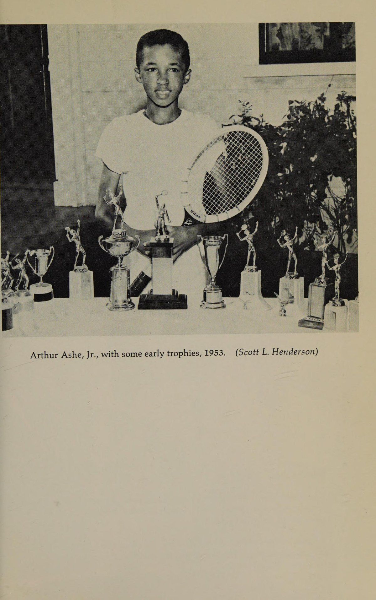
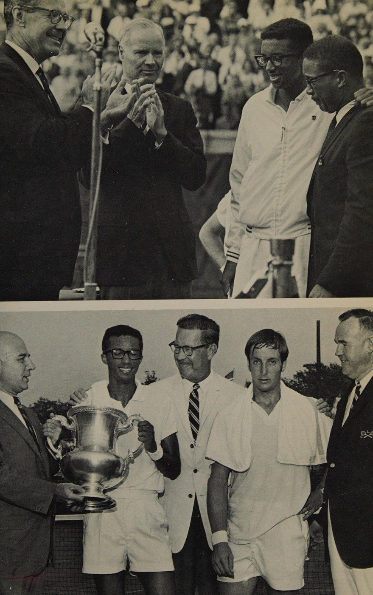
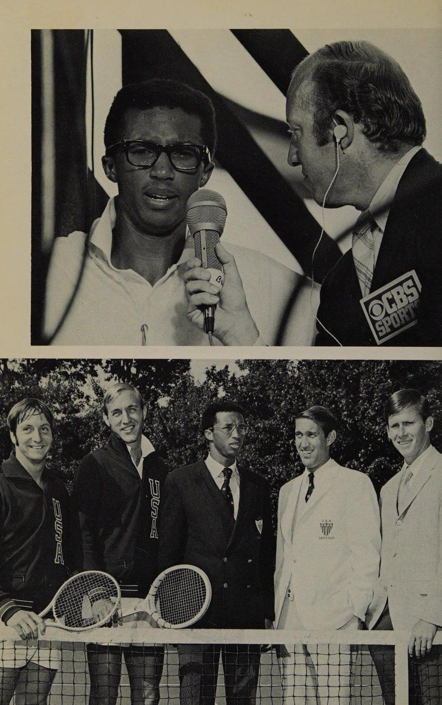
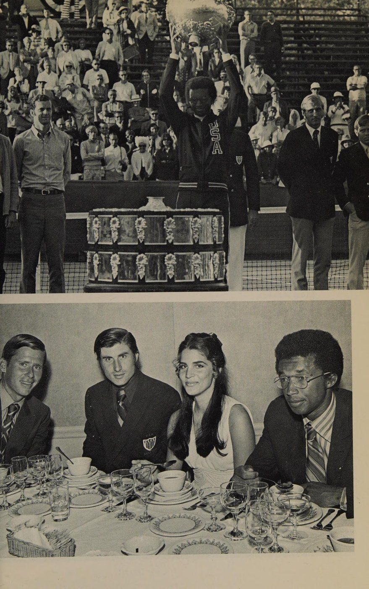
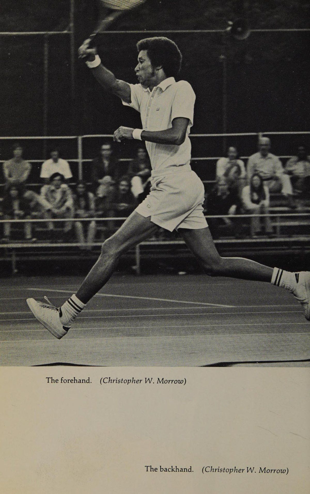
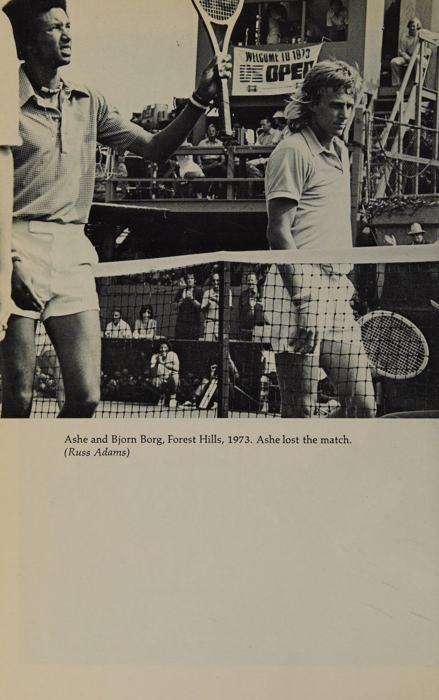
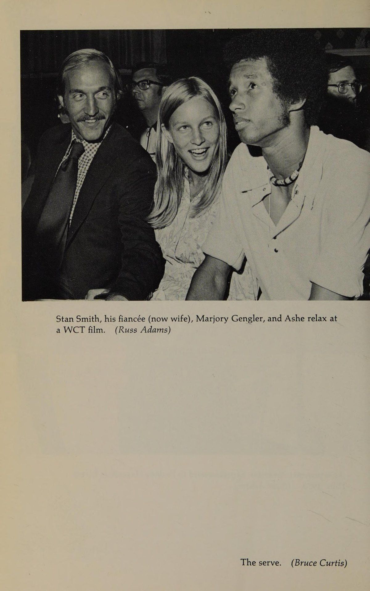
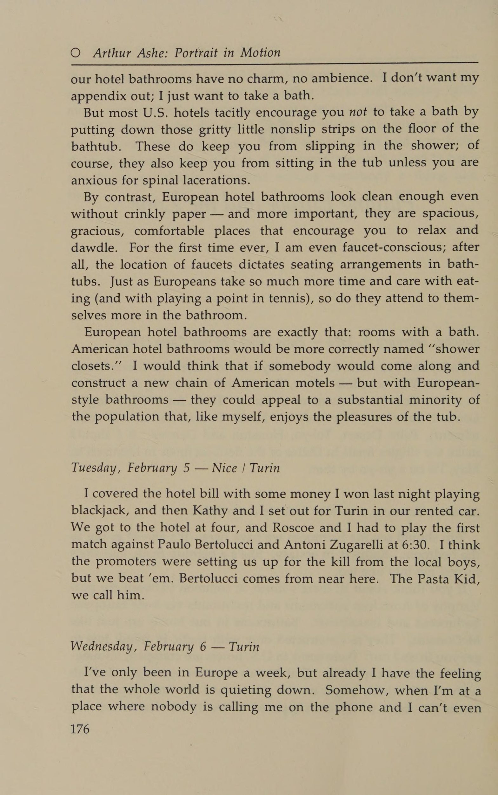

Arthur Ashe: Bức Chân Dung Chuyển Động (Portrait in Motion)
Bản dịch Việt ngữ này chỉ dùng cho mục đích học tập cá nhân, phi thương mại. Bản quyền tác phẩm gốc thuộc về tác giả và nhà xuất bản.
Lời tựa: Một năm chuyển động không ngừng
Lời tựa Tôi muốn nói vài lời để bạn có thể dễ dàng đánh giá cuốn sách này hơn. Đó là cuốn nhật ký về những gì tôi đã làm và những suy nghĩ của tôi trong suốt một năm, từ Wimbledon đến Wimbledon, 1973-74. Nó rời rạc, đó là cách sống của tôi. Các chủ đề không có mối quan hệ nào nối tiếp nhau. Nhưng một trong những khía cạnh độc đáo trong cuộc đời tôi là sự đặt cạnh nhau của những sự kiện và con người khác nhau, và vì vậy tôi nghĩ việc duy trì sự hỗn loạn tuần tự này trong nhật ký là điều vừa chính xác vừa quan trọng. Tôi không phải là thành viên điển hình của giải đấu quần vợt và những trải nghiệm của tôi không có nghĩa là mang tính kết luận, nhưng chúng mang tính đại diện. Những điều duy nhất tôi chưa đề cập đến là những điều tôi nghĩ quá riêng tư. Nhưng tôi nghĩ những gì tôi chưa nói ra chỉ là chuyện riêng tư; Tôi không tin rằng những thiếu sót này sẽ cải thiện sự hiểu biết của bạn về tôi hoặc thế giới xung quanh tôi. Cuốn sách sẽ không giúp bạn chơi tennis. Nó không phải là một hướng dẫn giảng dạy. Nhưng tôi chắc chắn rằng nó sẽ giúp bạn hiểu về quần vợt, đánh giá cao những trận đấu bạn xem và những tay vợt tham gia vào chúng. Cuốn sách thậm chí có thể giúp bạn hiểu được chính trị quần vợt. . . cùng với tám người khác trên thế giới làm được điều đó. Tôi đã cố gắng không trèo lên hộp xà phòng. Nhưng tôi có dẫn dắt một un- Vii
Mở đầu cuộc sống thường ngày, và tôi, cùng với các đồng nghiệp của mình, có vinh dự được nhìn thấy nhiều thế giới hơn hầu hết mọi người. Trong năm nay, tôi đã chơi ở năm châu lục, thực hiện 129 chuyến đi bằng máy bay, ngủ trên 71 chiếc giường khác nhau và đi du lịch 165.000 dặm. Bản thân nó, kiểu khoa trương định lượng này không chứng minh được gì nhiều. Nhưng tôi cố gắng làm cho chuyến đi của mình có ích cho tôi. Ngay cả những người chơi quần vợt ngu ngốc nhất cũng có thể nhận thấy thế giới phụ thuộc lẫn nhau như thế nào. Nếu thỉnh thoảng tôi chê bai chủ đề này, xin vui lòng thông cảm cho tôi; Tôi hy vọng đó là sự dư thừa duy nhất mà bạn sẽ phải chịu đựng. Cuối cùng, theo một nghĩa nào đó, cuốn sách đã có tác dụng chữa bệnh cho tôi. Viết đã buộc tôi phải nhìn kỹ hơn vào cuộc sống và bản thân mình. Đặc biệt, nó đã giúp tôi đánh giá cao hơn hai khía cạnh trong sự nghiệp của mình. Đầu tiên là tôi rất may mắn khi có được cuộc sống như mình đang làm và đặc biệt may mắn được làm điều mình thích. Thứ hai là rất nhiều người tôi biết, đặc biệt là những người đàn ông mà tôi đối đầu, đều là những người khá tốt. A.R.A., JR. viiii
1. Trăm Năm Thứ Hai Bắt Đầu
Trăm năm thứ hai bắt đầu Thứ Hai, ngày 11 tháng 6 năm 1973 — Nam Tư | London Hôm nay có quá nhiều chuyện xảy ra. Thật kỳ lạ khi hôm nay lại là ngày tôi quyết định bắt đầu cuốn nhật ký này. Tôi đã lên kế hoạch bắt đầu nó khi đến Anh tham dự Wimbledon, 1973, để vượt qua Wimbledon, 1974 - vì vậy hôm nay được cho là một nơi tùy ý để bắt đầu. Thay vào đó, đó là ngày mà mọi mặt trong cuộc sống của tôi đều bị ảnh hưởng. Trước hết: Nikki Pilic. Cách đây nhiều tuần tôi đã lên kế hoạch đến thăm anh ấy tại nhà anh ấy ở Nam Tư. Nắng nhỏ vui vẻ và hạnh phúc. Nhưng đột nhiên Nikki trở thành sợi chỉ cho cả thế giới quần vợt. Vì anh ấy mà thậm chí có thể không có Wimbledon, 1973. Dù sao thì đối với nhiều người trong chúng ta thì không. Pilic đã bị Liên đoàn Hiệp hội Quần vợt Nam Tư đe dọa đình chỉ thi đấu vì tổ chức này tuyên bố rằng anh đã từ chối thi đấu Davis Cup cho Nam Tư năm nay sau khi họ nói rằng anh đã cam kết cống hiến hết mình cho đội. Nikki nói rằng điều này không phải như vậy, và hiệp hội các tay vợt của chúng tôi, Hiệp hội các nhà quần vợt chuyên nghiệp, đã thụ lý trường hợp của anh ấy. Tôi đặc biệt quan tâm vì tôi là quan chức của ATP - và là một trong những người sáng lập tổ chức này về vấn đề đó. Nếu Hiệp hội quần vợt sân cỏ quốc tế yêu cầu Wimbledon giữ nguyên án treo giò của Nam Tư, chúng tôi mong đợi sẽ đứng về phía anh ấy. Cấm anh ta, mất tất cả chúng ta. Quần vợt đã có tuổi đời đúng một thế kỷ, và cuối cùng, đây sẽ là thời điểm các tay vợt đứng lên bảo vệ chính mình. Và chúng ta sẽ làm điều đó lần này. Chúng tôi sẽ làm vậy.
Se eee OE ae a ee eee Thứ hai, hôm nay cũng là sinh nhật của Kathy. Kathy Benn là bạn gái của tôi. Chúng tôi đã trở nên vô cùng thân thiết. Cô ấy là một nghệ sĩ thương mại tự do đến từ Toronto và rất xinh đẹp. Rất đẹp. Cô ấy đã ở cùng tôi ở Châu Âu trong tháng vừa qua. Thứ ba - hôm nay, tôi quên mất hôm nay là sinh nhật của Kathy. Và rồi cuối cùng, hôm nay cũng là ngày bà ngoại Cunningham qua đời. Kathy và tôi đã ăn tối với Nikki và vợ anh ấy tối qua, rồi sáng nay chúng tôi đến London. Vào buổi chiều, chúng tôi đi mua sắm dọc đường King’s Road, điều đó khiến cô ấy cảm thấy dễ chịu hơn về ngày sinh nhật của mình. Sau đó, chúng tôi đến Trader Vic's để ăn tối và đánh bạc một lúc ở Câu lạc bộ Playboy. Tôi không nghĩ mình có thể ngủ được hơn hai mươi phút khi dì Marie gọi điện từ Richmond báo tin về Big Mama. Tôi lưỡng lự một lúc không biết có nên tiêu tiền chỉ để bay qua rồi về dự đám tang hay không, nhưng thực sự không có quyết định nào cả. Big Mama là một trong những nữ anh hùng của tôi. Tôi phải đi. Bà là mẹ của mẹ tôi và bà gần như một mình nuôi mười người con. Người lớn nhất trong số họ chỉ mới mười bảy tuổi khi ông tôi qua đời. Bạn nghe rất nhiều về các gia đình da đen theo chế độ mẫu hệ - à, Big Mama là chế độ mẫu hệ da đen nhưng chỉ vì bà ấy phải như vậy và vì bà ấy giỏi việc đó. Cô giữ cả gia đình bên nhau trong suốt thời gian làm việc toàn thời gian trong bếp tại một trường công dành cho người da trắng. Cô ấy là một người phụ nữ mạnh mẽ, thân yêu và tốt bụng. Tôi sẽ về nhà. Thứ Ba, ngày 12 tháng 6 - Luân Đôn Sáng nay tôi đã chạy ở Hyde Park; Tôi đã chạy ở một số công viên tuyệt vời trên thế giới. Tôi đến quán Inn on the Park, nơi Howard Hughes sống ở tầng trên cùng. Họ nói. Rồi chiều nay, Kathy và tôi đã đến thăm một vài viện bảo tàng. Chúng tôi bắt đầu tại Phòng trưng bày Lefevre, nơi trưng bày bộ sưu tập của Edward Burns. Sau đó, chúng tôi đi đến Phòng trưng bày Tate và cuối cùng đến Harrods, nơi tôi say mê mua một bức tranh khắc của Rembrandt. Nó có tựa đề Người da đen trắng và nó mang lại cho tôi một số tiền. Nhưng tôi cực kỳ phấn khích. Toàn bộ chỉ có tám bản khắc đặc biệt này
Một trăm năm thứ hai bắt đầu Hỡi thế giới; sau khi bỏ chạy, họ đã phá hủy chiếc đĩa. Vì vậy, tôi sở hữu một chiếc Rembrandt nguyên bản và có lẽ tôi sẽ khoe khoang rất nhiều. Thứ Tư, ngày 13 tháng 6 - Luân Đôn | New York Chúng tôi rời đi trên những chiếc máy bay khác nhau, tôi đến New York, Kathy đến Toronto. Cuộc chia ly rất đau đớn nhưng tôi cũng cảm thấy nhẹ nhõm hơn một chút vì chúng tôi đã ở bên nhau suốt 4 tuần qua, cả ngày lẫn đêm, và đó là khoảng thời gian dài nhất tôi từng trải qua với một người phụ nữ. Thứ Năm, ngày 14 tháng 6 - New York | Richmond | New York Cha tôi gặp tôi ở Byrd Field, và chúng tôi lái xe đến nhà chú James Cunningham của tôi ở North Side. Tất cả những đứa con còn sống của bà tôi đều có mặt ở đó. Hai người đã chết: mẹ tôi và một người dì. Thật tuyệt vời khi được gặp lại tất cả gia đình tôi. Lần cuối cùng chúng tôi ở bên nhau là hai mươi ba năm trước, khi mẹ tôi qua đời vào mùa xuân. Tôi nghĩ bạn càng có nhiều gia đình thì bạn càng gần gũi hơn. Tôi còn quá nhỏ để đến dự đám tang của mẹ tôi. Đám tang duy nhất tôi từng dự trước ngày hôm nay là đám tang của ông nội bên nội tôi. Họ hỏi tôi có muốn gặp bà tôi lần cuối không, nhưng tôi nói không, tôi không muốn. Tôi không biết tại sao; Bây giờ tôi rất hối hận. Lễ tang diễn ra ở Westwood Baptist. Westwood là vùng ngoại ô của Richmond, một vùng đất nhỏ màu đen nằm trong khung cảnh trắng xóa. Có lẽ nó lớn lên vì nhu cầu người giúp việc trong vùng. Nhà của Big Mama ở số 93 đường Glenburne. Nó chỉ có năm phòng và một phòng tắm, nhưng có một sân sau khá rộng và có nhiều chỗ để dạo quanh khu phố hoặc quây quần bên bà tôi và nghe bà nói chuyện. Bà luôn có những câu châm ngôn dân gian sâu sắc mà tôi vẫn còn nhớ: nếu bạn có đôi tai nhỏ tức là bạn keo kiệt; nếu mũi bạn ướt, điều đó cho thấy bạn là người xấu tính; kiểu đó. Khi lớn lên, tôi đã trải qua rất nhiều ngày cuối tuần vui vẻ khi đến thăm 93 Glenburne. Tôi cũng dành tất cả những buổi sáng Chủ nhật đó ở Westwood Baptist. Tôi chưa bao giờ nói với Big Mama rằng tôi đã ngừng tin vào Chúa Giêsu. Tôi luôn tiếp tục đến trường Chúa nhật và diễn xuất trong tất cả các vở kịch ở nhà thờ. Tôi đoán hầu hết gia đình tôi vẫn cho rằng tôi là người theo đạo Cơ đốc, nhưng tôi luôn rất nghi ngờ. Ngay cả đối với một đứa trẻ, |
©O có đầu óc khoa học, và không đời nào tôi có thể chấp nhận chủ nghĩa chính thống của Baptist. Một trong những ký ức sống động nhất của tôi khi lớn lên là vào năm 1953, khi tôi 10 tuổi, khi Tổng thống Eisenhower đưa cụm từ “dưới quyền Chúa” vào Lời cam kết trung thành: “… một quốc gia, dưới quyền Chúa, với tự do và…” Tôi nhớ rất rõ ràng rằng lúc đó tôi còn trẻ, rằng anh ấy không có quyền làm điều đó. Điều tôi luôn ghét nhất về tôn giáo là nó bị ép buộc đối với tôi. Nhưng tôi chắc chắn không bao giờ nói với Big Mama rằng tôi là người theo thuyết bất khả tri của Closet. Đám tang của Big Mama đưa tôi trở lại Westwood Baptist lần đầu tiên sau nhiều năm, và thậm chí với một bộ phận mới trong nhà thờ và một nhà truyền giáo trẻ tuổi thông minh và một bài đọc từ Kinh thánh “mới”, dường như điều đó dường như chưa bao giờ xảy ra. Và đó cũng là một buổi lễ rất cảm động. Cuối cùng, khi họ đẩy bà xuống lối đi, chú Reudi, đứa con út của bà, chỉ nói: "Tạm biệt mẹ," nhưng với tôi thế là đủ rồi. Tôi đã ra đi. Tôi đã khóc như thể đã không khóc trong nhiều năm. Tôi không thể dừng lại. Tôi đã khóc cho đến khi bước ra ngoài xe của anh họ. Có lẽ lần đầu tiên trong đời tôi cảm thấy điều gì đó mà tôi tưởng tượng rằng phụ nữ sẽ trải qua khi họ được phép khóc thoải mái. Tôi cảm thấy nhẹ nhõm khi những giọt nước mắt cuối cùng cũng ngừng rơi. Chúng tôi chôn cất. Big Mama ở Nghĩa trang Woodlawn, không xa mẹ tôi. Trời ấm áp và bầu trời trong xanh khi họ chôn cất bà. Sau đó, tôi đáp chuyến bay về New York và lên chuyến 9 giờ tối trên chuyến bay Pan Am để tới London. không thể tham dự phiên điều trần của Nikki Pilic. Chúng tôi đang cố gắng xin lệnh chống lại ILTF tại sân đấu Anh để Nikki có thể thi đấu tại Wimbledon. Thứ bảy, ngày 16 tháng 6 - London. Nó có cảm giác rất khác với London, vì vậy có một điều là ở đây nóng một cách bất thường vào đêm qua.
Trăm năm thứ hai bắt đầu O một điều nữa, khí hậu dành cho những người chơi quần vợt thậm chí còn nóng hơn. Nói chung, báo chí đã quay lưng lại với chúng tôi, và bởi vì Wimbledon được coi là một thể chế quốc gia nên về cơ bản chỉ là tranh chấp về quản lý lao động đã bị bóp méo để khiến có vẻ như các tay vợt đang chống lại người Anh. Và tôi chống Anh? Bạn đang đùa à? Tôi yêu nơi này. London đã phải là thành phố văn minh, văn minh nhất thế giới. Tất nhiên, Nikki là tâm điểm. Đột nhiên, anh ấy trở thành tay vợt quần vợt nổi tiếng nhất thế giới và là biểu tượng cho sự thách thức của giai cấp công nhân. Điều đó thật mỉa mai vì về mặt chính trị, Pilic nằm ở đâu đó bên phải Marie Antoinette. Anh ấy có lẽ là thành viên bảo thủ nhất trong đoàn, thậm chí còn cổ hủ và ẩn dật về nhiều mặt. Anh ta thường mặc một chiếc áo khoác polo chắc hẳn là đồ cổ từ những năm 1930, và cà vạt của anh ta hẹp đến mức có thể dùng làm dây giày gấp đôi. Nikki cũng là một con lợn theo chủ nghĩa sô-vanh nam nguyên thủy (so sánh với Bobby Riggs là một nhà nữ quyền) đồng thời là một kẻ đạo đức giả mãn tính và hay phàn nàn. Nikki sẽ liên tục phàn nàn về những thất bại của người Mỹ khi ở Hoa Kỳ, nhưng ngay sau khi chúng tôi đến châu Âu và có điều gì đó không đáng kể xảy ra - chẳng hạn, Nikki không thể làm cho bánh mì nướng buổi sáng của anh ấy đủ ấm - anh ấy sẽ rời đi, mắng mỏ người châu Âu vì sự kém hiệu quả của họ và khen ngợi người Mỹ. Tuy nhiên, theo Pilic, tính hiệu quả của người Mỹ chúng ta đang thiếu kỷ luật một cách đáng buồn. Tất cả chúng ta đều là những người có trái tim mềm yếu. Ví dụ, giải pháp của Nikki cho vấn đề ma túy là bắn chết tất cả những kẻ đẩy ma túy. Thật trùng hợp, đây cũng là giải pháp của anh cho vấn đề mà anh nhận thấy ở những người hippies tóc dài. Trên thực tế, ông đã cẩn thận vạch ra kế hoạch tuyệt chủng loài tóc dài này cho Jeff Borowiak ngay khi Jeff tham gia chuyến tham quan. Vào thời điểm đó, Jeff để tóc dài đến giữa lưng. Gần đây hơn, Nikki còn có giải pháp cho vụ cướp máy bay. Đó là: bắn những tên không tặc. Nhưng may mắn cho chúng ta là ông ấy vẫn chưa đưa ra đề xuất xử lý những tay vợt phản đối. Tuy nhiên, với tất cả những điều đó, Nikki thực sự là một người khá hấp dẫn và mọi người đều thích anh ấy. Một trong những lần đầu tiên sau khi tôi gặp anh ấy, anh ấy bước vào phòng thay đồ và đặt tay lên đầu tôi. Chỉ cần giữ nó ở đó một lúc. Tôi không biết chuyện quái gì đang xảy ra. Cuối cùng anh ta nói: ‘Không giống như len thép. Bạn biết ý tôi là gì không? Không giống như len thép chút nào. Thật mềm mại.”
© Nhưng tính cách của Nikki không liên quan đến vấn đề này, bởi vì chúng tôi sẽ hỗ trợ bất kỳ thành viên nào của ATP bị vướng vào mối ràng buộc này. Chuyện gì đã xảy ra thế này. Trong vài năm gần đây, các ông bố quần vợt Nam Tư không muốn liên quan gì đến Nikki vì anh ta là một tay tư bản chuyên nghiệp thối nát bẩn thỉu. Tuy nhiên, đột nhiên họ quyết định Nikki đã trong sáng trở lại và yêu cầu anh ấy đại diện cho đội. Anh ấy nói anh ấy sẽ làm vậy - nếu tay vợt hàng đầu Nam Tư khác, Zeljko Franulovic, bình phục chấn thương và cũng có thể thi đấu và nếu Pilic không có cam kết nào khác. Chà, Nikki đã đủ điều kiện tham dự trận chung kết đôi của Giải quần vợt vô địch thế giới với Allan Stone, và Franulovic vẫn chưa đủ bình phục để thi đấu. Vì vậy, Nikki đã không thành công - về hai tội danh - nhưng các quan chức quần vợt Nam Tư khẳng định anh ấy đã cam kết và kêu gọi ILTF, điều này bằng cách nào đó đã thuyết phục Wimbledon từ chối sự tham gia của Nikki. Nguyên nhân của tất cả những điều này là trong khi các tay vợt đang hứng chịu mọi áp lực vì đe dọa tẩy chay Wimbledon, thì chính ILTF, chứ không phải chúng tôi, mới biến Wimbledon thành chiến trường. Nikki và tôi hôm nay ra ngoài tập luyện và tình cờ gặp Herman David, chủ tịch Wimbledon, khi chúng tôi đang thay quần áo. Vào năm 1968, ông David là người đi đầu trong việc mở cửa Wimbledon cho các tay vợt chuyên nghiệp và trên thực tế đã thay đổi toàn bộ bản chất của con quái vật quần vợt. Năm năm kể từ năm 1968 là một thiên niên kỷ. Hiện tại, những đứa trẻ mới đến với quần vợt vẫn chưa có khái niệm gì về chủ nghĩa shamateurism. Khi tôi đến Wimbledon lần đầu tiên vào năm 1963, đúng mười năm trước, sự hiện diện của tôi ở đó là do Hiệp hội Quần vợt Sân cỏ Hoa Kỳ quy định. Họ quyết định ai sẽ chơi và ai không. Theo thỏa thuận, bạn sẽ thi đấu tại các sự kiện được chỉ định của Mỹ trong thời gian còn lại của mùa hè. Khoản bồi thường là 50 bảng Anh, do Bill Clothingier của USLTA chia cho mỗi người chơi. Tôi nhớ tôi đã ghen tị biết bao với Chuck McKinley và Dennis Ralston, hai người Mỹ, những người nhận được số tiền lớn, mỗi người 100 bảng. Các tay vợt người Anh, giống như chúng tôi, được sắp xếp theo hiệp hội của họ. Hầu hết họ phải chơi “tuần lễ quận”, ném bóng trên cát vào gậy. Khi đó, người Úc được cai trị bởi các công ty sản xuất đồ thể thao, Dunlop và Slazengers, và có thể thích kinh doanh hơn một chút trong việc hối hả thực hiện các giao dịch ngầm. Mọi người đều trợn mắt khi nói về Wimbledon và tất cả những truyền thống thiêng liêng của nó.

Trăm năm thứ hai bắt đầu, nhưng nhiều người đã dễ dàng quên rằng trong những năm trước 1968, Wimbledon quan trọng đối với thế giới quần vợt như một chợ thịt cũng như một giải vô địch. Phòng chờ dành cho các tay vợt tại Wimbledon là nơi tất cả các nhà tổ chức giới thiệu các tay vợt cho giải đấu của họ. Tất nhiên, đó đều là những giao dịch đáng giá một xu. Khi đó Roy Emerson là tay vợt nghiệp dư số một, và Emmo có thể đã kiếm được 30.000 USD trong năm thành công nhất của mình. Ngày nay, những tay vợt mà bạn chưa từng nghe nói đến nhưng không thể vượt qua vòng 16, đã kiếm được 30.000 đô la cho năm 1973, và vẫn chưa kết thúc được một nửa. Lamar Hunt với Quần vợt vô địch thế giới và Gladys Heldman với chuyến du đấu của Virginia Slims chịu trách nhiệm chính cho vận may này, và sau đó ATP ra đời và mang lại cho các tay vợt sự cân bằng quyền lực. Tôi đã nói chuyện với ông David về tình hình hiện tại. Anh ấy là một người đàn ông dễ chịu và tôi nghĩ anh ấy đang bị lợi dụng. '' Tại sao bạn lại để ILTF ẩn nấp sau những bí mật của Wimbledon? Tôi hỏi. Anh né tránh câu hỏi. “Đó là vấn đề nguyên tắc,” ông David trả lời, và chúng tôi đi vòng quanh từ đó, cách mọi người luôn làm khi nguyên tắc được viện dẫn. Ở bên cạnh, Roger Taylor cũng đang chăm chú mặc quần áo - và anh ấy không bao giờ đưa ra một lời nào trong cuộc trò chuyện. Roger thực sự bị kẹt ở giữa vì anh ấy là người Anh và do đó Wimbledon là chức vô địch quốc gia cũng như chức vô địch thế giới của anh ấy. Cuối cùng, bực tức và chẳng đi đến đâu, Nikki, Ismail El Shafei và tôi ra ngoài tập luyện. Izzy, người đến từ Ai Cập, là thành viên hội đồng quản trị khác của ATP. Ngay khi chúng tôi đến sân, người quản lý của Wimbledon hối hả bước ra và cấm chúng tôi bước lên sân. ‘Đây là câu lạc bộ tư nhân và chúng tôi không thể tiếp nhận bạn. Hãy hiểu rằng, còn một tuần nữa là Wimbledon bắt đầu và chúng ta không thể tập luyện cho đến thứ Tư. Bạn có thể tưởng tượng sân golf US Open sẽ loại Tom Weiskopf ngay trước khi giải đấu bắt đầu không? Nơi duy nhất bạn có thể tập luyện trên sân cỏ là Câu lạc bộ Queen, nơi mà tất cả chúng tôi đều ghét. Queen's luôn tổ chức giải đấu khởi động trước Wimbledon; nó sẽ bắt đầu vào ngày mốt. Theo truyền thống, giải đấu này có ít giải thưởng và lòng hiếu khách nhất - thậm chí cả phép lịch sự thông thường - so với bất kỳ giải đấu nào trên thế giới. Trong thời kỳ nghiệp dư trước đây, họ thậm chí còn không thanh toán chi phí; ít nhất ở mọi nơi khác đều có danh dự giữa những tên trộm.
© Nhưng Queen's biết rằng các tay vợt phải đến Anh để tập luyện trên sân cỏ trước Wimbledon nên họ đã thuê chúng tôi. Bạn đã nghe nói về khán giả bị giam cầm; tại Queen's, chúng tôi là những người biểu diễn bị giam cầm. Hôm nay, như thường lệ, câu lạc bộ không cho phép chúng tôi tập luyện nên Nikki, Izzy và tôi cũng bị từ chối. Cuối cùng, với sự giúp đỡ của một người bạn, chúng tôi có cơ hội tập luyện trên sân cỏ của Câu lạc bộ New Zealand. Chủ nhật, ngày 17 tháng 6 - Luân Đôn Chiều nay, chúng tôi được phép tập luyện tại Queen's ở Sân số 3 từ 3:55 đến 4:30 và sau đó ở Sân số 5 từ 4:30 đến 5. Khi không có ai đến thế chỗ chúng tôi ở Sân số 3 lúc 4:30, chúng tôi chỉ làm điều hợp lý, thuận tiện và hoàn thành bài tập của mình ở đó. Khi chúng tôi bước vào phòng thay đồ, một quan chức câu lạc bộ đã lớn tiếng mắng mỏ chúng tôi vì chơi “không được phép”. Ông ấy chỉ coi thường chúng tôi, nói chuyện với chúng tôi với vẻ khinh thường. Tất nhiên, đây là một đất nước mà thâm niên và sự cổ xưa có giá trị rất lớn - tôi không bao giờ có thể tưởng tượng được một thanh niên ở độ tuổi bốn mươi, như Kennedy, lại được bầu làm Thủ tướng - và kể từ khi chúng tôi bắt đầu đứng lên chống lại lệnh cấm của Nikki, tất cả chúng tôi đều có thể cảm nhận được thái độ này rằng chúng tôi đang bị coi như những cậu bé nghịch ngợm đang thử thách những người lớn tuổi khôn ngoan của mình. Giống như tất cả người da đen đều là con trai đối với nhiều người da trắng ở Mỹ, tất cả trẻ em chơi quần vợt ở đây cũng vậy. Thứ Hai, ngày 18 tháng 6 - Phiên điều trần của London Nikki đã được triệu tập lại lúc 10:30 sáng nay và một số người trong hội đồng quản trị của chúng tôi đã dành phần lớn thời gian trong ngày tại sân đấu hoặc trao đổi với Luật sư của Nữ hoàng, luật sư người Anh tranh luận về vụ việc của chúng tôi. Đối với tôi, những lập luận của anh ấy chắc chắn có vẻ hợp lý và tất cả chúng tôi vẫn khá tin tưởng rằng thẩm phán sẽ tuyên bố thay chúng tôi. Thứ Ba, ngày 19 tháng 6 - Luân Đôn Tôi đã quay lại phiên điều trần Pilic sáng nay và tôi phải thừa nhận rằng Luật sư của Nữ hoàng ILTF thật tuyệt vời. Anh ấy đã có một
The Second Hundred Years Begin O sóc chuột có khuôn mặt và nói chuyện suốt với vai ngả về phía sau nên lúc nào trông cũng khó chịu, nhưng anh ta có khả năng sử dụng ngôn ngữ rất tốt và khá thuyết phục. Tôi đã không rời đi một cách tự tin như ngày hôm qua. Tôi đã tham dự rất nhiều phiên điều trần và cuộc họp ATP đẫm máu đến mức gần như không có cơ hội tập luyện, ngay cả khi tôi có thể tìm được sân để tập luyện, vì vậy tôi khá nhẹ nhõm vì đã thắng trận đầu tiên tại Queen's chiều nay mà không gặp quá nhiều khó khăn - 7-5, 6-2 trước Ross Case nhỏ bé của Úc. Anh ta là một chàng trai nhỏ nhắn dễ thương, trông giống như một con gấu koala, và có lẽ đó là lý do tại sao những người Úc khác để anh ta thoát khỏi tội giết người như vậy. Họ gọi anh là “Rắn” vì sự ranh ma của anh, nhưng họ dung thứ cho những gì anh làm. Nó thực sự tuyệt vời; Tôi chưa bao giờ thấy người Úc phải chịu đựng sự cao ngạo như vậy từ một trong những đứa trẻ của họ. Có lẽ chúng đang êm dịu. Con rắn thật đáng kinh ngạc. Hôm nọ có một đám người Úc đang đợi xe. Nó lao lên, tài xế mở cốp, Snake ném hết hành lý vào rồi ngồi vào chỗ ngồi tốt nhất phía trước như thể mình là chủ xe. Tất cả họ đều cười và gọi anh ta là Rắn, nhưng họ đã lấy nó. Trên sân, Snake khiến tôi nhớ đến Rosewall trẻ tuổi. Tất nhiên là không tốt lắm, nhưng cùng kích thước và chủng loại. Ví dụ, Case có một trong những cú vô lê hay nhất thế giới; đối với tất cả những cuộc nói chuyện về những cú đánh nền của Muscles Rosewall, anh ấy có cú vô lê hay nhất. Một trong những quan niệm sai lầm lớn về quần vợt hiện đại là nó là một trò chơi lớn - giao bóng và vô lê. Nhưng sự thật là, nó giống một trò chơi đánh vô-lê lớn hơn là một trò chơi giao bóng lớn, và những người đánh vô-lê giỏi nhất thường là những người nhỏ con với tay ngắn - như Rosewall và Case - chứ không phải những người cao lớn với những cú giao bóng quét. Cú vô lê là một cú đấm có kiểm soát và đơn giản là việc kiểm soát cánh tay ngắn sẽ dễ dàng hơn so với cú đấm dài. Tôi luôn đánh vô-lê tốt hơn khi có thời gian để nghẹn ngào. Lew Hoad từng cắt đi nửa inch khỏi cán vợt của mình và đó không phải là một ý tưởng tồi. Những cú giao bóng lớn ngày nay chủ yếu được bàn tán nhiều, nhưng chết tiệt, trên thế giới hầu như không có hơn nửa tá cú giao bóng này. Tôi có thể nói rằng những tay bắn súng thần công hợp pháp duy nhất hiện nay là John Newcombe, John Alexander và Paul Kronk của Australia; Vladimir Zednik của Tiệp Khắc; và Stan Smith, Roscoe Tanner và tôi của Hoa Kỳ I
© sẽ nói rằng bảy người trong chúng tôi là những người duy nhất trên thế giới có thể thực hiện được 40 đến 50 phần trăm hoặc cao hơn những cú giao bóng đầu tiên lớn của mình và không bị trả lại 20 phần trăm. Nếu bạn có thể làm được điều đó thì cú giao bóng của bạn sẽ lớn. Colin Dibley của Úc có thể là người có cú giao bóng nhanh nhất, nhưng anh ấy không đạt được tỷ lệ giao bóng đủ cao. Cú ném của anh ấy hoàn toàn sai, quá cao so với đầu anh ấy. Colin cũng mắc lỗi kép quá nhiều. Bạn biết đấy, Rosewall là một trong những người mắc lỗi kép tồi tệ nhất trong trò chơi. Điều đó luôn làm mọi người ngạc nhiên, nhưng Muscles chỉ có một cú giao bóng vừa đủ - mặc dù thực tế là anh ấy đã thực hiện mọi cú đánh khác - và vì vậy anh ấy không thực hiện được cú giao bóng đó. Mặt khác, Fred Stolle đánh nhân đôi rất nhiều vì anh ta có cú giao bóng thứ hai khó đến mức anh ta có nguy cơ cố gắng tấn công bằng nó. Dick Crealy, Brian Gottfried, El Shafei, Nail-bag Carmichael và Brian Fairlie là những người khác mắc lỗi kép. Đối tác đánh đôi của tôi, Roscoe Tanner, cũng dễ bị đánh đôi. (Bản thân tôi có thể không đánh được nhiều cú đánh đôi như vậy nhưng cú giao bóng thứ hai của tôi để lại nhiều điều đáng mong đợi.) Cú giao bóng là điều mang tính cá nhân nhất trong quần vợt, bởi vì không có ai khác tham gia, và nếu bạn chơi với một đối tác đánh đôi trong một thời gian dài, bạn sẽ nhận ra cú giao bóng của anh ấy giống như giọng nói của ai đó mà bạn biết rõ hoặc cơ thể của người bạn yêu. Khi tôi đứng trên lưới trong khi Roscoe đang giao bóng mà không cần nhìn, tôi có thể biết anh ấy đánh bóng như thế nào từ âm thanh và quỹ đạo của nó khi nó đi qua tôi. Nếu quỹ đạo quá dốc và bằng phẳng, tôi có thể quay lại và nói, ""Anh không theo kịp," ngay cả khi tôi không thấy anh ấy giao bóng cả ngày. Khi tôi chơi nhiều với Dennis Ralston, tôi có thể nghe thấy anh ấy giao bóng như thế nào. Tôi sẽ nói điều gì đó như: 'Quả bóng nghe có vẻ phẳng quá, Denny. Hãy xoáy thêm một chút vào nó." Hạt giống cho Wimbledon đã được công bố ngày hôm nay - tôi đứng thứ tư sau Smith, Ilie Nastase và Rosewall - nhưng chúng đã được đưa ra tranh luận chỉ vài giờ sau đó. Marty Riessen đến gặp tôi tại Queen's vào khoảng năm giờ chiều nay, ngay sau trận đấu của tôi với Snake, và nói với tôi rằng thẩm phán đã phán quyết rằng vấn đề của Nikki Pilic và Wimbledon nằm ngoài thẩm quyền của ông ấy. Anh ấy không quyết định chống lại chúng tôi; anh ta chỉ nói rằng anh ta không có quyền ra lệnh giao lộ. Ngay lập tức, chúng tôi triệu tập một cuộc họp điều hành của ATP vào tối nay tại Westbury.
Trăm Năm Thứ Hai Bắt Đầu O Hiện Tại là Jack Kramer; Pierre Darmon, giám đốc giải đấu của giải vô địch Pháp; John Barrett, người đại diện cho Slazengers và viết bài về quần vợt cho tờ Financial Times; và trong số những người chơi: El Shafei, Mark Cox, Nikki, Smith, Jim McManus và tôi, cùng chủ tịch, Cliff Drysdale. Chúng tôi nói chuyện và tranh luận hàng giờ, rất kiềm chế, hết sức lịch sự, nhưng luôn trong tình trạng căng thẳng, vì chúng tôi nhận ra rằng chúng tôi đang trong quá trình tuyên chiến. Vấn đề rất đơn giản: liệu một nhà thầu độc lập có quyền quyết định thời gian và địa điểm mình sẽ thi đấu không? Nếu Nikki Pilic có thể bị buộc phải thi đấu ở Davis Cup và bị từ chối tham dự Wimbledon, thì chẳng phải sẽ có tiền lệ là tôi sẽ bị buộc phải chơi một giải đấu rinky-dink nào đó với nguy cơ bị từ chối tham dự Forest Hills sao? Cuối cùng, khoảng sau một giờ, Drysdale kêu gọi bỏ phiếu. Pilic đã bỏ phiếu trắng vì anh ấy là người có vấn đề. Barrett cũng vậy, người cảm thấy mối quan hệ của anh với Slazengers, người sử dụng quả bóng ở Wimbledon, đã khiến anh có xung đột lợi ích. Cox đã bỏ phiếu cho nước Anh. Bảy người còn lại - Drysdale, McManus, Smith, El Shafei, Kramer, Darmon và tôi - đều bỏ phiếu rút lui. Gần hai giờ tôi mới đi ngủ nhưng tôi nằm đó suy nghĩ rất lâu. Theo những gì tôi biết, đây là lần đầu tiên bất kỳ vận động viên nào trong bất kỳ môn thể thao nào đã bỏ phiếu rút lui khỏi giải vô địch thế giới về nguyên tắc. Tôi khó có thể tin được những gì chúng tôi đã làm. tôi là
2. 'Đây không phải là giải vô địch thế giới'
“Tt không phải là giải vô địch thế giới” Thứ Tư, ngày 20 tháng 6 năm 1973 - London Điều đầu tiên sáng nay là chúng tôi đã có một cuộc họp đầy đủ các thành viên của ATP tại khách sạn Gloucester và trình bày với họ đề xuất của hội đồng quản trị. Họ chấp nhận nó mà hầu như không có bất đồng quan điểm nào. Chúng tôi dường như đoàn kết với một người đàn ông - ngay cả người Anh nghèo, người mà mọi người đều đồng cảm. Thật trùng hợp, trận đấu của tôi tại Queen hôm nay lại diễn ra với Roger Taylor. Anh ấy thực sự có mặt tại chỗ. Những người chơi quần vợt ở Anh đã tìm thấy anh ở Sheffield, nơi cha anh là một công nhân luyện thép, và khi anh mười bảy tuổi, họ đưa Roger đến Wimbledon, và anh sống ở đó, tại YMCA, trong hai năm rưỡi, để học chơi quần vợt. Gần đây anh ấy đã chuyển về Wimbledon – trong một ngôi nhà trị giá 120.000 đô la ở một trong những khu vực sang trọng nhất của ngôi làng. Bây giờ tôi nghe nói vợ anh ấy đang nói rõ với Roger rằng cô ấy mong anh ấy thi đấu. Trong hoàn cảnh đó, Cox có lợi hơn. Anh ấy đã bỏ phiếu chống lại việc rút lui của các tay vợt, và anh ấy rất thông minh và ăn nói lưu loát, một người đàn ông Cambridge, một trong những người thông minh nhất trong số các tay vợt, đến mức anh ấy sẽ có thể tự bảo vệ mình. Mark không phải là một nhà lãnh đạo - đừng đặt anh ấy vào tình thế khó khăn - nhưng anh ấy là một nhân viên tuyệt vời, và anh ấy là người mà chúng tôi đã nhờ đến để chủ trì cuộc họp đầu tiên dẫn đến sự hình thành của ATP. Lúc đó chúng tôi đang ở thành phố Quebec,
"Tt không phải là giải vô địch thế giới' O April năm '71, và có tin đồn rằng ILTF và World Championship Tennis vừa mới làm hòa. Cách họ làm điều đó chỉ đơn giản là chia ra toàn bộ thế giới quần vợt. Tất nhiên, không ai hỏi ý kiến các tay vợt; họ chỉ tiếp tục và hành động như thể các giải quần vợt không cần các tay vợt. Điều đó thực sự làm chúng tôi khó chịu, và thế là chúng tôi tập hợp lại, năm người chúng tôi: Drysdale, Newcombe, Charlie Pasarell, tôi và Cox phụ trách, và ngoài ra còn có ATP. Ngược lại với Mark, Roger là kiểu người trầm tính, đẹp trai. Anh ấy là một quý cô trước khi kết hôn với Frances MacLennan, một tay vợt người Scotland và khá giả, nhưng anh ấy chưa bao giờ phải làm việc với các cô gái. tất nhiên, khiến anh ấy trở nên khó chịu hơn khi đối đầu. Tuy nhiên, chơi với Roger không giống như đối đầu với Nastase. Mọi người đều biết rằng hầu hết thời gian Nasty đều đặt câu hỏi đó vào hiệu ứng. Nhưng không ai đặt câu hỏi về động cơ của Roger hoặc sự trung thực của anh ấy. Tuy nhiên, hôm nay Roger không có nhiều điều để phàn nàn. Trời đang mưa, nên chúng tôi chơi bên trong board ở Queen's, và anh ấy đã đánh bại tôi với tỷ số 6-3 ở hiệp thứ ba. Tôi chỉ chơi không tốt thôi; tôi chưa bao giờ có thể kiểm soát được trận đấu. Ngoài ra, Roger có thể rất nhanh và có cú đánh trái tay yếu và thậm chí anh ấy hiếm khi cố gắng tấn công, nhưng anh ấy là một tay đấm phản công hàng đầu. bạn, đưa bạn đi vòng quanh, và anh ấy là một tay chơi cú vô-lê rất ổn định. Tối nay tôi đã cố gắng thoát khỏi mọi thứ một chút bằng cách đến đánh bạc ở Câu lạc bộ Playboy, và tôi nên gặp ai ở bàn blackjack nhưng Joe Frazier. Anh ấy đang ở London để đấu với nhà vô địch người Anh, Joe Bugner không biết tôi là ai. Những vận động viên da đen khác thường không biết tôi, mặc dù sự bùng nổ của quần vợt đã khiến tôi nổi tiếng hơn nhiều ở bên ngoài thế giới quần vợt. đã tự giới thiệu mình nên tôi ngồi xuống và chúng tôi chơi
© bên nhau một thời gian. Tôi thắng được 50 bảng và rất vui mừng; Smokin' Joe già đã mang về nhà khoảng 7000 bảng Anh. Phải thừa nhận rằng điều này thật xấu hổ, nhưng tiền khiến tôi hạnh phúc. Tôi không yên tâm về tiền bạc như những người như Pasarell và Graebner, những người luôn có những thứ chết tiệt đó. Nhưng ý tôi không phải là tôi chỉ ngồi trên đó. Tôi là người cống hiến khá tốt cho những mục đích mà tôi thực sự quan tâm và tôi thích chơi bằng tiền để đánh bạc - mặc dù tôi sẽ không bao giờ mạo hiểm để mất hơn 100 đô la hoặc hơn. Nhưng có thể nếu bạn chưa bao giờ có tiền thì bạn sẽ có xu hướng sử dụng nó chỉ để nhắc nhở bản thân rằng bạn có một ít. Tôi thực sự thích đánh bạc, tôi phát cuồng vì nó - và khi tôi thắng, ngay cả với số tiền nhỏ, tôi cảm thấy tuyệt vời. Nó không khác với cảm giác của tôi khi chơi quần vợt. Nếu tôi thắng một giải đấu thì mọi thứ đều hoàn hảo. Tôi không lo lắng về bất cứ điều gì và mọi người đều là bạn của tôi. Nói chung, toàn bộ quan điểm của tôi về cuộc sống được quyết định bởi việc tôi chơi quần vợt tốt (hoặc tệ) như thế nào - điều mà tôi chắc chắn không phải là một cách tốt. Thứ Năm, ngày 21 tháng Sáu - Luân Đôn Hầu hết các tờ báo ở Anh giờ đây không còn gọi tên chúng tôi nữa. Chỉ có Rex Bellamy của tờ Times và David Gray của Guardlan dường như đang đưa tin về cuộc tranh chấp một cách thận trọng và không thiên vị. Điểm chấp của một tay vợt là hai hoặc ba trong số những người viết quần vợt là thành viên của Wimbledon và hầu hết những người khác đều khao khát được trở thành người tiếp theo vào câu lạc bộ. Điều này giúp giảm thiểu mọi lời chỉ trích về Wimbledon. Peter Wilson, một nhân vật theo chủ nghĩa Pickwick, người đã có mặt trong câu lạc bộ, đã khuyên độc giả của mình trong vài ngày qua rằng các tay vợt là những kẻ “thô lỗ… thiếu lịch sự… được trả lương quá cao… hư hỏng.” Jack Kramer đã phải gánh chịu hậu quả nặng nề của hành vi lạm dụng cá nhân, và sau ngần ấy năm, ông đã bị cấm làm bình luận viên của BBC. Đồng nghiệp cũ của anh ấy trong gian hàng là một người tên là Dan Maskell, người mà tôi đã gặp hôm qua tại quán bar ở Queen's Club. Tôi e rằng cuối cùng tôi đã kết thúc cuộc thảo luận bằng cách lao ra khỏi phòng. Hôm nay tôi có cuộc gặp gỡ trên truyền hình với Peter Wilson, một nhà văn quần vợt. Anh ấy bắt đầu hầu hết các nhận xét của mình bằng câu nói: “Các quản trị viên được công nhận của trò chơi nói rằng…”
"Đó không phải là giải vô địch thế giới' O "Đó mới là vấn đề," cuối cùng tôi nói. "Chúng tôi không nghĩ họ nên là những nhà quản lý được công nhận. Hãy nhìn xem, bạn cần bốn thứ để điều hành một giải quần vợt: sân, các tay vợt, nhà tài trợ và quản lý. Bạn cần gì với các nhà quản lý được công nhận? ILTF thực hiện chức năng gì? Họ không làm gì cả ngoại trừ việc bán tiền thưởng để các tay vợt, nhà tài trợ và người quản lý có thể điều hành một giải đấu." Sau đó, Drysdale và tôi vội vã đến khách sạn Gloucester, nơi hầu hết người chơi đang ở vì chúng tôi phải thu thập chữ ký rút tiền. Wimbledon đã quy định rằng vì tất cả chúng ta đều tham gia với tư cách cá nhân nên chúng ta phải rút lui với tư cách cá nhân. Bụi thành bụi. Tuy nhiên, đối với chúng tôi, một số cá nhân có tính cá nhân cao hơn những người khác. Điều đã xảy ra là Taylor và Nastase có vẻ như họ sẽ từ chối ATP và thi đấu bằng mọi cách. Roger là một trường hợp đặc biệt, cậu bé hàng xóm, nhưng Nastase có thể làm gương xấu. Anh ta tuyên bố tổ chức quốc gia của anh ta đang buộc anh ta phải thi đấu và lập luận này có thể thu hút một số người chơi khác có tổ chức quốc gia mạnh. Vì vậy, Cliff và tôi đã chạy khắp nơi để thuyết phục bốn nhân vật chủ chốt đăng ký - Jaime Fillol của Chile, người dẫn đầu Nam Mỹ; Manuel Orantes của Tây Ban Nha; và Adriano Panatta và Paulo Bertolucci của Ý, những người có ảnh hưởng lớn nhất trên lục địa. Họ đã ký kết, và điều đó chấm dứt mọi ý nghĩ đào tẩu. Cuối cùng, tối nay, Cliff đã triệu tập một cuộc họp mới của hội đồng ATP và thậm chí còn đưa ra một đề xuất thỏa hiệp mới sẽ hy sinh Nikki để đảm bảo rằng các tay vợt sẽ có tiếng nói trong trận đấu. Tôi không muốn gì cả, nhưng tôi thích những gì Cliff đang làm. Ông ấy là tổng thống và ông ấy muốn chắc chắn. Tôi luôn biết anh ấy là người thông minh nhất mà chúng tôi có, và giờ tôi chắc chắn. Văn phòng đã khiến con người trở nên khôn ngoan hơn. Chúng tôi đã xem xét lại rất lâu, nhưng cuối cùng, sau sáu giờ, lúc 3 giờ 30 sáng, cuộc bỏ phiếu hầu như không thay đổi. Bây giờ tất cả đã kết thúc. Vẫn còn giải Wimbledon cho năm 1973, nhưng đó không phải là giải vô địch thế giới. . . ; Sáng sớm hôm nay, Owen Williams, người điều hành giải Nam Phi mở rộng, đã đến Westbury và lần đầu tiên chúng tôi nói về khả năng tôi sẽ thi đấu ở giải Mở rộng vào mùa thu này ở Johannesburg. Tôi đã cố gắng thi đấu ở Nam Phi từ năm 1968,
© khi có thông tin cho rằng đội Davis Cup của Hoa Kỳ có thể gặp đội Nam Phi trong một trận đấu Interzone. Chúng tôi đã được lựa chọn địa điểm cho một trận đấu như vậy nhưng đã sẵn sàng từ bỏ nó để buộc Nam Phi phải ra tay. Vấn đề trở nên gây tranh cãi khi đội Tây Đức đánh bại Nam Phi trong một trận đấu diễn ra ở Pháp, nhưng nó khiến tôi phải suy nghĩ nhiều hơn về vấn đề này. Đặc biệt, tôi quyết định rằng lần đầu tiên tôi đến Nam Phi với tư cách là thành viên của đội tuyển quốc gia sẽ không phải là điều tốt nhất; Tôi muốn có đặc quyền được tham gia với tư cách cá nhân. Vì vậy, tôi đã nộp đơn xin thị thực hai lần, bằng văn bản, vào năm 1969 và một lần nữa vào năm 1970. Người Nam Phi coi tôi quá là nhà hoạt động, một kẻ gây rối tiềm ẩn. Việc tôi đã từng đưa ra nhận xét thẳng thắn về việc nên thả bom H xuống Johannesburg có thể đã khiến chính phủ đi đến kết luận này. Các đội Nam Phi đã bị cấm tham dự Thế vận hội từ năm 1964, và các môn thể thao đa dạng như bóng đá, bóng bàn, cử tạ, bóng bầu dục, cricket - thậm chí cả câu cá lớn - đều cấm người Nam Phi thi đấu quốc tế. Những nỗ lực của một sinh viên người Anh, Peter Hain, đã đóng một vai trò quan trọng trong việc loại người Nam Phi ra khỏi cuộc thi. Các phong trào STOP khác nhau của Hain - nhằm mục đích ngăn chặn các đội Nam Phi thi đấu ở một quốc gia khác hoặc ngăn các đội nước ngoài đến Nam Phi - đặc biệt quan trọng trong việc buộc phải có những nhượng bộ ít nhất là mang tính biểu tượng. Bắt đầu từ năm 1970, chính phủ theo chủ nghĩa Dân tộc bắt đầu cho phép một số vận động viên da đen đẳng cấp thế giới được kiểm tra cẩn thận được lọc qua: đội bóng bầu dục New Zealand; một vài ngôi sao đường đua; Evonne Goolagong, thổ dân Úc; Bonnie Logan, vận động viên quần vợt da đen người Mỹ; Lee Elder, tay golf chuyên nghiệp. Tất cả chỉ là sự trang trí nghiêm túc, vì không có sự tích hợp tương đương (nếu có) nào được phép ở các cấp độ thể thao thấp hơn, nhưng ít nhất đó là một sự khởi đầu. Sau đó, khoảng một năm trước, Owen lặng lẽ nói với luật sư và người bạn tốt của tôi, Donald Dell, rằng nếu tôi có thể giữ im lặng và không gây ra quá nhiều lời đe dọa thì họ thậm chí có thể cho tôi vào. Vì quan điểm của tôi về S.A. đã được nhiều người biết đến nên tôi không thể thua nếu im lặng một lúc. Sau đó tôi có thể tận mắt nhìn thấy nơi đó. Nhân tố chính trong phương trình này là Tiến sĩ Piet Koornhof, Bộ trưởng Bộ Mỏ, Nhập cư, Thể thao và Giải trí - và chủ yếu là
"Đó không phải là giải vô địch thế giới' O Sports; phần còn lại trong danh mục đầu tư đông đúc của ông ấy có xu hướng tự lo liệu. Koornhof được nhiều người coi là thành viên thông minh nhất trong Nội các và là người đứng đầu Đảng Quốc gia, người thừa kế rõ ràng của Thủ tướng Johannes Vorster. Từ tất cả những gì tôi đã biết về Nam Phi, tôi thực sự tin rằng thể thao là gót chân Achilles của nước này, và nếu điều đó nghe có vẻ như một tuyên bố cường điệu nhân danh thể thao, thì hãy xem xét điều này: chính phủ nào khác ở đây có lần nào trong lịch sử ở bất kỳ nơi nào trên thế giới cảm thấy buộc phải giao thành viên có triển vọng nhất của chính phủ phụ trách chương trình thể thao của mình không? Thông thường khu vực đó là một vùng lạc hậu về chính trị. Và chính Koornhof là người đã mở cửa. “Những người theo chủ nghĩa Dân tộc giác ngộ hơn tin rằng những người Afrikaner da trắng, khu vực bầu cử chính của đảng, đã sẵn sàng chấp nhận chính sách của Koornhof,” Owen giải thích. "Nếu vậy, việc cho nhiều vận động viên khác vào và tiếp tục trả thù Arthur Ashe sẽ trở nên nhỏ mọn và ngu ngốc. Nhưng hãy hiểu điều này khó khăn đến mức nào. Koornhof đã bắt tay vào một chính sách mới đầy tham vọng - đó thực sự là bờ vực thẳm. Sẽ rất dễ dàng để ông ấy duy trì chính sách của người tiền nhiệm. Những người theo chủ nghĩa Dân tộc không có gì nhiều để đạt được ngoại trừ có lẽ một số phiếu bầu cấp tiến mà nếu không sẽ đi theo hướng Tiến bộ - và còn nhiều hơn nữa để mất. Đây là một phần quan trọng của một thử nghiệm để xem họ sẽ tiến xa đến đâu. người dân đất nước này đã sẵn sàng đi theo con đường mới.” Owen là chính mình, giống như Cliff Drysdale, một người Cấp tiến. Trong số ba đảng lớn của Nam Phi, đây là đảng thứ ba xa xôi - đảng duy nhất trong ba đảng tuyên bố bình đẳng chủng tộc. Vì tán thành triết lý điên rồ này, cử tri đã phản ứng bằng cách trao cho Đảng Cấp tiến một ghế duy nhất trong Quốc hội. Owen là một tay vợt nghiệp dư đẳng cấp thế giới hai mươi năm trước, vừa lọt khỏi top 10, một người đàn ông thân thiện, cởi mở, với tư cách là người quảng bá, đã biến Nam Phi mở rộng trở thành một trong nửa tá giải đấu hàng đầu thế giới - và cũng là một trong những giải đấu thành công nhất. Anh ấy là một người đàn ông tử tế trong khả năng của mình và tôi tin rằng anh ấy cũng mong muốn những điều tương tự cho người dân Nam Phi như tôi. Tôi cũng thấy đồng cảm với Owen. Là một người da trắng Nam Phi, anh ấy phải chịu đựng sự rập khuôn dễ dàng mà tôi, một người da đen ở Mỹ, cũng phải luôn phải chịu đựng. Owen đến New York vài năm trước để điều hành giải Mỹ mở rộng và đã làm được công việc tuyệt vời ở Forest Hills đến nỗi có một bí mật mở là anh ấy có thể giữ được công việc đó nếu anh ấy pV.
đã đồng ý nhượng bộ một chút: từ bỏ quyền công dân của mình. Anh ta đã có tội bởi hiệp hội. Mọi người không thoải mái khi một người Nam Phi độc ác, phân biệt chủng tộc lại tổ chức giải quần vợt hàng đầu nước Mỹ - và đừng bận tâm rằng trên thực tế anh ta không xấu xa hay phân biệt chủng tộc. Tôi nói với Owen rằng tôi sẽ cân nhắc việc chơi bóng ở Nam Phi chỉ khi bốn điều kiện được đáp ứng: thứ nhất, tôi sẽ đến và đi tùy thích, bất cứ nơi nào trên đất nước này. Thứ hai, khán đài nơi Giải mở rộng được tổ chức, tại Công viên Ellis, ở Johannesburg, sẽ "được tích hợp hoàn toàn", không có khu vực đặc biệt dành cho các nhóm chủng tộc. Thứ ba, rằng nỗ lực tận tâm sẽ được thực hiện để cố gắng sắp xếp một cuộc gặp giữa tôi với Thủ tướng Vorster. Và thứ tư, rằng tôi sẽ được chấp nhận với tư cách là một người da đen. Tôi sẽ không cho phép vấn đề này được tránh né bằng cách cung cấp cho tôi bất kỳ tư cách "da trắng danh dự" tạm thời nào. cái đó, Owen," tôi nói. Anh ấy gật đầu, viết ra bốn điều kiện và trả lời rằng anh ấy không hiểu tại sao lại có khó khăn gì trong việc chấp nhận chúng. Điều này làm tôi ngạc nhiên. Sau đó, anh ấy bảo tôi đừng ném thêm bất kỳ quả bom H nào xuống Johannesburg - và nói thêm, thực tế là đừng gọi cho chúng tôi, chúng tôi sẽ gọi cho bạn. Người da đen đã quen nghe điệp khúc đó. Cuộc gọi đó không bao giờ đến. Vì vậy, tôi đoán rằng sẽ không có chuyện gì xảy ra nữa. Thứ Hai, ngày 25 tháng Sáu - London | New York Tôi quá bận tâm với mọi thứ nên đã nâng cấp vé và tự thưởng cho mình ở khoang hạng nhất khi quay lại Hoa Kỳ. Và chàng trai, không mất nhiều thời gian để biết rằng đồng hồ taxi đã ghi 1 đô la trước khi tôi ra khỏi ga Pan Am. Hiểu rồi, ý tôi không phải là sân bay, ý tôi là nhà ga. bởi vì tôi đã lên lịch họp báo sáng nay tại khách sạn Doral trên Đại lộ Park để nói về ATP, và tôi không thể nào trì hoãn được việc đó. Dave Anderson của tờ Times cũng đã đến, và AP và UPI cũng vậy. Tôi nghĩ giờ đây tất cả họ đều hiểu rõ hơn lý do tại sao chúng tôi lại hành động như vậy ở Wimble-.
"Tt không phải là giải vô địch thế giới' O ead cE ELODIE et Pith ein eee don. Các vận động viên nổi tiếng là kém trong việc thu hút sự ủng hộ của công chúng về phía họ trong những tranh chấp với ban quản lý, với cơ sở, bởi vì phía bên kia đã có một bộ máy PR được thiết lập. Các cầu thủ bóng chày đã bị đốt cháy than khi họ đánh vào năm ngoái, và các tay vợt bóng đá cũng phải chịu khó khi họ ra đi vào năm 1970. Một trong những điều chúng tôi Tôi phải thuê một nhân viên PR toàn thời gian cho ATP. Ngay sau khi cuộc họp báo kết thúc, tôi đáp chuyến bay tiếp theo tới Toronto. Tôi ngày càng mong muốn được gặp lại Kathy và cô ấy cũng bắt đầu hơi lo lắng qua điện thoại.
3. Đấu sĩ & Người hát rong
Đấu sĩ & Hát rong Thứ Ba, ngày 3 tháng 7 năm 1973 — Toronto | New York Cuộc sống mà chúng ta trải qua trong quần vợt không giống bất kỳ môn thể thao nào khác. Quần vợt bây giờ không có mùa giải, và nó mang tính quốc tế một cách ngoạn mục. Tôi thực sự không sống ở đâu cả. Ngay cả một số tay vợt đã kết hôn và có con nhỏ vẫn phải di chuyển nhiều đến mức việc họ gọi một nơi nào đó là nhà chỉ là một thông lệ. Chúng ta đến từ một nơi nào đó nhưng chúng ta không có ngôi nhà thực sự. Tôi đã dành một năm cuộc đời mình ở Úc, gần bằng thời gian đó ở Anh và có lẽ là vài tháng trên máy bay. Ngày nay chưa bao giờ có thứ gì đó trong các môn thể thao như quần vợt. Tôi không khoe khoang rằng chúng ta đặc biệt, mặc dù có thể như vậy; nhưng chúng tôi chắc chắn là duy nhất. Các tay vợt là sự kết hợp hiện đại giữa các đấu sĩ và người hát rong. Chúng tôi giải trí bằng cách chiến đấu với nhau trên toàn thế giới. Bạn cố gắng đập nát đầu một người đàn ông trên sân, lấy tiền từ túi của anh ta, rồi quay lại phòng thay đồ với anh ta, tắm cạnh anh ta, ăn với anh ta, uống với anh ta, tập luyện với anh ta, theo đuổi phụ nữ với anh ta, thậm chí có thể chơi đôi với anh ta, và hai tuần hoặc hai tháng sau, bạn lại vẽ anh ta, ở Barcelona, Manila hay Chicago, và đột nhiên bạn nhìn qua mạng và nhận ra rằng đây chính là tên khốn đã đánh bạn trong trận đấu đó. Vancouver lần cuối cùng, và bạn không cho anh ta một phần tư, và phớt lờ anh ta khi bạn vượt qua nhau giữa những trò chơi kỳ quặc,
Gladiators & Troubadours O và sau đó bạn bắt tay anh ta khi bạn đánh anh ta hoặc anh ta đánh bạn, và hai bạn cùng uống bia và đi taxi về khách sạn. Để thích nghi với việc chơi quần vợt tầm cỡ hiện nay, bạn phải có khả năng tạm dừng thời gian và địa điểm. Bạn giả vờ rằng bạn đang đứng yên, trong khi phần còn lại của thế giới đang chuyển động. Điều đó không quá khó để làm. Suy cho cùng, những người tôi đã để lại ở London sẽ ở Boston khi tôi tham gia giải đấu tiếp theo. Và chúng tôi sẽ chơi quần vợt và làm những điều tương tự. Sân quần vợt sẽ khác, như nhà hàng, tiền bạc, khán giả và những thứ phụ khác, nhưng trải nghiệm sẽ giống nhau. Nó giống như việc ngồi trong phòng và chuyển kênh TV. Chơi theo tour khác nhiều so với việc tham gia vào một đội. Tất nhiên, bạn phải phụ thuộc nhiều hơn vào chính mình; và bạn phải phụ thuộc vào những người bạn đánh bại để có được tình bạn. Điều này khiến chúng tôi hơi kỳ quặc. Các nhà xã hội học sẽ có một ngày thực địa với chuyến tham quan quần vợt. . . nếu chúng ta để họ đến đủ gần. Tuy nhiên, chúng tôi là một tầng lớp thượng lưu khép kín, kiêu hãnh và chúng tôi tự thu mình lại bất cứ khi nào có người lạ dường như xâm phạm. Nếu bốn người chơi quần vợt đang trò chuyện và có một người quen bên ngoài tham gia, những người chơi này có thể sẽ thay đổi chủ đề ngay cả khi chủ đề đó khá vô hại. Tại Wimbledon, có một nơi được gọi là Phòng trà của các tay vợt. Nếu bạn không phải là một tay vợt mà là một thành viên ngoại vi nào đó của tổ chức quần vợt - một nhà quảng bá hay một nhà văn hay một huấn luyện viên hay một cô gái xinh đẹp hay thậm chí chỉ là một người bán hàng, một người bạn của một người bạn - thì thật dễ dàng để vào Phòng trà của các tay vợt. Hoặc là bạn đưa cho người bảo vệ già ở cuối cầu thang một hoặc hai pound vào ngày đầu tiên hoặc bạn có thể trèo qua hàng rào nhỏ từ ban công báo chí. Nhưng tôi đã có bạn bè - thậm chí cả những cựu tuyển thủ - nói với tôi rằng họ cảm thấy không thoải mái trong Phòng trà. Không ai trong số các tay vợt tỏ ra thô lỗ với du khách, thậm chí không ai nói gì, nhưng người ngoài nói với tôi rằng họ có thể cảm nhận được sự không mong muốn. Tôi cảm thấy thật trớ trêu khi nghe phản ứng đó, bởi vì nó nghe giống hệt như cảm giác của tôi trong những cuộc tụ tập mà tôi là người da đen duy nhất. Trên thực tế, việc tôi gắn bó chặt chẽ với chuyến tham quan, phô trương nhu cầu lãnh thổ của nó, thực sự rất xa lạ đối với phần còn lại của tôi. Bản chất tôi là người cô độc và có thể sống một mình khá vui vẻ. Đó có lẽ là lý do tại sao tôi đi du lịch tốt như vậy. Tôi không cần phải phụ thuộc vào những địa điểm du lịch đặc biệt và những cảnh đẹp; Tôi có thể là PA
khá hài lòng ở bất cứ đâu với sách và băng cassette của mình. Tôi vẫn muốn đi du lịch nhiều hơn nữa trong đời trước khi làm điều mà mọi người luôn gọi là ổn định cuộc sống. Bây giờ tôi coi Câu lạc bộ Đồng quê Doral ở Miami như quê hương hơn bất kỳ nơi nào khác, nhưng vì công việc nên tôi buộc phải dành nhiều thời gian ở New York. Tôi ở trong một căn hộ ở East Side. Nhưng đối với tôi, New York hầu như chỉ là nơi thanh toán bù trừ, thuận tiện đến các sân bay và các cơ sở kinh doanh mà tôi tham gia. Tôi gần như cảm thấy như mình đang đi nghỉ khi ở New York, vì tôi hiếm khi chơi quần vợt ở đó mà chủ yếu chỉ đến các hộp đêm, nhà hàng ngon và rạp hát, giống như tất cả những người thực sự đến New York trong kỳ nghỉ của họ. Dù sao thì lý do hôm nay tôi vội vã quay lại New York là vì tôi có hẹn đi chơi golf với Manny Parker. Tôi ở trong căn hộ A-1706. Manny và Ruth sống ở A-1606, ngay bên dưới. Họ là một cặp vợ chồng tuyệt vời không có con và đã coi tôi là con trai thay thế của họ. Chúng tôi gặp nhau vì một đêm nọ, Ruth đột nhiên nghe thấy ai đó gây ồn ào quá mức trên trần nhà của cô ấy - đó là tôi đang đi dạo quanh A-1706 trong đôi guốc của mình. Cô ấy hỏi thăm và biết được kẻ đột nhập ồn ào là ai, tìm tôi ở tầng hầm trong phòng giặt chung và bảo tôi đi lấy đôi giày êm hơn. Gia đình Parker luôn biết tôi đang ở New York vì họ có thể nghe thấy tôi nên Ruth ngay lập tức bấm vào hệ thống liên lạc nội bộ của tòa nhà và yêu cầu tôi xuống uống nước. Nghe có vẻ giống như một phi công cho một vở hài kịch tình huống: chàng trai trẻ da đen độc thân và người mẹ nuôi Do Thái của anh ta a. Thứ Tư, tháng Bảy - New York Không có biểu tượng nào trong ngày tháng - chỉ là sự trùng hợp ngẫu nhiên. Dù sao thì tôi cũng không phải là một người thích nghỉ lễ. Hầu hết người da đen thì không. Nhưng tôi cho rằng ít nhất có một ý nghĩa nhân từ trong thực tế rằng Ngày Độc lập là lúc tôi ngồi xuống và viết những lá thư cho một số người bạn, cả da đen lẫn da trắng, hỏi ý kiến của họ về bất kỳ chuyến đi nào có thể có của tôi tới Nam Phi. Tôi thực lòng muốn đi, dù chỉ vì quan điểm ích kỷ, vì tò mò, nhưng tôi cũng quan ngại sâu sắc về việc làm thế nào những người da đen khác có thể thực hiện một chuyến đi như vậy. Vì vậy tôi đã viết cho Julian Bond,
Đấu sĩ & hát rong O và Nghị sĩ Andy Young; Dân biểu Barbara Jordan; Nikki Giovanni, nữ thi sĩ da đen; Vernon Jordan, người đứng đầu Liên đoàn Đô thị; Sargent Shriver; J. D. Morgan, giám đốc thể thao của UCLA, người từng là huấn luyện viên quần vợt của tôi; Bob Kelleher, cựu lãnh đạo Hiệp hội Quần vợt Luật Hoa Kỳ, hiện là thẩm phán liên bang; và Joe Cullman, chủ tịch hội đồng quản trị của Philip Morris. Có hai con đường cơ bản được sử dụng để tiếp cận vấn đề Nam Phi. Một là rào chắn hơn là đại lộ, một chính sách quân phiệt, được tất cả hoặc không có gì, trong đó khẳng định rằng không ai được phép làm gì với nơi khủng khiếp này: tẩy chay nó, đóng băng nó, phớt lờ nó và chờ đợi thiên niên kỷ của nó từ một khoảng cách đáng kính. Hoa Kỳ đã lãng phí một thế hệ vì triết lý đó đối với Trung Quốc; họ vẫn vận hành chính sách Cuba của mình theo cách đó. Con đường còn lại là con đường theo chủ nghĩa dần dần - hướng tới kết quả. Nó giả định rằng sự tiến bộ chỉ có thể đến theo từng phần nhỏ và bạn giải quyết những tiến bộ của mình khi có thể. Chắc chắn, cách này ít thỏa mãn về mặt cảm xúc hơn, nhưng tôi chắc chắn rằng nó thực tế hơn và thành công hơn. Đó là cách Tiến sĩ King đạt được những tiến bộ của mình - mặc dù đó không phải là một khái niệm mới đối với ông. Frederick Douglass đã viết vào thế kỷ 19: ‘Quyền lực không nhượng bộ gì nếu không đấu tranh - chưa bao giờ, sẽ không bao giờ’. Vì vậy, bạn phải sẵn sàng chỉ để loại bỏ quyền lực và sự bất công. Và hãy đối mặt với sự thật: đôi khi bạn không thể đứng vững trên niềm kiêu hãnh của mình. Bây giờ tôi vô cùng xấu hổ trước một số chuyện đang diễn ra ở nơi được cho là châu Phi tự do. Các chính sách của Amin ở Uganda dường như không kém phần đáng khinh bỉ so với Nam Phi. Cuộc chiến giữa các bộ lạc ở Burundi (và trước đây là Nigeria) cũng tàn khốc như bất cứ điều gì người da trắng đã làm với người da đen ở bất kỳ đâu trên thế giới. Khi tôi ở Bờ Biển Ngà năm ngoái, tôi nhận thấy sự đàn áp quyền tự do ngôn luận mà chắc chắn chỉ vượt quá một chút ở Nam Phi. Không có điều nào trong số này bào chữa cho những điều ở đó, nhưng tất cả những điều đó đều quan trọng cần ghi nhớ vì mục đích quan điểm. Người Nam Phi không có chính phủ phân biệt chủng tộc duy nhất trên thế giới. Tôi biết điều đó. Ngoài ra, dù muốn hay không thì đó cũng là một phần của hiện tượng chung trên toàn thế giới về màu sáng hơn so với màu tối hơn - và hiện tại, màu sáng hơn đang chiến thắng. Tôi không biết liệu mình đang trở nên thực dụng hơn hay chỉ đơn thuần là cảm thấy mệt mỏi. Tôi đã từng tin vào Toynbee, trong một hoàn cảnh cuối cùng
©. sự hợp nhất của các chủng tộc, nhưng bây giờ tôi chắc chắn rằng sẽ luôn có các nhóm. Nó dường như chỉ là trật tự tự nhiên để mọi người ở cùng với các thành viên trong nền văn hóa của chính họ. Chủng tộc cũng không phải là yếu tố phân biệt. Trong chuyến tham quan, ngôn ngữ quyết định nhiều nhất đến cách chúng ta tách biệt nhau. Dù sao đi nữa, nếu có thành kiến là điều xấu thì việc bày tỏ sự ưa thích là điều bình thường. Vì vậy, bây giờ, sau mười lăm năm du hành vòng quanh thế giới, tôi phải nói rằng tôi không ủng hộ cách tiếp cận phi chủng tộc, chỉ ủng hộ cách tiếp cận đa chủng tộc. Đối với tôi, phi chủng tộc dường như là một khái niệm đi ngược lại các quy luật tiến hóa tự nhiên. Chủ nhật, ngày 8 tháng 7 – New York | San Juan | Palmas del Mar | San Juan | New York, tôi đến Puerto Rico để tổ chức một cuộc triển lãm tại một khu nghỉ dưỡng mới mà tôi tham gia. Tôi đã được đặt vé trên chuyến bay miền Đông lúc 10:00 tối Thứ Bảy, nhưng có trục trặc về máy móc và họ liên tục ấn định lại thời gian khởi hành sau mỗi vài phút. Cuối cùng, đến 10h50, họ ngừng ấn định lại giờ khởi hành. Sở dĩ họ ngừng lùi giờ khởi hành là vì họ đã hủy toàn bộ chuyến bay. Ngoài ra, họ chỉ hủy chuyến bằng tiếng Tây Ban Nha, để chỉ những ai habla Espanol mới có thể hối hả đến Cổng 16 và chiếm hết số ghế tốt còn lại trên chuyến bay lúc 11:30. Sau đó, họ nhét tôi và những người nói tiếng Anh kém khác vào ghế giữa, và đến 1 giờ, chuyến 11 giờ 30 kết thúc cùng với những hành khách lúc 10 giờ. Tôi phải ngủ ở khách sạn Sheraton ở San Juan vào khoảng năm giờ, hay như bạn phải nói: lúc đó mới 4 giờ N.Y. Palmas del Mar cách San Juan khoảng 45 phút lái xe. Tôi luôn nghĩ đầu tiên đó là nơi ở của Charlie Pasarell, vì anh ấy là cậu bé ở nhà. Đương nhiên, anh ấy là đối thủ của tôi trong cuộc triển lãm. Tôi là kẻ xấu - và tôi đã đánh bại anh ta với tỷ số 9-8, mặc dù điều đó không có gì to tát vì anh ta đã xuống đây để giúp tập hợp tất cả Palmas lại và có phần hơi sa sút. Charlie chưa bao giờ là người di động nhất trên thế giới. Anh ấy phải mất khoảng ba tuần chỉ để khởi động cho một trận đấu tập. Một sự việc buồn cười xảy ra ở UCLA với Herbie Flam, người
Đấu sĩ & hát rong O a eRe thấy Bn ee eee eee Te từng được xếp hạng cao thứ hai cả nước (năm 1950). Vì anh ấy đã học ở UCLA nên thỉnh thoảng anh ấy có ghé qua và luyện tập với chúng tôi. Anh ấy có một cú chạm bóng tuyệt vời, rất có năng khiếu với cây vợt. Herbie cũng có một đầu óc rất thông minh - anh ấy là một trong những thí sinh trong "Câu hỏi trị giá 64.000 đô la" - mặc dù nó có thể nổ tung theo mọi hướng cùng một lúc. Herbie đến sân UCLA với một chiếc quần short Bermuda cũ và một chiếc áo phông bạc màu, với một đôi tất mềm của Pete Maravich rất lâu trước khi Pete Maravich nghĩ đến chúng, và kéo một cây vợt cũ không có vỏ bọc. Anh ấy có âm vực mũi cao, và anh ấy sẽ bước ra sân, đánh một quả bóng, một quả bóng và nói, "Được rồi, giao bóng cho chúng."" Và đây là anh ấy ở bên Charlie, người cần cả đời để chuẩn bị thi đấu. Vì vậy, một ngày nọ, Herbie xuất hiện, trong bộ trang phục thường ngày, và anh ấy đánh trả Charlie, và như mọi khi, anh ấy nói, 'Được rồi, giao bóng cho họ', và ngay khi Charlie ném quả bóng đầu tiên, Herbie gọi lại, "Đợi một phút. Tôi phải bỏ tiền lẻ vào đồng hồ đỗ xe.” Và anh ta bỏ chạy khỏi sân đấu và cả Charlie lẫn tôi đều không gặp lại anh ta trong khoảng 5 năm nữa. Anh ấy giống như Judge Crater của môn quần vợt. Dù sao đi nữa, Charlie thực sự là một tay chơi hình ảnh. Nếu anh ấy có thể nhanh hơn một chút, tôi chắc chắn anh ấy có thể trở thành tay vợt giỏi nhất thế giới, bởi vì anh ấy có những cú đánh tốt nhất so với bất kỳ ai mà tôi từng thấy. Nếu tôi phải dạy ai đó chơi quần vợt, điều đầu tiên tôi sẽ làm là đi xem Charlie Pasarell thi đấu và cố gắng làm theo những gì anh ấy làm. Tôi gặp Charlie lần đầu tiên khi chúng tôi thi đấu với đội trẻ từ 15 tuổi trở xuống tại Orange Bowl ở Miami. Tôi hơn anh ấy tám tháng, nên đó có thể là năm 1956 hoặc ’57. Ngày hôm đó anh ấy đã đánh bại tôi với tỷ số 2-6, 6-2, 6-2, nhưng chúng tôi đã gặp nhau suốt thời cấp dưới và đánh nhau qua lại. Anh ấy đã gây ấn tượng với tôi. Anh ấy xuất thân từ rất nhiều tiền, anh ấy có văn hóa và chắc chắn. Và tôi là một đứa trẻ da đen miền Nam không an toàn khi sống một mình. Không có người da đen và không có bạn bè để nói đến. Và Charlie, tôi phát hiện ra, luôn luôn ở đó. Tôi không biết có phải anh ấy làm vậy vì thương cảm hay không, nhưng khi tôi tìm kiếm tình bạn, anh ấy không bao giờ từ chối. Chính tại UCLA, nơi chúng tôi chơi cùng nhau và ở cùng phòng ngoài khuôn viên trường trong một năm rưỡi, chúng tôi thực sự học được cách hiểu nhau. Chúng tôi thay nhau vị trí số một trong đội
ở đó, giống như những gì chúng tôi đã làm cho đất nước vào năm 1967 và ’68. Pasarell có thể đã giành được thứ hạng cao nhất trước tôi vào năm '67 vì anh ấy đã đánh bại tôi đối đầu trong trận chung kết Giải Trong nhà Quốc gia. Để cho bạn thấy Charlie và tôi thân thiết đến mức nào, chúng tôi cùng nhau xem trận đấu đó trên một chương trình truyền hình bị trì hoãn, và ngồi đó, mỗi người cố gắng chỉ ra cho người kia thấy chúng tôi đã tận dụng được điểm nào và anh ấy có thể cải thiện ở điểm nào. Tuy nhiên Charlie lại là một tên khốn cứng đầu. Chúng tôi thường xuyên tranh luận về tôn giáo. Anh ấy luôn đưa cho tôi SOP Công giáo, như thể một đợt tấn công không ngừng nghỉ của Perpeturo Succuro cuối cùng sẽ cứu được tôi. Tình cờ tôi cũng thực sự thích vợ của Charlie. Khi anh ấy và Shireen kết hôn cách đây vài năm, tôi đã tặng họ một phòng khách sạn vào đêm tân hôn của anh ấy. Charlie có ý nghĩa rất lớn với tôi. Anh ấy là một chàng trai tốt và là một người bạn trung thành mà một người đàn ông có thể biết. Năm 1968, khi chúng tôi giành chức vô địch Davis Cup từ Úc ở Adelaide, tôi đã khiến Hoa Kỳ bị quét sạch khi thua trận cuối cùng trước Bill: Bowrey. Mặc dù chúng tôi đã giành được Cúp nhưng người Úc vẫn rất vui mừng khi thoát khỏi sự minh oan, và đám đông đã đứng dậy và cổ vũ Bowrey suốt chặng đường rời sân, trong khi tôi rời đi trong tuyệt vọng. Tôi cảm thấy như mình đã làm mọi người thất vọng. Charlie đang đứng bên cổng các tay vợt, khi tôi ngẩng đầu lên, tôi thấy những giọt nước mắt đang lăn dài trên má anh ấy. “Không sao đâu,” anh ấy nói, “bạn vẫn là người tuyệt vời nhất.’ Sau đó anh ấy vòng tay ôm lấy tôi và tôi cũng không thể ngăn được những giọt nước mắt. Vì phim trường của chúng tôi ở Palmas vẫn tiếp tục nên họ phải dùng máy bay của công ty đưa tôi trở lại sân bay San Juan để tôi có thể bắt chuyến bay lúc 6 giờ 30 trở về New York. Ban đầu tôi định đi Miami, nơi thời tiết đẹp và nóng, nơi tôi có thể tập luyện ở Doral với Eddie Dibbs, nhưng vào phút cuối tôi phát hiện ra mình phải quay lại New York. Lý do là những bức ảnh chúng tôi chụp vào tháng 5 tại Las Vegas cho một cuốn sách nhỏ kèm theo băng cassette hướng dẫn mà tôi đang thực hiện bị lỗi và chúng tôi phải quay lại toàn bộ cảnh đó. Thứ Hai, tháng 7 – New York | Miami Họ đón tôi tại căn hộ của tôi lúc 9:15 để đi đến Forest Hills để chụp ảnh, mọi người đều nói trông ổn,
Các đấu sĩ & những người hát rong O pS sk IB RE IPR es Se a ic ine lle thal ll ee gần giống với những gì họ đã nói tại Vegas vào tháng Năm. Sau đó, tôi đi thẳng đến JFK để có thể đến Miami và gặp Dibbs, nhưng máy bay hạ cánh lúc 5 giờ 30 và Eddie tội nghiệp đã chỉ ngồi đó suốt thời gian qua. Lúc đó, dù sao thì cũng đã quá muộn để tập luyện và tôi quá mệt để có thể ra ngoài nên tôi đến nhà Rod Mandelstam. Anh ấy là người Nam Phi, người Do Thái và từng là giảng viên chuyên nghiệp tại Doral. Thật kỳ lạ, một số người bạn thân nhất của tôi lại là người Nam Phi. Rod, vợ anh ấy, Carol, và tôi chỉ ngồi quanh và say sưa. Thứ ba, ngày 10 tháng 7 - Miami Hôm nay là sinh nhật lần thứ ba mươi của tôi. Tôi sinh ra ở Richmond vào ngày 10 tháng 7 năm 1943, ngày quân của Tướng Patton đổ bộ vào Sicily. Thực ra hôm nay tôi không thấy phấn khích lắm; Tôi không bận tâm nhiều đến ngày sinh. Hôm nay trời cũng mưa, nên tôi gọi đến văn phòng của công ty luật Donald Dell ở Washington và tìm hiểu xem họ có thư từ gì cần liên lạc không. Thật không may, họ dự đoán 70% khả năng sẽ mưa vào ngày mai, vì vậy chẳng ích gì khi ở lại đây. Lý do duy nhất tôi xuống đây là để luyện tập. Mặc dù vậy tôi thực sự thích Miami. Tôi đã sống ở nhiều nơi - Richmond, St. Louis, Los Angeles, New York - nhưng tôi đang nghĩ đến việc mua một số bất động sản ở đây. Tôi không sở hữu bất kỳ mảnh đất nào. Tôi là một người gypsy, hoàn toàn không phải người Mỹ, vì tôi thậm chí còn không sở hữu một chiếc ô tô nào. Miami có mùi thơm dễ chịu. Torben Ulrich, chuyên gia du lịch của chúng tôi, triết gia chơi quần vợt có râu đến từ Đan Mạch, đã từng chỉ ra với tôi rằng tất cả chúng ta đều quá chú trọng vào hình ảnh, rằng chúng ta không nên đưa ra phán xét về một địa điểm chỉ dựa trên những gì chúng ta thu được từ tầm nhìn của mình. Và anh ấy đã đúng. Các thành phố có mùi khá khác nhau. Và chúng cũng có âm thanh khác nhau. Miami đặc biệt đẹp vì nó thu hút khách du lịch đến mức họ không cho phép bất kỳ ngành công nghiệp nào nhắc đến nên hầu như không có sương mù. Và đối với tôi, dường như vẫn còn chỗ để di chuyển ở đây. Los Angeles đang trở thành một New York có thời tiết ấm áp, hơn nữa nó còn gặp nhiều bất lợi hơn. Tôi không nhớ L.A. hay New York. Tôi không cần những thứ vớ vẩn đó. Tôi chưa bao giờ là linh hồn của bữa tiệc. Tôi không phải Tom Okker. tôi muốn
© đừng khao khát cuộc sống nhanh chóng nữa. Có lẽ tôi cảm thấy mình đang kiệt sức. Thứ Tư, ngày 11 tháng 7 - Miami | New York | Toronto Điều này thật nực cười. Tôi đến từ Miami để tập luyện và tôi không ở đây được nửa giờ trước khi trời đổ mưa. Có lẽ đó là bầu trời xanh 30% ở Miami. Tôi mang theo tất cả hành lý chết tiệt của mình vì lẽ ra tôi phải đi cả tháng, và phải mất vài giờ mới về đến căn hộ của tôi vì một gã nào đó đang cản trở giao thông, dọa nhảy khỏi cầu Phố 59, và cuối cùng khi tôi vào trong và gọi Kathy, cô ấy muốn tôi lên, nên tôi quay lại sân bay và bay tới Toronto. Đó là nơi tôi đang ở bây giờ. Thứ Năm, ngày 12 tháng 7 - Toronto | New York | Cincinnati Tôi bay trở lại New York sáng nay và đến thẳng Câu lạc bộ quần vợt West Side, nơi cuối cùng tôi cũng được tập luyện. Giữa thời tiết, công việc kinh doanh máy bay và Kathy, tôi vừa bay 6000 dặm trong bốn ngày qua để cố gắng có cơ hội tập luyện. Đây là ngày cuối cùng của tôi ở New York trong một thời gian, và trời đẹp đến mức tôi bắt đầu đi bộ xuống Đại lộ số 5. Khi đi ngang qua Berlitz, tôi không thể kiềm chế được sự thôi thúc muốn đi vào. Điều đó làm tôi xấu hổ vô cùng khi tôi chỉ có thể nói được tiếng Anh. Tôi coi đó là thất bại lớn nhất của đời mình. Tôi phát điên khi ở cạnh ai đó như Ion Tiriac, người Rumani to lớn, hay Helga Schulte Hosl, người Đức xinh đẹp - cả hai đều có thể nói trôi chảy sáu thứ tiếng, chuyển đổi qua lại. Hầu như không có người chơi nói tiếng Anh nào từng nỗ lực để hòa nhập với một ngôn ngữ khác. Julie Heldman là nhà ngôn ngữ học giỏi nhất của chúng tôi, và Nailbags Carmichael, người chuyển từ Úc đến Paris, là một người khác. Những người chơi nói tiếng Anh còn lại chỉ tiếp tục bằng tiếng Anh và khiến mọi người điều chỉnh theo họ, điều mà tất nhiên là họ luôn làm. Rất nhiều tay vợt nước ngoài tham gia giải đấu mà không thực sự hiểu biết tiếng Anh, và họ gần như buộc phải học tiếng Anh nếu muốn hòa nhập với bên ngoài nhóm ngôn ngữ của mình. Cũng,
Gladiators & Troubadours O a ee ee ee vì hiện tại phần lớn giải đấu diễn ra ở Hoa Kỳ, nên sẽ là điểm chấp nếu người chơi không nhặt nó lên. Họ học bằng cách xem phim hoạt hình trên TV hoặc đọc truyện tranh. Ngôn ngữ ở đó rõ ràng và dễ liên tưởng đến hình ảnh. Tôi thực sự xấu hổ khi có một số tay vợt hầu như không biết tiếng Anh khi tôi gặp họ lần đầu, nhưng giờ đây họ đã cảm thấy thoải mái với nó: Orantes, Francois Jauffret của Pháp, Alex Metreveli của Nga, Patricio Cornejo của Chile. Chết tiệt, Cornejo sắp trở thành một diễn viên hài thực sự bằng tiếng Anh và anh ấy không biết cách xin phòng tắm khi tôi gặp anh ấy lần đầu tiên. Vì vậy, dù bị làm phiền bởi tất cả những điều này, tôi đã xông vào Berlitz và đăng ký một khóa học đảm bảo cho tôi kiến thức thực tế về 2500 từ bằng tiếng Pháp. Tôi đã học ba năm tiếng Pháp ở trường trung học và tôi luôn nỗ lực nói tiếng Pháp mỗi khi về quê, và tôi thực lòng tin rằng mình đã đến rất gần rào cản. Tôi nghĩ nếu phải nói ra, tôi có thể vượt qua được. Vì toàn bộ công việc này sẽ tiêu tốn của tôi 1019 đô la nên giờ tôi có một động lực lớn. Người đại diện của Catalina gặp tôi ở sân bay Cincinnati lúc mười một giờ mười lăm. Tôi phải đến một số cửa hàng ở Ohio cho họ trong vài ngày tới. Chúng tôi đang trong quá trình đàm phán một hợp đồng mới với Catalina cho dòng quần áo Arthur Ashe sẽ mở rộng sang lĩnh vực bán hàng quốc tế. Chủ nhật, ngày 15 tháng 7 - Washington | New York | Boston Tôi bắt chuyến bay muộn từ Columbus đến Washington tối qua và định nghỉ qua đêm ở đó, nhưng khi đứng ở quầy hành lý, tôi nghe họ thông báo một chuyến bay kỳ lạ đến New York - từ San Juan - nên tôi đã thực hiện chuyến bay đó, và rất vui khi được trở về căn hộ nên tôi bắt taxi và chở bốn cô tiếp viên vào thị trấn cùng mình. Chiều nay, Kathy đến từ Toronto và gặp tôi ở La Guardia và chúng tôi bay tới đây để tham dự Giải vô địch chuyên nghiệp Hoa Kỳ. Tối nay tôi cũng có một buổi luyện tập nhỏ, điều mà tôi cần. Gần đây tôi không chơi quần vợt nhiều phải không? Tôi vừa xem lại lịch trình của mình và trong mười một ngày qua tôi đã thực hiện mười hai chuyến bay và tôi chỉ ở cùng một nơi trong một ngày. Đây là những gì tôi đã làm: New York — Amherst — New York — San Juan— Palmas del Mar — San Juan— New York — Miami— New —§ York — Toronto — New
ee ee ee York — Cincinnati — Dayton — Columbus — Washington — New-ark — New York — Boston. Sẽ thật tuyệt nếu chỉ ở một nơi trong vài ngày và cố gắng kiếm sống bằng cách chơi quần vợt.
4. Hai trận chung kết
Hai trận chung kết Thứ Hai, ngày 16 tháng 7 năm 1973 - Boston Đã hơn một tháng kể từ khi tôi tham gia một giải đấu. Tôi không thể nhớ mình đã phải nghỉ thi đấu quá lâu vào mùa hè kể từ khi tôi bắt đầu thi đấu. Nhưng đó là một ngày tồi tệ đối với chúng tôi. Bob Lutz, người đã vô địch giải đấu này năm ngoái, đang thi đấu ở trung tâm thành phố trong một cuộc triển lãm để quảng bá cho công chúng, và anh ấy đã thực hiện một cú lốp bóng trở lại và bị trật đầu gối phải. Nó cứ đổ sụp xuống người anh, và anh vô cùng đau đớn. Họ đưa anh đến bệnh viện Massachusetts General. Bob chắc nịch, thể hình rất tốt - vì vậy anh ấy có thể phải chịu nhiều áp lực lên đầu gối hơn hầu hết các tay vợt. Billie Jean King, người được xây dựng giống như Lutzie - một sự so sánh chắc chắn khiến (a) Billie Jean và (b) Lutz tức giận - cũng đã từng phẫu thuật đầu gối một lần, và cô ấy đã làm như vậy! cho bạn biết làm thế nào một đầu gối xấu có thể dẫn đến chấn thương đầu gối kia. Khi Bob trở lại vào năm sau, anh ấy sẽ có xu hướng bảo vệ đầu gối phải của mình bằng cách ưu ái nó, và trong quá trình đó, anh ấy có thể gây quá nhiều áp lực lên đầu gối trái. Thứ Ba, ngày 17 tháng 7 - Boston Tôi đến Mass General và gặp Bob. Ngày mai anh ấy sẽ phải phẫu thuật, nhưng hôm nay anh ấy có tâm trạng tốt vì mọi người đều đến và làm ầm ĩ về anh ấy. Được rồi, anh ấy là một trong những
eS SS eee —— chàng trai nổi tiếng nhất trong chuyến lưu diễn. Người tiệc tùng lớn. Anh ấy và Stan Smith đã chơi đôi cùng nhau từ khi họ còn nhỏ, nhưng họ luôn là một cặp đôi kỳ quặc. Ngay cả ở các giải đấu cấp cơ sở, Stan vẫn ở lại ký túc xá và nhảy dây, còn Lutz sẽ tụ tập một vài chàng trai và đi ra ngoài uống bia. Bob đã kết hôn được vài tháng rồi. Sharon thực sự là một cô bé dễ thương, và tôi sẽ chết tiệt nếu biết làm thế nào cô ấy có thể sống chung với anh ấy. Anh ta ngáy thứ gì đó dữ dội. Chúng tôi đi công tác Thái Bình Dương trong thời kỳ chiến tranh Việt Nam, thi đấu và thăm các binh sĩ, và ở Bangkok chúng tôi ở trong nhà của đại sứ Mỹ. Lutz và Bud Collins, nhà văn và bình luận viên truyền hình, là bạn cùng phòng, nhưng Lutz đã gây ồn ào đến mức Collins phải xuống cầu thang và ngủ trên ghế sofa ngay trong phòng khách của đại sứ. Một đêm khác ở Bangkok, chúng tôi phải tự mình đánh thức ngài đại sứ để trở vào nhà. Bạn thấy đấy, họ có những cái gọi là tiệm mát-xa ở Bangkok - những cô gái xinh đẹp, có số điện thoại trên lưng, để đặt hàng nhanh chóng, dễ dàng. Tương tự với Burger Chef Ở Sài Gòn, cũng trong chuyến đi đó, một đêm nọ, chúng tôi đang ở Cercle Sportif thì Lutz tuyên bố rằng anh ấy lại bị kích dục nên một phụ tá của đại sứ đã chở chúng tôi đến ngôi nhà này, ít nhiều dành riêng cho cộng đồng ngoại giao. Trên thực tế, nó nằm ngay bên kia con hẻm đối diện dinh thự của đại sứ Hoa Kỳ. Đáng lẽ bạn nên nhìn thấy các cô gái - đẹp không thể tin được. Lutz, Jimmy McManus và tôi bước vào. Stan đi qua - Ông Clean, bạn biết đấy. Lutzie và tôi cũng dành vài giờ đi chơi ở khu đèn đỏ ở Peitow, Formosa. Và, chỉ để ghi lại, chúng tôi đã dành thời gian cùng nhau ở những nơi khác ngoài nhà chứa. Trong giải đấu hôm nay, tôi đã đánh bại Harold Solomon với tỷ số 7-6, 3-6, 6-4. Đây là một trận đấu khó khăn nhưng tôi rất hài lòng về nó. Solly là một chú chó săn nhỏ bé, đúng là một anh chàng chơi trên sân đất nện, và thứ chúng tôi đang chơi ở đây là một sân Uni-Turf rất chậm, thực sự cắn bóng và làm mất thời gian của bạn. Bạn không thể đánh bại một kẻ như Solomon trên sân như thế này; bạn chơi với anh ta và tồn tại lâu hơn anh ta. Rõ ràng, trò chơi sức mạnh của tôi hoạt động tốt hơn trên bề mặt nhanh, nhưng nếu bạn có thể chơi các sân nhanh, bạn sẽ có thể thích ứng với những sân chậm dễ dàng hơn rất nhiều so với cách ngược lại. Ngoài ra, tôi lớn lên trên nền bê tông chậm chạp, một tay vợt ở tuyến cuối; tôi đã được sinh ra
Hai trận chung kết O và được lai tạo trong miếng vá thạch nam đó. Nếu tôi nằm trong danh sách khoảng nửa tá tay vợt sân nhanh hàng đầu thế giới thì tôi vẫn nằm trong top 20 trên sân đất nện, điều đó không tệ. Rõ ràng, cú giao bóng của tôi di chuyển với cùng một tốc độ không khí bất kể bề mặt, nhưng việc xử lý trên sân đất nện hoặc sân Uni-Turf nhân tạo không khó bằng xử lý trên sân bê tông hoặc cỏ. Tôi có một cú giao bóng nhanh - một quả bóng đại bác - nhưng tôi không có thứ được gọi là bóng nặng. Bóng của tôi có tốc độ, nhưng đó có thể là con dao hai lưỡi bởi vì nếu người nhận giao bóng nhanh, anh ta có thể đánh trả lại tôi nhanh như tôi đánh anh ta. Nó giống như trong môn bóng chày, nơi luôn luôn có những người ném bóng nhanh giỏi nhất là những người bỏ nhiều đường chạy về nhà nhất. Dibley, Smith, Graebner, Zednik và Tanner có lẽ là những người có những cú giao bóng nhanh thuần túy nhất thế giới. Nhưng nếu bạn hỏi tôi ai là người có cú giao bóng tốt nhất thế giới, tôi sẽ nói là Newcombe, và John thực sự không có cú giao bóng nhanh. Anh ta đánh một cú giao bóng nặng, kết hợp độ xoáy với vận tốc. Neale Fraser đã có một cú giao bóng rất nặng khi tôi mới đến; Pasarell và Tony Roche là một vài người khác đã đánh được những quả bóng nặng và khó. Nếu bạn đang trả một cú giao bóng nặng, bạn cần nhiều hơn là thời gian để trả lại nó; bạn cũng cần sức mạnh. Một cú giao bóng nặng tốt từ một người như Newcombe có thể lật ngược vợt trong tay bạn. Khi giao bóng, tôi muốn thực hiện được 70% số quả bóng đầu tiên của mình. Theo nguyên tắc chung, nếu tôi chỉ trượt hai quả giao bóng đầu tiên liên tiếp, tôi sẽ giảm bớt điểm tiếp theo và tập trung vào độ chính xác. Điều này đặc biệt xảy ra với trường hợp giao bóng trở lại xuất sắc - một người như Rosewall, người có thể lấy lại hầu hết mọi quả bóng. Newcombe cũng có thành tích tốt, mặc dù anh ấy hiếm khi được ghi nhận về thành tích đó. Ray Moore của Nam Phi luôn trả giao bóng tốt và Dennis Ralston cũng vậy. Snake Case có sự trở lại tốt nhất trong số những đứa trẻ đang lên mà tôi từng xem, nhưng những người từng đóng vai Jimmy Connors cũng nói với tôi rằng anh ấy chơi giỏi hơn. Đối với quả giao bóng thứ hai, tôi có thể đánh theo kiểu xoáy hoặc xoáy. Theo nhiều cách, do hoạt động của cơ thể bạn, những cú giao bóng mềm này khó đánh hơn một quả bóng tốc độ cao. Tôi chưa bao giờ gặp một tay vợt nào đánh một quả bóng chính mà không gặp vấn đề về lưng. Tom Gorman là trường hợp điển hình của điều đó hiện nay, và Roger Taylor cũng thường xuyên mắc các vấn đề về lưng. Roscoe vẫn chỉ mới hai mươi hai tuổi, nhưng tôi đã cảnh báo anh ấy rằng một ngày nào đó lưng anh ấy chắc chắn sẽ bị gãy.
ne ee EERE EINER hành động đi. Rắc rối khi đánh một cú xoay người là bạn phải cong lưng một cách không tự nhiên để thực hiện cú đánh này. Một cú xoay sẽ đá cao, theo hướng quay. Roscoe có chuyển động thuận tay trái mạnh mẽ có thể đưa quả giao bóng lên cao và đôi khi khi tôi chơi đánh đôi với anh ấy, tôi sẽ chỉ bảo anh ấy đừng cầu kỳ nữa và giao mọi quả bóng về phía trái tay của người nhận. Đối với hầu hết mọi người, không có cú đánh nào khó đánh hơn cú đánh trái tay cao; gần như không thể tấn công được nó. Đối với bản thân tôi, theo nguyên tắc chung (đối với những người thuận tay phải), tôi sẽ sử dụng khả năng xoay sở của mình để giao bóng ở phần sân quảng cáo, phần sân bên trái, đến phần sân trái. Mặt khác, đối với sân đấu deuce, tôi có nhiều khả năng sử dụng vòng quay của mình hơn. Về cơ bản, một vòng quay là sự đảo ngược của một vòng xoắn. Nhưng nó không phải là một cú đánh chủ động và nó sẽ trượt trên bề mặt nhanh hơn là đá. Kết quả là, vì nó không ở độ cao cao nên nó không phải là một cú đánh quá khó chịu; một cú giao bóng xoáy không hoàn hảo sẽ trượt quá cao, đi thẳng vào rãnh thuận tay của đối thủ. Rất nhiều chuyên gia quần vợt am hiểu nhất không hiểu được tác dụng của một cú xoáy. Bạn thấy đấy, đó là cú giao bóng mà bạn muốn đánh nông. Tôi muốn thực hiện một cú giao bóng xoáy sẽ chạm tới phía trước vạch giao bóng ít nhất ba hoặc bốn feet. Tôi đánh nó theo quỹ đạo hình tròn sẽ khiến quả bóng trượt sang một bên sân. Chắc chắn là người nhận bóng phải tiến lên để phát bóng, nhưng anh ta cũng phải vươn ra xa hơn để thực hiện cú đánh bóng, và điều đó mở ra toàn bộ sân cho sự trở lại của tôi. Một cú giao bóng xoáy dài sẽ mô tả một đường parabol nhẹ nhàng mà đó là một thiết lập để trả bóng. Dù là kiểu giao bóng nào, bạn cũng phải nhớ rằng đó là một phần của một gói giao bóng. Phần yếu nhất trong cú giao bóng của tôi là cú vô lê thuận tay. Bất cứ ai trả giao bóng cho tôi đều luôn nghĩ rằng, dù Ashe có đánh tôi mạnh đến đâu, nếu tôi có thể lấy lại cú thuận tay của anh ấy, anh ấy có thể đánh nó vào lưới. Ngược lại, lý do chính khiến tôi nói rằng Newcombe có cú giao bóng đầu tiên tốt nhất trong trận đấu là vì John luôn chơi cú vô lê đầu tiên tuyệt vời như vậy. Để đạt được thứ hạng cao nhất thế giới, bạn không thể chỉ giỏi và rất kiên định. Bạn phải có ít nhất một cú đánh chưa hoàn thành. Tôi có hai cú đánh rất đáng tin cậy – cú giao bóng và cú đánh trái tay của tôi. Sau đó, để đạt đến đỉnh cao tuyệt đối, bạn cũng không thể gặp phải thất bại đáng kể nào. Tôi có một cái: cú vô lê thuận tay của tôi. tôi có thể làm việc
Hai trận chung kết O với nó, sửa đổi cú đánh và cách cầm vợt của tôi, nhưng tôi đã quá già để thực sự thay đổi nó. Tất nhiên, tôi phải thực hành nó rất nhiều vì mọi người đều thích nó. Thứ Tư, ngày 18 tháng 7 - Boston Kathy và tôi đến gặp Bob sau ca phẫu thuật của anh ấy. Anh ấy vẫn còn choáng váng, nhưng bác sĩ đã có mặt ở đó và đã đảm bảo với anh ấy rằng mọi việc đã diễn ra tốt đẹp và anh ấy có thể thi đấu trong khoảng sáu tháng nữa. Tôi nói với Bob rằng thật mỉa mai khi thấy anh ấy nằm đó và đau đớn vì tôi nghĩ rằng lần cuối cùng tôi nằm viện là khi chúng tôi cùng nhau đi du lịch Việt Nam. Chúng tôi đã đến thăm rất nhiều người bị thương. Đó cũng không phải là một điều dễ dàng để làm. Rất nhiều binh sĩ không biết vận động viên quần vợt là ai. Nhưng bằng cách nào đó quân đội đã nhận ra rằng chúng tôi rất quan trọng. Khi chúng tôi chơi một số trận đấu ở Sài Gòn, chúng tôi nhận được thông tin tóm tắt từ chính Tướng Abrams và họ đã cho chúng tôi một chuyến tham quan VIP thực sự. Chúng tôi lên trực thăng để tham quan một chút, và mặc dù điều đó trái với mọi quy định nhưng viên phi công đã để Stan điều khiển máy bay một lúc. Chúng tôi đã ở đó, nhưng chúng tôi không phải là một phần của thực tế. Chúng tôi thậm chí còn được giới thiệu với Phó Chủ tịch Kỳ, vì ông ấy chơi quần vợt và đến gặp chúng tôi. Tôi trò chuyện với anh ấy một lúc và đưa cho anh ấy vài cây vợt. Vài năm sau, tôi ở Paris và nhìn thấy anh ấy đang mua sắm bên ngoài một cửa hàng trên đại lộ Champs-Elysées, nên tôi bước đến gần anh ấy và nói, 'Này, nhớ tôi không? và anh ấy đã làm vậy, và chúng tôi đã có một cuộc trò chuyện nhỏ vui vẻ ở đó. Tất cả có thể rất rời rạc. Ở đây, tôi đang đứng trên đại lộ Champs-Elysées để nói về quần vợt, thời tiết, thời trang hay điều gì đó chết tiệt với Nguyễn Cao Kỳ, trong khi nửa vòng trái đất, hàng nghìn người Mỹ, như anh trai Johnny của tôi, người bị bắn hai phát ở đó, đang chiến đấu trong một cuộc chiến. Đôi khi, trong cuộc sống mà tôi đang sống, rất khó để có được một góc nhìn trung thực. Có lẽ sự khác biệt thực sự duy nhất trong cuộc đời tôi là trong khi hầu hết mọi người chỉ có chiến tranh, những người nổi tiếng và động vật hoang dã.
đến nhà họ trên tivi, tôi gặp những người nổi tiếng và tận mắt chứng kiến chiến tranh cũng như động vật hoang dã. Nhưng thực sự có bao nhiêu khác biệt trong đó? Tôi tự hỏi. Thứ Năm, ngày 19 tháng 7 - Boston Sau khi giặt đồ trong máy của khách sạn, tôi có nói chuyện một chút với Jimmy Connors. Anh ấy là một đứa trẻ kỳ lạ, mặc dù tôi không thực sự biết anh ấy vì anh ấy không chơi vòng đua chính. Anh ấy không hề được lòng hầu hết các tay vợt. Họ cho rằng anh ấy hơi nặng về kỹ thuật chơi bóng trên sân - việc thổi bóng bằng tay và nảy bóng (trước khi anh ấy giao bóng) hơi quá được nghiên cứu kỹ lưỡng. Nhưng sự phẫn nộ lớn nhất xuất phát từ thực tế rằng anh ấy là tay vợt lớn duy nhất của Mỹ - và gần như là tay vợt không theo chủ nghĩa cộng sản lớn duy nhất trên toàn thế giới - sẽ không tham gia ATP. Hầu hết chúng ta, những người thuộc về, đều không muốn quần vợt chuyên nghiệp trở thành một cửa hàng đóng cửa, tuy nhiên, thật khó chịu khi ai đó như Connors xuất hiện và hưởng lợi mà không thực hiện phần việc của mình. Lần cuối cùng tôi gặp anh ấy, anh ấy đã đồng ý rằng sẽ lắng nghe ý kiến của tôi, và chắc chắn hôm nay anh ấy đã nghe thấy tôi nói, nhưng tôi e rằng anh ấy chỉ làm theo ý mình. Anh ấy nói rằng anh ấy sẽ cân nhắc những gì tôi đã nói với anh ấy và phản hồi lại cho tôi, nhưng tôi nghi ngờ rằng anh ấy sẽ làm như vậy. Anh ấy bị mê hoặc bởi khái niệm “độc lập” của mình và tôi không thể thuyết phục anh ấy rằng tư cách thành viên của ATP không ảnh hưởng đến quyền tự do của anh ấy. Ngược lại, nếu có thì một liên minh vững mạnh sẽ mang lại nhiều lựa chọn hơn, nhiều tự do hơn. “Nếu chúng ta không mạnh, những người quảng bá sẽ không cho chúng ta lựa chọn,” tôi nói. “Tôi muốn đi theo con đường riêng của mình,” anh nói. "Ừ, Jimmy, Alex Metreveli cũng vậy. Nhưng ở Nga, anh ấy không có được sự lựa chọn xa xỉ đó." Connors chỉ nhún vai với tôi. Tuy nhiên, liên quan đến quần vợt, tôi phải thừa nhận rằng anh ấy đã được xử lý rất tốt. Anh ta có một người quản lý – một số người có thể nói là người Svengali – tên là Bill Riordan, đến từ thị trấn nhỏ Salisbury trên Bờ Đông Maryland. Riordan là một nhà quảng bá helluva. Cách đây một thập kỷ, ông đã đưa National Indoors ra khỏi New York và biến nó thành giải đấu lớn nhất ở Bờ Đông. tôi sẽ không bao giờ
Hai trận chung kết O i ee A. Hãy quên một trong những năm đầu tiên ở Salisbury khi tôi làm tốt hơn mong đợi, Bill đến gần tôi và rút ra một xấp tiền lớn, bóc ra hai trăm tờ và đưa cho tôi. Lúc đó tôi không nhận được khoản tiền thưởng như vậy; không ai làm vậy. Riordan vẫn điều hành giải đấu Trong nhà và bây giờ anh ấy đang thiết lập mạch điện của riêng mình để giới thiệu cho Connors. Điều Bill đã làm là anh ấy đã chọn chỗ cho Jimmy, để đứa trẻ phát triển hội chứng chiến thắng. Anh ta giống như một võ sĩ quyền anh mới nổi, người chỉ được áp dụng một chế độ ăn kiêng được lựa chọn cẩn thận gồm các món ăn nhạt và rửa sạch. Mọi thứ chỉ được quyết định khi có sự cân nhắc đến sự nghiệp của Connors. Anh ấy không chơi Davis Cup cho đất nước; anh ấy không chơi Quần vợt vô địch thế giới. Thỉnh thoảng, với sự tươi mới và sẵn sàng, Riordan để anh ấy tham gia vào thời điểm quan trọng: Wimbledon tháng trước, US Pro ở đây. Anh ấy đã phải vượt qua hàng rào của chúng tôi (theo nghĩa bóng) để chơi ở Wimbledon, nhưng anh ấy đã vào được vòng tứ kết, và anh ấy cũng đã có mặt ở vòng tứ kết ở đây. Anh ấy đã đánh bại Stan ở vòng đầu tiên. Tuy nhiên, anh ấy đang ở nửa còn lại của trận hòa với tôi, vì vậy tôi sẽ không chơi anh ấy trừ khi cả hai chúng tôi đều giành quyền vào chung kết. Tôi chưa bao giờ chơi Connors. Tối nay tôi đã tự mình đến được khu đấu trường bằng cách đánh bại Charlie ba và bốn. Nó không giống một trận đấu lắm vì nó bắt đầu lúc bảy giờ, ngay khi mặt trời lặn. Nó giống như trận đấu đầu tiên của một trận đánh đôi trong hai đêm, khi những người đứng đầu chỉ đoán xem người ném bóng đang ném gì. Tôi chỉ chơi mặt trời giỏi hơn Charlie; cả hai chúng tôi đều không chơi bóng tốt lắm. Thứ Sáu, ngày 20 tháng 7 - Boston, tôi đánh bại Roscoe tối nay với tỷ số 4-6, 6-4, 7-5. Đó thực sự là một trận đấu hay - đó hẳn là một trận đấu hay để xem - và tôi phải sống sót qua ba trận đấu để giành chiến thắng. Điều đó chắc chắn khiến Roscoe phát điên vì anh ấy chưa bao giờ đánh bại tôi. Một lần tối nay, anh ấy đã dẫn tôi 15-40 trong trận đấu ở set thứ ba, và tôi vẫn vượt qua được cú giao bóng của mình. Tôi giao bóng rất tốt bất cứ khi nào tôi gặp khó khăn, điều này luôn đặc biệt khiến tôi hài lòng. Mỗi điểm trận đấu đều đến khi tôi đang giao bóng, và hai trong ba lần anh ấy ở phần sân bên phải, và một người thuận tay trái ở phần sân bên phải thường là rắc rối lớn đối với tôi. đó là trên
© nơi Laver giết tôi mọi lúc, chuyền cho tôi bằng trái tay dọc theo đường biên, tôi luôn cảm thấy nhẹ nhõm khi vượt qua bất kỳ cú trái tay nào. Nếu không có gì khác, họ có lợi thế hơn bạn đơn giản vì họ khác biệt. Và hầu hết đều đánh bằng xoáy ngang, khiến bóng nảy lên bất thường. Có lẽ nó xuất phát từ cách người thuận tay trái được dạy viết, hoàn toàn khác. Pilic và El Shafei có lẽ là người có cú giao bóng ngang nhất trong số họ, và Nikki cũng có cú giao bóng khá lớn. Tuy nhiên, trong số tất cả những người thuận tay trái, Roscoe là người giao bóng khó khăn nhất. Một điều nữa về người thuận tay trái là họ luôn được săn đón. Nếu bạn dự định chơi một trò chơi, bạn phải trinh sát xung quanh và tìm một trò chơi khác để đấu. Tôi thường làm việc với Izzy, đôi khi với Nikki và tất nhiên là thường xuyên với Roscoe. Tôi có một lợi thế khác biệt so với người thuận tay trái. Những cú giao bóng xoáy của họ đi đến phía trái tay của người thuận tay phải, và vì hầu hết người chơi yếu hơn ở cánh đó, nên bất kỳ người chơi nào cũng rơi vào kiểu giao bóng đến một điểm yếu dự kiến. Nhưng tôi có cú đánh trái tay tốt hơn thuận tay, vì vậy các tay vợt thường vô thức tiếp cận sức mạnh của tôi vì họ có thói quen làm việc về phía đó. Khi tôi vào rãnh, thực hiện các cú trả giao bóng trái tay từ cú xoáy của người thuận tay trái, tôi có thể thực hiện cả ngày vì cú trả giao bóng theo cách đó là cú đánh trái tay tự nhiên nhất. Nó có khả năng xuyên sân một cách hoàn hảo và là cú đánh yêu thích của tôi. Điều đó tối nay chẳng mang lại lợi ích gì cho tôi vì bánh mì và bơ của Roscoe là một bước ngoặt lớn chứ không phải một vòng quay. Nhưng dù sao đi nữa, bây giờ tôi đã đánh bại người bạn lớn tuổi nhất của mình trong môn quần vợt và đối tác đánh đôi của tôi trong những ngày liên tiếp. Nó cũng khác rất nhiều so với các giải đấu khác, chẳng hạn như chơi gôn hoặc chơi bowling, nơi bạn thi đấu với một điểm số chứ không phải với một người đàn ông. Nó cũng khác với những gì từng có trong quần vợt. Trong thời kỳ nghiệp dư cũ, không có tiền thật và bạn có ít trận đấu khó khăn hơn; chắc chắn, bạn không chơi cùng những người mà bạn đã đi cùng hàng tuần. Và giải đấu chuyên nghiệp cũ chỉ là một rạp xiếc hoành tráng, với số tiền dựa trên sự đảm bảo. Bạn thua ở New Haven, vậy thì sao - đưa anh ta đến Hartford vào ngày mai. Ngày nay, bạn thua ở bất cứ đâu, bạn đã xong việc trong tuần và bạn có thể phải trả thù trong nhiều tháng trước khi có thể tái đấu. Nếu có điều gì đó, tôi nghĩ bạn muốn đánh bại một người bạn thân như Charlie hoặc
Hai trận chung kết O Roscoe, trong trường hợp của tôi, hơn cả một người xa lạ. Có lẽ đó chỉ là bản chất của con người. Bạn thấy đấy, nếu tôi thua Kodes, tôi không thích điều đó, nhưng vì tôi không phải là bạn của anh ấy nên tôi chưa bao giờ gặp anh ấy. Nếu tôi thua Roscoe, tôi sẽ luôn nhớ về điều đó bởi vì mỗi lần tôi đi chơi với Roscoe, điều đó lại xảy ra với tôi. Có lẽ điều đó còn tồi tệ hơn đối với các bà vợ và bạn gái khi người đàn ông của họ chơi đùa. Giống như Kathy và Nancy Tanner ngồi cùng nhau xem Roscoe và tôi chơi đùa. Ít nhất chúng ta có thể hạ gục nhau trên sân; các cô gái phải ngồi đó và ngọt ngào với nhau. Hoặc dù sao, giả nó rất tốt. Nhưng tất cả chúng ta phải tiếp tục với nhau. Cliff Richey đã từng trải qua việc không nói chuyện với đối thủ trước trận đấu để lấy lại tinh thần. Tôi hiểu Pancho Gonzales cũng vậy khi còn trẻ. Nhưng Cliff không còn tiếp tục như vậy nữa. Nếu tất cả chúng ta đều hành động như vậy, chết tiệt, toàn bộ sự việc sẽ tan vỡ. Tôi đọc những câu chuyện về bóng đá, cách họ dán những mẩu tin lên tường và cố gắng một cách có ý thức để xây dựng lòng căm thù đối thủ - Chúa ơi, điều đó nghe gần như dã man đối với tôi. Thứ bảy, ngày 21 tháng 7 - Boston Ngày mưa: Tôi tập luyện với Mike Estep, đánh nhau kịch liệt với Kathy, đến thăm Lutz và gặp bác sĩ chân của tôi, bác sĩ Sidney Brass. Anh ấy cạo mấy vết chai và vết chai trên chân tôi. Anh ấy cũng muốn lấy dấu bàn chân trái của tôi để có thể tự tay làm một miếng đệm chân để tôi có thể nhét vào bất kỳ chiếc giày nào. Gót chân trái của tôi có một khối u ở phía sau và đau khủng khiếp trong khoảng mười phút trước và sau một trận đấu. Đó là lý do tại sao đôi khi tôi khập khiễng. Tối nay tôi ăn tối với một số anh em họ hàng bên mẹ tôi sống ở Roxbury. Tôi gần như dẫn đầu thế giới về số lượng anh em họ, vì cả bố và mẹ tôi đều xuất thân từ những gia đình đông con. Mẹ của bố tôi vẫn còn sống và khỏe mạnh ở South Hill, Virginia, ở tuổi tám mươi, và bà có 109 cháu và chắt, hầu hết trong số họ dường như đã định cư ở đâu đó ở Mỹ, bất cứ nơi nào tôi tham gia các giải đấu. Các gia đình da đen được cho là đang tan rã, và tất cả các gia đình ở Mỹ được cho là sẽ tan rã, nhưng các nhà khoa học xã hội đã quên mất điều đó.

thông báo cho Ashes và Cunninghams rằng họ đã làm sai mọi việc. Chủ nhật, ngày 22 tháng 7 - Boston Hôm nay trời đã tạnh mưa và trời thật đẹp. Và đoán xem? Đột nhiên, một người hâm mộ tôi chưa từng gặp đã gửi cho tôi một bông hồng - một bông hồng đỏ có cuống dài rất đẹp. Ai đó tên là Emily Eisenberg. Đó chẳng phải là một cử chỉ tốt đẹp sao? Tôi đã đánh bại Graebner bốn và bốn để vào chung kết. Anh ấy dường như luôn bị tâm lý bởi tôi. Tôi không biết tại sao, nhưng anh ấy có - và tối nay cũng không ngoại lệ. Trong nửa còn lại của trận hòa, Connors đã đánh bại Dickie Stockton, vì vậy bây giờ cuối cùng tôi cũng được đấu với anh ấy vào ngày mai. Thứ Hai, ngày 23 tháng 7 - Boston Mặc dù tôi chưa bao giờ chơi Connors, nhưng tôi đã có cơ hội theo dõi anh ấy và tôi đã lên kế hoạch cho anh ấy. Anh ấy thích các góc, vì vậy tôi sẽ giữ bóng ở giữa và lấy những góc đó ra khỏi anh ấy. Điểm yếu lớn nhất của anh ấy là cú giao bóng thứ hai, vì vậy tôi sẽ khắc phục điểm đó. Izzy đã lọt vào trận chung kết đánh đôi và vẫn còn thi đấu nên anh ấy đã tập luyện với tôi sáng nay để tôi có thể luyện tập với người thuận tay trái. Đây là trận chung kết tối thứ Hai vì chúng tôi đã mất một ngày mưa, nhưng khán đài ở Brookline vẫn chật cứng như cũ. Boston luôn là một thị trấn quần vợt tốt và bạn phải chơi theo phong cách đó. Nhưng đêm nay lại là một trận đấu kỳ lạ. Chúng tôi đã thi đấu 3 tiếng 10 phút và 5 set nhưng tôi hầu như không bao giờ cảm thấy mình chơi tốt. Đôi khi tôi nghĩ rằng mình thật may mắn khi được ra sân, nhưng chúng tôi đã thua ngay cả trong bốn set (6-3, 4-6, 64, 3-6) và tôi đã có một quảng cáo về cú giao bóng của Connors trong game đầu tiên của set thứ năm, và nếu tôi giành được một điểm đó thì tôi sẽ được nghỉ, và có thể tôi sẽ thua toàn bộ. Nhưng tôi không giành được điểm, và anh ấy quay lại bẻ gãy tôi, rồi kết thúc: 6-2 cho chức vô địch. Điều này tạo nên tám trận chung kết mà tôi đã tham dự trong năm nay (bao gồm cả Las Vegas và WCT— Giải quần vợt vô địch thế giới – chức vô địch), nhưng tôi chỉ thắng một trận, ở Chicago vào tháng Ba. Mọi người
Hai trận chung kết O đột nhiên muốn biết tại sao tôi không thể thắng một trận chung kết. Không ai chú ý nhiều đến tôi khi tôi chỉ ra rằng việc lọt vào tám trận chung kết là một màn thể hiện khá tốt về sức mạnh quần vợt tổng thể, về việc thi đấu kiên định trước mọi loại tay vợt trên mọi loại mặt sân. Nhưng ngoài ra, tối nay tôi cũng phải trả nợ cho quỷ dữ. Tôi không đánh giá thấp Connors khi tham gia vào vấn đề này, nhưng tôi càng tôn trọng khả năng của anh ấy hơn. Bạn hiếm khi gặp được ai có thể đánh những cú đánh nền sâu như anh ấy đã làm một cách nhất quán như anh ấy. Anh ấy luôn ép tôi, và đối với một người còn non nớt như Connors, anh ấy là người thông minh một cách đáng ngạc nhiên. Tôi nghĩ phần lớn điều đó đến từ Pancho Segura, người đã giúp đỡ huấn luyện viên Jimmy trong vài năm. 'Sneaky' là một nhà phân tích giỏi - không phải là một nhà tư tưởng khái niệm mà là một người rất tính toán. Connors có vẻ cũng như vậy. Mặc dù anh ta không có chút trí tuệ nào, nhưng anh ta có một tư duy nhạy bén trên sân, một loại giác quan thứ sáu về không gian mà một số người có cho bạn biết: nếu tôi thực hiện một cú đánh tương tự từ vị trí này theo cách tương tự, tỷ lệ cược là x quả bóng sẽ quay trở lại vị trí tương tự. Segura có lẽ đã nâng cao nhận thức đó, nhưng đó không phải là kiểu suy nghĩ có thể áp đặt vào một ai đó; Connors phải sở hữu bản năng. Kết quả là, và vì anh ấy di chuyển tốt, Connors dường như luôn ở vị trí hoàn hảo và ở tư thế phù hợp để đánh trả bất kỳ cú sút nào của tôi. Tôi không thể tưởng tượng được có hai tay vợt nào ít giống nhau hơn Rosewall và Connors, nhưng chính Muscles là người khiến tôi nhớ đến nhất. Rosewall thật kỳ lạ khi nói đến khả năng dự đoán, và việc Connors có bản năng đó phát triển cao độ ở tuổi hai mươi thực sự đáng kinh ngạc. Và giống như Rosewall, anh ấy cũng có sự giao bóng đặc biệt. Không còn nghi ngờ gì nữa, tôi muốn nói rằng Jimmy cùng đẳng cấp với Bjorn Borg và Vijay Amritraj là những tay vợt trẻ xuất sắc nhất thế giới, nhưng ngay bây giờ tôi sẽ nói rằng Vijay có tiềm năng nhất trong ba người. Anh ấy rất mượt mà, anh ấy toát lên vẻ đẳng cấp - và cũng rất dễ dàng. Borg làm tôi nhớ đến Tony Roche thời trẻ - cú thuận tay xoáy lên lớn, cú đánh trái tay, sự cống hiến hết mình của tuổi trẻ cho quần vợt (cả hai đều bỏ học trung học để đi du đấu). Nhưng Borg vẫn còn quá trẻ nên khó có thể đoán trước được tương lai của anh. Có thể một ngày nào đó anh ấy sẽ thức dậy và nhận ra rằng những gì anh ấy đang làm ở tuổi mười sáu là không thể.
có thể, nên anh ấy sẽ phải ngừng làm việc đó. Hoặc có thể anh ấy sẽ tiếp tục tốt hơn. Connors lại là một người khác, một tay vợt máy móc hơn nhiều so với những người khác. Jimmy giống Smith hay Emerson hơn. Bạn phải rút ruột ra khi làm theo cách đó, và không nghi ngờ gì nữa rằng Connors sẽ làm điều đó, giống như Smith và Emmo đã làm. Và đứa trẻ cũng xấu tính hơn. Anh ấy sẽ hy sinh mọi thứ cần thiết để giành chiến thắng. Anh ấy sẽ đuổi theo mọi thứ. Một chàng trai như Amritraj, mọi việc đến với anh ấy quá dễ dàng, bạn đặt câu hỏi liệu anh ấy có làm việc đủ chăm chỉ khi phải làm như vậy hay không. Thứ Ba, ngày 24 tháng 7 - Boston | Washington Ngày dài. Tôi đang bối rối. Đến Boston lúc 6 giờ 15, vậy nên tôi có thể đến phòng khám cho American Express ở đây lúc 10 giờ. Vào buổi trưa, tôi chợp mắt một chút, nhưng tôi vẫn chưa sẵn sàng cho trận đấu chiều nay với Graham Stilwell. Đây là điều xảy ra khi bạn bay vòng quanh và chơi trên các bề mặt khác nhau. Tôi đã vào và ra. Tôi thua set đầu tiên 5-7, sau đó chơi khá tốt để thắng 6-2, nhưng ngay lập tức bị dẫn trước 1-3 ở set thứ ba và tôi thực sự may mắn khi thắng 7-5. Tuy nhiên, hãy để tôi thoát khỏi vấn đề này. Bây giờ chỉ mới 10h30 nhưng tôi sẽ đi ngủ ngay. Thứ Tư, ngày 25 tháng 7 - Washington Hôm nay, tôi đã gặp Nghị sĩ Andy Young từ Georgia lần đầu tiên. Đơn giản vì tôi tôn trọng quan điểm của anh nên tôi đã viết cho anh về chuyến đi Nam Phi, và cũng như những người khác, anh khuyên tôi nên thực hiện nếu có thể. Thật kỳ lạ, người phản đối chuyến đi Nam Phi của tôi lại là một người da trắng: Sargent Shriver. Anh ấy chỉ muốn tôi đi nếu tôi có thể đạt được một số nhượng bộ ngay từ đầu. Nhưng tất cả những người khác đã củng cố những gì tôi muốn nghe. Nikki Giovanni, nữ thi sĩ, đã viết cho tôi: Đối với tôi, những cuộc giao tiếp nho nhỏ này là cần thiết. Người ta nhớ lại rằng Dvorak đã nghe những bài hát của nô lệ và đã sáng tác một bản giao hưởng. . . Nhân loại đã chiếm được bầu trời và đang cố gắng khám phá các đại dương,
Hai Chung kết O a ee ee ee vậy mà tinh thần cũng phải được mở khóa. Hãy chăm sóc bản thân. Hãy mạnh mẽ lên.... Vì vậy, nếu tôi có được visa, tôi sẽ đi. Thứ năm, ngày 26 tháng 7 - Washington Tôi đang tập luyện với Haroon Rahim tại khách sạn Hilton, nơi tôi ở. Nơi này chật cứng và chen chúc người da đen vì Liên đoàn Đô thị đang tổ chức hội nghị ở đây và khách sạn Hilton là trụ sở chính. Thật là một cảm giác kỳ lạ khi ở trong một khách sạn có quá nhiều người da đen. Ngay cả ở các nước châu Phi da đen, khách sạn chủ yếu là người da trắng, vì vậy đây là một trải nghiệm thực sự đối với tôi. Sân khách sạn nơi chúng tôi đang tập luyện nằm ngay cạnh bể bơi, và nơi đó tràn ngập những đứa trẻ da đen nhỏ bé té nước vào nhau và chạy xung quanh đuổi theo nhau - và tất cả đều gọi nhau là “mọi đen”. Đó là một thuật ngữ rất dễ chấp nhận, gần như được yêu mến trong một số trường hợp, nếu được người da đen sử dụng đúng cách. Tôi cảm thấy đau lòng khi lắng nghe bọn trẻ nói chuyện, bởi vì tôi có thể thấy rằng những người da trắng xung quanh đang lắng nghe tất cả những điều này trong sự bối rối hoàn toàn. Thứ Sáu, ngày 27 tháng 7 - Washington đánh bại Pilic 64, 4-6, 6-3. Bây giờ tôi có Tom Gorman vào bán kết. Thứ Bảy, ngày 28 tháng 7 - Washington Hôm nay, cha tôi từ Richmond đến với một vài người bạn để theo dõi tôi và họ không thể chọn thời điểm nào tốt hơn. Đột nhiên, mọi thứ đều ở đó đối với tôi. Tôi đã đánh bại Gorman bốn và yêu, và chơi tốt đến mức không thể tin được. Tôi chỉ không bỏ lỡ nhiều quả bóng. Dù sao thì tôi cũng luôn thích đóng vai Tom và không chỉ vì tôi thường đánh bại anh ấy. Anh ấy là một chàng trai tuyệt vời, có nguyên tắc cao và bạn luôn có được những trận đấu mang tính thể thao nhất với anh ấy. Tháng 12 năm ngoái, khi cái lưng của anh ấy bị đau (từ cú giao bóng xoắn) bắt đầu
Deen ee ee eee ee EE đã làm phiền anh ấy trong trận bán kết Grand Prix, anh ấy đã mặc định là Smith với điểm trận đấu có lợi cho anh ấy. Anh ấy biết rằng anh ấy có thể giành thêm một điểm nữa để đủ điều kiện tham dự trận chung kết và kiếm thêm tiền, nhưng anh ấy cũng biết rằng lưng anh ấy chắc chắn sẽ cứng lại trước trận đấu và khiến anh ấy không thể thi đấu. Vì vậy, đối với những người quảng bá và trò chơi, anh ấy đã tự mình gánh lấy trách nhiệm vỡ nợ. Bạn thấy bao nhiêu cử chỉ như vậy trong thể thao ngày nay? Tom là một vận động viên giỏi, phối hợp tốt và nhanh nhẹn - không khác gì Tom Okker, người mà tôi sẽ gặp vào ngày mai trong trận chung kết. Và Okker, giống như Gorman, thường dễ dàng đối với tôi. Đây là một trận hòa tốt. Cả hai đều là những kẻ truy đuổi nhiều hơn là những kẻ tấn công, và khi cú giao bóng của tôi khá tốt, như ngày hôm nay, tôi có khả năng sẽ hạ gục chúng. Gorman có một trong những cú giao bóng xoắn tốt nhất trong số những người thuận tay phải và anh ấy đánh một cú đánh trên cao cực kỳ tốt, nhưng anh ấy lại đẩy bóng bằng những cú đánh nền của mình - không xoay người qua được. Tối nay, tôi đưa bố đi ăn tối và sau đó tất cả chúng tôi đi đến Hyattsville, ngoại ô Maryland, để gặp anh họ Thelma Dodswell của tôi. Cô ấy là nhà sử học gia đình bên phía cha tôi và có thể truy tìm Ashes từ năm 1735, khi tổ tiên nô lệ của tôi từ Tây Phi được đưa xuống một con tàu ở Yorktown, năm thập kỷ trước khi Cornwallis đầu hàng Washington ở đó. Tôi cho Kathy xem cây gia phả và gia huy của chúng tôi, với những chiếc lá thuốc lá và một sợi dây chuyền đứt, có màu đỏ thẫm, vàng và đen. Hiện nay gia đình này đã sống rải rác khắp nước Mỹ nhưng phần lớn vẫn tập trung ở vùng piedmont Virginia-Bắc Carolina; ông tôi đến Virginia khi còn trẻ, sau đó cha tôi chuyển đến Richmond. Tôi có một lịch sử chủng tộc khá điển hình, với rất nhiều dòng máu đa dạng trong người - Wasp đến Indian - cũng như hầu hết người Mỹ da đen, đến nỗi việc gọi tôi là “da đen” thực sự vô nghĩa về mặt ngữ nghĩa. Tôi chỉ là người da đen theo định nghĩa thuận tiện của xã hội, định nghĩa được điều chỉnh bởi lý thuyết “một giọt”. Đối với người da trắng, da đen cũng giống như mang thai - bạn cũng không thể giống một chút nào. Về mặt chủng tộc, tôi là người lai, nhưng về mặt tâm lý, tôi, với tư cách là tổ tiên của mình, chưa bao giờ được phép tận hưởng sự đa dạng của cuộc sống thực sự chảy trong huyết quản của mình. Bà ngoại tôi nhẹ đến mức có thể coi là người da trắng. Con trai lớn của bà đen như quân át chủ bài, nhưng nó có một người anh trai nhẹ dạ - thậm chí còn nhẹ hơn cả Big Mama. Tôi là
Hai trận chung kết O ar đen tối hơn anh ta, nhưng, nếu bạn có thể đặt toàn bộ nhân loại trên một tấm vải khổng lồ, sắp xếp theo thứ tự, từ tối nhất đến sáng nhất, tôi sẽ đứng gần như vuông ở giữa. Tôi đã kiểm tra, bạn biết đấy; Tôi đã đi khắp thế giới. Tôi cũng muốn nói rằng môi, mũi, xương gò má, màu sắc, kết cấu tóc của tôi dường như chỉ ở mức trung bình, ở mức trung bình. Tôi bị rám nắng khi chơi ngoài trời, mặc dù tôi chưa bao giờ bị cháy nắng. Lần cuối cùng tôi đến London, một cô gái dễ thương tên Jo Roberts, một người bạn của tôi, đang chở tôi trên xe của cô ấy, cô ấy nhìn xuống đôi guốc của tôi và đột nhiên hét lên: “Arthur, mắt cá chân của anh trắng quá”. Cô ấy không thể ngạc nhiên hơn được nữa nếu tôi có lông vũ ở dưới đó. Chà, dù màu gì đi nữa, tôi không có nhiều lông. Ngay cả bây giờ, lúc tôi rậm lông nhất, tôi chỉ phải cạo râu ba lần một tuần. Tôi để tóc dày hơn bao giờ hết và ngày càng thấy mình chọc vào nó trên sân. Tôi thường xoay vợt của mình như một tay súng, như một thói quen lo lắng; bây giờ tôi chọc vào tóc mình. Bạn biết đấy, tóc của người da đen phẳng hơn người da trắng. Tóc của người da trắng, theo mặt cắt ngang, có xu hướng hình bầu dục hơn, trong khi tóc của người phương Đông có hình tròn và hình ống. Bởi vì tóc của chúng ta rất phẳng nên nó có xu hướng xoăn lại. Bạn không biết điều đó phải không? Vòng eo của tôi cuối cùng đã tăng từ 30 inch lên 31, nhưng tôi vẫn chỉ nặng 155, và tôi chỉ cao chưa đầy 6 feet 1 inch. Tôi không có chút mỡ nào trên người. Ngay cả ngón tay cái của tôi cũng đặc biệt dài và mỏng. Ngoài ra, giống như hầu hết người da đen, tôi có khớp rất nhỏ và mỏng. Bạn biết đấy, bạn sẽ hiếm khi tìm thấy một người da đen có mắt cá chân mập mạp. Chủ nhật, ngày 29 tháng 7 - Washington Này, cuối cùng tôi đã thắng một trận chung kết nữa - và cũng dễ dàng hơn Okker bốn và hai. Tôi có thể nói gì? Để giành chiến thắng với tỷ số đó, tôi phải chơi thật đẹp mắt, giống như cách tôi đã làm ngày hôm qua, trước Gorman. Khi tôi chơi tốt thế này, tôi có thể gần như hưng phấn trên sân. Tôi chỉ cảm thấy tuyệt vời. Vấn đề là, bất cứ lúc nào, bất cứ ai ở trên mạng, bạn sẽ không bao giờ thực sự đóng vai đối thủ. Bạn đang chơi với chính mình, những tiêu chuẩn cao nhất của riêng bạn và khi bạn đạt đến giới hạn của mình, đó là niềm vui thực sự. Không phải mất cả một giải đấu, thậm chí cả một trận đấu mới có được cảm giác đó. Nếu bạn đang chơi
© nỗ lực hết mình của bạn, bạn có thể có được nó chỉ bằng một lần bắn. Tôi nhớ có lần hôm nay khi Tom đẩy tôi vào góc, và tôi quay lại với người chiến thắng, một cú chip trái tay chéo sân sâu. Hoàn hảo. Tôi vẫn có thể nhìn thấy chính mình: di chuyển tới, đặt chân trái vừa phải, vươn vợt về phía sau, đưa vợt ngang, đi theo cao và xa. Hoàn hảo. Không thực tế đến mức hoàn hảo. Quả bóng bay đúng nơi nó cần đến. Đột nhiên, bản chất của mọi thứ bạn đã nỗ lực cả đời để đạt được được chắt lọc thành một lần duy nhất. Điều kỳ lạ nhất trong trận đấu hôm nay là Tom và tôi phải khởi động cho nhau vì những người khác đã đi trước giải đấu tiếp theo ở Louisville. Theo quy định, chúng tôi luyện tập cùng nhau rất nhiều, nhưng thực tế là Okker không thích chơi tôi - hoặc Smith hay Newcombe, bất kỳ ai có thể chế ngự được anh ấy. Chúng tôi đã trở thành những người bạn tốt hơn mọi lúc. Anh ấy thường ở lại với tư cách là khách của tôi tại Doral, và ở Châu Âu, tôi đã biết gia đình anh ấy, thậm chí cả vợ chồng anh ấy. Tom có lẽ là người có thái độ ngầu nhất trong trò chơi. Về bản chất, anh ấy là một người hay lo lắng. Anh ấy luôn co giật và ngay cả khi ngồi xuống, anh ấy vẫn cử động. Trên sân, anh ta luôn tức giận, đi lại, chửi bới trong miệng. Bạn sẽ ngạc nhiên về những gì cậu bạn nhỏ dễ thương đó nói liên tục. Tuy nhiên, bất chấp tất cả năng lượng lo lắng này, Okker không có thần kinh như chúng ta biết. Anh ấy nhận ra rằng mình là một trong những tay vợt giỏi nhất thế giới và thực tế này sẽ chứng tỏ điều đó trong thời gian một năm, vì vậy không có lý do gì để chán nản hay tức giận vì bất kỳ trận đấu cụ thể nào. Điều mà Tom thực sự quan tâm, đối với quần vợt, là khi những ngày thi đấu của anh ấy kết thúc, gia đình anh ấy sẽ được thoải mái. Vì anh ấy có một cú đánh tuyệt vời, một cú thuận tay xoáy lên điên cuồng mà anh ấy chạm nhầm chân, Okker sẽ giành được phần của mình và anh ấy sẽ nghỉ hưu với tư cách là một cận vệ người Hà Lan thoải mái. Vậy: tại sao phải lo lắng? Và anh ấy thì không. Nếu tất cả chúng ta đều giống Tom thì các bác sĩ tâm thần sẽ phá sản.
5. Niềm vui đã qua rồi
Niềm vui đã qua rồi Thứ hai, ngày 30 tháng 7 năm 1973 — Washington | Louisville Khách sạn Marriott ở Boston, khách sạn Hilton ở Washington, khách sạn Ramada Inn ở đây. Hoặc có thể là ngược lại. Càng ngày càng dễ dàng cảm thấy rằng bạn thực sự không đi đâu cả. Và đoán xem cái gì ở ngay bên ngoài cửa sổ của tôi? Trụ sở quốc gia của Gà rán Kentucky. Căn biệt thự lớn màu trắng và trông giống hệt trụ sở của Litton Industries ở Beverly Hills. Tôi không biết điều đó cho chúng ta biết điều gì, bạn có thể rút ra kết luận gì khi Kentucky Fried và Litton trông giống nhau, nhưng nó phải đáng chú ý. Thứ Ba, ngày 31 tháng 7 - Louisville Chúng tôi lẽ ra phải đến phòng khám ATP vào sáng nay cho American Express, nhưng trời mưa đã hủy bỏ nó, vì vậy thay vào đó sáu người chúng tôi chuyển sang chơi poker: Okker, El Shafei, Pilic, Ray Moore, Phil Dent và tôi. Đó là một người Ả Rập và một người Do Thái (dù sao thì Tom cũng có một nửa dòng máu Do Thái), một người Nam Phi da trắng và một người Mỹ da đen, cùng với một người Nam Tư và một người Úc. Dù sao thì bạn cũng không thể tập hợp một nhóm như vậy lại tại Liên Hợp Quốc, dù sao cũng không thể diễn ra một cách hòa bình. Trên thực tế, hầu hết người chơi quần vợt đều phi chính trị ngay cả khi họ không chơi bài poker. Thật khó để đưa ra ý kiến của Izzy về tranh chấp Ả Rập-Israel. Hôm nọ Patricio Cornejo đã nói với tôi rằng
a anh ấy chống lại Allende, nhưng đó hầu như không phải là một quan điểm chính trị: anh ấy chỉ nghĩ rằng mình sẽ có cơ hội tốt hơn để thành lập một câu lạc bộ quần vợt dưới chính phủ mới. Hầu hết họ có thể ít quan tâm hơn đến chế độ phân biệt chủng tộc ở Nam Phi; Nam Phi chỉ là một giải quần vợt khác, giống như Thụy Điển hay Tucson. Bản thân người Nam Phi cũng bị chính trị hóa, ít nhất là về vấn đề đó. Ray Moore luôn phản đối chính phủ của mình. Drysdale cũng cấp tiến như vậy, mặc dù anh ta đã trải qua một sự thay đổi nào đó. Tôi có thể nhớ vào năm 1968 khi Cliff từng tranh luận rất kịch liệt ủng hộ George Wallace. Chuyện xảy ra là anh ấy đã chuyển gia đình mình ra khỏi Nam Phi - hiện họ sống ở Texas. Ngoài ra, Cliff và tôi đã dành nhiều thời gian cùng nhau làm việc cho ATP. Tôi là người đề cử ông ấy làm tổng thống đầu tiên. Phần tôi cân bằng vé. Tất nhiên tôi không thể giả vờ rằng nhóm chúng tôi cùng nhau chơi poker là điển hình về sự đa dạng của nó. Chúng tôi có những nhóm nhỏ của mình, giống như bất kỳ khu phố nào. Tất nhiên, ngôn ngữ đóng vai trò chủ yếu trong việc xác định tình bạn. Tuổi tác và quốc tịch cũng vậy, bởi vì nếu một vài chàng trai cùng lứa tuổi đến từ cùng một quốc gia, điều đó có thể có nghĩa là họ gặp nhau khi còn là hậu bối và đã thân thiết từ lâu - ví dụ như Pasarell và tôi. Trong hầu hết các môn thể thao, những người chơi giỏi nhất không gặp nhau sớm nhất cho đến khi học đại học và trong hầu hết các trường hợp, ở cấp độ chuyên nghiệp. Trong quần vợt, những người bạn thân nhất của bạn là những đối thủ thân thiết nhất của bạn từ trước khi bạn đến tuổi dậy thì. Bạn cá rằng đây là cuộc sống của tôi. Emerson và Laver đến với nhau sau Hoad và Rosewall. Newcombe, Roche và Owen Davidson đã là cặp ba người trong nhiều năm. Bây giờ Snake và Geoff Masters không thể tách rời theo cách tương tự. Jaime Fillol và Cornejo đến từ Chile. Eddie Dibbs và Harold Solomon trong số những người Mỹ trẻ tuổi. Cặp nhỏ tuyệt vời. Tôi gọi họ là Mutt và Mutt. Solomon là người Do Thái và mọi người đều nghĩ Dibbs cũng vậy, nhưng thực ra anh ấy là người gốc Lebanon. Anh ấy rất dễ trêu chọc và là một chú hề trong phòng thay đồ, và có lẽ điều tuyệt vời nhất ở Dibbs là anh ấy không có cái mông nào cả; vật đó bị lõm. Anh ấy cũng đến từ Miami và anh ấy yêu nơi này, đặc biệt là đường đua dành cho chó Flagler. Chúng tôi có thể ở trong nhà hàng tốt nhất ở Paris, bãi biển ở Honolulu, Taj Mahal, và Dibbs sẽ bắt đầu kể về những khoảng thời gian vui vẻ mà anh ấy đã bỏ lỡ ở Flagler.
Niềm vui đã qua rồi O a Ea an SNS Một điều khác mà bạn sẽ thấy là, theo nguyên tắc chung, những người chơi có cùng khả năng có xu hướng gắn bó với nhau. Tôi cho rằng có một chủ nghĩa giai cấp thẳng thừng trong vấn đề này, nhưng phần lớn trong số đó cũng thực tế. Suy cho cùng, lý do tôi đến Louisville ngày hôm qua với Okker là vì tôi và anh ấy đã lọt vào trận chung kết ở Washington. Nhân tiện, tôi đã thắng được 54 đô la khi chơi bài poker. Tin xấu là trời đã hết mưa, tôi ra ngoài và thua một người Úc vô danh nào đó tên là John Bartlett. Tôi chỉ bằng phẳng; Tôi không thể đưa bóng vào trong. Tôi gạt Gorman và Okker ra khỏi sân, sau đó tôi bị John Bartlett quất roi. Nếu tôi có thể nói cho bạn biết tôi đã thua anh ấy như thế nào thì tôi đã không thua. Thứ Tư, ngày 1 tháng 8 - Louisville Tối nay có Tiệc Gặp gỡ Người chơi do Ngân hàng Quốc gia Đầu tiên tổ chức, đơn vị tài trợ cho giải đấu tại Louisville. Các tay vợt ghét những điều này, điều này không hẳn đáng ngạc nhiên. Điều đó có nghĩa là rất ít người trong số họ hiểu được nghĩa vụ của mình đối với Ngân hàng Quốc gia Đầu tiên của Louisville và đối với tất cả các Ngân hàng Quốc gia Đầu tiên trong chuyến tham quan. Mọi người đều nói về sự bùng nổ của quần vợt và các vận động viên chuyên nghiệp kiếm được 200.000 đô la, nhưng quần vợt (và gôn) được trợ cấp theo cách mà các môn thể thao khác không có. Các vận động viên bóng đá chuyên nghiệp, bóng rổ, bóng chày và khúc côn cầu được trả lương thông qua việc người hâm mộ mua vé hoặc thanh toán bản quyền truyền hình. Trong quần vợt, giải đấu duy nhất trên thế giới làm được điều đó - hoàn toàn chỉ tính cổng và TV - là Wimbledon. 80% số tiền mà các tay vợt chuyên nghiệp kiếm được trong các giải đấu đến từ các nhà tài trợ ủng hộ họ. Nhưng hầu hết người chơi đều không muốn tin vào điều này. Nếu ai đó bỏ ra 80% số tiền bạn kiếm được và yêu cầu bạn ghé qua một giờ mỗi tuần và uống miễn phí - bạn sẽ phải điên cuồng mới không làm điều đó. Tất cả những gì bạn phải làm là đứng đó, nhấp một ngụm bia và nói cho họ biết Nastase thực sự là người như thế nào và bày tỏ sự thương cảm với cú cùi chỏ quần vợt của chồng họ, sau đó bạn có thể lịch sự bỏ qua. Một giờ là tất cả những gì bạn phải cho họ. Bởi vì tôi là một quan chức của ATP, tôi đã tự nhận mình là người thực thi những vấn đề này, bằng cách ra lệnh hoặc dụ dỗ mọi người ra đi. Rất nhiều người chơi hành động như thể bạn đang yêu cầu họ đăng ký tham gia Thế chiến thứ ba. Và, như trong bất kỳ cộng đồng nào khác, luôn luôn có một số ít người tình nguyện mọi lúc, và trong hầu hết các trường hợp, những người
nL ae xuất hiện, những người đi dự tiệc, cũng là những cao thủ hàng đầu. Một số kẻ chê bai nhiều nhất là những kẻ thua cuộc lớn nhất, thậm chí sẽ không thể kiếm sống bằng chuyến lưu diễn nếu một vài tên tuổi lớn không thu hút được số tiền lớn. Một phần vấn đề của chúng ta là sự nhầm lẫn về danh tính. Quần vợt không có di sản chuyên nghiệp như các môn thể thao khác. Rất nhiều người trong chúng tôi vẫn chơi game - có khả năng giành được hàng chục nghìn mỗi tuần - lớn lên trong hệ thống mà bạn tranh giành từng đồng tiền có thể kiếm được dưới gầm bàn. Phần thưởng thực sự của chúng tôi là sự ủng hộ. Hãy nhìn tôi: cùng thời điểm tôi bị từ chối đến rạp chiếu phim công cộng, tôi đã được đối xử một cách hoàng gia tại các câu lạc bộ đồng quê sang trọng nhất ở Hoa Kỳ. Tất cả chúng ta đều học cách mong đợi được giao bóng. Chúng tôi được đưa đến một khu đất tráng lệ, con gái tuổi teen hoặc bạn của ai đó chở chúng tôi đi khắp nơi theo yêu cầu của chúng tôi, chúng tôi ăn ở nhà hoặc ký séc ở câu lạc bộ, chơi gôn ở đó và được mời đến tất cả các bữa tiệc trong tuần quần vợt. Bất cứ nơi nào chúng tôi đi, đó là tuần lễ quần vợt. Chúng tôi bị gọi là những kẻ lười chơi quần vợt, và tôi cho rằng, vâng, đó là một mô tả chính xác, xét theo khía cạnh đó. Hơn nữa, chúng tôi giống như gái mại dâm hoặc nhà cái, phải chịu trách nhiệm truy tố chính mình (ít nhất là trên báo chí) trong khi những người tạo ra hệ thống và bảo trợ chúng tôi lại được tự do. Nhưng cho đến ngày nay hệ thống này đã ăn sâu vào chúng ta. Chúng tôi bị tâm thần phân liệt. Chúng tôi từng chơi để kiếm đậu phộng và giành được mọi thứ trong tay. Bây giờ chúng tôi chơi với mức lương 100.000 đô la một tuần và nhiều người vẫn nghĩ rằng họ nên được đối xử như những vị khách trong nhà. Ở Hoa Kỳ, lợi ích phụ của giải đấu vẫn là người chơi sẽ được mời đến ở nhà riêng. Vì vậy, trong phòng thay đồ, bạn sẽ nghe thấy một anh chàng nào đó vừa trúng giải năm nghìn đô trong tuần đó phàn nàn lớn tiếng rằng chỗ ở của anh ta quá nhỏ cho cả gia đình anh ta hoặc rằng khu đất nơi anh ta ở tự do cả tuần cách sân tập mười lăm phút lái xe. Tôi không có thiện cảm với loại điều đó. Tất nhiên, sự lỗi thời này tồn tại bởi vì nó vẫn có sức hấp dẫn nhất định đối với cả hai bên. Tôi quan tâm đến sự độc lập của mình hơn là tiết kiệm vài trăm đô la khi sống với người lạ, nhưng nhiều người chơi thà tiết kiệm từng xu. Bạn sẽ không bao giờ thấy Marty Riessen đang nhìn vào miệng bất kỳ con ngựa quà tặng nào. trên
The Fun Is All Gone O ee ee ees eee ee ee tức là một phía khác của eT, những người mở cửa cho người chơi thì chính họ cũng đang thực hiện một chuyến đi bản ngã nào đó. Giữa các gia đình, nó rất cạnh tranh. Nếu bạn có Stan Smith ở nhà thì bạn là gia đình của tuần. Thành thật mà nói, cũng có một chút chuyện liên quan đến bà Robinson. Tôi không có ý nói rằng đó là chuyện bình thường, nhưng cũng không có gì lạ khi nghe về việc bà chủ nhà bất ngờ đến thăm một vị khách trẻ đang chơi quần vợt vào ban đêm. Nhưng dần dần, khía cạnh đó của cuộc sống du lịch đang dần biến mất. Chúng tôi đang trở thành những người chuyên nghiệp. Hôm nọ, tôi đang lái xe đi đâu đó với Ion Tiriac, đột nhiên anh ấy nhíu đôi lông mày rậm của mình, nhìn đi nơi khác và tỏ ra rất đa cảm. Tôi không nhớ chính xác điều gì đã tạo ra một đoạn dạo đầu mơ màng bất thường như vậy với Tiriac, nhưng anh ấy chỉ nhìn đi và nói: "Anh biết ngày nay thiếu gì không, Arthur? Niềm vui. Nó không còn vui nữa đâu, quần vợt. Bây giờ tất cả đã không còn nữa." Và tất nhiên là anh ấy đúng. Sau đó tất cả chúng tôi đều đi du lịch cùng nhau, một gia đình lớn hạnh phúc. Phần lớn trong số đó là anh chị em - chẳng hạn như các chàng trai người Úc đang theo dõi các cô gái Úc. Và cũng có một số cặp đôi xuất hiện. Tôi đã hẹn hò với một tay vợt xinh đẹp người Thụy Điển tên là Ingrid Lofdahl trong một thời gian dài; cô ấy vẫn là người ngọt ngào nhất mà tôi từng gặp trong đời. Và một số người thậm chí đã kết hôn. Lesley Turner và Bill Bowrey. Mary Ann Eisel và Peter Curtis. Cliff Drysdale và Jean Forbes. Carole Caldwell và Clark Grabner. Và sau đó một số người cũng đã ly hôn. Luôn có rất nhiều cô gái địa phương ở bất cứ nơi nào bạn đến. Luôn luôn có rất nhiều bữa tiệc. Luôn luôn có rất nhiều niềm vui. Cái quái gì vậy - nó không quan trọng lắm. Tất cả các bạn đều là những người nghiệp dư. Hoặc dù sao đi nữa, bạn không có tiền để nói đến. Và mọi người đều hai mươi hai tuổi. Nếu bạn ba mươi tuổi, như tôi bây giờ, và vẫn chơi quần vợt, thì bạn đang đi tình một đêm ở miền Trung Tây, trong khi tất cả những tay nghiệp dư đang chơi vòng quanh Caribe để kiếm đồ bạc và tắm nắng. Hầu như không có điều gì có vẻ thực sự quan trọng. Quần vợt là một công việc tạm thời, giống như nhập ngũ trong vài năm. Tôi có thể nhớ mình đã thức cùng Tony Roche đến hai hoặc ba giờ sáng tại Saddle Room ở London vào đêm trước khi anh ấy chơi trận chung kết đôi tại Wimbledon. Tại Wimbledon! Một lần khác, ở Paris, tôi đi cùng Charlie và John Konrads, vận động viên bơi lội người Úc.
© mer, Tiriac và Nastase và một số cuộc hẹn hò đến bốn giờ sáng ngay trước khi Nastase phải chơi trận chung kết đôi nam nữ với Rosie Casals. Tiriac là một người bạn đặc biệt tốt vào thời đó. Với một vài ly rượu, anh ta sẽ ăn ly (tốt nhất là ly pha lê mịn) và đập vào trán bất cứ ai dám tiếp cận anh ta. Và, như tôi nhớ, lý do duy nhất khiến chúng tôi phải dừng cuộc hẹn vào lúc 4 giờ sáng hôm đó là vì đó là lúc Nastase nôn mửa trong buổi hẹn hò của anh ấy. Nhưng không còn ai thức đến bốn giờ nữa để uống rượu trước một trận đấu lớn, bởi vì đó không còn là một trận đấu lớn nữa - đó là số tiền lớn. Ngoài ra, mọi người đều sắp kết hôn. Vì vậy, cái quái gì thế: chúng ta đã từ bỏ niềm vui vì tiền. Người cuối cùng trong chúng ta biết, những người đã sống qua những ngày theo chủ nghĩa shamateur thời kỳ đồ đá cũ đó, sẽ bị loại bỏ dần trong vòng 5 hoặc 6 năm nữa. Đến lúc đó, tôi đoán toàn bộ chuyến lưu diễn sẽ bao gồm những người như Brian Gottfried, luyện tập 12 tiếng mỗi ngày và ngủ 12 tiếng còn lại. Thứ Bảy, ngày 4 tháng 8 - Louisville | New York Sáng nay tất cả chúng tôi đều ngồi quanh hồ bơi đọc báo về cuộc thi tuyển Quần vợt Đồng đội Thế giới được tổ chức ngày hôm qua. Tôi là một lựa chọn dự thảo khá thấp của nhóm New York, trước đó tôi đã trút bỏ gánh nặng về một tuyên bố kiểu Sherman. ATP kiên quyết phản đối WITT. Chúng tôi không chấp nhận nguyên tắc đảm bảo tiền thắng của người chơi. Bạn trả lương cho mọi người để chơi quần vợt, tại sao họ lại phải có cơ hội tham gia các giải đấu? Sau đó, Roscoe và tôi thua Orantes và Tiriac, và sau đó tôi lấy được chiếc máy bay đầu tiên. Quả là một tuần lãng phí và tất cả đều là lỗi của tôi. Chủ nhật, ngày 5 tháng 8 - New York | Toronto Tôi có một tuần phải bận rộn với công việc, bắt đầu từ vùng Trung Tây, vì vậy sáng nay tôi đã bay tới đây để dành một ngày với Kathy. Chúng tôi đã hẹn hò được khoảng một năm rưỡi và gần như chỉ hẹn hò trong bảy/tám tháng qua. Có nhiều điều trong mối quan hệ của chúng tôi hơn là những gì bạn thấy. Chúng tôi cũng có một mối quan hệ không ổn định, nhưng tôi nghĩ điều đó khá dễ đoán, bởi vì chúng tôi khá khác nhau, ở Da.
The Fun Is All Gone O có bối cảnh và tính khí. Nhưng tôi thích những cô gái mà tôi không quen. Về vấn đề đó, tôi thích những người mà tôi không quen. Họ quan tâm đến tôi nhiều hơn. Một cô gái ngoại quốc có thể làm tôi thất vọng vì tôi không biết phải mong đợi điều gì ở cô ấy, và điều đó khiến tôi tò mò. Nhìn chung ngày nay, dù bạn ở đâu trên thế giới, bạn đều thấy phụ nữ quyết đoán hơn bao giờ hết. Các cô gái Mỹ là những người hướng ngoại nhất - không cần bàn cãi - và thẳng thắn hơn bao giờ hết. Đôi khi, bạn thậm chí còn tình cờ gặp một người mời bạn đi chơi và sau đó yêu cầu thanh toán hóa đơn. Một lần, cách đây không lâu ở Paris, tôi đang đứng cùng một nhóm bạn tại quầy thu ngân ở Nhà hàng Leroy Haynes, và một cô gái Mỹ da đen tuyệt đẹp đến gần tôi và nói thẳng: "Tôi thực sự muốn làm tình với bạn. Nếu bạn có thời gian ở đây, bạn vui lòng gọi cho tôi được không?" Nhưng này, bạn đáng lẽ phải nhìn thấy tôi. Mát mẻ. Tôi thật tuyệt vời. Tôi ngầu hơn Walt Frazier. Tôi nói, à, tôi sẽ xem liệu tôi có thể thử sắp xếp cô ấy vào lịch trình của mình hay không - đại loại như thế. Thực sự, chỉ nghĩ đến điều đó thôi là tôi đã thấy phấn khích đến nỗi tim tôi đập với tốc độ một dặm một phút. Mặt khác, với những cô gái thực sự quan trọng với tôi, Women's Lib đã rất cố gắng. Mọi người nên hiểu rằng hầu hết đàn ông đều không có sự chuẩn bị nào cho việc đó. Tôi lớn lên với một người cha là chủ gia đình. Tôi không biết liệu đột nhiên tôi có thể giải quyết được tâm lý của sự chia rẽ năm mươi năm mươi trong nhà mình hay không. Ý tôi là: ai làm đứt cà vạt? Tôi muốn cập nhật và công bằng, nhưng sự thật là tôi cũng không muốn bất kỳ người phụ nữ nào bảo tôi phải làm gì với cuộc sống của mình (và ngược lại). Vì vậy, được thôi, nếu lối suy nghĩ đó khiến tôi trở thành một người đàn ông theo chủ nghĩa sô vanh, thì tôi là một người theo chủ nghĩa sô vanh nam. Nhưng tôi không phải là một con lợn. Chắc chắn tôi sẽ xin lời khuyên của một người phụ nữ mà tôi kính trọng và tôi sẽ làm theo lời khuyên đó. Nhưng trong hôn nhân, tôi phải chia năm mươi mốt - bốn chín. Sau khi tôi đến Toronto, Kathy và tôi đi đến một nơi tên là Đảo Trung tâm, nằm ngoài thành phố, ở Hồ Ontario. Mỗi người phải mất ba mươi xu để đi phà từ trung tâm thành phố. Đó là một ngày huy hoàng, lộng lẫy, nhưng là một trải nghiệm rời rạc, bởi vì hôm nay là Ngày Carabana ở Toronto, là ngày mà tất cả những người nhập cư Canada từ Tây Ấn ăn mừng.
© di sản của họ. Một nửa thời gian, tôi không biết mình đang ở đâu - Tucson hay Stockholm hay Tokyo, Marriott hay Hilton hay Ramada - nhưng điều này có một nét đặc biệt mơ màng, vì chúng tôi đang ngồi trên bãi cỏ, lơ đãng xem những cuộc đua tàu cao tốc trên bầu trời Toronto, Canada, trong khi xung quanh chúng tôi là những người Jamaica, người Trinidad và người Barbados trong trang phục bản địa của họ, và âm nhạc toàn là đài hoa, “Yellow Bird” và “Jamaica Farewell” và limbo. So faraway; it was all so faraway. So we talked about those kind of things. We talked about what our kids might look like if we did get mar- ried. And what kind of a flap that would make. If, everything was if. We decided that her family would have to adjust more than mine. Not so long ago, few Jewish families would permit a daugh- ter to go out with a gentile, much less with a schwarze. My family could care less, though — and the same goes for our real friends. Tôi đã nói với Kathy một điều buồn cười. Ở một số gia đình da đen lâu đời, điều quan trọng là con gái phải cưới một anh chàng nhẹ cân hơn cô ấy. Một số bà mẹ thực sự quan tâm đến điều này, và rất nhiều ông bố cũng vậy. Cho đến cách đây vài năm, một trong những hội nam sinh da đen hàng đầu và một trong những hội nữ sinh da đen hàng đầu vẫn lựa chọn dựa trên màu da và độ thẳng của tóc của họ. Cicely Tyson, nhưng nếu cô ấy quá đen tối thì, như người ta nói, bất kỳ cô gái nào kết hôn với một người đàn ông da màu hơn, đơn giản, kết hôn với Lightness là lý tưởng. Tôi thậm chí còn nghe nói điều đó trong chính gia đình mình, mặc dù, thật may mắn, kiểu suy nghĩ này chắc chắn đã không còn nữa ngày nay. tắt cái này đi Tôi không thể đến gần cô ấy được. Thứ Hai, ngày 6 tháng 8 - Toronto | Detroit | Minneapolis xuất hiện cho Catalina. Tôi đã từng ghét chúng, nhưng giờ tôi lại thích chúng hơn. Thật sự. Hôm nay bắt đầu lúc 6:15, bay những thứ như North Central Airlines. Tôi đang ở khách sạn Marquette, chắc hẳn đây là khách sạn mới đẹp nhất mà tôi thấy gần đây. các
The Fun Is All Gone Các phòng của O giống như một bệnh viện vậy, có rất nhiều thiết bị. Ngoài ra, một bồn tắm chìm. Thứ Ba, ngày 7 tháng 8 - Minneapolis | Boston Hai lần xuất hiện nữa tại cửa hàng. Không tệ: chúng tôi đã hết ảnh bóng. Thứ Tư, ngày 8 tháng 8 - Boston | Amherst Trở lại trại quần vợt của tôi. Thật là rắc rối. Thành thật mà nói, tôi nghĩ rằng những người này được huấn luyện tốt và đồng tiền của họ rất đáng giá, nhưng tôi không phù hợp để trở thành một giáo viên. Thứ Năm, ngày 9 tháng 8 - Amherst | New York Trở lại căn hộ và gây ra tiếng ồn vừa đủ ở đây vào năm 1706 để có thể nghe thấy vào năm 1606. Xin chào, Ruth, tôi sẽ xuống ngay. Thứ Sáu, ngày 10 tháng 8 - New York | Denver Cả ngày làm việc tại văn phòng Philip Morris. Máy bay tới Denver. Ở tại sân bay Holiday Inn. Bữa tối tại Công ty khai thác mỏ Colorado, không chỉ là một nhà hàng, dù có cái tên như thế nào, mà còn là nhà hàng yêu thích của tôi trên toàn thế giới. Một người đàn ông có thể uống rượu với Manny và Ruth Parker một đêm và ăn ở Công ty khai thác mỏ Colorado vào đêm tiếp theo rõ ràng có cả thế giới là tình nhân của anh ta và sẽ rất điên cuồng khi kết hôn. Thứ Bảy, ngày 11 tháng 8 - Denver | Pagosa Springs, Colorado Tôi đang quan tâm đến một khu nghỉ dưỡng lớn ở đây - cách Denver một giờ đi máy bay - và tôi thích nơi này đến mức tôi đang nghĩ đến việc mua một ít đất. Không khí ở đây trong trẻo đến mức nứt ra. Họ nói với tôi rằng nhiệt độ có thể xuống dưới 50° vào mùa đông, nhưng tất nhiên sau đó mọi người vội vàng đảm bảo với tôi rằng đó chỉ là cảm lạnh khô và nhiệt độ khô 50° là hoàn toàn bình thường.
Q thơm. Đó là nơi mà mọi người nói với bạn rằng bạn sẽ ngủ ngon và bạn đã làm như vậy. Chủ nhật, ngày 12 tháng 8 — Pagosa Springs | Denver | Washington | Richmond Đêm qua ngủ ngon. Đi du lịch cả ngày. Ngoài hành lý của mình, suốt thời gian qua, khắp đất nước, tôi đã mang theo các câu lạc bộ chơi gôn của Frank Craighill. Frank là đối tác luật của Donald, và chúng tôi sẽ gặp nhau trong vài ngày tới ở Miami và chơi gôn. Tôi đã nhận được rất nhiều thư và công việc được thực hiện trên máy bay. Một trong những điều tuyệt vời nhất về máy bay là chúng không có điện thoại. Thứ Hai, ngày 13 tháng 8 - Richmond Bây giờ tôi đã trở về nhà - và thật buồn cười là tôi vẫn nói điều đó một cách dễ dàng như vậy, mặc dù tôi đã không sống ở đây nhiều năm rồi. Có lẽ phần lớn là do tôi đã có một tuổi thơ hạnh phúc ở đây. Nếu bạn có một tuổi thơ hạnh phúc ở đâu đó, tôi đoán đó luôn là nhà của bạn. Mẹ tôi mất khi tôi lên sáu, nhưng có lẽ vì còn quá nhỏ nên tôi có thể chấp nhận sự mất mát của mẹ một cách tương đối dễ dàng. Và tôi rất yêu bố tôi. Tôi thực sự không gặp vấn đề gì khi học cách chấp nhận người mẹ kế mới của mình khi bà đến nhà chúng tôi vài năm sau đó. Chúng tôi có một gia đình hạnh phúc và tôi hoàn toàn say mê sách vở và thể thao. Tất nhiên, tôi có thể nhớ lại sự phân biệt chủng tộc, sự phân biệt nghiêm khắc và hợp pháp vào thời đó ở Richmond. Tôi cho rằng tôi đã luôn nhận thức được điều đó, nhưng nó không phải là mối bận tâm đối với tôi. Tôi có thể nhớ rõ vạch trắng trên sàn xe buýt - nó nằm ngay phía trước cửa sau - và tôi hiểu rằng mình phải ở phía sau vạch đó. Tôi không bao giờ nhớ mình đã thảo luận về nó; nó vừa được hiểu. Tôi thường xuyên đi xe buýt với mẹ kế. Chúng tôi sẽ lên xe tại Đại lộ Chamberlayne và đi đến Phố Broad, sau đó chuyển sang tuyến Số 6 để đến gặp bà tôi. Lần đầu tiên sự phân biệt đối xử thực sự đến với tôi là vào mùa hè khi tôi lên 10, khi tôi lần đầu tiên đến Lynchburg để tập quần vợt dưới sự hướng dẫn của Tiến sĩ Walter Johnson, một bác sĩ da đen, người đã có triển vọng cho
Niềm vui đã qua rồi Hỡi mùa hè. Bất cứ ai từng ngồi trên Greyhound đều biết rằng chỗ ngồi tốt nhất là ghế đối diện với người lái, ghế đầu tiên ở phía bên phải. Bạn có một khung cảnh rõ ràng nhìn ra cửa sổ phía trước. Tôi ngồi đó vì tôi muốn nhìn thấy đất nước. Nó không chỉ đi đến những nơi cũ trên Số 6 cũ. Tôi muốn có một góc nhìn đẹp, vì vậy tôi ngồi đó vì đó là nơi tốt nhất. Người lái xe chỉ nhìn tôi, và rất tử tế, ông ấy nói: 'Nào con trai, con biết con không thể ngồi ở đó mà.''" Thế là tôi đứng dậy và đi ra phía sau. Bạn phải nhớ rằng những người ở độ tuổi của tôi - tôi thuộc lứa cuối cùng - vẫn có khả năng chịu đựng sự phân biệt nhất định mà những đứa trẻ da đen ngày nay không thể hiểu được. Và cũng hãy nhớ rằng có thể dễ dàng lớn lên ở những miền Nam tách biệt ở những năm bốn mươi và năm mươi so với những năm bốn mươi so với những năm phía bắc, nơi được lồng ghép nhiều hơn trên thực tế. Ít nhất ở phía nam, mọi thứ đều rõ ràng, và vì vậy bạn biết bạn đang đứng ở đâu. Ngoài ra, tôi chắc chắn rằng chúng tôi có chất lượng cuộc sống cao hơn. Tôi, tôi thậm chí còn sống ở nơi mà đối với tôi, dường như là một khu đất dành cho người da đen. Tôi biết điều đó; đến một lúc nào đó, tôi chợt nhận ra rằng luôn chỉ có chúng tôi là người da màu bơi lội ở Brook Field. Nhưng không ai có thể thuyết phục tôi rằng bất kỳ hồ bơi nào của người da trắng cũng có thể tốt hơn Brook Field. Bạn hiểu không? đã xây nhà riêng cách Richmond khoảng ba mươi dặm, ở một nơi gọi là Gum Spring, phía trên Quận Louisa. Mẹ kế của tôi vẫn vào thị trấn và làm người giúp việc, có Chúa mới biết bà không cần phải làm vậy, và tôi ước gì bà không làm vậy, nhưng bà thích công việc nên bà đi Chiều nay, bố tôi và người bạn tốt của ông, Wesley Carter và tôi đi câu cá, và chúng tôi bắt được vài con cá rô để ăn sáng ngày mai, và tôi luôn thích đi cùng. với anh ấy mọi người luôn hỏi tôi làm cách nào để chuyển đổi qua lại giữa đen và trắng.
© các xã hội, nhưng về nhiều mặt họ bỏ sót điểm chính. Đối với tôi, việc di chuyển giữa căn hộ ở Manhattan và nhà của bố mẹ tôi trong rừng Virginia cũng là một sự thay đổi cũng như đối với tôi khi phải di chuyển giữa thế giới đen và trắng. Tôi của Quận Louisa hoàn toàn khác với tôi ở Phố 72 phía Đông, và tôi tự động điều chỉnh, mặc dù tôi đánh giá cao chính xác những gì tôi đang làm. Và nó không liên quan gì nhiều đến chủng tộc. Tất nhiên, tôi cảm thấy thất vọng vì tôi không sống trong một cộng đồng như hầu hết mọi người. Có lẽ đó là lý do khiến tôi dễ bị trầm cảm như vậy. Bây giờ, thế giới thoải mái nhất của tôi là giải đấu quần vợt, nơi có rất nhiều chủng tộc và quốc tịch đan xen nhau đến nỗi hình dạng và màu sắc tự nhiên của mọi thứ bị mờ đi. Đó sẽ là một sự thất vọng thực sự về mặt cảm xúc đối với tôi khi cuối cùng tôi phải rời khỏi xã hội đó. Phần lớn nhất của tôi là một phần của nó. Thứ Ba, ngày 14 tháng 8 - Richmond | Miami Chúng tôi ăn sáng với con cá bắt được ngày hôm qua, sau đó tôi chỉ dọn dẹp bàn ăn và làm một số công việc vì ngoài trời đang mưa. Có rất ít người ngoài gia đình để tôi gặp nữa khi đến Richmond. Mục đích chính của tôi khi đến đây là để ở cùng gia đình. Tất nhiên, theo thời gian, tôi đã phải xa cách nhiều người bạn cũ của mình. Hoàn cảnh đã cho họ và tôi những quan điểm khác nhau về cuộc sống đến mức sẽ đặc biệt thú vị khi gặp lại họ và tôi nên cố gắng. Suy cho cùng thì không phải tôi là người khác biệt, chỉ là trải nghiệm da đen độc nhất của tôi mà thôi. Tôi chắc chắn rằng suy nghĩ của những người bạn học cũ của tôi cũng sẽ rất giống tôi nếu họ chia sẻ kinh nghiệm của tôi. Tôi là người da đen, người Mỹ da đen, nhưng tôi là người Có và về cơ bản, tôi là một nhà tư bản. Đó là một sự pha trộn kỳ lạ đối với bất kỳ một người nào. Rất dễ cảm thấy tội lỗi khi là Người Có - đặc biệt khi có rất nhiều người da đen là Người Không Có. Một phần vấn đề của tôi có thể là, mặc dù bề ngoài không phải như vậy, nhưng sâu thẳm bên trong tôi là một kẻ lãng mạn không thể chữa khỏi. Bố tôi chở tôi đến sân bay tối nay và trên đường đi chúng tôi dừng lại ở trung tâm thành phố Richmond. Bố có người giám hộ-
The Fun Is All Gone O phó, cung cấp dịch vụ bảo trì cho hai hoặc ba ngân hàng và một số tòa nhà văn phòng. Thật thú vị khi thấy biểu cảm trên khuôn mặt của mọi người khi họ nhận ra anh chàng da đen gầy gò đang đổ thùng rác chính là Arthur Ashe. Tôi cảm thấy thích thú vì điều đó. Cha tôi cũng là Arthur. Trên thực tế, đối với anh ấy và với tôi, anh ấy là Arthur Ashe; Tôi là “Arthur Junior.’” Tôi rất tự hào khi được là Jr. Tôi luôn ký mọi thứ, thậm chí cả chữ ký, với Jr. Thứ Tư, ngày 15 tháng 8 - Miami Những điểm gần nhau trong cuộc đời tôi có thể là điều khiến nó khác biệt nhất. Đột nhiên và thường xuyên, tôi bị chuyển từ môi trường này sang môi trường hoàn toàn khác, từ một ngôi nhà của người da đen ở nông thôn đến Câu lạc bộ Đồng quê Doral. Tôi giữ một căn hộ ở đây; Tôi đại diện cho Doral đi tham quan và giám sát chương trình quần vợt tại câu lạc bộ. Hôm nay tôi đã chơi 27 lỗ gôn với Frank Craighill. Hôm nay chúng tôi thực sự đã có rất nhiều niềm vui - cá cược đến và đi. Tôi thích Frank; anh ấy đang trở thành một người bạn tốt. Những người da trắng tôi gặp trong quần vợt có xu hướng thuộc tầng lớp thượng lưu hơn, một loại người da trắng khác với những gì hầu hết người da đen gặp. Có vẻ như không thể nói được (tôi đang già đi), nhưng tôi đã biết Clark Graebner gần hai mươi năm rồi, kể từ khi tôi mười hai tuổi. Những đứa trẻ ở trường tôi sẽ nói với nhau rằng người da trắng khủng khiếp như thế nào, và họ chắc chắn đúng - những người da trắng mà chúng gặp khi đi ngang qua có lẽ thật kinh khủng. Bản thân tôi cũng biết một số người da trắng khủng khiếp, nhưng tôi cũng biết những người da trắng cũng là những người tử tế; Tôi biết Clark Graebner là một đứa trẻ ngoan; Tôi biết anh ấy không phải là người phân biệt chủng tộc. Tôi biết những người da trắng cũng giống như chúng tôi. Nhưng làm sao bạn có thể thuyết phục những đứa trẻ khác về điều đó nếu chúng chưa từng nhìn thấy nó? Tại UCLA, tôi tham gia một hội huynh đệ da đen, Kappa Alpha Psi, vào năm cuối cấp. Walt Hazzard, vận động viên bóng rổ toàn Mỹ (nay được biết đến với cái tên Mahdi Abdul-Rahman), là anh trai của tôi. Tuy nhiên, thực lòng mà nói, việc tham gia hội huynh đệ có phần gượng ép đối với tôi vào thời điểm này. Một chủ đề chung đã bắt đầu xuyên suốt cuộc đời tôi là các vận động viên quần vợt sẽ là những người bạn thân nhất của tôi. Đó đơn giản là trật tự tự nhiên của mọi thứ, con đường ít trở ngại nhất. Vì vậy tôi đã tham gia Kappa Alpha Psi để nuôi dưỡng thêm oe đen
© những người bạn trong khuôn viên trường, và điều thú vị là cuối cùng tôi đã phải chịu đựng điều đó từ những người da đen. Nếu bạn còn nhớ, phải đến ngay sau khi tôi tốt nghiệp đại học vào năm '66, phong trào quyền lực của người da đen mới bắt đầu trong khuôn viên trường, và phải vài năm sau đó, tôi mới gặp Stokely Carmichael lần đầu tiên. Chúng tôi đang trò chuyện ngẫu nhiên tại nhà của Mục sư Jefferson Rogers ở Washington thì chủ đề đại học được nhắc đến và tôi đề cập rằng tôi đã từng tham gia một hội huynh đệ. “Đó là tiếng Hy Lạp,” Stokely nói. "Sao bạn có thể làm một việc như vậy? Người Hy Lạp là người da trắng." Chà, tôi phải thừa nhận rằng tôi chưa bao giờ nghĩ về nó theo cách đó. Nhưng Stokely đã giải quyết được mọi chuyện. Dù cuộc tấn công của anh ấy nhằm vào tôi có thể gây đau đớn đến thế nào vào thời điểm đó, tôi phải thừa nhận rằng thật tốt khi có những người như thế xung quanh để cắn rứt lương tâm của bạn. Chúng khiến bạn phải suy nghĩ, ngay cả trong vấn đề như thế này khi tôi vẫn không đồng tình với anh ấy. Thứ Sáu, ngày 17 tháng 8 - Toronto Thật là một ngày tuyệt vời - một khoảnh khắc tuyệt vời trên trái đất. Tuy nhiên, tôi không ở đây chỉ để gặp Kathy. Giải Canada mở rộng bắt đầu vào thứ Hai, và đối với tôi, luôn có điều gì đó đặc biệt khi quay trở lại giải đấu - mặc dù tôi mới đi xa được vài tuần. Bạn bước vào phòng thay đồ lần đầu tiên, bạn cảm thấy dễ chịu, ấm áp và thoải mái. Những lúc như thế này, tôi thực sự dừng lại và tự hỏi: tại sao toàn bộ thế giới đẫm máu này không thể giống như phòng thay đồ của chúng ta, với tất cả những chủng tộc, quốc tịch và văn hóa này hòa hợp với nhau? Nhưng, tất nhiên, tất cả chúng ta đều trẻ, khỏe mạnh, kiếm tiền tốt và chơi game, và thế giới không có những thứ này.
6. Mức độ mong đợi
Mức độ mong đợi Thứ bảy, ngày 18 tháng 8 năm 1973 - Toronto Đây là Đoán-Ai-Tối-Tối-Tối, khu vực phía bắc biên giới. Thực ra, trước đây tôi đã gặp bố mẹ Kathy vài lần, nhưng đây là lần đầu tiên chúng tôi thực sự lên kế hoạch cho một buổi tối dài và kéo dài. Tôi đã nghĩ về nó cả ngày. Tôi đã luyện tập với Okker, nhưng tâm trí tôi cứ quẩn quanh lo lắng về đêm nay. Nó có rất nhiều phân nhánh - chủng tộc, xã hội, tôn giáo. Tuy nhiên, giống như rất nhiều điều khác trong cuộc sống, điều đó chẳng đáng phải lo lắng chút nào. Ý tôi là, mọi chuyện diễn ra suôn sẻ - một bữa tối và cuộc trò chuyện rất vui vẻ. Một điều giúp ích cho tôi trong tình huống như thế này là tôi rất giỏi trò chuyện trong bữa tiệc cocktail. Tôi đã phải làm việc đó quá lâu trong môn quần vợt đến nỗi tôi không chỉ trở nên rất giỏi môn này mà giờ đây tôi thậm chí còn thích thú với nó hơn. Kathy hoàn toàn khác tôi về điểm này. Cô ấy thích tham gia vào những cuộc đối đầu một chọi một nặng nề. Thứ Hai, ngày 20 tháng 8 - Toronto Tôi đã đánh bại Antonio Munoz với tỷ số 4 và 1 hôm nay. Munoz là người Tây Ban Nha số bốn, một trong những người châu Âu nhỏ bé luôn lấy lại mọi thứ; trái tay tốt quá. Đương nhiên, trận đấu của anh ấy là sân đất nện, và tôi không được quảng cáo là một vận động viên sân đất nện nào cả, nên sẽ được triệu tập.
© cố tình quên mất hôm nay tôi đã đánh anh ấy trên sân đất nện. Nếu tôi - hoặc bất kỳ tay vợt lớn nào - hôm nay thua Munoz, mọi người sẽ nói: Chà, bạn mong đợi điều gì, Ashe không thể thắng trên sân đất nện. Thành thật mà nói, không phải lúc nào tôi cũng có thể nói chuyện dễ dàng về đất sét như vậy. Tôi từng rất sợ phải tiếp xúc với đất sét. Vào năm 1965, tôi thắng hai trận đánh đơn trước Mexico ở Davis Cup ở Dallas, trên mặt sân khá nhanh. Các trận đấu tiếp theo diễn ra ở Barcelona, trên mặt sân đất nện thực sự chậm chạp ở đó. Bề mặt bong bóng. Tôi đã chơi tốt vào mùa hè năm đó - trên thực tế, ngay cả sau khi chúng tôi đến Tây Ban Nha, tôi vẫn đang đối đầu với Frank Froehling, người được cho là chuyên gia xử lý chậm hàng đầu của chúng tôi - nhưng tôi không muốn mạo hiểm bản thân ở đó. Ngay khi giành chiến thắng ở Dallas, tôi đã nói: 'Được rồi, Frank, đến lượt anh'. Tôi chỉ định chọn vị trí của mình, chỉ chơi các trận đấu Davis Cup diễn ra nhanh chóng. Vâng, Tây Ban Nha đã ném bom chúng tôi. Ralston và Froehling thua trận đánh đơn mở màn, và họ giành chiến thắng ở trận đánh đôi, và Froehling lại thua, một cách đáng kể, trong trận đấu đầu tiên của ngày thứ ba. Vì vậy, chúng tôi đã bị dẫn trước 0-4 và sắp diễn ra một trận đấu vô nghĩa giữa Dennis và Manuel Santana. Người Tây Ban Nha yêu cầu rút Santana ra để không làm nặng thêm chấn thương của anh nên Dennis cũng muốn rút lui. Đội trưởng, George MacCall, đề nghị tôi chơi cho Dennis và tôi đã đồng ý. Tôi chỉ không muốn đặt cổ mình vào nguy hiểm. Mọi người trong phòng thay đồ đều có thể cảm nhận được rằng tôi đang sợ hãi, và tôi biết điều đó, nhưng tôi sẽ không ra sân trên sân đất nện. Tôi không thể xử lý nó. Tôi chắc rằng đó là lúc tôi bắt đầu mắc sai lầm khi nhầm lẫn thất bại với bối rối, như rất nhiều người vẫn làm. Tôi nghĩ rằng tôi sẽ xấu hổ vì thua cuộc. Thực ra, như cuối cùng tôi đã học được, nếu bạn chơi hết mình thì cũng chẳng có gì khác biệt. Vì vậy, tôi đã học được điều gì đó từ trải nghiệm ở Barcelona. Tôi xấu hổ về bản thân, tôi thực sự hối hận về điều đó cho đến ngày nay và tôi sẽ không bao giờ trốn tránh bất cứ điều gì nữa trong đời. Một trong những điều kỳ lạ nhất trong quần vợt là đối với tất cả những ồn ào luôn được tạo ra về sự khác biệt giữa các bề mặt sân, hầu như không có gì được nói hoặc viết về sự khác biệt của các quả bóng - và để tôi nói với bạn rằng sự thay đổi của các quả bóng khó giải quyết hơn nhiều so với sự thay đổi về bề mặt. Ở đây tuần này chúng ta sẽ thi đấu trên sân đất nện nhưng với bóng Mỹ có áp suất cao. Đất sét sẽ giúp
Mức độ mong đợi O lanh aie aca một số tay vợt, nhưng nếu chúng tôi chơi một quả bóng thương hiệu châu Âu ở đây, điều đó sẽ cải thiện cơ hội của các tay vợt Châu lục lên tới một phần ba, thậm chí một nửa. Có rất nhiều sự khác biệt giữa các quả bóng. Theo quy luật, người châu Âu có những cú đánh dài và uyển chuyển - họ đánh xuyên qua quả bóng - bởi vì người chơi phải thực hiện công việc và tác động cơ bắp lên những quả bóng nặng kiểu châu Âu. Người Mỹ và người Úc có xu hướng là những người chém bóng với những cú đánh ngắn hơn vì bóng của chúng tôi nhảy lên. Nó rất đơn giản. Những quả bóng của Mỹ - Wilson và Spalding và tất cả những người khác - có được khả năng phục hồi nhờ không khí được bơm vào chúng. Nhưng những quả bóng châu Âu có được khả năng phục hồi từ chính cao su. Những quả bóng nhanh nhất là Wilson và Spalding. Sau đó là Slazenger, sự lựa chọn của Wimbledon, sau đó là Dunlop, và cuối cùng là Pirelli của Ý và Tretorn của Thụy Điển. Hai quả cuối cùng là những quả bóng thực sự chậm. Chết tiệt, bạn có thể đâm một cây đá xuyên qua Tretorn và nó sẽ không tạo ra bất kỳ sự khác biệt nào. Nếu bạn làm điều đó với một quả bóng phụ thuộc vào áp suất không khí để nảy lên, bạn gần như sẽ làm nó xẹp xuống. Những quả bóng của Mỹ, theo thuật ngữ bóng chày, sống động hơn nhiều. Bạn nhấn một bên phải và nó sẽ hoạt động. Bạn có thể đeo chúng quanh cổ tay, búng chúng và chúng sẽ dễ dàng xử lý hơn khi bạn chơi với chúng lâu hơn. Wilson mất đi lông tơ và nhỏ đi đáng kể. Thật sự. Mặt khác, những quả bóng châu Âu nặng và càng chơi lâu thì càng chết. Bạn đánh một chiếc Pirelli hoặc Tretorn, thậm chí là một chiếc Dunlop, nó sẽ đập mạnh. Bạn cố gắng nắm cổ tay một trong số chúng, nó sẽ chết trên vợt của bạn. Những quả bóng châu Âu không dễ rung chuyển. Không có gì. Bởi vì người châu Âu lớn lên với những quả bóng chậm hơn, họ có xu hướng xây dựng một trò chơi hoàn toàn khác với những gì chúng ta thích ở Mỹ. Tôi nghĩ có thể khẳng định rằng Bjorn Borg có thể trở thành một tay vợt vĩ đại chỉ vì anh ấy cực kỳ sớm phát triển. Nếu anh ấy phát triển bình thường hơn, anh ấy sẽ phải dành bốn hoặc năm năm nữa ở Thụy Điển, học trò chơi này bằng cách hầu như chỉ chơi với Tretorns. Khi đó có lẽ đã quá muộn để anh ấy thích nghi với những quả bóng sống động hơn mà anh ấy sẽ tìm thấy ở những nơi khác trên thế giới. Những quả bóng bạn lớn lên thực sự ảnh hưởng đến toàn bộ cách tiếp cận trò chơi của bạn. Hãy lấy người châu Âu làm ví dụ. Vì bóng nặng nên nhiều người trong số họ chọn vợt có dây lỏng để kiểm soát tốt hơn. Một người chơi Lục địa điển hình sẽ căng vợt của mình với độ căng khoảng 50 pound; chết tiệt, đối với tôi nó giống như một cây gậy bóng vợt vậy. tôi xâu chuỗi
© Đầu của tôi có ít nhất sáu mươi pound. Và phong cách của bạn — từ quả bóng, đến vợt, cho đến toàn bộ trận đấu của bạn. Những cú giao bóng thần công, những cú vô lê sắc bén, góc cạnh không phải là những cú đánh trên bề mặt nhanh mà là những cú đánh bóng sống động. Bạn sẽ không bao giờ thấy tôi thực hiện cú vô lê trừ khi tôi biết mình không thể trượt. Điều tồi tệ nhất ở Chris Evert là cô ấy đã học cách đánh những cú đánh rơi của mình từ vạch cuối sân bằng những quả bóng Mỹ. Thứ Ba, ngày 21 tháng 8 - Toronto Tôi chơi quần vợt với Kathy tại câu lạc bộ của cô ấy chiều nay, rồi sau đó chúng tôi đi xuống trung tâm thành phố để tham dự Triển lãm Quốc gia Canada, giống như một hội chợ cấp quận ở nông thôn. Và này, tôi cũng đã giành được hai giải thưởng cho cô ấy. Có lần tôi làm vỡ hai cái đĩa chỉ bằng một quả bóng. Còn chuyện đó thì sao? Bây giờ tôi là một vận động viên toàn năng. Thứ Năm, ngày 23 tháng 8 - Toronto Chiều nay, tôi đánh bại Patrice Dominguez trong ba set. Sau đó, tôi đưa Kathy vài người bạn của cô ấy đi ăn tối tại một nhà hàng ăn uống có tên là Đường sắt ngầm. Chắc chắn là Toronto có dân số da đen rất nhỏ, nhưng Đường sắt ngầm là một trong những địa điểm ẩm thực tâm hồn đầu tiên nhắm đến đại bộ phận dân cư. Boondocks ở New York là một nơi khác. Tôi cho rằng trong một vài năm nữa, món ăn tâm hồn sẽ giống như món ăn Ý hoặc đồ ăn Trung Quốc, rất đa dạng. Chẳng bao lâu nữa, có lẽ họ sẽ giao bóng những thứ từ hộp nhựa trên máy bay. Dù sao đi nữa, đây là dàn nhân vật của chúng ta tối nay: Arthur R. Ashe, Jr., người Mỹ da đen; Kathy Benn, người Do Thái; bạn của cô ấy là Rubin Trissman, cũng là người Do Thái; và vợ sắp cưới của anh, Susan Johnson, Wasp. Chúng tôi đã có khoảng thời gian vui vẻ nối tiếp nhau đến nỗi cuối cùng chúng tôi ở lại thêm hai tiếng sau bữa tối. Chủ yếu, chúng tôi nhắm mục tiêu vào Susan tội nghiệp, vì tình cờ cô ấy lại là Ong vò vẽ duy nhất. Điều khiến tôi khó chịu và điều tôi nói với cô ấy là cô ấy thật may mắn khi không thuộc nhóm thiểu số nên không phải lãng phí nhiều thời gian để suy nghĩ về các vấn đề của thiểu số. Bởi vì tôi không phải là Ong bắp cày nhưng tôi sống ở Waspdom nên tôi phải dành phần lớn cuộc đời mình để tìm hiểu về Ong bắp cày. Phải
Mức độ mong đợi O nhìn đi các senna nneneneees, họ có lợi thế lớn hơn tôi vì họ không bắt buộc phải dành nhiều thời gian để cố gắng tìm hiểu tôi. Họ chỉ có thể tiếp tục công việc kinh doanh để sống cuộc sống của họ. Tôi yêu những buổi tối như thế này. Tôi thực sự làm vậy. Tôi không nghĩ có điều gì khiến tôi thích thú hơn việc được trò chuyện với những người có hoàn cảnh khác nhau. Thật không may, có quá nhiều người da đen ở độ tuổi của tôi và trẻ hơn có xu hướng tỏ ra thờ ơ nhất định với người da trắng, điều này làm tiêu tan hy vọng giao tiếp. Đất nước đang đau khổ bởi vì, như một quy luật, thanh niên da đen và da trắng chỉ đơn giản là quây quần bên nhau. Thứ Sáu, ngày 24 tháng 8 - Toronto Bạn có tin được không? Tôi đã thua Ivan Molina ở tứ kết. Chàng trai đến từ Colombia. Anh ta chắc chắn có nhiều danh tiếng hơn John Bartlett, nhưng đối với tôi thì điều đó không thể tha thứ được - đặc biệt là vì anh ta đã hạ gục tôi khá dễ dàng, bốn và ba. Anh ấy vừa vượt qua tôi suốt trận đấu. Molina hầu như không thể tham dự giải đấu này nếu không cần phải vượt qua vòng loại, và anh ấy chỉ giành được trận hòa vì anh ấy đã có chút danh tiếng trên sân đất nện. Vì vậy, anh ấy bước vào và đánh bại Laver ngày hôm qua - điều đó còn nhiều hơn những gì tôi có thể nói trong suốt cuộc đời đẫm máu của mình - và hôm nay anh ấy đã đánh bại tôi vào bán kết. Có phải tôi đã quá tự tin? Vâng, được rồi, tôi đã như vậy. Và rõ ràng là chiến thắng của Molina trước Laver đã mang lại cho anh ấy sự tự tin vừa phải. Bạn thường thấy điều đó xảy ra với một tay vợt khi anh ta giành được chiến thắng lớn. Điều đó nâng cao sự đánh giá cao của anh ấy về bản thân để anh ấy tự động trở thành một tay vợt giỏi hơn vào lần tiếp theo. Tuần trước hoặc hai ngày trước, nếu tôi đấu với Ivan Molina, anh ấy có thể rất vui khi giành được chiến thắng trong set đầu tiên trước tôi và sau đó anh ấy sẽ lăn lộn và giả chết. Nhưng hôm nay, tôi để anh ta lấy một bộ từ tôi, và bạn có thể thấy anh ta nghĩ: này, tôi có thể lấy một bộ khác từ Ashe, bởi vì, cái quái gì thế, tôi là người đã đánh bại Laver ngày hôm qua. Tuy nhiên, đây không nhất thiết là một phản ứng phổ quát. Nhiều khi (và tôi nghĩ đặc biệt là khi có sự tham gia của người Mỹ), một tay vợt kém hơn làm phiền một ngôi sao sẽ thoải mái hơn trong lần thi đấu tiếp theo. Với điều đó khó chịu, anh ấy đã vượt quá mức mong đợi của mình trong giải đấu, vì vậy anh ấy hài lòng. Nếu anh ấy thua, anh ấy có thể nói, vậy nếu Ashe đánh bại tôi thì sao —Tôi đã đánh bại Laver để vào vòng tứ kết và tôi đã không
ee thậm chí còn mong đợi làm điều đó. Nếu bạn bắt được một tay vợt đã thi đấu tốt hơn mức anh ta mong đợi và đã vượt qua mức độ mong đợi của anh ta, thì bạn có lợi thế lớn. Chủ nhật, ngày 26 tháng 8 - New York Hôm nay tôi đến Câu lạc bộ Greenwich Field để tập luyện với Ralston, Gorman và Smith, lần đầu tiên tôi trở lại sân cỏ kể từ Queen's hai tháng trước. Một quả bóng trượt khỏi cỏ và bay ở tốc độ thấp, và điều đó cần một chút thời gian để làm quen. Nhưng không chỉ tốc độ làm bạn khó chịu. Ở đây có một sự tương đồng thú vị giữa tôi và đất sét. Tôi lớn lên và học trò chơi trên nền bê tông rất chậm, vì vậy bản thân bề mặt chết chưa bao giờ khiến tôi gặp bất kỳ khó khăn nào trong việc điều chỉnh. Nhưng điều khó khăn đối với tôi về đất sét là bạn phải trượt một chút trên đó. Chỉ một chút thôi - nhưng cũng đủ để khiến bạn thất vọng. Bất kể tôi chơi trên sân đất nện bao lâu, tôi luôn có cảm giác như mình đang ở ngoài kia trên giày trượt patin. Điểm tương đồng với cỏ là nó có một bề mặt không bằng phẳng. Sự nhanh chóng, phải ở mức thấp - bất kỳ vận động viên giỏi nào cũng có thể học kịp thời để thực hiện những điều chỉnh này. Nhưng thủ thuật thực sự để chuyển sang sân cỏ là vấn đề tinh thần vì bóng nảy rất nhiều lần không tốt. Bạn không bao giờ có thể bị trượt trên cỏ như trên tất cả các bề mặt khác. Điều quyết định một chàng trai không phải là tốc độ của cỏ mà là khả năng khó đoán. Một vài chàng trai có thể đánh trong bốn giờ trên sân đất nện, nhưng sau hai giờ thi đấu trên sân cỏ, bạn sẽ mệt mỏi hơn vì tinh thần của bạn bị hao tổn quá nhiều. Điều này đặc biệt đúng ở Forest Hills, nơi mặt sân không đồng đều hơn đáng kể so với Wimbledon. Bạn không bao giờ có thể ngừng tập trung tại Forest Hills, nếu không bạn sẽ chết.
7. Ngày Tồi Tệ Nhất Trong Năm
Ngày tồi tệ nhất trong năm Thứ Hai, ngày 27 tháng 8 năm 1973 - New York El Shafei, Drysdale và tôi lại đến Greenwich để tập luyện và quay lại thị trấn để tham dự cuộc họp hội đồng ATP. Tất cả các tay vợt đang nói về Quần vợt Đồng đội Thế giới, và nó đang trở nên rất sôi nổi, đặc biệt là với những người châu Âu, bởi vì mùa giải WITT dự kiến sẽ bắt đầu vào mùa xuân, trùng với các chức vô địch lớn của họ. Tôi không hoài nghi ở đây, chỉ đơn giản là rõ ràng: WIT không giao bóng người hâm mộ hay người chơi trước tiên. Tôi tin rằng sự tận tâm hàng đầu của nó là dành cho các đấu trường - không sao cả, đó là công việc kinh doanh của người Mỹ; chỉ có tôi muốn họ thừa nhận điều này. WTT đang được lên lịch vào thời điểm - mùa xuân và mùa hè - khi các đấu trường trống. Nó không được tạo ra để đáp ứng nhu cầu hay yêu cầu, chỉ đơn thuần là hẹn hò. Các ưu tiên đều bị đảo lộn. Tôi không thực sự lo lắng điều gì trong số này ngoại trừ việc làn sóng của WTT có thể lấn át nhiều môn quần vợt hơn. Philippe Chartier của Pháp đã nói chuyện với tôi đêm qua và anh ấy thành thật tin rằng WITT sẽ đánh dấu sự kết thúc của các giải đấu châu Âu. Thứ Ba, ngày 28 tháng 8 - New York Hôm nay chúng ta đã có một cuộc họp sôi nổi của ATP. Có 67 thành viên trong nhóm và họ đồng ý với hội đồng quản trị là không
© xử phạt hoặc hỗ trợ Đội Quần vợt Thế giới. WITT đang gây ồn ào, kiện tụng nhiều nhưng chúng tôi vẫn đứng vững. Tôi nghĩ WIT đã kết thúc một lần và mãi mãi. Mặc dù vậy, tôi không có niềm vui nào trong số này. Đối với cá nhân, điều này không hề dễ dàng, bởi vì quần vợt là một trò loạn luân chết tiệt đến nỗi cuối cùng bạn luôn phải đứng về phía những người mà bạn biết rõ và quý mến. Ủy viên của WIT là George MacCall, người mà tôi đã biết cả chục năm nay. Anh ấy là một người bạn, là đội trưởng Davis Cup của tôi, thậm chí là một đối tác kinh doanh. George và tôi cực kỳ thân thiết, cả lúc vui lẫn lúc buồn. Lần đầu tiên tôi thực sự biết đến MacCall là vào đầu năm 1965, khi tôi nghỉ học một học kỳ ở UCLA và đi lưu diễn ở Úc cùng một đội Hoa Kỳ mà George là người dẫn đầu đoàn du lịch. Anh ấy là một tay vợt cấp cao giỏi, nhưng anh ấy chưa bao giờ có tầm cỡ vô địch, và anh ấy đã có được vị trí đó - và sau đó cũng được bổ nhiệm làm đội trưởng Davis Cup - bởi vì anh ấy đã kiếm được rất nhiều tiền từ bảo hiểm và có thể dành thời gian nghỉ ngơi để đảm nhận vị trí này. Đó là những ngày mà đội trưởng Davis Cup gần như chỉ là một lựa chọn mang tính chính trị. Nếu một chàng trai đủ giàu, có thời gian và đến từ khu vực của đất nước có phiếu bầu hoặc được ưu ái, thì anh ta sẽ được lựa chọn. Tôi đã vô địch bốn giải đấu ở Úc trong chuyến du đấu đó, và cuối năm đó, George giao cho tôi nhiệm vụ đánh đơn đầu tiên trong trận đấu quan trọng ở Davis Cup khi anh ấy cho tôi đấu với Mexico, và tôi đã thắng cả hai. Đã có những khoảng thời gian vui vẻ bên nhau. Và chúng tôi cũng đau khổ. Điểm thấp nhất trong sự nghiệp của tôi, điểm thấp nhất tuyệt đối, đến vào năm 1967 khi tôi để mất điểm quyết định trước Ecuador trong trận đấu thường được coi là nỗi thất vọng lớn nhất trong lịch sử Davis Cup. Tất nhiên, đây là ở Guayaquil, trên sân đất nện. Nhưng cái quái gì thế: trước đó tôi đã đánh cả hai trận đơn với Mexico trên mặt sân chậm ở Mexico City, và ngay tuần tiếp theo sau thất bại ở Ecuador, tôi đã đến Milwaukee và giành chức vô địch United States Clay Court. Nhưng lần này, tôi đã thua trận mở màn trước một người tên là Miguel Olvera, sau đó Riessen và Graebner cũng để thua trận đánh đôi sau khi dẫn trước hai set một, vì vậy tôi bước vào trận đấu thứ tư với Pancho Guzman khi Mỹ bị dẫn trước 2-1. Tôi nhanh chóng hạ gục anh ta ngay set đầu tiên ở tình yêu, nhưng điều đó
Ngày tồi tệ nhất trong năm O có lẽ đã khiến tôi tự mãn và anh ấy bắt đầu ổn định lại và đánh trả mọi thứ, và anh ấy thắng hai set tiếp theo với tỷ số 6-4, 7-5. Tôi bước vào phòng thay đồ để nghỉ giải lao và George bắt đầu nổi giận với tôi. Tuy nhiên, ngay cả ở thời điểm đó, cũng như J, tôi biết anh chàng tội nghiệp đang hành động vì thất vọng chứ không phải tức giận. Đó là điều đáng buồn về tất cả: George là thuyền trưởng; trong ba năm, anh ấy là đội trưởng, nhưng anh ấy không bao giờ có thể lãnh đạo chúng tôi, anh ấy không bao giờ có thể bảo chúng tôi phải làm gì - bởi vì anh ấy không biết. Anh ấy không phải là một tay vợt đủ giỏi để biết. Sự thất vọng sẽ khiến anh chuối. Ở những pha giao bóng chéo, tôi ngồi xuống cạnh anh ấy, anh ấy sẽ lau vợt của tôi và nói, “Tập trung” hoặc “Thực hiện quả giao bóng đầu tiên của bạn” hoặc “Giữ bóng trong cuộc”, những điều tương tự như vậy, 90% số người trên khán đài cũng có thể nói với tôi như vậy. Nhưng Ecuador chính là đáy đá của cả hai chúng tôi. Đội đầu tiên của chúng tôi, vào năm 1965, đã thua ở Tây Ban Nha, năm sau đó ở Brazil; bây giờ anh ấy có thể thấy cơ hội cuối cùng của mình đang mờ dần ở Ecuador. Trong phòng thay đồ, anh ta liên tục đập vào tủ kim loại và nói chuyện phiếm. Cuối cùng, một vài người đã đẩy anh ta ra xa tôi và Cliff Richey đến gần tôi và nói, "Này, đừng cố đánh bất kỳ người chiến thắng nào. Chỉ cần giữ bóng trong cuộc. Hãy lấy lại. Một khi bạn chứng minh được với anh chàng này rằng bạn có thể sánh được với sự kiên nhẫn của anh ta, bạn sẽ có được anh ta." Cliff còn trận tiếp theo để thi đấu - trận quyết định nếu tôi thắng - nhưng anh ấy là người phải trở thành huấn luyện viên của tôi bây giờ. Đó không phải lỗi của George; đó là USLTA - một hệ thống niềm đam mê cổ xưa đã mang đến cho chúng tôi món tráng miệng xứng đáng. Cliff làm tôi bình tĩnh lại. Tôi ra quân và thắng set thứ tư với tỷ số 6-0. Và ngay lập tức, tôi lấy lại sự tự tin và bắt đầu tấn công và tìm kiếm cú ghi điểm trực tiếp, rồi tôi tụt xuống và liều lĩnh hơn để bắt kịp, và đột nhiên anh ấy có set 6-3 và chúng tôi bị Ecuador đánh bại. Đội trưởng của họ quá vui mừng, anh ta cố gắng nhảy qua lưới và bị gãy chân. Tôi không thể đo lường được mức độ tổn thương của MacCall. Tôi chưa bao giờ cảm thấy tồi tệ hơn trong cuộc đời mình. George là một người bán hàng đáng kinh ngạc. Anh ta có thể kiếm bộn tiền dễ dàng mỗi năm nhờ bán bảo hiểm, nhưng giống như tất cả những người mua nhượng quyền thể thao của riêng họ hoặc đấu giá để thu hút các tay vợt ở lại nhà họ, George phải cần sự hài lòng khi thành công trong thể thao. Sau ba thất bại ở Davis Cup, anh chuyển sang chơi quần vợt chuyên nghiệp và thi đấu những gì anh
© được gọi là Liên đoàn Quần vợt Quốc gia — nhưng anh ấy đã thua trong cuộc chiến chuyên nghiệp trước Lamar Hunt và WCT. Vì vậy George cần WITT để thành công. Tôi biết rất rõ rằng anh ấy muốn giải đấu đó thành công hơn là bán tiền bảo hiểm trị giá hàng triệu, hàng trăm triệu đô la. Và ở đây, tôi đang chiến đấu với anh ta bằng cả răng và móng tay, cố gắng ngăn chặn giấc mơ của anh ta, còn anh ta thì đang nói về việc kiện tổ chức của tôi, tôi và tất cả những thứ tôi đã đấu tranh vì quần vợt. Không có gì riêng tư cả, George, không có gì riêng tư cả. Thứ Tư, ngày 29 tháng 8 - New York Chúng ta đã phải hứng chịu một đợt nắng nóng kéo dài trong vài ngày qua và hôm nay, nhân dịp khai trương Forest Hills, nó đã lên đến đỉnh điểm. Tôi có thể nói gì đây - thật là địa ngục đau đớn, không thể chịu nổi. Tôi cũng đã hòa Colin Dibley, đây là một trận mở màn cực kỳ khó khăn, đặc biệt là trên sân cỏ. Colin là một tay vợt người Úc có hàm răng to lớn với khí chất thi đấu tuyệt vời, sự nhiệt tình tuyệt vời và một cú giao bóng rất khó đoán đã được một nhân viên PR nào đó ấn định thời gian ở tốc độ một triệu dặm một giờ hay gì đó. Mặc dù không nhất quán trong việc đưa thứ vào cuộc, nhưng nó có lẽ là nhanh nhất trên thế giới, và lúc này hay lúc khác, Colin đã là tay vợt nghiệp dư người Úc được xếp hạng hàng đầu và hai lần lọt vào tứ kết tại Wimbledon. Đương nhiên, chúng tôi cũng đánh nhau đến tơi tả, và chúng tôi phải thi đấu bốn hiệp dài. Tuy nhiên, trước đây tôi đã từng thấy Colin bị chuột rút trong những trận đấu kéo dài và nóng bỏng - anh ấy bị chuột rút ở Las Vegas, khi đánh bại Newcombe - vì vậy tôi luôn có cảm giác rằng nếu có thể tiếp tục, cuối cùng tôi sẽ giành chiến thắng. Có một điều, anh ấy giao bóng quá chăm chỉ đến mức cơ thể anh ấy phải mất rất nhiều thứ. Và mọi chuyện cũng diễn ra như vậy; anh ấy còn lại rất ít. Tuy nhiên, tôi đã kiệt sức vì tất cả, đến nỗi khó có cảm giác đó là một chiến thắng. Tôi chắc chắn không phải là người nghiện rượu, nhưng sau trận đấu này, tôi quay trở lại phòng thay đồ và chỉ uống ba cốc bia không bằng phẳng - chỉ uống một hơi như thể chính tôi là một người Úc. Tôi đang tràn đầy sinh lực. Tuy nhiên, tôi cho rằng đó là một sự tiến bộ so với lần đầu tiên tôi xuất hiện ở đây, ở giải Quốc gia năm 1959, khi tôi mười sáu tuổi và vẽ Rod Laver trên cùng một sân khán đài nơi tôi đấu với Colin ngày hôm nay. Tôi sợ quá rồi nôn ói, mặc dù tôi đã có duyên và chỉ đủ thời gian để làm điều đó thành một chiếc khăn tắm. Tôi chơi không tệ lắm đâu ei-
Ngày Tồi Tệ Nhất Trong Năm O đó. Tôi có một set point trước Rocket và thua 6-2, 7-5, 6-2 - và đã mười bốn năm sau, tôi vẫn chưa đánh bại được anh ấy. Căng thẳng hơn nữa là khi bạn phải xuất hiện lần đầu tiên tại Sân vận động ở Forest Hills. Hãy nhớ rằng, những người chơi quần vợt không quen chơi ở sân vận động trước hàng nghìn người. Roscoe kể câu chuyện hay nhất về trải nghiệm đó của chính anh ấy - về trận ra mắt của chính anh ấy ở Sân vận động (và nó cũng chống lại tôi). Đầu tiên, anh ấy thắng ở phần ném vợt, nhưng anh ấy quá lo lắng nên không nhớ phải nói gì. Ý tôi không phải là anh ấy không thể quyết định nên giao bóng hay nhận bóng, ý tôi là anh ấy không thể nhớ lựa chọn là gì. Thế là anh thản nhiên rót cho mình cốc nước ở khán đài trọng tài, nhưng tay anh run quá khiến nước đổ hết ra ngoài. Để không ai chú ý, anh ta cứ tiếp tục giả vờ uống cốc nước không có ở đó. Khi bạn chơi ở một giải đấu như Forest Hills, một giải đấu có ý nghĩa rất lớn đối với bạn - và đó là chức vô địch quốc gia của tôi, vì vậy tôi đánh giá nó thậm chí còn cao hơn cả Wimbledon - mọi ấn tượng của bạn đều được nâng cao. Năm thứ hai tôi chơi ở đây, khi tôi mười bảy tuổi, tôi đối mặt với một chàng trai tên là Eduardo Zuleta ở vòng hai. Tôi đã ở cùng một gia đình, gia đình Glass, trong thời gian diễn ra giải đấu, và sáng hôm đó họ đã giao bóng tôi món bánh kếp mà tôi yêu thích. Chà, khi Zuleta đánh kem cho tôi theo từng bộ, tôi chợt nhớ ra rằng những chiếc bánh kếp chắc chắn phải chịu trách nhiệm - khiến tôi bị logy và tất cả những thứ đó. Tôi chưa bao giờ ăn bánh kếp hay bánh mì nướng kiểu Pháp vào ngày diễn ra trận đấu kể từ buổi sáng đó cách đây mười ba năm. Và đây là người đá. Khoảng 5 năm trước, tôi nói chuyện với Jim Ryun, người giữ kỷ lục số dặm và đề tài về phương pháp tập luyện đã nảy ra. Jim kể rằng anh ấy luôn ăn một đống bánh kếp lớn trước cuộc đua. Đương nhiên, tôi yêu cầu anh giải thích. Có vẻ như bánh kếp gần như hoàn toàn là carbohydrate, có khả năng đi vào cơ thể nhanh hơn bất kỳ chất nào khác. Chúng chứa glycogen, một loại đường đơn, là thực phẩm rất tốt cho cơ bắp. Mặt khác, thịt bít tết không thể được cơ bắp sử dụng nhanh hay lâu. Tuy nhiên, mặc dù đã được Ryun giải thích điều này với tôi - và nhiều vận động viên khác kể từ đó - tôi vẫn bị ám ảnh bởi trận thua Zuleta ở giải Quốc gia năm 1960 đến nỗi tôi vẫn chưa thể ăn bánh kếp vào ngày diễn ra trận đấu. oA
Thứ Năm, ngày 30 tháng 8 - New York ABC đã có mặt hôm nay, ghi lại phản hồi của người chơi về trận đấu Billie Jean-Bobby. Riggs xuất hiện trên trang bìa tạp chí Time tuần này. Bạn có thể tin được điều đó không? Một số tay vợt phàn nàn rằng toàn bộ sự việc này có hại cho môn quần vợt, nhưng bản thân tôi, tôi thích nó. Tôi không hiểu làm thế nào nó có thể không tạo ra được nhiều sự chú ý hơn cho toàn bộ môn thể thao - và bên cạnh đó, làm sao có ai có thể không ủng hộ một điều trong toàn bộ thế giới tồi tệ rộng lớn đó chỉ là niềm vui sạch sẽ? Thứ Sáu, ngày 31 tháng 8 - New York Hôm nay, tôi đã đánh bại Sherwood Stewart trong ba set liên tiếp không có kết quả, đó chính là điều tôi cần. Trời mát hơn một chút, nhưng vẫn còn khoảng một ngày nữa mới có thời tiết hợp lý. Tất nhiên, những người nước ngoài đều đã có một ngày tham quan với chi phí của chúng tôi, nhưng tôi cho rằng đó là điều điển hình đối với tất cả các du khách - người chơi quần vợt, khách du lịch, doanh nhân; Tôi tưởng tượng ngay cả các điệp viên cũng chê bai về thời tiết của một số quốc gia khác. Theo quy luật, các tay vợt nước ngoài học khá nhanh để coi Mỹ là điều hiển nhiên. Đó là nơi bạn đến và mang tiền về nhà. Tuy nhiên, rất nhiều người trong số họ chưa bao giờ thực sự nắm bắt được những gì chúng tôi thực sự muốn nói ở đây, vậy nên một anh chàng thông minh như Tiriac luôn có rất nhiều tay vợt trẻ nước ngoài vây quanh anh ấy để tìm kiếm sự hướng dẫn. Ý tôi không phải là Ion chỉ biết bắt tàu điện ngầm ở đâu và cách sử dụng Những ngón tay ma thuật trên giường nhà nghỉ, anh ấy đủ thông minh để tìm và kéo các đòn bẩy quyền lực liên quan đến mình ở bất kỳ quốc gia nào. Những người như Okker hay Pilic hay nhiều người chơi nói tiếng Anh cũng có niềm vui và trò chơi ở đây. Tuy nhiên, nhiều người châu Âu khác, giống như nhiều người chơi Mỹ ở châu Âu, không bao giờ cảm thấy thoải mái ở đây và nóng lòng muốn quay lại lục địa càng nhanh càng tốt. Tuy nhiên, điều này nghe có vẻ đơn giản, nhưng tôi luôn có ấn tượng rằng những người chơi châu Âu (được coi là một nhóm) phản ánh một quan điểm xã hội chủ nghĩa, ổn định và ổn định hơn nhiều so với người Mỹ. Nghe có vẻ ngô nghê nhưng Châu Âu vẫn luôn cố định, còn Mỹ là biên giới. Người châu Âu mãi mãi phàn nàn về mức giá thấp như thế nào
Ngày tồi tệ nhất trong năm O số tiền được đảm bảo cho những người thua ở vòng đầu tiên trong các giải đấu của chúng tôi. Họ nói, chết tiệt, tại sao tôi phải bay đến đây khi tôi thậm chí có thể không trang trải được chi phí của mình. Họ có điều kiện mong đợi một chút và không mong đợi nhiều. Tôi thành thật tin rằng nếu các giải đấu lớn diễn ra ở châu Âu, tức là nếu tình thế đảo ngược, thì các chàng trai của chúng ta sẽ mạo hiểm đến đó, đánh bạc để kiếm được số tiền lớn, chứ không chỉ lo kiếm tiền bằng tiền xuất hiện ở vòng đầu tiên. Điều thú vị là giải đấu golf ở Hoa Kỳ, vốn hoàn toàn là một giải đấu nội địa, luôn có một quy mô ví tiền khuyến khích, thậm chí không trả cho người chơi một xu trừ khi họ đủ điều kiện tham gia hai vòng cuối cùng. Có lẽ đó là lý do tại sao tương đối ít người chơi golf nước ngoài có thể vượt qua được ở đây. Thứ bảy, tháng 9 - New York Roscoe và tôi đã thua trực tiếp trước Dickie Stockton và Brian Gottfried. Chúng tôi chơi vào buổi chiều muộn và lẽ ra chúng tôi nên ở nhà. Chúng tôi chỉ không nhấp vào, dù riêng lẻ hay với tư cách là đối tác. Đó thực sự là một nỗ lực của nhóm. Thật bất thường khi tôi bị loại sớm như vậy, nhưng lần đầu tiên tôi cũng chơi hỗn hợp, vì Althea Gibson và tôi đã bắt cặp ở đây. Althea hiện đã kết hôn và đang giảng dạy chuyên nghiệp ở New Jersey. Tất nhiên, cô là người phụ nữ da đen duy nhất từng vô địch Forest Hills - cùng với Wimbledon, Pháp và Ý. Tôi rất muốn được chứng kiến Althea và Margaret Court gặp nhau, cả hai đều vào những ngày đẹp nhất của họ. Tôi không chắc Althea sẽ không giao cho Margaret trận đấu khó khăn nhất của mình. Tôi không mấy quan tâm đến quan điểm của Margaret - cô ấy đã nhận xét rằng Nam Phi có một hoàn cảnh dễ chịu và hoạt động khá tốt - và tôi cũng nghĩ rằng Billie Jean can đảm hơn và đã làm được nhiều điều hơn cho môn quần vợt nữ, nhưng - hãy nhìn vào các kỷ lục và không thể nghi ngờ rằng Margaret Court là tay vợt nữ xuất sắc nhất mọi thời đại. Không còn nghi ngờ gì nữa. Chủ nhật, ngày 2 tháng 9 - New York, tôi sẽ kể cho bạn nghe chuyện này là gì. Đây là ngày tồi tệ nhất trong năm. Tôi không muốn nghĩ về nó. Tôi thua Borg trong bốn set và sau đó là TÔI)
Althea và tôi đã thẳng tay hạ gục. Thằng bé đánh tôi rất mạnh. Tôi muốn nói rằng tôi đã đánh giá thấp anh ấy, nhưng tôi không làm vậy. Anh ấy vừa chơi tốt hơn tôi. Tôi đã mắc quá nhiều lỗi. Chúa ơi, tôi cảm thấy mình như một ông già. Tôi đã ba mươi tuổi và những cô nàng trẻ trung đang làm tôi khó chịu. Phải mất những điều như thế này thì bạn mới nhận ra cuộc đời của một vận động viên thực sự ngắn ngủi như thế nào. Hình như hôm kia tôi là đứa trẻ đánh ông già. Về mặt kỹ thuật thì đó là năm 1965. Ông già là Emerson, đương kim vô địch tại Forest Hills và cả Wimbledon. Đây là các trận đấu tứ kết, và trong tất cả các trận đấu tôi từng chơi, tôi nghĩ tôi sẽ luôn ghi nhớ trận đấu đó ở trên cùng. Đó là chiến thắng đậm đầu tiên của tôi: 13-11, 64, 10-12, 6-2, trên sân Marquee Court. Tôi vẫn có thể nhìn thấy những người da đen, số ít, đang nhìn tôi đánh bại nhà vô địch. Tôi đã đến. Dù Bjorn Borg có mặt ở đâu tối nay, tôi đều biết anh ấy cảm thấy thế nào. Riêng tôi, tôi cảm thấy chán nản. Không hiểu sao đi chơi ở Forest Hills lại tệ hơn, vì đây là lễ hội lớn cuối cùng trong năm. Tôi biết mình đủ giỏi để vô địch, như tôi đã từng, và đủ giỏi để vô địch Wimbledon hay bất kỳ giải đấu nào khác trên thế giới - nhưng giờ đây, lại một năm nữa trôi qua mà không có danh hiệu lớn nào. Tôi không hề bị lừa dối, bạn hiểu đấy. Tôi biết tôi giỏi thế nào. Tôi không thể mong đợi mình sẽ thắng mọi lúc, nhưng tôi có thể thắng, và khi tôi không thắng thì thật đau lòng. Rosewall là một tay vợt giỏi hơn tôi - thậm chí ở độ tuổi của anh ấy, và chắc chắn là trong một trận đấu. Laver vẫn tốt hơn, Nastase và New-combe cũng vậy. Nhưng tôi chỉ cách họ một chút thôi. Chỉ nhiêu đây thôi. Chẳng hạn, Newcombe chỉ ổn định hơn Iam một chút. Nhưng đó là tất cả. Tôi chỉ kém thứ hạng cao nhất đó và vượt lên trên tất cả những người còn lại. Ồ, Smith và Okker có lẽ cũng đánh giá như tôi, mặc dù Tom chưa bao giờ thắng một trong Big 4 còn Stanley và tôi mỗi người đều thắng một đôi. Nhưng ba chúng tôi vẫn chưa cùng đẳng cấp với Laver, Natase, Newcombe hay Rosewall. Tôi không phàn nàn, bạn biết đấy, nhưng những lúc như thế này, khi tôi vừa thua cuộc, tôi lại nghĩ về việc mình đã tiến gần đến vị trí người giỏi nhất thế giới đến mức nào, và điều đó thật rất rất rất đáng thất vọng. Không có người đàn ông nào trong cuộc đời tôi, tất nhiên, ngoại trừ cha tôi, người có ý nghĩa rất lớn đối với sự phát triển của tôi với tư cách là Tiến sĩ Johnson. Ông là một trong số ít người da đen trong nước đủ tiêu chuẩn làm huấn luyện viên quần vợt. Tiến sĩ Johnson cũng thỉnh thoảng phụ trách Althea khi cô mới đến, và cùng với con trai ông là Bobby, người thực hiện phần lớn công việc thực tế.
Ngày tồi tệ nhất trong năm O sn SS eT ea i hee Sas huấn luyện trên sân, Tiến sĩ Johnson đã thực sự hướng dẫn tôi từ khi tôi mười tuổi cho đến khi tôi vào đại học. Dưới sự hướng dẫn của Tiến sĩ Johnson, tôi đã học chơi quần vợt. Nhưng anh ấy chưa bao giờ dạy tôi giao bóng và cú vô-lê. Đó không phải là phong cách riêng của anh ấy, trò chơi trên mạng, và anh ấy nói rằng tôi có thể làm được nó kịp thời. Và tôi đã nhận được cú giao bóng. Nhưng tôi không bao giờ có thể bắt được cú vô lê, không đủ. Đó là một cảnh quay cảm ứng, và tôi đoán là tôi đã quá già để có thể thực hiện nó một cách tự nhiên vào thời điểm tôi bắt đầu thử, khoảng mười sáu tuổi hoặc hơn. Bây giờ hãy hiểu, tôi không cảm thấy tiếc cho bản thân mình - tôi không xin lỗi - và tôi chắc chắn không đổ lỗi cho bác sĩ Johnson. Người đàn ông này đã biến tôi thành một vận động viên quần vợt, vì Chúa. Nhưng thực tế là nếu tình huống của tôi rơi vào trường hợp điển hình thì sẽ có tới 20 huấn luyện viên khác vây quanh tôi và tôi đã học cú vô-lê ở tuổi 12. Tôi nghĩ tôi sẽ có. Tất nhiên, bạn cũng không thể tách biệt những điểm này một cách hợp lý. Nếu tôi là người da trắng thì có lẽ tôi đã không có nghị lực và kỷ luật như hiện nay, và tôi đã từ bỏ môn quần vợt nghiêm túc ngay sau khi học cú vô-lê. Nhưng đây không phải là lúc để lý trí. Đó là khoảng thời gian đầy cảm xúc, đó là điều mà mọi người muốn tôi trở thành. Họ thấy tôi thật tuyệt, và nói với tôi tất cả những điều vớ vẩn về việc ăn mặc ngầu và không quan tâm và tất cả những thứ đó. Chà, để tôi nói cho bạn biết, khi bạn gần trở thành người vĩ đại nhất thế giới, trở thành người giỏi nhất trong một kỹ năng mà bạn đã cống hiến cả đời mình, khi bạn ở rất gần nhưng biết rằng bạn sẽ không bao giờ gần gũi hơn vì điều này, sự may mắn này, bạn nghĩ về nó nhiều lần vào những thời điểm như thế này, cho dù điều đó vô nghĩa đến đâu. Sau tất cả những trận thua, tôi cũng phải vội vã quay lại thị trấn để tham dự cuộc họp của ATP, và hóa ra nó phải mất tới ba tiếng rưỡi. Tôi không biết nó sẽ kéo dài đến thế, và tôi đã bảo Kathy đợi bên ngoài phòng họp, sau đó chúng tôi bắt đầu đi và tôi quên mất việc cô ấy có mặt ở đó. Tôi chỉ quên mất. Bạn có thể tưởng tượng điều đó đã diễn ra như thế nào.
8. Những người vợ và những người bạn chung giường xa lạ
i Những người vợ và những người bạn chung giường xa lạ Thứ Hai, ngày 3 tháng 9 năm 1973 - New York Chà, mọi đám mây đều có một lớp lót bạc. Vì tôi đã bị loại hoàn toàn khỏi Forest Hills, đơn, đôi, hỗn hợp, nên tôi thậm chí không cần phải ra ngoài đó. Vì vậy, Kathy và tôi đi dạo dọc Đại lộ số 5 và xem một bộ phim, và cố quên đi tất cả những điều tồi tệ của ngày hôm qua. Tôi đã bảo dịch vụ trả lời tự động nhận tất cả các cuộc gọi - kệ nó đi. Kathy thích điều đó. Cô ấy thích nhất ở Châu Âu, nơi tôi không dễ tiếp cận và không ai có thể bắt gặp tôi qua điện thoại cả ngày. Cô ấy tận hưởng sự tồn tại đó: Tôi tập luyện, thi đấu và ăn ba bữa một ngày với cô ấy. Tôi sống một cuộc sống trật tự hơn nhiều ở châu Âu, không có điện thoại. Tối nay chúng tôi ăn tối với gia đình Riessen tại Trader Vic's, sau đó tất cả chúng tôi đi đến Hippopotamus. Kathy nói rằng tôi đã nhìn quá kỹ vào một số cô gái trên sàn nhảy. Tôi đã, tôi chắc chắn.. Nhưng - Thứ Ba, ngày 4 tháng 9 - New York, hôm nay tôi quay trở lại Forest Hills và tập luyện, nhưng trên sân đất nện. Tôi đang chuẩn bị sẵn sàng cho một giải đấu băng truyền hình ABC - một trong những giải đấu mà người ta luôn gọi là “kinh điển” - ở Hilton Head, Nam Carolina, vì vậy tôi cần công việc trên sân đất nện. TÔI
Những người vợ và những người bạn chung giường kỳ lạ O ee ee ek tet ca =r lida đã thắng giải Eastern Clay Courts tại Forest Hills khi tôi mười bảy tuổi, và một năm trước, khi tôi lần đầu chơi sân đất nện ở đó, đó là lần đầu tiên tôi gặp Richard Gonzales. Anh ấy được biết đến với cái tên Pancho, nhưng tôi luôn gọi anh ấy là Richard, như hầu hết những người biết anh ấy đều gọi như vậy. Hôm nay tôi đã tập luyện cùng anh ấy ở Forest Hills. Tôi luôn thích chơi với Richard vì anh ấy không bao giờ thất bại trong việc chỉ cho tôi điều gì đó. Đặc biệt, anh ấy là người giỏi nhất để phân tích cú giao bóng của tôi - đặc biệt là khi tôi thực hiện cú tung bóng của mình. Lần đầu tiên tôi gặp anh ấy, khi tôi mười sáu tuổi, tất cả bọn trẻ chúng tôi đều có cơ hội đánh một hoặc hai quả bóng với anh ấy. Ngay lập tức anh ấy gầm gừ rằng tôi đã đánh cú thuận tay quá gần cơ thể mình. Có lẽ anh ấy đặc biệt quan tâm đến tôi vì tôi là người da đen, và anh ấy đã phải chịu nhiều sự phân biệt đối xử vì là người Mỹ gốc Mexico. Tôi biết điều đó khiến tôi dễ dàng đồng cảm hơn với anh ấy. Anh ấy luôn là thần tượng của tôi, và, theo một cách nào đó, sẽ luôn như vậy. Câu chuyện Gonzales yêu thích của tôi diễn ra khi chúng tôi gặp Brazil ở Davis Cup 1966. Các trận đấu diễn ra ở Pérto Alegre và có một giải đấu cũng đang diễn ra gần đó, nên một đêm Ingrid Lofdahl đến thăm. MacCall đã mua thêm một căn phòng, một loại phòng cộng đồng, nơi tất cả chúng tôi có thể cùng nhau thư giãn. Chà, Richard tình cờ gặp Ingrid ở tiền sảnh ngay sau khi cô đến, và anh ấy đã mời cô lên phòng để xem có ai khác ở quanh đây không. Brazil rất đúng mực trong chuyện này, và một tên khốn trong nhà đã bám đuôi Gonzales và đối đầu với anh ta ngay khi anh ta và Ingrid chuẩn bị bước vào phòng. Thám tử cho biết vì Richard chưa kết hôn với người phụ nữ này nên ông không thể cho phép họ vào phòng cùng nhau. Cách Richard phản ứng với điều này là đột ngột quay lại và tát thẳng vào cằm anh chàng. Hoàn toàn lạnh lùng với anh ta. Sau đó anh tra chìa khóa vào cửa, Ingrid và anh bước vòng qua cái xác bị ngã và đi vào phòng. Tối nay Kathy và tôi đã có một bữa tối yên tĩnh và xem TV. Cả hai chúng tôi đều nhớ rằng đã đúng một năm kể từ khi chúng tôi bắt đầu hẹn hò nghiêm túc. Tuy nhiên, tôi rất ý thức về việc không muốn kết hôn cho đến khi chơi xong. Tôi đã chứng kiến quá nhiều chàng trai trong chuyến lưu diễn kết hôn và thực sự thay đổi vì điều đó. Quần vợt không còn được ưu tiên hàng đầu nữa. Và nếu vợ giận bạn, cô ấy sẽ không giữ Tah
pasando là Ai gcse Maen Es lại tức giận cho đến ngày mai chỉ vì hôm nay bạn đang cố gắng chuẩn bị để đóng vai John Newcombe. Chết tiệt, tôi có vấn đề đó với Kathy và tôi thậm chí còn chưa kết hôn. Nhưng điều đó thậm chí còn khó khăn hơn đối với các bà vợ - đặc biệt là những người có trình độ học vấn cao hơn. Kết hôn với một vận động viên quần vợt có thể rất mất phẩm giá và một người vợ thực sự không thể làm gì được về điều đó. Kathy đánh giá cao điều này. Tôi là một cái tên, một người nổi tiếng và nếu cô ấy cưới tôi, cô ấy sẽ luôn là vợ của Arthur Ashe. Cô không thể thoát khỏi điều đó. Tôi nghĩ rằng Nancy Tanner hiện đang trải qua cuộc khủng hoảng danh tính như vậy. Cô ấy đang cố gắng hiểu rằng cô ấy không còn là Nancy Cook nữa, nhưng cô ấy thậm chí còn không phải là Nancy Tanner; về cơ bản, cô ấy chỉ là vợ của Roscoe Tanner. Trong thế giới quần vợt, không ai thực sự bận tâm đến việc phân loại vợ như con người; chúng chỉ được chấp nhận như những phần phụ. Điều đó không đúng, nhưng nó là như vậy. Nó sẽ thay đổi theo thời gian. Hôn nhân dường như chỉ hoạt động tốt nhất ở những thái cực. Ví dụ, có Sally Riessen, một nhà thiết kế ở Chicago. Cô ấy cực kỳ độc lập và hiếm khi đi du lịch cùng Marty; họ không có con, chỉ có hai nghề nghiệp khác nhau. Shireen Pasarell cũng là con người của chính cô ấy. Nhưng Wylita McKinley và Fran Froehling cũng vậy, họ không thể chấp nhận thi đấu quần vợt và đã ly hôn. Tôi thậm chí không dám suy đoán xem Chrissie Evert và Jimmy Connors sẽ gặp phải bao nhiêu xung đột nếu họ tiến tới kết hôn. Có đủ với một người chơi cho mỗi cuộc hôn nhân. John Alexander đã kết hôn với một người Canada; Michelle không muốn sống ở Úc, John cũng vậy. Rod Laver kết hôn với một cô gái người Mỹ lớn tuổi hơn anh và định cư ở California, nhưng Ken Rosewall lại quay trở lại Úc, đến với Wilma và những đứa trẻ, giống như anh đang bắt xe đưa đón từ New York đến Washington. Roger Taylor đã vướng vào cuộc đọ súng giữa vợ và cha anh ở Wimbledon vừa qua. Tôi nghe nói Frances nói rằng vì anh ấy là người Anh nên anh ấy nên chơi. Cha anh là một công nhân thép già, một người trung thành với công đoàn, và ông nói rằng nhiệm vụ của Roger là phải gắn bó với công đoàn của mình, ATP, ngay cả khi ông không đồng ý với họ trong mọi vấn đề. Tất nhiên, Frances đã thắng, và kể từ đó, Roger đã bị rất nhiều chàng trai đối xử khá thô bạo. Có lẽ cuộc hôn nhân tuyệt vời nhất trong chuyến du lịch thuộc về Frew và Sally
Những người vợ và những người bạn chung giường xa lạ O Sa Sc ag a ee lS ONAN Dt Nn Daal McMillan. Họ không bao giờ xa nhau; cô và hai đứa con nhỏ đi khắp nơi cùng anh, còn Frew thì dành hết tâm sức để ở bên gia đình anh. Bạn hiếm khi thấy anh ấy đi chơi với các chàng trai, càng ít chơi đùa hơn. Những cuộc hôn nhân thành công nhất trong chuyến lưu diễn đều bao gồm những người phụ nữ gần như chìm đắm trong người đàn ông của mình. Mickie và Cliff Richey dường như có một cuộc hôn nhân bình dị, và cuộc sống của cô là của anh. Barry và Margaret Court dường như đã đến cùng một kiểu chỗ ở - với việc chuyển đổi giới tính và Barry cố gắng duy trì sự nam tính của mình trong cuộc mặc cả. Annemarie Okker hài lòng khi ở trong cái bóng của Tom, mặc dù đôi khi cô ấy sẽ chọn quan điểm của mình và lên tiếng - và khi đó anh ấy cũng sẽ lắng nghe cô ấy. Mặt khác, Nikki Pilic đã nói rõ với Mia quan điểm của cô ấy. Trước khi họ kết hôn, anh ấy đã nói với những người chơi khác: "Cô ấy phải up gif mọi suy nghĩ cho tôi. Mọi suy nghĩ!" Tất nhiên Kathy không bao giờ có thể trở thành người như vậy, và vì vấn đề đó, tôi không bao giờ có thể cưới một người như vậy. Tất nhiên, Kathy và tôi có những vấn đề đặc biệt của riêng mình, nhưng những vấn đề liên chủng tộc và liên tôn giáo không phải là vấn đề. Họ thậm chí không bao giờ đề cập đến những người mà chúng tôi quan tâm. Thứ Tư, ngày 5 tháng 9 - Hôm nay, Kathy New York rời Toronto và tôi đến Forest Hills để tập thể dục với Horace Reid, một đứa trẻ da đen đến từ Atlanta mà tôi giúp ~ gửi đến UCLA. Anh ấy đang chơi tốt hơn nhiều. Sau đó tôi đi đánh răng và tối nay tôi đi xem phim với gia đình Dell, Donald và Carole. Có Donald ở bên khiến tôi cảm thấy rất thoải mái. Anh ấy đang tự làm mình kiệt sức vì làm việc quá chăm chỉ, nhưng bạn không thể bắt anh ấy dừng lại. Carole bây giờ đã hiểu: nếu anh ấy nói 45 phút thì đợi anh ấy sau 3 giờ nữa. Bản thân anh ấy cũng đã thích nghi với vị trí của mình trong quần vợt. Anh ta đang ở ngay giữa một trò chơi đang gây tranh cãi và đang trong tình trạng thay đổi liên tục, vì vậy Donald sẽ thu hút rất nhiều lửa. Không thể giúp được. Anh ấy từng cực kỳ nhạy cảm với bất kỳ lời chỉ trích nào và coi nó quá cá nhân, nhưng cuối cùng anh ấy đã học được cách đối mặt với những cú đấm. Anh ấy chịu rất nhiều sức nóng - cũng như tất cả những người ở tuyến đầu của
SS ___ cuộc chiến quần vợt. Họ gọi anh ấy là Donald Deal và thì thầm rằng anh ấy đang cố gắng chiếm lĩnh quần vợt cho riêng mình. Tào lao như vậy. Một phần của vấn đề là Donald rất năng động nên ông gần như có mặt ở khắp mọi nơi. Anh ấy là cố vấn của ATP, anh ấy đại diện cho một số tay vợt hàng đầu, anh ấy điều hành các giải đấu ở Washington, anh ấy thậm chí còn xuất hiện với tư cách là phát thanh viên da màu ở một số giải đấu trên truyền hình. Tất nhiên, những điều này là chung cho toàn bộ trò chơi. Có vẻ như mọi người trong môn quần vợt đều đội hai chiếc mũ. Gladys Heldman điều hành tạp chí World Tennis, một trong những tạp chí có tiếng nói mạnh mẽ nhất trong môn thể thao này, đồng thời cô cũng bắt đầu giải đấu dành cho nữ Virginia Slims. Jack Kramer là đại biểu bộ phận của USLTA và giám đốc ATP. Trong một thời gian dài, Bob Malaga đã điều hành USLTA và tổ chức các giải đấu cho Cleveland, nơi Bob Malaga đã quảng bá cho họ. Mặc dù tôi là thành viên chính thức của USLTA và là đại diện chính thức của các tuyển thủ nam, nhưng họ đã không cho phép tôi đại diện cho Hoa Kỳ tại Davis Cup trong vài năm nay. Quần vợt là một thế giới rất Byzantine. Bạn có một số người bạn chung giường kỳ lạ. Cùng thời điểm ATP đang chiến đấu với ILTF tại Wimbledon vài tháng trước, chúng tôi đã đứng về phía ILTF để chống lại WIT. Lớp giải tán. Tôi biết Donald phải chịu đựng bao nhiêu vì tôi phải chịu đựng theo cách suy ngẫm, khi mọi người gọi tôi là một trong những “chàng trai của Dell”. Đối với tôi điều đó càng khó chấp nhận vì hàm ý của cậu bé, nhưng ngoài điều đó ra, hàm ý mà tôi ghét là tất cả các khách hàng quần vợt của Donald đều là những kẻ ngu ngốc, vấp ngã một cách mù quáng khi làm theo mệnh lệnh của anh ta. Một số người trong chúng tôi cùng nhau tham gia vào một số công việc kinh doanh - một công ty bảo hiểm, khu nghỉ dưỡng Palmas del Mar, một số trại quần vợt. Thật thú vị, và với tư cách là một nhóm - Smith, Ralston, Lutz, Pasarell, Riessen, Tanner, Gorman và tôi - chúng tôi có lý do để tụ tập cùng nhau. Nhưng ý tưởng rằng Donald bắt tất cả chúng ta đi vòng quanh trong một bước khóa chỉ là một điều ngu ngốc - và nó khiến tôi phát điên. Ngoài các dự án kinh doanh theo nhóm, tôi còn tham gia vào rất nhiều thương vụ độc lập. Tôi thành lập các phòng khám cho Coca-Cola và American Express; Tôi có lịch xuất hiện thường xuyên tại Doral; Tôi có nhiều trách nhiệm khác nhau đối với Philip Morris (đặc biệt là trong lĩnh vực sản phẩm không phải thuốc lá); Tôi xuất hiện rất nhiều cho Catalina cho dòng quần áo Arthur Ashe; và tôi giúp quảng bá Vợt thi đấu mang tên tôi và tôi đã giúp thiết kế. (Ev-

Những người vợ và những người bạn cùng giường kỳ lạ O cE cea ai ea en aca enna alti oe Rak mọi người nghĩ đến Head Ski đầu tiên, vì nó xuất hiện trước, nhưng trên thực tế, công ty hiện kiếm được nhiều tiền từ quần vợt hơn là trượt tuyết.) Thật mỉa mai, nhưng một số hiệp hội kinh doanh này đã có từ những ngày tôi còn “nghiệp dư” và được các quan chức nghiệp dư sắp xếp để giữ tôi ở trên mức đủ sống để tôi có thể tiếp tục chơi nghiệp dư với mức lương 28 đô la một ngày trong tiền chi tiêu (một con số được đưa ra, dựa trên cơ sở 10 bảng Anh - khi một bảng Anh có giá trị 2,80 đô la). Lý do khiến tôi gắn bó chặt chẽ với Donald không phải vì anh ấy đại diện cho tôi hay vì chúng tôi làm việc cùng nhau với ATP, mà vì chúng tôi là những người bạn thân thiết. Trong đời tôi chỉ có Charlie là bạn tốt như Donald, và tôi biết rằng chỉ có Frank Craighill và Lee Fentress, cộng sự của anh ấy, thân thiết với Donald như tôi. Tôi thậm chí còn là cha đỡ đầu của một trong những cô con gái sinh đôi của ông ấy, Alexandra. Và anh ấy biết rất rõ tôi đánh giá cao anh ấy như thế nào. Một vài năm trước, tôi đã có một bài phát biểu tại Câu lạc bộ Báo chí Quốc gia, và tôi chỉ vào Donald và bố tôi, rồi nói: “Thật vui khi được đứng ở đây ngày hôm nay cùng với hai người trong đời mà tôi tin tưởng suốt đời - cha tôi và Donald Dell.” Tôi nghĩ anh ấy rất ngạc nhiên khi tôi nói điều đó trước công chúng, nhưng tôi rất vui vì điều đó đã được ghi lại. Ngoài tình bạn ra, Donald còn là một luật sư cực kỳ cẩn thận và kỹ lưỡng. Một khi anh ấy đại diện cho bạn, anh ấy sẽ yêu cầu bạn đảm bảo rằng bạn tuân thủ mọi cam kết. Tôi chỉ không hiểu tại sao nhiều vận động viên lại yêu cầu đàm phán lại hợp đồng của họ. Việc ký kết hợp đồng có ý nghĩa gì nếu nó luôn cởi mở với các điều khoản mới? Có quá nhiều ngoại lệ dành cho các vận động viên. Có quá nhiều người đàn ông nhạy cảm quỳ lạy các vận động viên và để họ phá vỡ hợp đồng (“đàm phán lại” theo cách nói uyển chuyển) khi họ sẽ không bao giờ dung thứ cho hành vi đó với các đối tác kinh doanh của chính họ. Cách đây không lâu, tôi đã gặp Henry Hines, vận động viên nhảy xa, và anh ấy đang kể cho tôi nghe về tổ chức điền kinh chuyên nghiệp mới mà anh ấy đã ký hợp đồng. Anh ấy bắt đầu phàn nàn rằng anh ấy không kiếm đủ tiền, rằng những chàng trai quyến rũ đang bị cắt giảm không công bằng và không cân xứng. Tôi chỉ nói, 'Henry, bạn đã ký chưa? Bạn đã ký chưa? Một khi bạn đã ghi tên mình vào hợp đồng, đừng phàn nàn. Tất nhiên, Donald và tôi không phải lúc nào cũng đồng ý, và vì
Se ae ee ee ee ee anh ấy là luật sư, chúng ta có thể có những tranh chấp ngoạn mục khi tranh luận. Lúc nào cũng vậy, đến một lúc nào đó, Donald sẽ tỏ ra rất nghiêm túc, nhìn chằm chằm vào tôi một cách trang trọng và nói: “Arthur, tôi thực sự không tin rằng bạn có ý như vậy, và đây là hai lý do khiến bạn không tin như vậy”. Sau đó, anh ta sẽ đánh dấu vào hai lý do và mỗi lần, lại tạo ra lý do thứ ba chỉ để có biện pháp phù hợp. Lần đầu tiên tôi gặp Donald tại Westerns ở Milwaukee vào mùa hè năm 1962. Khi đó anh ấy đã tốt nghiệp Yale, theo học tại Virginia Law, giúp đỡ trong các chiến dịch của Kennedy. Donald luôn là một người có tính cách mâu thuẫn: một người theo chủ nghĩa tự do rực lửa với những người bạn miền Nam. Anh ấy cũng được xếp hạng thứ năm trong nước vào thời điểm đó và là hạt giống hàng đầu trong giải đấu pho mát cứng, vừa trở về từ Wimbledon. Tôi chắc chắn rằng tất cả những điều đó gây ấn tượng với tôi nhiều hơn là các đảng phái chính trị mới chớm nở của anh ấy. Chúng tôi không thực sự hiểu nhau cho đến năm 1968, thời điểm ông kế nhiệm George MacCall làm đội trưởng Davis Cup. Trong ba năm trước đó, chúng tôi đã thua Tây Ban Nha, Brazil và Ecuador, và Donald đã biến nỗ lực của chúng tôi thành một nhiệm vụ không gì khác hơn là đưa Cúp trở lại Mỹ. Anh ấy đã thiết lập một tinh thần nhất định ngay cả trước khi chúng tôi thi đấu: chúng tôi mặc áo cao cổ và áo khoác hai bên ngực (thời trang lỗi thời vào thời điểm đó) và chúng tôi để tóc dài (lúc đó cũng rất táo bạo) và tự gọi mình là The Mod Squad. Chín người chúng tôi đã chơi cùng nhau gần như cả năm. Chúng tôi đã chơi ở Tây Ấn, Mexico, Ecuador, Tây Ban Nha, Ấn Độ và Úc, từ tháng 3 đến tháng 12. Clark Graebner và tôi chơi tất cả các trận đơn, Smith và Lutz đều chơi đôi, với Charlie và Jim Osborne làm tròn đội hình, cùng với Donald, đội trưởng, Ralston, huấn luyện viên và Gene O'Connor, huấn luyện viên. Chúng tôi là đội quần vợt thế giới ban đầu. Tôi nhìn lại toàn bộ trải nghiệm này với niềm yêu thích đặc biệt vì đó cũng là năm tôi vô địch Forest Hills. Tôi đã thắng ba mươi trận đấu đơn liên tiếp trong khoảng thời gian hai tháng; Tôi đã thắng mọi trận đấu ở Davis Cup ngoại trừ trận cuối cùng khi Bowrey đánh bại tôi. Tất cả đều thật hoàn hảo, thật mộng mơ. Một ngày nọ ở Adelaide, Graebner đến gặp tôi và thản nhiên nói: “Ồ, Art, bạn có thể xuống cầu thang một phút được không?” Và khi tôi đến tiền sảnh, bố tôi đang đứng đó. Ôi, năm đó là sự kết thúc của sự ngây thơ. Sáu mươi tám là thời điểm quần vợt hiện đại ra đời. Vào tháng Giêng, khi tôi đang kết thúc hai năm trong quân đội, một
Những người vợ và những người bạn chung giường kỳ lạ O a a a a a a g a nhà quảng bá Oe tên là Dave Dixon đã mở ra một giải đấu vòng tròn chuyên nghiệp với cái mà anh ấy gọi là 'The Handsome Eight' — và cái mà người chơi gọi là 'The Handsome Seven và Roche. Dixon đã săn lùng những người nghiệp dư cho Tony, Newcombe và một số người khác. Anh ta mua lại hợp đồng của Ralston và nhận được một số hậu thuẫn từ Lamar Hunt; đây hóa ra là tiền thân của WCT. Cùng lúc đó, MacCall đang điều hành Liên đoàn Quần vợt Quốc gia, nơi có nhiều tay vợt giỏi hơn - Laver, Rosewall, Andres Gimeno, Emerson, Stolle - nhưng chỉ có Gonzales là người Mỹ, còn Richard lúc đó đã qua thời kỳ đỉnh cao. Giải đấu chuyên nghiệp đã được hợp pháp hóa vào mùa xuân khi Wimbledon thông báo sẽ mở cửa. Như thế, đó là một trò chơi bóng hoàn toàn mới. Vào tháng 8, ngay trước Forest Hills, MacCall đã mời tôi đi ăn trưa. Anh ấy đưa tôi đến Schrafft's, dùng bánh sandwich và Coke, anh ấy đề nghị cho tôi 400.000 đô la trong 5 năm. Tại Schrafft's: bốn trăm nghìn đô la! Tôi chưa bao giờ nghe nói về loại tiền đó trước đây. Tuy nhiên, tôi chắc chắn sẽ không ký bất cứ điều gì cho đến khi Davis Cup kết thúc vào tháng 12, vì vậy tôi có cơ hội đưa ra rất nhiều ý kiến. Câu trả lời yêu thích của tôi đến từ một trong những sĩ quan của USLTA. Lời khuyên được cân nhắc của anh ấy là: 'Bây giờ, Arthur, đừng làm bất cứ điều gì hấp tấp.'" Tôi nhớ Donald đã nói: 'Anh chỉ ký một lần thôi.' Đó là điểm khởi đầu của anh ấy; và hãy nhớ rằng năm 1968 vẫn là thời điểm mà các vận động viên thực sự chỉ ký hợp đồng một lần. Thỏa thuận trọn gói Koufax-Drysdale cũng mới mẻ trong tâm trí chúng tôi và Donald thực sự là người đầu tiên cho rằng có lẽ, chỉ có thể thôi, 80.000 đô la một năm rốt cuộc không phải là quá nhiều. So với 28 đô la một ngày thì nó trông thật tuyệt vời, nhưng chúng ta có nên so sánh nó với những gì đã có hoặc có thể ở phía trước không? Tôi bắt đầu nghĩ: nếu tôi trị giá 80.000 đô la vào tháng 8, thì tôi phải có giá trị hơn rất nhiều nếu tôi thi đấu tốt ở Forest Hills hoặc nếu chúng tôi vô địch Davis Cup. Vì vậy, cuối cùng, tôi đã từ chối số tiền 400.000 đô la và chấp nhận 280 đô la để vô địch US Open - mười ngày với mức 28 đô la mỗi ngày. Và tôi đã đúng. Cuối cùng, như Donald đã đề xuất, 80.000 đô la một năm thực sự chỉ là một miếng bánh.
9. Nghẹt thở dưới áp lực
Nghẹt thở Chủ nhật tháng 9 — New York | Hilton Head, South Carolina Laver và tôi đã cùng nhau đến đây và luyện tập trên bề mặt Tartan. Trời nóng khủng khiếp, nếu không muốn nói là tệ như khoảng một tuần trước ở New York. Tôi đã hòa Stan ở vòng đầu tiên vào ngày mai. Đây là một trong những hợp đồng truyền hình, nơi họ ghi hình tất cả các trận đấu và phát lại mỗi tuần một lần vào mùa hè tới. Thứ Hai, ngày 10 tháng 9 - Hilton Head Stan đã đánh bại tôi với tỷ số 4-6, 64, 6-4, nhưng đó không phải là trận giao hữu giữa những người bạn cũ thân yêu mà chúng ta thường có. Thực ra, anh ấy thực sự làm tôi bực mình, nếu bạn muốn biết sự thật. Quy tắc là bạn được phép có một phút ở đoạn giao nhau, và có một số lần Stan đã mất tới chín mươi giây. Chết tiệt, có lần tôi nhìn lại thì thấy anh ấy đang thay áo, rất nhàn nhã. Tôi nghĩ rằng tôi đang ở trạng thái tốt hơn so với lúc đầu của anh ấy, và anh ấy cũng đã thua Kodes trong trận bán kết ở Forest Hills hai ngày trước, vì vậy anh ấy cũng mệt mỏi và buồn bã. Nếu đây là bất kỳ môn thể thao nào khác ngoài quần vợt, Stan sẽ không thể thoát khỏi trò tào lao đó. Nếu một tay vợt không sẵn sàng thi đấu trong thời gian cho phép thì anh ta sẽ bị trừ một điểm. Nếu Stan bước ra đó một vài
Nghẹn ngào O trong những lần giao bóng, hạ love-15 trước khi anh ấy đánh bóng, hanky-panky sẽ kết thúc. Chúng ta cần người điều hành quần vợt chuyên nghiệp. Bạn thực sự có thể thoát khỏi tội giết người trong một việc như thế này, bởi vì đây là một bộ phim truyền hình đóng hộp. Trọng tài không thể nào nói: “Anh bị vỡ nợ, Smith,” bởi vì điều đó có nghĩa là chúng ta sẽ có một giờ thử nghiệm trên mạng vào chiều Chủ nhật nào đó vào mùa hè tới, và tôi không nghĩ các nhà tài trợ sẽ mua điều đó. Tất nhiên, thật không may, trong mọi tình huống, bạn đều phải chịu sự thương xót của trọng tài. Tôi luôn cảm thấy rằng quyết định của trọng tài có thể khiến tôi mất chức vô địch US Open 1971. Tôi đã dẫn trước hai set với một break trước Kodes ở bán kết và chơi cực hay, nhưng trời bắt đầu mưa, và Vic Seixas, trọng tài ở Forest Hills năm đó, đã miễn cưỡng triệu tập trận đấu. Vấn đề là tôi đang phải hứng chịu cơn mưa nặng nề nhất vì lúc đó tôi đeo kính mắt, mưa làm đầy kính của tôi khiến tôi không thể nhìn thấy gì. Kodes đã lật ngược tình thế và đánh bại tôi trong năm set. Sau trận đấu đó, tôi biết mình phải từ bỏ chiếc kính. Tôi đã đeo kính áp tròng mềm kể từ đó. Dù sao thì sau trận đấu với Stanley hôm nay, chúng tôi ra ngoài chơi chín lỗ, và anh ấy cũng đưa tôi đến đó. Anh ấy là một chàng trai tốt, Stan, mặc dù tôi đang rất tức giận. Chúng tôi là bạn tốt, nếu không quá thân thiết, vì tôi nghĩ cả hai chúng tôi đều quá độc lập; chúng tôi cũng có nhiều sở thích khác nhau. Nhưng Stan lại bị chê bai khi mọi người gọi anh là kẻ ngột ngạt. Chắc chắn là anh ấy hơi vuông vức nhưng có khiếu hài hước, anh ấy thích ra ngoài uống vài cốc bia và cười đùa, và anh ấy không bao giờ cố gắng áp đặt quan điểm của mình lên bất kỳ ai. Nếu Stan không hiểu biết và ngay thẳng, anh ấy sẽ không bao giờ có thể chơi đôi trong suốt những năm đó với Lutz. (Và về vấn đề đó, bạn có thể nói điều tương tự về Lutz.) Stan có thói quen mỉm cười sau khi giành được một điểm. Đó chỉ là một phản xạ với anh ấy, nhưng nó thường tỏ ra tự mãn và trịch thượng, và nó thực sự khiến rất nhiều chàng trai phát điên. Nó khiến Newcombe phát điên. Nhưng tôi biết Stan không có ý gì khi nói điều đó nên tôi cũng không bận tâm. Tôi luôn phải chúc anh ấy mọi điều tốt lành. Anh ấy đã biến mình thành một tay vợt và anh ấy xứng đáng với tất cả những thành công mà anh ấy đạt được.
© oe ee ee Thứ Ba, ngày 11 tháng 9 - Hilton Head Trong nội dung đôi nam nữ ở đây, họ đã ghép tôi với Billie Jean, chắc hẳn ai đó đã nghĩ ra một trò đùa. Cặp đôi kỳ quặc - và tôi thấy dạo gần đây cô ấy thực sự có vấn đề với trường hợp của tôi. Đây là một câu trích dẫn được xuất bản gần đây của bà King: "Đừng kể cho tôi nghe về Arthur Ashe. Chúa ơi, tôi đen hơn Arthur Ashe." Ừmmm. Tôi đã để chuyện đó trôi qua ngày hôm nay, chủ yếu là vì tôi nghi ngờ rằng cá nhân cô ấy thực sự không giận tôi, chỉ tranh cãi vì tôi phản đối Quần vợt Đồng đội Thế giới. Billie Jean là ngôi sao của đội bóng Philadelphia và chồng cô ấy sở hữu một đội bóng khác trong giải đấu. Ngoài ra, tôi cũng phản đối quan điểm của cô ấy rằng phụ nữ phải nhận được số tiền thưởng ngang bằng với nam giới tại các giải đấu mà cả hai đều thi đấu. Tất nhiên, bây giờ, tôi không đi xa như Tiriac, người đã đứng dậy trong cuộc họp cuối cùng của ATP và hét lên: "Có hoàn toàn ổn không khi để họ giành được số tiền thưởng ngang nhau - không ổn nếu họ chơi ba hiệp) giống như chúng tôi, và nếu họ đấu với chúng tôi!"" Điều đó khiến nhà cái thất vọng. Tôi tin rằng quần vợt nữ có một lợi thế khác biệt so với quần vợt nam. Trình độ chơi của các cô gái. Ngay cả một vận động viên bẩm sinh vĩ đại như O. J. Simpson cũng cảm thấy sợ hãi khi anh ấy ra sân xem các tay vợt nam thi đấu, bởi vì khi anh ấy nhìn thấy chúng tôi ném bóng xung quanh, anh ấy biết rằng điều đó vượt xa khả năng của anh ấy. Tuy nhiên, trò chơi của các cô gái lại rất hay và nhàn nhã đến mức bất cứ ai cũng có thể nhận ra điều đó, Billie Jean - “Bà già” mà các cô gái gọi cô ấy - và tôi giữ sự khác biệt của chúng tôi cho riêng mình và chúng tôi đã tạo nên một đội khá tốt. với cô ấy, và chúng tôi đã đánh bại Chrissie và Stan với tỷ số 7-5 trong trận thứ ba hôm nay, vì vậy ngày mai chúng tôi sẽ đấu với Newcombe và Margaret trong trận chung kết. Tôi sẽ nói với bạn một điều mà tôi đã học được khi chơi với Billie Jean: cô ấy là một tay vợt giỏi hơn nhiều so với tôi tưởng tượng, và bây giờ tôi thành thật tin rằng cô ấy có cơ hội tuyệt vời để đánh bại Bobby Riggs vào Thứ Tư, ngày 12 tháng 9 - Hilton Head | Chicago The Old Lady và tôi đã thua Newcombe và Margaret 6-3 ở hiệp thứ ba. set đầu tiên là 6-2 và lẽ ra phải có
Choking O đã bỏ đi, nhưng chúng tôi đã hạ gục họ, bắn hỏng một số cú đánh và để họ quay lại trận đấu. Sau đó, chúng ta không bao giờ có thể tự mình xoay chuyển tình thế được nữa. Bây giờ là hai giờ sáng. ở Seattle, năm giờ theo giờ của tôi. Ngay sau khi tôi kết thúc trận đấu, một chiếc máy bay riêng đã đưa Rocket và tôi đến Atlanta, sau đó tôi đáp chuyến bay đến O'Hare, và chúng tôi phải ngồi trên đường băng ở đó cả tiếng đồng hồ trước khi cuối cùng tôi cũng được nối chuyến đến đây. Tôi kiệt sức và có hai trận đấu vào ngày mai hoặc hôm nay, bất kể đó là trận đấu nào. Thứ Sáu, ngày 14 tháng 9 - Seattle Đây đúng là thảm họa. Tôi chưa bao giờ thua John Alexander trước đây trong đời, và chiều nay anh ấy đã giết tôi, một và hai. Tôi chưa chuẩn bị và tâm trí chưa ở trạng thái ổn định, nhưng dù thế nào đi nữa, tôi vẫn phải chơi nhiều hơn ba trận từ J.A. Anh ấy có cú giao bóng búa lớn, nhưng anh ấy không đủ linh hoạt trong trò chơi của mình để áp đảo một người như tôi như anh ấy đã làm. Nhưng sau đó, tôi không ổn chút nào. Tôi chưa thực sự chơi một trận đấu đỉnh cao nào kể từ khi đánh bại Okker sáu/bảy tuần trước ở Washington. Tất nhiên, mọi điều tồi tệ trong trò chơi của tôi đều bị phóng đại bởi một màn trình diễn như thế này, nhưng cú thuận tay của tôi đặc biệt tệ. Bạn biết đấy, ngay cả khi chúng tôi đang chơi với phong độ tốt nhất, vẫn có một số cú đánh mà tất cả chúng tôi đều sợ phải đánh. Tôi sẽ làm gần như bất cứ điều gì để tránh đánh một cú thuận tay chéo sân từ đường cuối sân. Tôi không bắt chéo chân trái nên tôi đánh với tư thế quá cởi mở. Điều kỳ lạ là, giống như tối nay, trong lúc khởi động, tôi đã đánh một vài cú thuận tay chéo sân ngay đúng nút. Đó thường là trường hợp. Nhưng ngay khi tôi đánh trúng một quả trong trận đấu, tôi làm hỏng nó, như tôi đã làm tối nay, và điều đó càng củng cố thêm nỗi sợ hãi của tôi, và tôi dành phần còn lại của trận đấu để cố gắng chạy trốn khỏi cú đánh. Thứ Bảy, ngày 15 tháng 9 - Seattle | Los Angeles tôi bắt chuyến bay sớm; Tôi muốn rời khỏi Seattle. Khi bạn rơi vào tình trạng tồi tệ, bạn có xu hướng chạy như thế này, như thể trò chơi của bạn chỉ là một thứ gì đó bạn đặt nhầm chỗ, như bàn chải đánh răng hay thứ gì đó. Tôi đi thẳng tới Câu lạc bộ Quần vợt L. A. và chơi suốt một tiếng đồng hồ và
Q hiệp với Jaime Fillol. Jaime là con chim bồ câu của tôi. Tôi chưa bao giờ thua anh ấy. Và hôm nay, nếu chúng tôi đấu một trận, tôi đã may mắn thắng được anh ấy vài ván. Tôi không thể đánh bóng chút nào. Tôi không có cảm giác gì cả. Và không có chuyển động. Tôi phải làm gì? Kéo Gottfried và luyện tập nhiều hơn? Hay nghỉ việc? Tôi đang cố thuyết phục bản thân rằng ở đây phải có mặt sân khác - bê tông rất nhanh sau đất sét - nhưng tôi đang đùa ai vậy? Gần đây tôi đã không chơi tốt bất cứ điều gì. Chủ Nhật, ngày 16 tháng 9 - Los Angeles Kathy bước vào. Hành lý của cô thì không. Bị mất ở đâu đó. Tôi đã luyện tập lại với Jaime và hầu như không khá hơn chút nào. Tôi cần một đôi giày khác. Trên nền bê tông, bạn có thể đi hết một đôi giày trong một tuần. Tuy nhiên, tôi không mòn giày nhanh như nhiều tay vợt vì tôi chạy trên đỉnh. Tôi không đào sâu như cách Riessen làm, hay Richey, Orantes, Guillermo Vilas, Harold Solomon. Hãy nhìn vào một trong những người đó sau khi họ chơi một trận đấu trên sân đất nện. Không chỉ giày của họ sẽ bẩn mà tất của họ cũng vậy. Nhưng ai đó giống như tôi, hay Nastase, Okker hay Gor-man - khi chúng tôi chơi trên sân đất nện, chúng tôi sẽ ra sân với đôi giày vẫn trắng sáng và tất không tì vết. Thật là buồn cười khi bạn thấy một trận đấu giữa người lái xe và người lái phao - chẳng hạn như Orantes và Okker. Sau đó, bạn không thể tin được rằng hai người lại chơi trên cùng một sân. Có sự khác biệt tương tự với vợt. Một anh chàng như Frew McMillan, người chơi trò chơi cảm ứng, sẽ sử dụng cùng một cây vợt - cây vợt của anh ấy là gỗ Dunlop - trong cả năm hoặc hơn. Riessen cũng vậy; Marty có thể thi đấu gần một năm chỉ với một cây vợt trong giải đấu. Tôi cũng không đặc biệt khó chơi vợt. Thỉnh thoảng có một người tỏ ra mềm mỏng với tôi, nhưng đối với mọi thứ - các trận đấu, luyện tập, dự bị - tôi sẽ không bao giờ cần nhiều hơn mười một năm. Tôi cũng đã học được cách nhận được nhiệm vụ kép. Sau một thời gian, sợi thủy tinh ở đầu vợt sẽ yếu đi một chút. Khi điều đó xảy ra, vợt bị lung lay và tôi sẽ đặt nó sang một bên để lấy một cây vợt mới - nhưng tôi sẽ quay lại và sử dụng cây vợt lung lay trên sân đất nện, nơi tôi đang tìm kiếm nhiều lợi ích hơn. Đó là trò chơi xoắn nặng làm hỏng vợt. Laver đã ký hợp đồng với Chemold vài năm trước, nhưng anh ấy đã phá vỡ quá nhiều nên phải từ bỏ
Nghẹt thở O lên. Chính độ xoáy chứ không phải lực cũng làm đứt dây, và những người như Okker nên làm quen với việc sử dụng nhiều vợt vì đột nhiên xung quanh trở nên khan hiếm ruột tốt. Ngay cả những quả bóng bây giờ cũng đang vỡ. Trong thời kỳ bùng nổ quần vợt này, chất lượng bóng tennis đã giảm sút rõ rệt khi nhu cầu tăng lên. Spaldings ở giải đấu này đang phá ngang trái phải. Ý tôi là 5 hoặc 10 phần trăm trong số đó đang bùng nổ, theo đúng nghĩa đen là đang vỡ tung ra từng mảnh. Thứ Hai, ngày 17 tháng 9 - Hãng hàng không Los Angeles tìm thấy hành lý của Kathy. Thứ Ba, ngày 18 tháng 9 - Los Angeles Kathy và tôi đến Beverly Hills và ăn tối tại The Luau. Cách đây khoảng một năm, cô ấy sống ở đây và một người bạn trai cũ nào đó đã phát hiện ra cô ấy và đến bàn của chúng tôi để chào hỏi. Đó là một điều khá bất ngờ đối với cô ấy, và tôi phải nói rằng bản thân tôi cũng có những phản ứng kỳ lạ về điều đó, nhưng. . . ồ - Thứ Tư, ngày 19 tháng 9 - Los Angeles Roscoe và tôi đã đánh bại Milan Holecek và Patrick Proisy. Proisy đến muộn hai mươi phút và anh ta sẽ bị phạt. Mặt khác, tôi luôn ngạc nhiên khi Holecek xuất hiện. Anh ấy là tay vợt không có quê hương. Anh ta rời Tiệp Khắc và liệt kê Tây Berlin là nơi cư trú của mình, nhưng anh ta không có hộ chiếu nào cả và chỉ đi vòng quanh thế giới. Mỗi quốc gia chuyển anh ta sang quốc gia tiếp theo. Sau đó, Kathy và tôi tới Marina Del Rey để ăn tối tại một địa điểm tên là The Randy Tar. Và - ồ, tôi cho rằng đó là một phần của việc tìm hiểu rõ về nhau, nhưng - Bạn có thể đoán được chuyện gì đã xảy ra. Tôi không muốn đi sâu vào nó. Tôi đang ghi lại điều này trong phòng tắm. Thứ Năm, ngày 20 tháng 9 - Los Angeles lại bị đánh. Lần này là bởi Raul Ramirez, người Mexico, mới hai mươi tuổi nhưng lại là một đứa trẻ rất có triển vọng. Họ là
© bước ra từ đồ gỗ. Trận đấu này có một cú vô lê: Tôi vô lê cực kỳ kém, còn anh ấy thì vô lê tốt - xoáy lên của anh ấy chỉ lao qua lưới. Anh ấy đã sớm nhìn thấy những gì mình có thể làm, và vì không còn gì để mất nên anh ấy bắt đầu nắm bắt cơ hội và mức độ kỳ vọng của anh ấy tăng lên rất nhanh. Anh ấy chơi chặt chẽ hơn trong set thứ ba khi nhận ra rằng anh ấy thực sự có thể thắng, nhưng tôi chỉ chơi không đủ tốt để tận dụng tình huống như vậy. Bây giờ tôi cũng đang ở ngoài đó. Tất nhiên, tôi không bao giờ có vẻ như đang bị nghẹn. Tôi là một kẻ chém, một kẻ vung vẩy tự do, vì vậy tôi luôn tỏ ra lỏng lẻo - nhưng điều đó có thể rất dễ gây hiểu nhầm. Giống như bây giờ, khi tôi lo lắng trên sân, tôi thực sự khó thở. Và vấn đề đó càng phức tạp hơn khi tôi cố gắng chạy. Chân tôi cử động cứng nhắc, và chẳng bao lâu sau, toàn bộ cơ thể tôi chỉ thực hiện những chuyển động có chủ ý nhất. Cứ như thể tôi đã mất hết bản năng chơi quần vợt, đến nỗi tâm trí tôi phải cố gắng giải thích nhiều lần cho cơ thể những gì nó đã biết cách làm. Được rồi, tối nay tôi đã thắng được một trận. Tất cả chúng tôi đều có mặt trong quán bar, chật cứng người và ngay khi nhìn thấy Billie Jean chơi trò chơi đầu tiên đó, tôi đã biết cô ấy đã chơi trò đó. Không có nghẹt thở ở đó. Cô ấy di chuyển quá dễ dàng, còn Riggs thì trông quá chậm chạp, và không có cách nào anh ấy có thể vượt qua điều đó bằng trò lừa bịp, bởi vì cô ấy không sợ hãi như Margaret trước đây. Và tôi biết Billie Jean có thể đánh bóng khi chơi với cô ấy ở Hilton Head. Vì vậy, tôi đã đặt cược và nhận được tỷ lệ cược hiện hành là 5 ăn 2, từ 50 đến 20 đô la. Sau đó, sau set đầu tiên, tôi nhận được 3 ăn 2, từ 30 đến 20 đô la, rằng cô ấy sẽ thắng anh ta. Khi bạn có một người chơi không thể di chuyển và người kia có thể đánh bóng và không lo lắng, bạn đã có một điều chắc chắn trong quần vợt. Vậy là tôi đã thắng được 80 đô la trong phim Bà già... .
10. Cool: Phong thái nội tâm
Thứ Hai mát mẻ, ngày 24 tháng 9 năm 1973 - Concord, California Giải đấu diễn ra ở Alamo, cách nơi chúng tôi ở Concord khoảng 12 dặm, nhưng vì mục đích quảng bá, họ đã lên lịch một trận đấu xuyên Vịnh, ở San Francisco, tại Golden Gate Park, và tôi đã đánh bại John Lloyd của Anh với tỷ số ba và ba. Chúng tôi thi đấu vào giờ ăn trưa, và vì phần còn lại của giải đấu chỉ bắt đầu vào buổi chiều và chỉ có một trận hòa với 32 người, nên tôi lọt vào vòng 16 đội trước khi giải đấu bắt đầu. Kathy đã trở lại Toronto, vì vậy chiều nay tôi đã chơi gôn - và thật là một ngày tuyệt vời - với Stan, Nailbags và Ray Moore. Thứ Sáu, ngày 28 tháng 9 - Concord Tôi chơi tốt hơn. Tôi đánh bại Alexander 7-6 ở hiệp thứ ba để vào bán kết - một trận đấu hay dưới ánh đèn, mặc dù tôi sợ rằng tôi luôn nhớ lại trận thua khủng khiếp ở Seattle trước anh ấy trong tâm trí. Bây giờ, ngày mai tôi sẽ chơi Emerson. Roscoe đã giao bóng cho anh ấy một set và đang giao bóng với tỷ số 5-4 ở hiệp thứ hai của trận đấu, nhưng anh ấy đã thua game đó ở tình yêu, set đó và trận đấu, và vì vậy anh ấy cảm thấy khá tệ khi chúng tôi phải quay lại ngay và đấu với Roy Moore và Onny Parun. Chúng tôi đã đổi phe trong giải đấu này. Trước đây tôi đã chơi-
© ing sân đấu bên trái hoặc sân đấu quảng cáo, và đó là mặt tốt nhất của tôi. Thật không may, đó cũng là mặt tốt nhất của Roscoe, và chúng tôi đã quyết định rằng tôi sẽ là một tay vợt ở sân bên phải, sân deuce, tốt hơn. Thông thường, bạn muốn có một anh chàng rắn rỏi, đáng tin cậy ở bên đó, nhưng nếu tôi không như vậy thì ít nhất tôi cũng có nhiều kinh nghiệm hơn Roscoe. Sự sắp xếp mới đang diễn ra khá tốt, mặc dù tối nay chúng tôi phải mất ba hiệp. Lúc chúng tôi rời sân là 12h30. Thứ Bảy, ngày 29 tháng 9 - Concord, hôm nay tôi không thể tin nổi. Tôi đánh bại Emmo 7-5 trong hiệp đầu tiên và sau đó bắt đầu thất bại, và đến set thứ ba, anh ấy vượt qua tôi: 6-1. Tôi không biết diễn tả thế nào về một trận đấu như thế này vì tôi bước vào trận đấu với tâm thế tốt, không bào chữa. Nhưng rồi một thời gian sau tôi không còn ở đó nữa, tôi biến mất về thể xác, tình cảm, tinh thần. Tôi cảm thấy muốn chơi, nhưng tôi không thể khiến cơ thể mình làm theo những gì tâm trí tôi muốn. Có những trận đấu như thế này mà tôi ước gì mình không ngầu đến thế ở ngoài đó. Mọi người đều cho rằng tôi đã tỏ ra ngầu, nhưng việc tôi không tỏ ra lo lắng là điều tự nhiên. Tôi không cố tỏ ra ngầu hay hành động ngầu như mọi người vẫn tin. Lần duy nhất trong đời tôi bị căng thẳng thần kinh kéo dài không liên quan gì đến việc chơi quần vợt. Đó là vào năm ngoái, khi tôi đang cố gắng tổ chức chương trình quần vợt ở Doral. Điều đó khiến tôi bị loét trong khoảng mười ngày. Nhưng xét trên mọi khía cạnh, có lẽ tôi ghen tị với những anh chàng có tính cách bình thường hơn trên sân đấu. Đôi khi tôi ước gì mình có thể giống như Emerson, Newcombe hay Richey, bất kỳ kiểu người nào có thể cứu vãn một trận đấu tồi tệ bằng sự hồ hởi. Tôi sẽ thấy Emmo đánh một cú tốt tối nay và phấn chấn lên, và điều đó có thể giúp anh ấy đi tiếp. Nếu tôi đánh một cú tốt, nó sẽ không tạo ra bất kỳ động lực cảm xúc nào trong trò chơi của tôi, như cách mà hầu hết mọi người thường làm. Bạn phải hiểu rằng mặc dù sự lạnh lùng của tôi bây giờ hoàn toàn là có thật, nhưng nó chỉ là một tấm khiên được thừa nhận. Tôi nghĩ rằng tôi có thể truy nguyên trực tiếp đến lời nhắc nhở của Tiến sĩ Johnson về việc trở thành đứa trẻ da đen duy nhất, luôn phải cảnh giác và chỉ huy. Việc một tay vợt luôn kiểm soát như tôi là điều không bình thường chút nào.
Mát O Thứ Hai, ngày 1 tháng 10 — Dallas | Jackson Đến phòng Holiday Inn của tôi ở Love Field lúc 2:30 sáng nay, vừa kịp lúc thức dậy để đáp chuyến bay lúc 6:30 đến Mississippi tối tăm nhất. Tôi đang có bài phát biểu trước bữa tiệc trưa của Liên đoàn Đô thị; Sự xuất hiện của tôi được sắp xếp bởi dì Lola Baker, chị gái của bố tôi sống ở Gulfport, Mississippi. Sau khi tôi nói chuyện, chúng tôi đi đến một phòng khám rồi tới Jackson State, trường đại học nơi cảnh sát đã sát hại một số sinh viên trong vụ náo loạn khủng khiếp đó vài năm trước. Tôi đã chơi một trận đấu biểu diễn ở đó và James Meredith đã có mặt. Anh ấy nói với tôi rằng anh ấy đang bắt đầu một dự án đăng ký cử tri, nhưng anh ấy nói rằng việc đi trượt tuyết rất khó khăn vì người da đen ở Mississippi vẫn còn sợ hãi và quá bất an về kinh tế để có thể nắm bắt cơ hội. Jackson hẳn là một trong những nơi khó khăn nhất ở Mỹ đối với quyền bầu cử của người da đen - điều này thực sự khiến bạn quay ngược thời gian khi nghe về việc người da đen sợ bỏ phiếu vào những năm 1970 - nhưng sau đó, ở mọi nơi tôi đến ở Hoa Kỳ, tôi thấy rằng chúng tôi vẫn chưa phức tạp về mặt chính trị, giờ đây mới trở thành chính mình. Đột nhiên, chúng tôi trở thành một phần quan trọng của cơ sở mà chúng tôi đang nói đến việc phá hủy vài năm trước - và chúng tôi vẫn còn hơi do dự. Người da đen sẽ không thực sự tham gia chính trường cho đến khi chúng ta bắt đầu công khai bất đồng quan điểm với nhau. Thứ Tư, ngày 3 tháng 10 - New York Đây là một bước đột phá: Tôi đang thực hiện quảng cáo cho Simmons Beautyrest. Hãy tưởng tượng một anh chàng da đen đang quảng cáo về việc ngủ. Rất nhiều người da trắng luôn cho rằng chúng tôi không giỏi làm bất cứ việc gì khác. Do quy định của FCC, tôi phải ký một tuyên bố rằng tôi thực sự đã ngủ trên Beautyrest - thứ mà tôi đã sử dụng trong nhiều năm - và sau đó tôi phải tạo dáng để họ có thể cắt ra một mô hình lưng của tôi để sử dụng trong quảng cáo. Thứ Năm, tháng 10 - New York Đối với đoạn quảng cáo dài 45 giây, chúng tôi quay từ 8:15 sáng nay cho đến 5:00. Tôi đã có một câu nói khá dễ thương: “Người đẹp nâng đỡ lưng tôi, hỗ trợ trái tay của tôi, hỗ trợ tôi.”
© oS SS Thứ sáu, ngày 5 tháng 10 - New York Tôi dành phần lớn thời gian trong ngày tại cuộc họp hội đồng quản trị của Trung tâm Chính sách Giáo dục. EPC, đứng đầu là một tiến sĩ trẻ. đến từ Berkeley tên là Bill Boyd, được cống hiến để cải thiện các mục tiêu, mục đích và thành tích của người da đen trong giáo dục đại học - đặc biệt là vai trò của người da đen trong những trường đại học chủ yếu là người da đen. Ngày nay rất nhiều nơi trong số đó đang thực sự bị tổn thương. Thứ bảy, tháng 10 - New York | Thánh Louis | New York Sáng nay tôi bay ra ngoài để gặp Richard Hudlin. Tôi sống với gia đình Hudlins khi tôi mười bảy tuổi, năm cuối trung học. Khi đó Richmond vẫn còn khá tách biệt nên không có nơi nào tôi có thể chơi trong nhà vào mùa đông, và bác sĩ Johnson đã sắp xếp cho tôi đến sống với gia đình Hudlins. Ông Hudlin là một người bạn cũ. Trên thực tế, St. Louis gần như bị tách biệt như Richmond - trường trung học Sumner mà tôi theo học, toàn người da đen - nhưng tôi đã có cơ hội thi đấu và có sự cạnh tranh tốt. Lúc đó Chuck McKinley và anh em nhà Buchholz đều ở quanh St. Louis. Đó là nơi trò chơi của tôi thực sự phát triển. Trước St. Louis, tôi chỉ ở sân sau và đẩy bóng xung quanh, nhưng ở ngoài kia, trên bảng nhanh, cú giao bóng của tôi bắt đầu đến và lần đầu tiên tôi học cách đánh vô-lê. Dù sao thì có lẽ điều đó cũng sẽ xảy ra, vì tôi vừa mới trưởng thành và giành được toàn quyền kiểm soát cơ thể của mình, nhưng, dù sao đi nữa, chính ở St. Louis năm đó, tôi đã trở thành kiểu tay vợt mà tôi vẫn như vậy. Tôi đã có một năm tuyệt vời ở đó. Tôi đứng đầu lớp tại Sumner và nhận được học bổng vào UCLA. Bây giờ nhà Hudlins có một khách hàng tiềm năng da đen trẻ tuổi khác ở lại với họ, giống như tôi đã làm cách đây mười ba năm. Tên anh ta là Juan Farrow, và anh ta là một trong những người được Tiến sĩ Johnson bảo trợ cuối cùng. Juan có một cơ hội thực sự. Anh ấy đã giành được danh hiệu Hoa Kỳ dành cho lứa tuổi 12 tuổi vào năm 1970 và danh hiệu dành cho lứa tuổi 14 vào năm ngoái. Tôi chưa bao giờ làm bất cứ điều gì như thế ở tuổi đó. Tôi mới mười bảy tuổi trước khi giành được danh hiệu USLTA quốc gia. Nhưng hôm nọ ông Hudlin đã gọi cho tôi và yêu cầu tôi ra ngoài vì Juan đang gặp một số vấn đề trong việc điều chỉnh. Anh ấy rất giỏi chơi quần vợt và cuộc sống đang ập đến với anh ấy. Mọi thứ có vẻ hợp lý

Tuy nhiên, thật tuyệt, vì vậy sau vài giờ tôi đã lên máy bay trở lại New York. Thứ Ba, ngày 9 tháng 10 - Toronto | Los Angeles Tôi vừa đến, Phòng 639 ở Beverly Wilshire - rất sang trọng, ngay cả khi điện thoại không hoạt động. Nhưng tôi có thể ngồi đây và xem cuộc chiến Ả Rập-Israel trên TV. Thật kỳ quái. Tôi chưa bao giờ chứng kiến một cuộc chiến tranh ở Beverly Hills trước đây và khi nhận phòng, tôi cũng thấy Warren Beatty và Goldie Hawn ở sảnh. Hoặc có thể tôi đã nhìn thấy họ trên TV và gây chiến ở hành lang. Bạn không thể quá chắc chắn trong những ngày này. Bất chấp tranh chấp này, nếu bạn đi du lịch, bạn chỉ cần mở hé mắt ra là có thể thấy rằng dân số là vấn đề thực sự lớn duy nhất trên thế giới ngày nay. Tôi trở lại Hoa Kỳ và nghe một số người da đen nói với tôi rằng kiểm soát sinh sản là một loại âm mưu của người da trắng. Giáo hội Công giáo cho rằng đó là một tội lỗi, và một số người da đen cho rằng đó là sự diệt chủng văn hóa. Ở đây có hàng triệu người, hàng triệu - chủ yếu là người da đen, nhưng đó chỉ là ngẫu nhiên - chết đói ở châu Phi cận Sahara, và người Mỹ da đen cũng như người Công giáo đang nói với tôi rằng họ có quyền sinh thêm con. Dick Gregory, người mà tôi vô cùng ngưỡng mộ, có lẽ là người da đen nổi tiếng nhất ủng hộ lý thuyết diệt chủng. Theo tôi hiểu, anh ấy tin rằng chúng ta phải tiếp tục sản xuất với tỷ lệ sinh cao hơn để hỗ trợ bản thân về mặt chính trị. Nhưng chắc chắn phải có cách nhét thùng phiếu dễ dàng hơn. Người da đen sẽ được lợi gì nếu chúng ta nhận được phần lớn nỗi thống khổ hơn? Có thực sự là một thành tựu nếu chúng ta là người chủ trì ngày tận thế? Thứ Tư, ngày 10 tháng 10 - Los Angeles Thật là một ngày tuyệt vời. Phó Tổng thống Hợp chủng quốc Hoa Kỳ đã chấp nhận lời thỉnh cầu và từ chức, tôi nhận được điện từ Owen Williams rằng nội các ở Pretoria sẽ ra phán quyết về đơn xin thị thực của tôi tại cuộc họp vào thứ Ba tới, và Sidney Poitier đề nghị tôi đóng một vai trong bộ phim tiếp theo của anh ấy. Tôi đã làm việc cả ngày để quay phim cho Catalina, và Ward Wilson, người phụ trách bán hàng quần áo nam toàn quốc, đã nói với tôi chiều nay rằng vẫn còn một số cửa hàng ở miền Nam không chấp nhận Ar-
thur dòng Ashe. Tôi nói, 'Chà, bạn khá dũng cảm hoặc khá ngu ngốc khi đi theo tôi. Thay vào đó bạn có thể nhờ ai đó như Stan và tránh được mọi rắc rối đó.” Anh ấy nói: “Không, chúng tôi khá hài lòng với anh, Arthur.” Và tôi cũng tin anh ấy. Điều đó luôn luôn tốt đẹp. Thứ Năm, ngày 11 tháng 10 - Los Angeles Sau vài lần xuất hiện ở Catalina, tôi đi ăn tối ở Marina Del Rey tại một nơi có tên The Warehouse với một người bạn cũ trong quân đội. Tên anh ấy là Hank Friedman, và tôi từng chia sẻ BOQ với anh ấy khi cả hai chúng tôi còn là trung úy đóng quân ở West Point. Lúc đó anh ấy không nói với tôi, nhưng trước khi xếp chúng tôi vào cùng khu, họ hỏi anh ấy có muốn sống với một người đàn ông da đen không. Tất nhiên, không ai buồn hỏi tôi có phiền khi sống với một người Do Thái không. Thứ Sáu, ngày 12 tháng 10 - Los Angeles | Palm Springs Đến Palm Springs muộn nhưng chơi gôn với Jack Watte, chủ tịch của Catalina. Cả hai chúng tôi đều xuống đây để tham dự hội nghị quần áo và tôi phải hoàn thành việc quảng cáo ở Câu lạc bộ quần vợt. Dù sao đi nữa, chúng tôi đã chơi với giá 2 đô la Nassau, cộng thêm 1 đô la cho một chiếc birdie và một đô la cho một chiếc green, và sau một khởi đầu tệ hại, tôi đã lấy của anh ta vài đô la. Đánh bại được tổng thống luôn là một điều tuyệt vời, đặc biệt là kể từ khi tôi bắt ông ta phải cho tôi hai gậy mỗi bên.
11. Thời kỳ khó chịu và xung đột
Nasty Times Thứ Hai, ngày 15 tháng 10 năm 1973 - Madrid Tôi hiện đang ở khách sạn Melia Madrid, Phòng 1125. Hôm nay là ngày 15 tháng 10. Không có ngày 14 tháng 10, do không có hứng thú. Tôi thức dậy ở Palm Springs và đi ngủ ở đây, với các điểm dừng trung gian ở Los Angeles và New York, nơi tôi xem đội Mets thắng trận thứ hai của World Series. Chúng tôi cũng có một chặng dừng đột xuất ở Lisbon. Các hãng hàng không ngày càng trở nên phức tạp hơn về vấn đề đó. "Nonstop" từng có nghĩa là, thật kỳ lạ, là sẽ không có điểm dừng; bây giờ, rõ ràng, nó chỉ có nghĩa là hãng hàng không sẽ không cố gắng ngăn bạn đến đó. 'Chuyến bay thẳng' có vẻ như có nghĩa là họ hứa sẽ không quay ngược lại. Tôi đã tập luyện 45 phút với Okker sau khi lên máy bay và tắm nước nóng. Tôi chưa bao giờ thực sự ngủ trên chuyến bay và tất cả những gì tôi có thể làm được cả ngày chỉ là những giấc ngủ ngắn không liên tục. Điều này cho đến nay vẫn là một Đối với tôi, một ngày ba mươi hai giờ, và khi bạn đang ở giữa một công tắc như thế này, bạn sẽ không bao giờ thực sự biết cơ hội ngủ của mình là bao nhiêu. Bây giờ là khoảng 11 giờ đêm, giờ California. Hoặc ngày thứ hai sau một chuyến bay dài là không.
© một ngày tồi tệ nhất. Và để tôi nói cho bạn biết: lần này những bà vợ già đó đã đúng. Tối nay tôi đã thua Edison Mandarino của Brazil ba và ba. Tôi thực sự cảm thấy ổn, nhưng tôi không có cảm giác chạm vào. Đó là chuyến đi, tôi chắc chắn. Nhưng hãy hiểu, đây không phải là bằng chứng ngoại phạm, bởi vì kiểu công việc thường ngày này hoàn toàn là ngu ngốc và tôi phải nhận những gì mình đáng phải nhận. Chúng tôi bay nửa vòng trái đất và gặp một số tay vợt hàng đầu vào trưa ngày hôm sau. Thật là điên rồ, cực kỳ điên rồ và chúng ta đang lừa dối chính mình và người hâm mộ. Thứ Tư, ngày 17 tháng 10 - Madrid Không có tin tức gì từ Nam Phi. Nếu nội các họp tối qua, họ sẽ gọi điện cho tôi hoặc chưa chuẩn bị cho tôi biết câu trả lời của họ. Tôi dành phần lớn thời gian trong ngày để gọi điện tới văn phòng ATP ở Paris, nói chuyện với Pierre Darmon và Kramer. Nastase nói rằng anh ấy sẽ không nộp phạt từ Wimbledon, vì vậy, kể từ ngày mai, anh ấy sẽ bị loại khỏi ATP. Thứ Năm, ngày 18 tháng 10 - Madrid Mọi chuyện vẫn chưa ổn. Tôi không thể ngủ được cho đến 3h30 sáng nay và hôm nay thời tiết lại trở nên oi bức. Ngoài trời lạnh cóng, nhưng chúng tôi đã đánh bại Andy Pattison và Jaime Pinto-Bravo với tỷ số 4 và 4. Cây vợt có cảm giác kỳ lạ khi cầm trên tay tôi, điều này thường xảy ra khi thời tiết lạnh. Khi trời lạnh, sẽ có phản ứng cân bằng nội môi khi tim bắt đầu bơm mạnh hơn để đưa máu ra ngoài - đặc biệt là đến các chi. Bàn tay của bạn phồng lên một chút để tạo cảm giác tay cầm vợt lớn hơn. Điều đáng ngạc nhiên là có rất ít người chơi bận tâm nhiều đến ván bài của họ. Gonzales là người kỹ lưỡng nhất về bàn tay. Anh ấy sẽ băng các đầu ngón tay và một số khớp, đặc biệt là khi thời tiết nóng bức, để giữ hơi ẩm bên trong, giữ cho da mềm mại. Anh ấy sẽ sử dụng Chap Stick, hoặc bất kỳ loại son dưỡng môi nào, để bôi lên những chỗ trên bàn tay cầm vợt dễ bị nứt nhất - thường là các đốt ngón tay trỏ và ngón cái. Nếu chúng trở nên quá giòn và nứt rộng, nó có thể gây rắc rối trong thời gian dài.
Nasty Times O Thứ bảy, ngày 20 tháng 10 - Madrid Tôi đã xem Nastase đấu với Okker hôm nay. Nếu bạn để ý, bất cứ khi nào bạn thấy một vận động viên chuyên nghiệp xem các vận động viên chuyên nghiệp khác thi đấu, anh ta hầu như sẽ không bao giờ vỗ tay, bất kể ai trên sân. Chà, khi người chơi thấy Nastase làm điều gì đó, họ hoan nghênh. Tôi đã xem anh ấy cùng với Laver và Ray Keldie tối nay, và cả ba chúng tôi đều ngạc nhiên về anh ấy. Có lần anh ấy thực hiện một cú thả bóng hoàn hảo đến mức Okker không thể chạm tới được dù anh ấy đang đứng ở vạch giao bóng và nhanh như bất kỳ ai trong trò chơi. Nastase đã dẫn anh ta 5-2, 40 tình yêu trong hiệp thứ ba - và anh ta đã thua. Anh ta chỉ bắt đầu đùa giỡn và nó đã thoát khỏi anh ta. Tôi đã biết anh ấy bảy năm rồi và anh ấy chưa bao giờ thực sự thay đổi. Theo tiêu chuẩn Mỹ của chúng ta, anh ta hoàn toàn thiếu tế nhị. Giữa trận đấu tối nay, anh ấy nhìn thấy tôi đứng đó và gọi: “Này, Negroni.” Đó là tiếng Rumani có nghĩa là màu đen. Trên thực tế, tôi thoát ra dễ dàng. Anh ta gọi Smith là “Godzilla,” ám chỉ chế nhạo kích thước của anh ta; anh ấy gọi Kodes, người Séc, “người Nga” và tất cả những người Nam Phi mà anh ấy gọi là “kẻ phân biệt chủng tộc”. Bạn biết đấy, một cách rất thân thiện: “Xin chào, người phân biệt chủng tộc.” Nhưng anh ấy cũng có thể đi quá giới hạn. Sau trận đấu họ chơi ở Los Angeles vài năm trước, Nasty đã thẳng thừng gọi Okker là “một tên Do Thái bẩn thỉu”. Tom đã lao vào tấn công anh ta và mọi người trong phòng thay đồ phải lao vào giải tán. Nastase không xử lý nó tốt lắm khi anh ấy nấu nó ra. Anh ta rời khỏi sân đấu, run rẩy khi Graebner đến sân đấu và đe dọa anh ta tại Albert Hall vài năm trước. Khi đám đông ở Foro Italico ở Rome tấn công anh ấy trong một trận đấu, anh ấy đã bỏ cuộc - bước ngay ra khỏi sân giữa trận đấu. Tháng 2 vừa qua, tại National Indoors ở Maryland, nơi bạn anh là Bill Riordan điều hành, Nastase đã thất bại trước Brian Gottfried vì anh ấy đã phải chịu một vài cuộc gọi không tốt. Anh ta đối xử tệ hơn với các quan chức so với với các tay vợt, và tất nhiên, điều quan trọng là trong quần vợt, các quan chức ít có khả năng trả thù. Nhưng dù là một kẻ khốn nạn trên sân, Nasty lại là một người hoàn toàn khác sau khi trận đấu kết thúc. Bạn không thể mắng mỏ anh ta như cách bạn làm với một người Mỹ hay một người Úc. Anh ấy sẽ chỉ xoay lại và trả lời: “Tất nhiên là tôi không hoàn hảo. Bạn có hoàn hảo không?
Ahh, người Mỹ các bạn đều giống nhau cả. Tất cả các bạn đều nghĩ mình hoàn hảo.” Anh ấy cũng có bạn đồng hành ở khía cạnh đó. Nhiều người nước ngoài - đặc biệt là những người đến từ Nam Âu - nghĩ rằng chúng tôi là những người lạc nhịp. Đó là một khoảng cách văn hóa xuyên suốt xã hội. Các doanh nhân của chúng ta sẽ tự làm việc 12/14 giờ một ngày. Những người Nam Âu sẽ chia tay từ một đến bốn và dành phần lớn thời gian đó cho tình nhân của họ. Trên sân cũng vậy. Một số người chấp nhận gian lận là quy luật tự nhiên của mọi việc và thực sự không thể hiểu được triết lý đó khiến chúng ta ngạc nhiên hay xúc phạm như thế nào. Whitney Reed có lần kể cho tôi nghe câu chuyện về một lần ở Rome, một trọng tài nhỏ đã cướp mất anh ta, cuối cùng khiến anh ta phải trả giá bằng những quyết định quá đáng. Vài tháng trôi qua, tại Wimbledon, một người lạ đến gặp Whitney và gửi lời chào nồng nhiệt đến anh. Whitney phải thừa nhận rằng anh không nhận ra người đàn ông đó, nhưng người lạ trả lời: “Ông không nhớ tôi sao, ông Reed? Tôi là trọng tài biên đến từ Rome, người đã thực hiện tất cả những quyết định tồi tệ khiến anh phải thua trận.'" Và anh ta chỉ nói như thế, hoàn toàn vui vẻ và thân thiện - và anh ta khá thất vọng khi người bạn cũ của mình không phản ứng tử tế. Nhưng một khi bạn hiểu sự sắp xếp này và nhận ra rằng những người Nam Âu quên mọi thứ xảy ra trên sân, thì họ khá dễ dàng chấp nhận. Tôi rất thân với tất cả họ, ngoại trừ Kodes, người thường không được lòng tất cả các tay vợt. Tôi chưa bao giờ nhận lời. Vợ của Nastase đi chơi trước khi anh ấy cưới cô ấy, nhưng tôi biết Dominque trước khi anh ấy làm vậy và ít nhiều tôi đã giới thiệu họ vào một đêm ở Hippopotamus. Tôi dẫn Nasty đi vòng quanh New York và Dominque đi chơi với Nailbags. Kể từ đó, tôi đã ăn tối với gia đình cô ấy ở Thụy Điển, và cách đây không lâu, khi anh ấy đang chơi ở New York, tôi đã đưa chị gái cô ấy, mẹ cô ấy và Nasty đi ăn tối tại Elaine's. chế nhạo tôi và quấy rối tôi và sử dụng mọi mánh khóe bẩn thỉu trong cuốn sách. Đôi khi trên sân, anh ấy hết sức kiêu ngạo, vì anh ấy có thể ngạc nhiên trước năng lực của chính mình Khi chế nhạo đối thủ - điều không phải là người Mỹ nhất - anh ấy chỉ tỏ ra trẻ con, không có ác ý như chúng ta thấy. Anh ấy quá kiêu ngạo đến mức không nhận ra điều gì.
Nasty Times O anh ấy đang làm với đối thủ của mình. Ngoài ra, anh ấy có năng khiếu và tính giải trí cao nên có thể thoát khỏi nhiều sự lạm dụng hơn. Anh ấy giỏi đến mức tôi thực sự có thể có cảm hứng khi xem anh ấy thi đấu. Tôi nghĩ rằng chỉ có một tuyển thủ chuyên nghiệp khác mới thực sự đánh giá được Nastase giỏi như thế nào. Anh ta chỉ lơ lửng trên sân. Phao. Và anh ta sở hữu hiệu quả cơ học như vậy, gần như hoàn hảo về mặt kỹ thuật, đến mức anh ta nhận được sự tôn kính nhất định về mặt chuyên môn. Không có gì làm anh ấy quan tâm ngoài quần vợt. Anh ấy đã nói với tôi rằng anh ấy hoàn toàn không quan tâm đến thế giới xung quanh và anh ấy không muốn dính dáng đến mình bằng bất kỳ cách nào ngoài sân đấu. Chưa hết, với vận động viên vô cùng tài năng và tận tụy này, chúng ta có một người có thể thua từ 5-2, 40-love. Không thể hiểu được anh ta. Nastase là một nghịch lý sống động, trước và sau, bắt đầu và kết thúc. Nếu Hegel có thể nghiên cứu Nastase, ông sẽ có câu trả lời cho mọi câu hỏi của mình. Chủ nhật, ngày 21 tháng 10 - Madrid Ngay bây giờ, tôi chỉ muốn kết thúc thời gian còn lại của năm. Tôi muốn từ bỏ mọi nghĩa vụ của mình và quay trở lại Miami và khắc phục những điểm yếu của mình. Tôi ngày càng chơi tệ hơn, nhưng tôi chỉ đơn giản là xấu hổ về cách mình chơi đôi ngày hôm nay. Roscoe và tôi chơi Frew và Nailbags, và chúng tôi đã thắng tám ván đầu tiên, 6-0, 2-0. Tôi tưởng chúng ta sẽ làm bánh mì tròn đôi. Sau đó tôi suy sụp. Tôi liên tục thua giao bóng của mình. Họ đánh bại chúng tôi 8-6 ở hiệp thứ ba. Thật là khủng khiếp. Tôi đã từng khóc khi thua cuộc khi còn nhỏ, và có lẽ bây giờ tôi nên làm điều đó thì tốt hơn. Có lẽ tất cả chúng ta sẽ tốt hơn vì điều đó. Ở Mỹ hiện nay, có rất nhiều đứa trẻ lớn lên, giống như tôi, nhầm lẫn giữa bối rối và thất bại. Chúng ta khao khát chiến thắng vô độ đến mức người ta phải xấu hổ vì thất bại. Có phải quan điểm của chúng ta về thể thao sẽ ảnh hưởng đến phần còn lại của cuộc đời chúng ta hay đó là quyết tâm thành công của chúng ta trong mọi lĩnh vực - và thể thao chỉ là một trong số đó? Cái nào đến trước: Green Bay hay Việt Nam? Tất nhiên, khi bắt đầu nói chuyện với chính mình theo cách này, tôi phải hết sức cẩn thận để không mắc sai lầm. Tôi tự nhủ rằng chỉ có một người chiến thắng và tôi đã thắng thường xuyên. Tôi tự nhủ rằng thật là vớ vẩn khi bạn chỉ chơi tốt như trận đấu trước của mình. tôi kể
© bản thân tôi rằng kỷ lục của tôi đã đứng vững. Tôi tự nhủ rằng có quá nhiều sự nhấn mạnh vào chiến thắng. Nhưng tôi phải chú ý rằng tôi không chỉ nói với bản thân những điều này để giải thích cho thất bại gần đây của mình hoặc bào chữa cho việc mình chưa cố gắng đủ. Thứ Hai, ngày 22 tháng 10 - Frankfurt | Madrid | Wiesbaden Tôi đến Đức tối nay sau giải Nailbags và tôi đã chơi được 18 lỗ. Khi làm việc cho Philip Morris, tôi thực hiện một số hoạt động quảng cáo cho tổ chức. Tôi sắp tổ chức một cuộc họp báo tại căn cứ ở đây và thực hiện một số cuộc phỏng vấn với The Stars and Stripes, ngoài ra, với rất nhiều chiếc Gs da đen ở đây, tôi nghĩ bản thân lực lượng không quân cũng hoan nghênh sự hiện diện của một thường dân da đen có thể nhìn thấy được. Tất nhiên, đó là một cảm giác khá mỉa mai khi làm việc trong quân đội vào thời điểm đặc biệt này bởi vì hôm nay ở sân bay Madrid tôi mới biết rằng Nixon đã sa thải Cox'and Richardson và Ruckelshaus. Tôi đọc nó qua vai một anh chàng trên tờ Paris Herald-Tribune của anh ấy. “Tôi nghĩ chúng ta đã có một kẻ độc tài trong tay,” ông nói. Thứ Ba, ngày 23 tháng 10 — Wiesbaden | Ramstein Sáng nay, tôi được đón bởi Đại tá Henry, người tình cờ là anh em trong hội, và Trung úy Jones, sĩ quan phụ trách quan hệ chủng tộc, và họ đưa tôi đến Lực lượng Không quân 17, nơi tôi đã gặp - nhìn kìa, thế giới - một vị tướng da đen tên là Clifford. Chàng trai, tôi đã rất ấn tượng, và tôi không dễ bị ấn tượng đâu. Nhưng anh chàng này có thể đi hết chặng đường. Bây giờ anh ấy là một thiếu tướng, nhưng bạn có thể hình dung anh ấy với bốn ngôi sao. Sau đó, chúng tôi lái xe khoảng một giờ tới Trụ sở chính Châu Âu của chúng tôi ở Ramstein. Ở đây hiện đang là mùa thu hoạch và những người nông dân cùng phụ nữ ở babushkas đang làm việc ở nông thôn. Cảnh vật thật ly kỳ, rực rỡ rực rỡ với những chiếc lá đang thay lá. Đối với người Mỹ, nước Đức rất gợi nhớ đến New England vào thời điểm này trong năm. Trong tất cả những nơi tôi đã đến và tất cả những điều tôi đã thấy, không có gì trong thiên nhiên từng tác động đến tôi như mùa thu nước Đức ngày hôm nay, và khi chúng tôi đi qua vùng nông thôn, những ngọn đồi lao thẳng vào chúng tôi.
Nasty Times O màu sắc của họ, tôi đã có một sự hiệp thông thần bí nào đó. Tôi nhớ rằng Beethoven đã đến từ vùng đất này và đột nhiên, tình cảm dành cho ông tràn ngập trong tôi. Bằng cách nào đó, trong khoảnh khắc đó, tôi có thể hiểu được làm thế nào mà một người đàn ông từng nhìn thấy những ngọn đồi mùa thu này, giống như tôi, lại có thể được truyền cảm hứng để làm những gì anh ta đã làm. Nó giống như ngồi trên ghế của Abraham Lincoln. Tôi có thể nghe thấy bản số chín của Beethoven. Tôi có thể nghe thấy nó và nhìn thấy những lá cờ tung bay trên bầu trời. Và sau đó là điều thứ sáu: Tôi có thể cảm nhận được niềm đam mê mà anh ấy chắc hẳn đã cảm nhận được. Ồ, thật kỳ lạ. Đoạn nhạc có tiếng vĩ cầm trong trẻo đến mức tôi có thể thấy hàng cây đung đưa trước gió mỗi khi nghe thấy. Tại Ramstein, tôi tổ chức một cuộc họp báo và sau đó được phép tham gia một buổi hội thảo về quan hệ chủng tộc. Họ đưa cả sĩ quan và quân nhân đến để nghiên cứu tập trung về chủng tộc trong nhiều ngày. Đó là một vấn đề nghiêm trọng vì những người lính da đen ở Đức phải chịu nhiều sự phân biệt đối xử giống như họ đã từng phải chịu đựng ở Hoa Kỳ. Đã hơn một thập kỷ kể từ khi tôi bị từ chối vào bất kỳ cơ sở nào ở Hoa Kỳ, nhưng bốn năm trước, ở Berlin, tôi đã bị từ chối vào một quán bar. Tôi chỉ muốn uống một cốc bia Đức ngon, nhưng, rõ ràng, tôi đang ở trong khu vực thị trấn nơi binh lính da trắng tụ tập, nên những người Đức điều hành nơi này đã chặn đường tôi. Tại cuộc thảo luận, tôi rất ngạc nhiên trước sự trao đổi thẳng thắn đến mức tàn nhẫn. Khi thực sự cần sự thẳng thắn, các sĩ quan da đen không ngại nói lời gay gắt với cấp trên da trắng - và người da đen được các trung sĩ da trắng của họ hỗ trợ. “Điều khủng khiếp mà chúng tôi thấy ở đây,” một đại úy da đen trong cán bộ hội thảo nói với tôi, “là khi chúng tôi đưa các sĩ quan đến tham gia trong năm ngày liên tục về quan hệ chủng tộc, cuối cùng thì sự mù quáng trong họ cũng lộ ra - và một số trong số những kẻ mù quáng này là đại tá chim.” Tối hôm đó tôi ăn tối với Tướng Jones, một tướng bốn sao chỉ huy toàn bộ Lực lượng Không quân Hoa Kỳ ở Châu Âu. Tham gia cùng chúng tôi có Tướng Ellis, một quân hàm ba sao, cộng thêm một trung tướng, một thiếu tướng và một thiếu tướng. Vì vậy, tôi đã ăn tối với món creme de la creme của toàn bộ Lực lượng Không quân Hoa Kỳ ở Châu Âu - và chưa kể đến con gái của Tướng Jones, cô ấy thực sự rất dễ thương. Tôi đã gặp Tướng Jones vài tháng trước, và gần như ngay lập tức tối nay, ông ấy hỏi tôi có bình luận gì về những gì tôi đã thấy hoặc nghe không. Có lẽ anh ấy chỉ tỏ ra lịch sự và tôi
© không muốn có vẻ như là một ngày nào đó sẽ biết hết, nhưng tôi đã nói thẳng về vấn đề lạm dụng nhà ở, về một số lỗ hổng trong chương trình quan hệ chủng tộc. Mặc dù tôi là thường dân, nhưng rất nhiều sĩ quan da đen và NCO đã thông báo cho tôi một cách cẩn thận vì họ nhận ra rằng ít nhất tôi sẽ lọt vào tai của vị tướng trong một đêm, rằng họ có thể tiếp cận ông ấy thông qua tôi nhanh hơn nhiều so với các kênh được thể chế hóa thông thường. Tướng Jones chăm chú lắng nghe. Có lẽ anh ta đang lợi dụng tôi để lấy thông tin và đánh lừa nhiều như cách các sĩ quan trẻ truyền đạt thông tin đó. Tôi là một người dẫn đường, một vị trí hiếm có trong xã hội chúng ta. Tôi có thể nhìn thấy cả hai bên hàng rào. Trong trường hợp này, bản thân tôi là một sĩ quan trong quân đội được hai năm, vì vậy tôi biết nó hoạt động như thế nào (và không hoạt động), và như mọi khi, tôi là một người da đen sống trong thế giới của người da trắng và có thể giao tiếp trong cả hai xã hội. Tối nay tôi ngủ ở BOQ. Thứ năm, ngày 25 tháng 10 - Toulouse Tôi ngủ muộn, mười giờ - đối với tôi điều đó thật bất thường. Kathy sẽ gặp tôi ở Paris trong vài ngày tới. Và này, cuối cùng tôi cũng có được tờ Herald-Tribune để có thể tìm hiểu xem liệu chúng ta có còn hình thức dân chủ lập hiến cũ mà tôi đã gắn bó trong nhiều năm hay không. Bằng cách nào đó, việc phải rời xa đất nước của mình khi khủng hoảng xảy ra còn tệ hơn. Tôi đang tìm hiểu xem những người chơi đến từ các quốc gia Nam Mỹ sẽ như thế nào khi họ đang trên đường đi đâu đó và họ đọc được rằng có một cuộc đảo chính hoặc một cuộc cách mạng ở quê nhà. Thứ Sáu, ngày 26 tháng 10 - Toulouse Đây chỉ là một giải đấu nhỏ gồm bốn người - Pierre Barthes và Francois Jauffret cho đội quê nhà, Tiriac và tôi cho đội đường trường. Thật không may, Ion bị ốm và ngã xuống một trận và yêu Francois tối nay, vì vậy những người tổ chức đã yêu cầu Pierre và tôi chơi tốt nhất trong năm trận, và tôi đã đánh bại anh ấy trong bốn trận.
Nasty Times O Thứ bảy, ngày 27 tháng 10 — Toulouse Tôi đánh bại Jauffret để giành được 8000 frances, giải đấu nhỏ đã thành công và tiến đến Paris. . . Thứ Hai, ngày 29 tháng 10 - Paris Kathy đến và chúng tôi đã có khoảng thời gian tuyệt vời vào đêm qua ở Tả Ngạn, tại một nơi tên là La Coupole, một nơi khá kỳ quặc - những người chuyển giới, những người ăn xin, những gã đeo khuyên tai, những người mặc tuxedo, những người chơi quần vợt, mọi người đều nhìn nhau. Rất vui. Tôi đang ở Paris, tôi thích khách sạn này, chúng tôi đã đến Nhà thờ Đức Bà, mọi thứ - rồi sáng nay tôi mua một tờ The Guardian và bây giờ tôi thấy chán nản. Câu chuyện kể rằng Hoa Kỳ đã đạt được một thỏa thuận với người Bồ Đào Nha. Chúng ta sẽ ủng hộ quyền kiểm soát của họ đối với các thuộc địa châu Phi của họ, và đổi lại họ sẽ cho phép chúng ta tiếp tục sử dụng các căn cứ Azores của họ để chúng ta có thể tiếp tế cho Israel. Mỹ đang đánh đổi sự hỗ trợ của châu Phi để hỗ trợ Israel. Chúng ta không thể tìm ra cách khác để vừa tiếp tục cam kết với Israel vừa cho người Châu Phi da đen thấy rằng, ít nhất về mặt đạo đức, chúng ta cũng ủng hộ điều đó sao? | Mặc dù tôi ủng hộ Israel nhưng điều đáng buồn nhất là hầu hết người da đen ở Mỹ sẽ không chớp mắt trước điều này. Ở Hoa Kỳ có nhiều người da đen hơn người Do Thái, nhưng người Do Thái lại quan tâm đến anh em của họ ở nước ngoài và ảnh hưởng đến các chính sách quốc tế của chúng ta - còn người da đen chúng ta thì không, hoặc có lẽ là không thể. Tôi cho rằng tôi nên thực tế. Mỹ không phải là một quốc gia châu Phi. Ưu tiên của nước này là ở châu Âu, sau đó là ở Nhật Bản và Trung Đông. Tôi thậm chí còn nghĩ rằng người da đen đã bị đặt vào thế bất lợi về mặt truyền thống vì không có ngôn ngữ của người da đen ràng buộc chúng ta với Châu Phi. Hoa Kỳ gần gũi nhất với Anh vì mối liên kết ngôn ngữ. Người da đen không có thứ gì như thế. Đó là cách rõ ràng nhất mà chúng ta đã bị tách khỏi di sản của mình. Thứ Ba, ngày 30 tháng 10 - Paris Tôi đã ở Pháp được một tuần và điều đáng buồn là tôi không còn cảm thấy thoải mái với ngôn ngữ này hơn trước nữa.
© đã đến. Ồ, tôi quản lý bon sors và merci beaucoups khá tốt, nhưng chết tiệt, tôi cũng có thể làm những việc đó bằng tiếng Ý và tiếng Tây Ban Nha. Điều đau khổ ở đây là tôi có thể đọc được ngôn ngữ đó - tôi thực sự có vốn từ vựng rất tốt. Tôi vẫn ổn cho đến khi có ai đó bắt đầu nói chuyện với tôi. Nhưng tôi đã thoát khỏi hai thảm họa. Tôi đi mua sắm với Kathy và vẫn có khả năng tài chính ổn định, sau đó tôi chơi quần vợt với Patrick Proisy và giành chiến thắng với tỷ số 7-5 ở hiệp thứ ba. Chúng tôi đang chơi với những quả bóng Tretorn trên một bề mặt chậm được gọi là Mate-Flex, bề mặt này thực sự làm bóng bay lên, vì vậy tôi không thể đánh được nhiều cú giao bóng. Tôi sẽ giành bất kỳ chiến thắng nào có thể để vượt qua một cậu bé nhà đang chơi Tretorns. Thứ Tư, ngày 31 tháng 10 - Paris Hãy ghi lại rằng đó là vào dịp Halloween khi cuối cùng họ đồng ý cho Arthur Ashe vào Nam Phi. Owen Williams đã gọi cho tôi lúc 9 giờ sáng nay để thông báo chính thức và nó đã được phát trên đài phát thanh chiều nay. Thậm chí trước đó, tôi đã nhận được cuộc gọi từ đại sứ quán Nam Phi. Họ nói với tôi rằng tôi có thể ghé lại và nhận visa bất cứ lúc nào. Tối nay tôi đấu với Borg, lần đầu tiên kể từ Forest Hills, và tôi đã đánh bại anh ta hai ván liên tiếp, 7-5 và 6-3. Thứ Sáu, ngày 2 tháng 11 - Paris Tôi đã thua Okker 6-3 ở hiệp thứ ba, và điều đó đặc biệt khó chịu vì tôi đã giao bóng sớm trong hiệp đấu. Nếu có một nơi mà Tom sẽ đánh bại tôi thì đó là trên sân như thế này với những quả bóng này - nhưng đây không phải là nho chua. Không phải bây giờ. Chỉ có khoảng hai hoặc ba chục người trên thế giới biết điều đó khi nó xảy ra, và nó dường như chỉ xảy ra trong một tháng hoặc lâu hơn một lần, nhưng hầu như năm nào, vào một thời điểm nào đó, Tom Okker trở thành tay vợt giỏi nhất thế giới. Đây là trường hợp ngay bây giờ. Anh ta có thể đánh bại bất cứ ai trên thế giới trong một trận quần vợt. Đầu năm nay, anh ấy đã sa sút phong độ và thậm chí còn không lọt vào trận chung kết WCT, nhưng như tôi đã đề cập trước đó, anh ấy luôn nghĩ rằng mọi chuyện sẽ ổn, và với anh ấy, với khí chất và tài năng của mình, điều đó luôn như vậy.
Nasty Times O Gee, thật là một sự trùng hợp hoàn toàn: Liên đoàn quần vợt sân cỏ quốc tế đã cho phép Nam Phi trở lại Davis Cup năm 1973 để thi đấu vào năm '74. Một người đàn ông hoài nghi hơn tôi có thể nghĩ rằng tôi là một người có qua có lại. Tình cờ là hôm nọ, một người Nam Phi da trắng tên là Blen Franklin, chủ tịch Hiệp hội quần vợt sân cỏ Nam Phi, đã đến gặp tôi, chỉ để nói rằng ông ấy rất vui khi tôi đến. Chỉ là một cuộc trò chuyện nhỏ vui vẻ thôi. Sau đó, tại cuộc họp ILTF, hóa ra anh ấy đã sử dụng tôi như một trong “tám điểm” giải thích tại sao Nam Phi nên được phép trở lại Davis Cup. Vậy là họ đang dẫn trước; họ đã móc một thứ gì đó rất lớn vào tôi như một phần mồi nhử. Tuy nhiên, tôi không ngạc nhiên vì tôi cho rằng họ sẽ lợi dụng tôi theo cách nào đó. Tuy nhiên, nó có thể hoạt động theo cả hai cách. Có một khái niệm trong thương mại quốc tế được gọi là lợi thế so sánh. Hai quốc gia sẽ giao thương với nhau nếu mỗi bên tin rằng mình có thể đạt được lợi ích. Việc tôi tới Nam Phi là một cuộc trao đổi. Họ đã đạt được điều gì đó từ tôi và tôi cũng đã đạt được điều gì đó. Nếu không có gì khác, sự hiện diện của tôi báo hiệu sự tạm dừng của chế độ phân biệt chủng tộc. Trong lịch sử, sự tạm dừng có thể chỉ trong năm phút - nhưng có thể là mười phút tiếp theo. Tôi đang dựa vào một đặc điểm của bản chất con người là phải trả giá đắt để giành được những nhượng bộ, thực tế là những nhượng bộ nhỏ sẽ nghiêng về những nhượng bộ lớn hơn. Những người không muốn tôi đi chỉ ra rằng tôi sẽ là công cụ của một chính phủ bất hợp pháp, được lựa chọn bởi một cử tri thiểu số. Thật không may, điều này lại đúng; Thật không may, đây là chính phủ duy nhất mà Nam Phi có được. Mọi người cũng đau lòng chỉ ra với tôi rằng tôi sẽ chỉ mặc quần áo bên cửa sổ. Đây cũng không phải là sự mặc khải. Nhưng tôi nhìn sự việc theo cách này: một người phụ nữ sử dụng mỹ phẩm để trang điểm cho mình luôn phát hiện ra rằng cuối cùng cô ấy cũng phụ thuộc vào mỹ phẩm. Nhưng có rất nhiều lý do khiến tôi phải đi. Giải Nam Phi mở rộng là giải đấu danh giá thứ sáu trên thế giới. Tôi muốn chơi ở đó và tôi muốn giành chiến thắng. Và tôi tò mò. Có lẽ tôi biết nhiều về Nam Phi như bất kỳ người nào trên thế giới chưa từng đến đó, nhưng tôi tự hỏi những ấn tượng cũ sẽ phù hợp như thế nào với thực tế. Tôi là con người: Tôi chỉ muốn nhìn cái nơi chết tiệt đó bằng chính đôi mắt và tâm trí của mình.
© Ce ee eee Nhưng đó là những lý do ích kỷ, cá nhân. Những người khác quan trọng hơn, mang tính vũ trụ hơn, và mặc dù tôi không coi mình là Jackie Robinson hay thậm chí là Rosa Parks, không phải người tiên phong hay con tốt của lịch sử, nhưng tôi thực sự nghĩ rằng mình chỉ hơi tiến bộ một chút mà thôi. Công viên Ellis sẽ được tích hợp và tôi sẽ là một người da đen tự do được trưng bày. Cũng luôn có khả năng chuyến đi sẽ mang lại lợi ích thể thao ngay lập tức, rằng tôi sẽ phát hiện ra một đứa trẻ da đen có tiềm năng. Có lẽ điều đó là kỳ vọng quá nhiều - nhưng sau đó, ba năm trước Stan Smith và tôi tình cờ gặp một cậu thiếu niên ở Tanzania đủ giỏi để giành được học bổng quần vợt của Southern Methodist. Trong cuốn sách Soul On Ice của mình, Eldridge Cleaver đã chỉ ra rằng ở Hoa Kỳ, người da trắng đưa ra các quy tắc về việc ai có thể chơi với ai, trong việc tham gia tình dục và thể thao. Ở Mỹ, người da trắng được cho là đặt ra những hạn chế về tình dục, đồng thời cho phép người da đen thể hiện nam tính của mình thông qua thể thao. Ở Nam Phi, người da đen thậm chí còn bị từ chối quyền tự do đền bù này. Anh ta chỉ được phép có năng lực thể thao trong lĩnh vực nhỏ bé của mình và buộc phải kết luận rằng người da đen sẽ thua người da trắng. Người da đen Nam Phi chưa bao giờ có người trong số họ trở thành anh hùng thể thao dân tộc; thần tượng của họ bị giới hạn trong địa vị hàng xóm, và khi bạn phải giới hạn thần tượng của mình, chắc chắn bạn phải hạn chế mọi ước mơ và khát vọng, và bạn vẫn là một con người bị giới hạn. Có lẽ đôi khi tôi quên mất sự thật rằng điều quan trọng đối với tôi là phải thi đấu tốt ở Giải Mở rộng. Nếu tôi thua ở hiệp một hoặc hiệp hai, tôi không có nền tảng; Tôi chỉ là một khách du lịch quan tâm - tình cờ là người da đen - đi du lịch vòng quanh Nam Phi. Donald đã nhắc tôi hôm nọ trên điện thoại: "Hãy nhớ rằng, không ai lắng nghe những người thua trận tứ kết."" Và cách tôi chơi gần đây càng làm nản lòng hơn. Thứ Bảy, ngày 3 tháng 11 - Paris Incredible. Roscoe và tôi vừa hạ gục Okker và Riessen, bốn và hai. Trận đấu hay nhất trong năm của chúng tôi. Không bao giờ nghi ngờ gì nữa, và họ thực sự đã chơi cực kỳ xuất sắc để thắng sáu trận. Sau đó, họ nói với chúng tôi rằng họ đã tự hỏi trong nhiều tháng khi chúng tôi sẽ bắt kịp và chuyển đổi. các bên, với việc tôi chọn sân đấu phù hợp.
Nasty Times O Chủ nhật, ngày 4 tháng 11 - Paris Chúng tôi thua Nastase và Juan Gisbert 7-5 trong hiệp thứ ba, và họ bẻ giao bóng của tôi để thắng với tỷ số 6-5 - với tôi dẫn trước 40-15. Nastase là không thể. Tất cả những chuyện tào lao thông thường - trì hoãn, phàn nàn. Tại một thời điểm trong set thứ hai, anh ấy đã hành động quá tệ - hoặc có lẽ tôi chỉ nên nói rằng anh ấy diễn xuất tệ hơn thường xuyên hơn - đến mức cuối cùng tôi phát chán và yêu cầu gặp trọng tài của giải đấu. Anh ta là một anh chàng nhỏ bé tên là Mister Osterag mà mọi người đều biết, anh ta bước tới vẫy tay với Nasty và theo dõi suốt quãng đường còn lại. Và Nastase đã khá hơn một chút sau đó. Chết tiệt, anh ta có thể trở nên trầm trọng hơn - và ngay sau đó là Mr. Charm. Anh ấy luôn cười khúc khích và là bạn bè trong phòng thay đồ. Anh ấy cũng đồng ý nộp phạt ATP vì đã đánh bại chúng tôi ở Wimbledon, vì vậy, nói một cách chính thức, anh ấy sẽ đáp lại sự ân cần tốt đẹp của chúng tôi. Tôi đưa Kathy đến sân bay. Tôi sẽ không gặp cô ấy trong ba tuần và năm ngày. Bạn có thể tưởng tượng nếu tôi đến Johannesburg đi du lịch với một phụ nữ da trắng không? Có lẽ họ sẽ thích hơn nếu tôi thả quả bom H đó xuống. Thứ Hai, ngày 5 tháng 11 - Paris | Stockholm Tin tốt là tôi đến đây vào lúc 5 giờ chiều và có nhiều thời gian để luyện tập. Tin xấu là trời đã tối đen như mực. Ý tôi là chúng ta đang chơi trong nhà, nhưng vẫn... Giờ nắng, được gọi là, là từ 9:30 đến 3:30. Thật là chán nản và người Thụy Điển chống lại điều này bằng cách uống rượu như điên. Tôi đang ở phòng 202 của khách sạn Strand, nơi giản dị như bạn có thể mong đợi: không có ngăn kéo, chỉ có một cái tủ và chỉ có tôi. Và một lưu ý về một số nhầm lẫn: Hôm nay tôi nhặt được một tờ Herald-Tribune, và những dòng tiêu đề rất nhỏ, hay và bình tĩnh. Thứ ba, ngày 6 tháng 11 - Mặt trời mọc ở Stockholm: 9:30. Chủ nhật: 3h30.
Q Thứ Tư, ngày 7 tháng 11 - Stockholm Tôi phát triển một số vết phát ban kỳ lạ ở phía sau cánh tay phải và khuỷu tay của mình, vì vậy hôm nay tôi đã đến gặp bác sĩ da liễu và ông ấy nói với tôi rằng tôi mắc một bệnh gọi là utecoria. Đó không phải là vấn đề lớn, nhưng nó gây khó chịu. Hóa ra Nastase cũng gặp điều tương tự vào tháng 5 năm ngoái. Sáng nay chúng ta có cuộc họp ATP kéo dài 4 giờ. Cả Jack và Donald đều bước vào và chúng tôi có 23 tay vợt có mặt. Chúng tôi đang cố gắng đứng vững trước WTT, chống lại nguyên tắc đảm bảo cho người chơi tiền thưởng dù thắng hay thua. Toàn bộ sự việc đang đến hồi kết. Tôi đã có một cuộc trò chuyện rất thú vị với một số người của WTT, một trong số họ là một anh chàng tốt bụng tên là Joe Zingale, người điều hành thương hiệu Cleveland, công ty sở hữu bản quyền giải đấu cho Borg. Những người này đang nói rất nhiều tiền. Họ đã vượt Đại Tây Dương chỉ để cố gắng ký hợp đồng với đứa trẻ. Tôi nói, ‘Joe, không đời nào Thụy Điển để Cleveland, Ohio, lấy Bjorn Borg khỏi tay họ. Anh ấy là báu vật quốc gia.” “Đánh cược với tôi đi, Arthur,” anh nói. Vì thế tôi đã đưa anh ấy vào cuộc. Nếu anh ấy ký hợp đồng với Borg, tôi phải mua cho anh ấy một bữa tối không giới hạn dành cho bốn người tại một nhà hàng hạng nhất. Nếu không, Joe sẽ mua bữa tối cho tôi. Thụy Điển đang chơi chuối trước Borg. Nó giống như Wimbledon hai tuần trước, nhưng mọi sự chú ý đều tập trung vào một tay vợt. Anh ấy sẽ gặp Nastase vào tối mai, và tôi không nghĩ ở Scandinavia còn có tấm vé nào hấp dẫn hơn trận đấu đó. Và tôi thực sự hài lòng khi thấy được sự nhiệt tình như vậy trong môn thể thao của mình. Tối nay tôi đã đánh bại Frew McMillan với tỷ số 3 và 4. Tất nhiên, anh ta là người chơi không chính thống nhất trong một trò chơi ngày càng có nhiều người chơi không chính thống. Trước hết, Frew luôn đội mũ lưỡi trai trên sân, dù ngoài trời hay trong nhà, và hơn hết, anh ấy đánh bằng hai tay từ cả hai phía. Connors và Chrissie đã thu hút mọi sự chú ý nhờ những cú trái tay bằng hai tay của họ, và một số người khác cũng sử dụng cú đánh đó – Drysdale, El Shafei, Jim McManus, cậu bé Billy Martin – nhưng Frew vung nó như một cây gậy bóng chày từ cả hai phía. Điều này làm giảm khả năng tiếp cận và khả năng di chuyển của anh ta, điều này giải thích tại sao anh ta lại vượt trội hơn rất nhiều khi trở thành một tay vợt đánh đôi, khi anh ta chỉ có một nửa sân để che chắn. Nhưng giống như cơn cuồng Borg và sự vớ vẩn của Bobby Riggs, tôi thích
Nasty Times O đồ hai tay, hay chính xác hơn là tôi thích những gì nó thể hiện. Chúng tôi đã ẩn náu trong quần vợt đến mức tôi nghĩ điều đó sẽ có lợi bất cứ khi nào trận đấu trở nên đa dạng. Trong nhiều năm, sách hướng dẫn chơi quần vợt được coi như sách hướng dẫn sử dụng trong quân đội. Có lẽ đó là sự phản ánh của thời đại chúng ta, nhưng tôi tin rằng đây là thời kỳ mà việc thử nghiệm được chấp nhận một cách ân cần hơn trước. Điều may mắn nhất từng xảy ra với Borg là anh ấy đến vào thời điểm mà không ai quyết tâm bắt anh ấy chơi theo sách. Sự xuất sắc của anh ấy phần lớn được hình thành dựa trên sự khác biệt của anh ấy. Và anh ấy giống như tất cả những tay vợt topspin cừ khôi - Laver, Santana, Okker - bạn không thể đánh bóng tốt như họ nếu bạn làm điều đó đúng cách. Tất cả những gì tôi biết là, bất cứ khi nào tôi nghe những người theo chủ nghĩa thuần túy tiếp tục, tôi chỉ nhớ lại những gì Gonzales đã nói với tôi rất nhiều lần, rằng cú đánh hay nhất mà anh ấy từng thấy trong đời là cú thuận tay bằng hai tay của Sneaky Segura. Và cuối cùng hôm nay, dù có đáng giá thế nào đi nữa, nỗi nhớ đau đớn này: Roscoe đã trở về Hoa Kỳ, nên Tiriac và tôi sẽ thi đấu như một đội đôi ở đây, và tối nay chúng tôi đã thu hút được hai chàng trai đến từ Hungary. Một trong số họ hóa ra là một cậu bé mười chín tuổi tên là Balazs Taroczy, cậu ấy từng là cậu bé nhặt bóng cho tôi ở Budapest mười năm trước. Không chỉ vậy, anh ấy và bố anh ấy đã đích thân đón tôi tại sân bay khi tôi đến vào thời điểm đó và đã hộ tống tôi đến khách sạn Grand. Anh ấy biết tất cả những người tôi chơi, tất cả tỷ số, mọi thứ. Khi đó anh ấy mới chín tuổi - và tối nay anh ấy cùng đồng bọn đã đánh bại tôi và Tiriac. Chàng trai ơi, tôi có cảm thấy mình già không? Thứ Năm, ngày 8 tháng 11 – Stockholm Borg đấu với Nastase. Đó là một rạp xiếc. Bên ngoài, họ đang bán vé với giá 200 đô la một chiếc, còn bên trong đám đông đang trở nên điên cuồng. Đứa trẻ đã thắng tám trong số mười một trận đầu tiên, và nơi đó bắt đầu rạn nứt. Nastase thắng set thứ hai, nhưng Bjorn quay lại và bắt trận đấu, và tất cả lại bùng nổ. Tôi không thể tin được rằng người Thụy Điển sẽ để Joe Zingale tước đi niềm vui này của họ. Lần duy nhất tôi chứng kiến điều tương tự là ở Barcelona năm 1965, khi Tây Ban Nha đánh bại chúng tôi ở Davis Cup, và họ đã đánh bại chúng tôi.
© ném những chiếc đệm lên không trung và lao ra khỏi khán đài rồi cõng Santana lên vai và bế anh ấy đi khắp nơi như một vị vua. Tôi nhớ những cảm xúc lẫn lộn khủng khiếp mà tôi đã có vào thời điểm đó, bởi vì mặc dù chúng tôi đã thua, tôi vẫn mừng cho Manolo, rất vui vì anh ấy đã làm tốt với những người của mình. Và tôi cũng cảm thấy như vậy với Bjorn tối nay. Nhưng chúng tôi "quá lớn" để để chuyện đó xảy ra ở Mỹ. Thứ Sáu, ngày 9 tháng 11 - Stockholm Okker lại đánh bại tôi. Bây giờ anh ấy đang chơi quá tốt, còn tôi thì không. Tôi bắt đầu lo lắng rằng mình sẽ xuống Nam Phi vào tuần tới để làm nên lịch sử và bị loại ngay từ vòng đầu tiên. Ngoài ra, tôi thực sự muốn có cơ hội đấu với Borg ở đây. Thứ Năm, ngày 15 tháng 11 - London Bạn sẽ nhận thấy rằng đã có một khoảng cách giữa Bạn có thể tự hỏi nó đã đi đâu. Ồ, ít nhiều thì tôi đã tạm dừng nó. Một mặt tôi bận tâm về Nam Phi phía trước, mặt khác tôi thấy chán nản với chính mình. Thật dễ dàng để viết nhật ký hàng ngày nếu có nhiều điều thú vị đang xảy ra xung quanh bạn, và thậm chí còn dễ dàng hơn nếu bạn hài lòng với chính mình. lâu rồi, nhưng tôi nhanh chóng chuyển sang sử dụng băng, điều đó dễ dàng và tự nhiên hơn đối với tôi. Đôi khi, chẳng có gì phải làm hàng đêm, giống như đánh răng. Những lần khác, nó giống như việc kéo chúng ra. Và đôi khi, một vài lần, bạn đi làm trên băng vào giữa ngày - hoặc một cách nghiêm túc, vì bạn nên làm vậy hoặc tỏ ra hối lỗi, bởi vì bạn đã lỏng lẻo hoặc nhiệt tình, bởi vì bạn có điều gì đó bạn thực sự muốn nói. Tôi có điều đó thật xa xỉ. sẽ lắng nghe tôi - dù sao đi nữa, trong một năm, hai tuần hoặc một tháng kể từ bây giờ hoặc đôi khi, giọng nói quái gở này của tôi sẽ xuất hiện trong một căn phòng ở Connecticut, ghi lại những sự kiện xa xưa, xa xôi ở London hay Stockholm hoặc bất cứ nơi nào - được ghi lại, sau đó chép lại, chỉnh sửa, lưu giữ.
Nasty Times O Tôi đưa ra sự xâm phạm nhỏ này về quá trình ghi nhật ký ở đây chỉ vì phải có ít nhất một từ tượng trưng được thực hiện khi chuyển qua. Ở một thời điểm nào đó trong việc ghi nhật ký, sự thật về nó nhất thiết trở thành một phần của cuộc sống và do đó, một phần của nhật ký. Vì phải tóm tắt lại một ngày của mình nên tôi nghĩ về nó nhiều hơn. Đôi khi tôi không muốn nói những điều tôi phải nói. Nhưng rồi, hai mươi năm sau, hay mười lăm hay ba mươi năm nữa, chắc chắn tôi sẽ nhìn lại năm nay là năm tôi viết nhật ký, hơn là tôi sẽ nhớ nhiều điều mà tôi đã viết nhật ký. Tôi đã cố gắng khôi phục lại khoảng thời gian vài ngày trôi qua của mình trong một dịp trong tuần này. Tôi đã đi từ Stockholm đến London vào thứ Bảy tuần trước và sau đó đến Nottingham hai ngày sau đó. Giải đấu có địa điểm chia đôi – London và Nottingham. Thời điểm tôi nghĩ mình có thể đọc nhật ký là khi tôi xem TV khi Công chúa Anne kết hôn. Nhưng xin lỗi - khi phát lại đoạn băng, tôi thấy tiếng reo hò phấn khích trên tivi và hai nhận xét duy nhất từ chính tôi: (1) "Tôi không nghi ngờ gì rằng nếu chế độ quân chủ bị bãi bỏ, nước Anh sẽ tan rã. Đám cưới này chỉ gói gọn tất cả cảm xúc của tôi về chủ đề đó." Và, (2) “Này, Mark Phillips đeo đồng hồ Rolex giống như của tôi.” Ngoài hai phát hiện này ra, bây giờ tôi cũng sẽ lưu ý trên bảng điểm rằng tôi đã đánh bại Patrice Dominguez ở vòng đầu tiên và thua Tiriac ở vòng thứ hai. Theo những gì tôi có thể nhớ lại, đó là lần đầu tiên Ion đánh bại tôi - đó chắc chắn là người xây dựng sự tự tin hạng nhất khi thi đấu ở Nam Phi trên đấu trường thế giới. Tất nhiên, tôi phải nói rằng mọi người đều quan tâm đến cảm xúc của tôi nhất và họ đã cố gắng hết sức để củng cố niềm tin của tôi về trải nghiệm phía trước. Vì vậy, vào cuối buổi chiều hôm nay, khi tôi đang đứng ở sảnh khách sạn Westbury cùng Nailbags đợi taxi ra sân bay đáp chuyến bay tới Johannesburg, Nastase đã ghé qua trên đường để thi đấu trận đấu của anh ấy. Anh ta đi ngang qua hành lang, đứng cạnh cửa trước để có hiệu quả tốt nhất, vui vẻ vẫy tay với tôi và hét lên: “Này, Đường Nâu, đừng để họ tống anh vào tù.”
12. Một phần của vụ thu hoạch dần dần
Một phần của Thu hoạch dần dần Thứ sáu, ngày 16 tháng 11 năm 1973 - Londen Chúng tôi bay tối nay trên BOAC, một chuyến bay thẳng đến Johannesburg, dừng chân ở Nairobi, nhưng thậm chí đến tận chiều nay, trong phòng tôi ở khách sạn Westbury, các thành viên của SANROC - Ủy ban Olympic phi chủng tộc Nam Phi - đã cố gắng thuyết phục tôi không đi. Chúng tôi đã tranh luận trong vài giờ, đi vòng quanh những điểm giống nhau, nhưng tôi vẫn tin rằng cách của tôi là cách có thể giao bóng tốt nhất cho mục đích bình đẳng cuối cùng. Các biện pháp trừng phạt kinh tế đã được thử nghiệm chống lại Nam Phi, kháng cáo pháp lý lên sân đấu trong nước và sân đấu thế giới, áp lực chính trị và sức mạnh của dư luận quốc tế, và tất cả những biện pháp đó đều tỏ ra không thành công trong việc phá bỏ chế độ phân biệt chủng tộc. Mặt khác, đất nước này hơi nghiêng về thể thao. Nam Phi có vẻ khó chịu hơn khi người ta không chơi với nó hơn là khi họ không giao dịch với nó. Xét cho cùng, đất nước này có vị trí và cơ cấu lý tưởng để chơi trò chơi. Nó có khí hậu cận nhiệt đới khuyến khích các hoạt động ngoài trời quanh năm, và nó có dân số giao bóng quanh năm để làm những công việc bẩn thỉu và cho phép người da trắng có thời gian thư giãn. Không có gì ngạc nhiên khi Nam Phi cũng là quốc gia có chỉ số ly hôn, tự tử và nghiện rượu cao nhất thế giới. Bạn thấy đấy, những bàn tay nhàn rỗi là xưởng làm việc của ma quỷ. Các môn thể thao dành cho khán giả cũng không có sự cạnh tranh với truyền hình vì Nam Phi cản trở làn sóng truyền thông của con người từ nước này.
Một phần của việc thu hoạch dần dần O người da đen bằng cách từ chối truyền hình cho mọi người. Vì vậy, cả vùng đất đều tập trung rất nhiều vào các sự kiện thể thao lớn. Bob Foster, võ sĩ người Mỹ da đen, nhà vô địch hạng nhẹ hạng nặng thế giới, đã đến Johannesburg vào đầu tuần này để bắt đầu tập luyện cho trận tranh đai vào ngày 1 tháng 12 với một võ sĩ da trắng Nam Phi. Đây là trận đấu giữa các chủng tộc đầu tiên trong lịch sử ở Nam Phi, nhưng một khi niềm khao khát về môn quyền anh giỏi nhất đã được kích thích thì làm sao nó có thể là trận cuối cùng? Quần vợt hay bất kỳ môn thể thao nào cũng vậy. Thứ Bảy, ngày 17 tháng 11 — Nairobi | Johannesburg Chuyến bay rất đông và tôi bị kẹt vào một ghế bên trong, cạnh Nailbags. Anh ấy ngủ ngon hơn tôi. Nhóm du lịch của chúng tôi bao gồm Donald, người bị cúm, và vợ anh ấy, Carole; Richard Evans, nhà báo người Anh đồng thời là nhân viên báo chí của ATP; Frank Deford, người đưa tin cho Sports Illustrated; và Bud Collins của tờ Boston Globe, người sẽ tham gia cùng chúng tôi tại Johannesburg từ Úc. Tôi ước gì Jet hoặc Ebony cử một phóng viên da đen đi cùng. Lúc bốn giờ kém mười lăm, giờ Luân Đôn, khi bầu trời buổi sáng vừa bắt đầu nhuộm màu châu Phi, Donald và Richard đưa tôi lên phòng chờ hạng nhất để cố gắng chuẩn bị cho tôi cho cuộc họp báo mà tôi sẽ phải đối mặt khi đến nơi. Một trong những mâu thuẫn kỳ lạ nhất ở Nam Phi là nước này vẫn có nền báo chí tương đối tự do. Có một mức độ kiểm duyệt gián tiếp nhất định và một mức độ kiểm duyệt ngầm lớn hơn (nếu bạn đi quá xa), nhưng các tờ báo thực sự được hưởng một mức độ tự do lớn đáng ngạc nhiên. Các tờ nhật báo tiếng Afrikaans hiếm khi thực hiện quyền này. Chính phủ Nam Phi từ lâu đã được điều hành bởi người Afrikaners, người Boers, hậu duệ của người Hà Lan, những người châu Âu đầu tiên định cư ở miền nam châu Phi. Người Anh đến sau và hiện thống trị các thành phố cũng như hoạt động kinh doanh của đất nước, mặc dù họ thuộc nhóm thiểu số da trắng. Các tờ nhật báo nói tiếng Anh, đặc biệt là Star và Rand Daily Mail, có thể khá thẳng thắn, thậm chí hoàn toàn chỉ trích chính phủ Afrikaner. Tuy nhiên, miễn là chính phủ có những người Afrikaners trong túi, thì có vẻ như họ hài lòng khi để các tờ báo tiếng Anh chao đảo và không đạt được kết quả thực sự nào, đồng thời làm cho đất nước có vẻ tự do hơn thực tế. Vì vậy, tôi có thể phải đối mặt với một số câu hỏi hóc búa từ báo chí nói tiếng Anh.
© Tôi đã đồng ý như một phần của thỏa thuận rằng tôi sẽ giữ nguyên lời khuyên của mình và giữ bất kỳ ý kiến thực chất nào về sự ra đi của tôi. Điều này cũng giúp báo chí không săn lùng tôi để tôi có thể tập trung chơi quần vợt. Tôi quyết định bắt đầu bài phát biểu của mình như thế này: ‘Tôi đến đây với tinh thần hợp tác. Tôi đến với tư cách một người đàn ông, không hơn, không kém, và tôi mong chờ mười hai ngày hấp dẫn…”” Những điều khá thú vị - nhưng hóa ra tại hội nghị, mọi người đều lịch sự với tôi đến mức những nhận xét của tôi được chấp nhận với một sự lịch sự đáng suy ngẫm. Xét về mọi mặt, đó là một sự chào đón êm dịu đến với vùng đất này. Ngay trước khi máy bay hạ cánh, một người đàn ông nhỏ bé đến gặp tôi và nói: "Ông Ashe, tôi là một trong những người Nam Phi kinh khủng đó'' - và anh ta dừng lại - 'và tôi chỉ muốn chúc ông những điều tốt đẹp nhất thành công. Tôi hứa với bạn rằng tất cả chúng ta đều không tệ như đáng ra phải thế, và bạn hãy nhớ lời tôi: ba phần tư số người sẽ ủng hộ bạn.” Khi chúng tôi hạ cánh, người đàn ông này đi xuống đoạn đường nối ngay sau tôi, và một người Nam Phi da trắng khác cũng đã chúc tôi may mắn đi lên ở phía bên kia, và họ cùng nhau hộ tống tôi vào nhà ga. Có một vài người da đen vẫy tay và chụp ảnh từ ban công, nhưng đó là một cuộc tiếp đón lặng lẽ, và tất nhiên cũng là lừa dối, bởi vì tòa nhà quốc tế, nơi chúng tôi đến, cung cấp một loại quyền miễn trừ ngoại giao cho người da đen. Ở đó không có cơ sở vật chất riêng biệt, không có bằng chứng vật chất nào về chế độ phân biệt chủng tộc. Nó giống như việc hạ cánh xuống Sydney, Rio hay Brussels hay bất cứ nơi chết tiệt nào vậy. Theo cách đó nó rất bối rối. Và cũng giống như nhiều nơi, hàng đợi hải quan rất dài. Khi đến lượt tôi, viên chức lấy hộ chiếu của tôi mà không đưa ra bất kỳ sự công nhận đặc biệt nào và lật qua cho đến khi đến phần đóng dấu thị thực. Anh ta liếc nhìn nó một lúc rồi đột ngột quay lại và đưa nó lại cho một sĩ quan mặc đồng phục, người này dường như là người phụ trách. Anh chàng này trông như vừa mới đến từ Chiến tranh Boer: đồng phục hồ cứng, quần ngắn, tất dài; gậy vênh váo; bộ ria mép rậm rạp. Anh ta trao đổi một hoặc hai lời với người hải quan, người này quay lại, bước trở lại phòng làm việc của mình và đóng dấu vào hộ chiếu mà không cần phải làm gì nữa. Khi tôi đi ngang qua, viên sĩ quan cầm cây gậy vênh váo nói: “Chào mừng đến với đất nước của chúng tôi, ông Ashe.”
Một phần của Thu hoạch dần dần O Tôi đã bay hơn nửa ngày và mất ngủ gần một đêm, nhưng tôi cảm thấy thể chất ổn. Tuy nhiên, về mặt cảm xúc, tôi đã bị bắn. Nhưng tôi đã đeo chiếc mặt nạ của mình, chiếc mặt nạ mà tôi phải đeo trong vài tuần tới. Tôi có khả năng tiếp thu tất cả và không bao giờ bộc lộ cảm xúc của mình. Không ai có thể nói sự khác biệt. Owen Williams và vợ anh, Jennifer, chở chúng tôi từ sân bay qua thành phố đến ngôi nhà nơi chúng tôi sẽ ở, ở Sandton, khu vực đẹp nhất của thị trấn. Ấn tượng đầu tiên của tôi là phân biệt chủng tộc là một mệnh đề tế nhị hơn nhiều so với những gì tôi dự đoán. Nếu bạn là người da trắng, tôi nghi ngờ liệu bạn có thấy điều gì khác thường hay không. Đó là những gì bạn không nhìn thấy. Suốt chặng đường từ sân bay gần một giờ lái xe, tôi chỉ thấy hai người da đen lái ô tô. Tất cả những gì bạn thấy là những người châu Phi đang đi bộ - và bước đi chậm rãi, như thể họ thực sự không có nơi nào để đi. Chúng tôi đang ở trong nhà của một người đàn ông giàu có về bảo hiểm/bất động sản tên là Brian Young. Anh ta là người Do Thái, mới ly hôn và sống một mình ở nơi rộng lớn, sang trọng này - tất nhiên là một mình với những người hầu thường lệ. Cuối tuần này anh ấy sẽ đi vắng, trong chuyến đi tới Swaziland. Một cánh của ngôi nhà được chuyển cho bốn người chúng tôi: Frank Deford và tôi mỗi người ở phòng riêng, Donald và Carole ở phòng suite. Richard Evans và Bud Collins (khi anh ấy đến) đang ở trong những ngôi nhà riêng gần đó. Trong khi Brian đi vắng, người dẫn chương trình của chúng tôi là Gordon Forbes, một người cùng thời với Owen và từng là một tay vợt đẳng cấp thế giới, có chị gái, Jean, đã kết hôn với Cliff Drysdale. Forbesy cũng đã ly hôn nên anh ấy đã chuyển đến khu vực dành cho khách khác của Brian để chăm sóc chúng tôi. Nơi này mang đậm chất Tây Ban Nha, rộng lớn, với những tiện nghi bắt buộc của khu phố: một hoặc hai chiếc Mercedes trong mỗi gara, một bể bơi, sân tennis, những khu vườn, những cây ja-caranda màu tím hùng vĩ và hệ thống báo trộm. Có đầu bếp, người giúp việc, người làm vườn. Forbesy gọi món bít-tết khắp nơi cho bữa trưa của chúng tôi ngay khi chúng tôi đến. Rõ ràng, bít tết là món ăn chủ yếu hàng ngày của ẩm thực và được giao bóng như xúc xích. Và khi nào tôi yêu cầu một đồ uống lạnh, người giúp việc Anna cụp mắt xuống và nói: 'Vâng, thưa ông chủ. Vì Chúa. Đây là Artie Ashe bé nhỏ, cậu bé da đen gầy gò đến từ thủ đô
của Liên minh miền Nam cũ, tất cả đều sống trong một dinh thự, cư xử giống như những người da trắng, và tự gọi mình là Chủ nhân. Tôi biết trước rằng nhiều người sẽ gọi tôi là kẻ đạo đức giả khi sống trong nhà của một người da trắng - và vấn đề đã được thảo luận rất kỹ lưỡng từ lâu. Nhưng giải pháp thay thế duy nhất khác là ở trong một khách sạn hạng nhất, chẳng hạn như Bob Foster và một số tay vợt da trắng đã làm. Khi được mời đến sử dụng nhà của Brian Young, chúng tôi được đảm bảo rằng chủ nhà thực sự muốn có bạn đồng hành và điều đó mang lại cho tôi sự riêng tư cũng như sự thuận tiện chắc chắn sẽ giúp ích cho môn tennis của tôi. Ở lại Soweto, "thành phố" đen tối giao bóng Johannesburg, thực sự là không thể. Tôi không đến Nam Phi trong trang phục bao tải và tro tàn để đền tội. Tôi biết rõ người châu Phi ở đất nước này sống tồi tệ đến mức nào, nhưng tôi không thấy việc sống như chính mình sẽ có ích lợi gì cho tôi. Tôi biết tôi sẽ bị ảnh hưởng rất nhiều vì việc này, nhưng tôi nghĩ cách này tốt nhất. Tối nay chúng tôi đến dự một bữa tiệc cocktail do nhiều người Nam Phi tổ chức. các nhà máy bia đã cùng nhau tài trợ cho Open. Đó chính là bản chất của tình anh em: người da trắng, người da đen, người da màu, người châu Á, tất cả đều ăn uống cùng nhau. Tất nhiên, tất cả đều bất hợp pháp, bởi vì người da trắng không được phép cung cấp đồ uống cho những người thuộc bất kỳ chủng tộc nào khác (Và tôi gọi những người này là gì? Bạn không thể chỉ nói người da đen, vì cũng có những phân loại dành cho người da màu và người châu Á. Và bạn không thể nói là thiểu số, vì thiểu số là đa số. ở đây tôi ghét phải nói "không phải da trắng", đó là thuật ngữ được chấp nhận, bởi vì điều đó có nghĩa là một chủng tộc được xác định trước hết bởi sự vắng mặt của nó. Để quỷ dị hơn, tôi muốn gọi người da trắng là "những người không phải da đen". Dù sao thì tôi cũng phản đối việc sử dụng những người không phải da trắng. Sau bữa tiệc bất hợp pháp của nhà máy bia, Owen gọi điện trước đến một nhà hàng nhỏ và tất cả chúng tôi đi ăn tối. Mọi người đều rất đáng yêu đối với tôi. Nếu tôi là người bản địa không phải da trắng thì tôi đã không được phép vào đó. Chết tiệt, nếu tôi là người bản xứ không phải da trắng, tôi thậm chí còn không được phép đến Johannesburg muộn đến thế. Có lệnh giới nghiêm dành cho tất cả người da trắng vào lúc 10 giờ tối. Hôm nay có người đã nói với tôi rằng cách duy nhất để hiểu Nam Phi là cho rằng nó được điều hành bởi những kẻ điên hoặc những kẻ xấu xa.
Một phần của Thu hoạch dần dần O Chủ nhật, ngày 18 tháng 11 - Johannesburg hôm nay đã đi đến Công viên Ellis để xem phim và nhìn thấy những tấm biển CHỈ TRẮNG đầu tiên của tôi. Bạn biết đấy, vì mọi du khách chụp ảnh ở Nam Phi đều thấy việc khắc họa sự thật về chủ nghĩa phân biệt chủng tộc bằng các biển hiệu trong phòng vệ sinh là dễ dàng nhất, nên hầu hết những người chưa từng đến đây đều nghĩ, tôi chắc chắn, rằng cả đất nước này chẳng là gì ngoài một vùng đất của những nhà vệ sinh công cộng. Cuối cùng tôi gần như nhẹ nhõm khi thấy một số phòng vệ sinh tách biệt; nếu không, nó sẽ giống như đến Paris lần đầu tiên mà không nhìn thấy tháp Eiffel hoặc đến thăm Ai Cập và bỏ lỡ các kim tự tháp. Và ngay lập tức, có ai đó muốn chụp ảnh tôi trước các biển hiệu Here BLANKES hoặc DAMAS BLANKES Africkaans. Tuy nhiên, bạn sẽ thấy lo lắng khi nhìn thấy những điều đó. Nó đánh thức bạn dậy. Tôi đã gặp được một số tay vợt da đen giỏi nhất đất nước. Tuy nhiên, tôi e rằng không ai trong số họ giỏi lắm, điều này không có gì đáng ngạc nhiên nếu xét đến cơ sở vật chất và huấn luyện quần vợt. Bạn không thể chỉ đưa một số ít người trong số họ vào Giải mở rộng, đánh bại tình yêu và tình yêu của họ ở vòng đầu tiên và sau đó đưa họ trở về hư không cho đến Giải mở rộng năm sau. Chúng ta phải giành được quyền cho những tay vợt giỏi nhất thi đấu trên Sugar Circuit — một loạt các giải đấu nội địa hàng đầu — và ở mọi cấp độ cạnh tranh. May mắn thay, tôi không phải chơi trận đầu tiên của riêng mình cho đến thứ Ba, điều này sẽ giúp tôi có đủ thời gian để làm quen với độ cao ở đây. Jo'burg (mọi người gọi là Jo'burg) cao hơn Denver 500 feet. Đây chắc chắn là lý do mà hầu hết các tay vợt Nam Phi đều có phong cách hạn chế, giống nhau: những cú xoay bóng ngắn, hình khối. Quả bóng di chuyển nhanh trong không khí nhẹ, nhưng ngược lại, đôi Dunlop họ sử dụng ở đây sẽ phồng lên và rất nặng trên cánh tay của bạn. Người Nam Phi luôn có thể giải quyết trường hợp của những người khác khi họ đưa họ xuống đây bằng chính không khí của họ. Họ thậm chí còn giành được Cúp Liên đoàn nữ khi giải đấu đó được diễn ra ở đây vài năm trước - và không có một tay vợt nữ Nam Phi nào xuất sắc. Ngày mai tôi sẽ lấy bình oxy để ra sân. Bạn phải giới hạn bản thân. Hãy quên đi các góc độ. Chỉ cần cố gắng đánh bóng vào giữa vợt. Nếu bạn đánh nó lệch tâm, nó có khả năng bay lên trên Jk)
© bạn. Ý tôi là, những quả bóng bạn đánh ra sẽ không đi được lâu - chúng sẽ chạm vào điểm dừng. May mắn thay cho tôi, cũng tệ như khi tôi đang thi đấu, tôi đã gặp một đối thủ ở vòng đầu tiên sẽ đến từ New Zealand vào ngày mai, vì vậy anh ta chắc chắn sẽ ít thích nghi với độ cao hơn tôi. Đó là Sherwood Stewart, xếp thứ 36 ở Mỹ, đến từ Goose Creek, Texas. Tôi đi nửa vòng trái đất và cuối cùng đến được Nam Phi, và làm cách nào để làm nên lịch sử: Tôi vào vai một anh chàng đến từ Goose Creek, Texas. Thứ Hai, ngày 19 tháng 11 - Johannesburg Hôm nay, tôi nhìn thấy cuốn sách tham khảo đầu tiên của mình, tấm thẻ thông hành đáng tởm mà tất cả những người không phải da trắng đều phải mang theo, có chữ ký của người chủ của họ. Tôi đã học được rằng người da đen gọi nó là 'kẻ hôi hám của tôi'. Tuy nhiên, chủ nghĩa phân biệt chủng tộc được xử lý một cách tinh vi đến mức đôi khi người ta dễ dàng quên rằng Nam Phi không khác gì một quốc gia cảnh sát. Những bất công ở đây vượt xa vấn đề cơ bản là bất bình đẳng chủng tộc. Người cung cấp thông tin thuộc mọi chủng tộc có mặt ở khắp mọi nơi. Cảnh sát mật - Cục An ninh Nhà nước, hay BOSS (điều đó không tuyệt vời sao? - lấy từ Ian Fleming) có mặt khắp nơi. Việc bắt giữ là tùy tiện, giam giữ một cách thất thường, và trung bình cứ chín hoặc mười ngày lại có một vụ hành quyết. Nếu không có bất kỳ phiên tòa nào, bạn có thể bị bỏ tù ba tháng cho một clip - và họ có thể lặp lại điều đó ba tháng một lần, quảng cáo đến vô tận. Có điều gì đó đặc biệt đáng lo ngại khi nghe thấy cụm từ “đi vào trong” được sử dụng trong bất kỳ cuộc trò chuyện nào, trong một công ty đáng kính nhất. Nhà tù là chuyện thường ngày ở đây. Tuy nhiên, việc quản thúc tại gia, hay cái gì đó được gọi là “lệnh cấm”, hầu như cũng có hiệu quả. Cấm đoán là một công cụ xảo quyệt cho phép bạn tồn tại nhưng không thực sự sống. Nếu chính phủ cấm bạn, bạn không thể xuất bản, vào trường đại học, đến thăm thư viện, đi du lịch hoặc thậm chí gặp gỡ nhiều người cùng một lúc. Ví dụ, bạn thậm chí không thể chơi một trò chơi đánh đôi. Bảy mươi người đã bị cấm trong năm nay. Họ vừa cấm một quản trị viên bơi lội quá thẳng thắn về chủ đề thi đấu bơi lội đa chủng tộc. Trên thực tế, sự đàn áp đang gia tăng ở Nam Phi, trái ngược với những đột phá “tự do” được công bố rộng rãi đã cho phép tôi
Một phần của Gradual Harvest O để chơi ở đây và Foster để chiến đấu. Các trường đại học và nhà thờ đang bị chính phủ gây áp lực buộc phải tuân thủ, và lần đầu tiên, các tờ báo thực sự lo ngại về mối đe dọa hoàn toàn của kiểm duyệt. Hôm nay, chính phủ bất ngờ tuyên bố rằng người da đen và người da màu không thể thi đấu với nhau trong các môn thể thao nghiệp dư. Cứ như thể họ đã mở nắp một chai phân biệt chủng tộc và cho phần còn lại của thế giới ngửi thấy mùi thơm nồng nàn về điều đó nhưng sau đó lại vặn chặt nắp hơn nữa đối với tất cả các chai khác - và chặt nhất là đối với những thứ liên quan đến tâm trí đàn ông: trường học, báo chí, nhà thờ. Tôi đã gặp một số nhà báo da đen ở Công viên Ellis và đang trò chuyện với họ gần sân đấu thì đột nhiên một trong số họ nói: “Làm ơn, Arthur, chúng tôi không thể nói chuyện ở đây, đây là nơi công cộng.” Vì vậy, một số người trong chúng tôi chuyển sang phòng riêng tư của các tay vợt (có lẽ nó không bị nghe lén), và họ nhấn mạnh với tôi điều mà tôi đã biết - rằng nhiều người da đen không muốn tôi ở đây, rằng họ cảm thấy sự có mặt của tôi ở đây là hợp pháp hóa chính phủ và tạo cho nó chút uy tín. Như Cliff Drysdale giải thích: 'Nếu bạn chấp nhận giả thuyết rằng tất cả những điều này phải kết thúc bằng bạo lực, thì bất kỳ chuyến thăm nào từ người ngoài - của Arthur, của Foster, của bất kỳ ai - bất kỳ giao dịch nào với chính phủ đều chỉ kéo dài nỗi đau đớn đó. Sau khi các nhà văn khác đã rời đi, một phóng viên tên Don Mattera, của tờ Johannesburg Star, ở lại và chúng tôi nói chuyện riêng một lúc. “Anh có nghĩ là tôi nên đến không?” Tôi hỏi. “Ồ, tôi rất vui vì bạn ở đây,” anh nói. ''Chúng tôi cần một số liên hệ, chúng tôi cần được đảm bảo định kỳ rằng mọi người ở phần còn lại của thế giới vẫn hiểu và quan tâm. Những người Mỹ da đen cam kết nên đến thăm Nam Phi.” Anh ấy dừng lại; anh nói nhẹ nhàng, đều đều. “Nhưng một người như Foster chỉ làm tổn thương chúng tôi. Loại người đó nên tránh xa.” Foster đã ở Jo’burg một tuần mà không có bất kỳ liên lạc nào với cộng đồng người da đen. Hơn nữa, anh còn tuyên bố rằng mình “yêu” Nam Phi và có thể muốn xây một ngôi nhà nghỉ dưỡng ở đây. “Bạn sẽ viết điều đó về Foster chứ?” Tôi hỏi. “Không,” Don nói. ‘Tôi sẽ không chỉ trích một người anh em khác. Sẽ đến một ngày chúng ta có đủ điều kiện để chỉ trích, bất đồng ý kiến với nhau trước công chúng, nhưng ngay lúc này chúng ta cần sự đoàn kết trên hết.”
. Mattera, người được phân loại là Người da màu, là một nhà thơ cũng như một nhà báo, và Nikki Giovanni đã xem tác phẩm của anh khi cô đến thăm Nam Phi và rất ấn tượng với nó. Hiện Don đang có tập thơ đầu tiên ở xưởng in. Điều đó làm tôi choáng váng: làm sao mà bất cứ ai cũng có thể thực hiện bất kỳ nỗ lực sáng tạo nghiêm túc nào trong bầu không khí này. Mọi người phải hết sức cẩn thận về mặt chính trị để không xúc phạm chính phủ đến mức tôi nghĩ rằng nỗi sợ hãi này sẽ cản trở tính tự phát của cuộc sống dẫn đến việc sáng tạo ra bất kỳ loại hình nghệ thuật nào. Không lâu sau khi Don rời đi, tôi gặp Tổng thống Nam Phi, Jim Fouche. Ông ấy là một ông già, người đứng đầu nghi lễ của quốc gia, người tương đương tốt nhất với hoàng gia ở một vùng đất không có hoàng gia. “Bạn thích Nam Phi như thế nào?” anh ấy hỏi tôi. “Bạn thấy chơi quần vợt thế nào?” Tôi đã trả lời. Thứ Ba, ngày 20 tháng 11 - Johannesburg Bud Collins, nhà văn ở Boston, đã đến tối qua và đến quán Brian để ăn sáng với chúng tôi sáng nay. “Tôi bay tới đây cùng Sherwood Stewart,” Bud nói. “Anh biết tại sao anh ấy lại ở đây không? Anh ấy nghĩ anh ấy sẽ đến vì muốn xem điều gì đó mang tính lịch sử. Anh ấy nghĩ sẽ rất thú vị nếu được ở đây để chứng kiến bạn đột phá ở Nam Phi. Bây giờ anh ta bay mười ngàn dặm và phát hiện ra anh ta là tên khốn tội nghiệp mà bạn phải vượt qua.” Sherwood và tôi ra ngoài chơi ngay sau buổi trưa. Không có gió để nói, và trong sự tĩnh lặng ấm áp, một vài đám mây nhỏ lốm đốm trên bầu trời xanh cao. Các sân ở Ellis được làm bằng xi măng, và sân trung tâm được bao quanh tứ phía bởi một khán đài nhỏ có mái che sang trọng, có sức chứa vài nghìn người. Mái nhà bằng nhôm, trên cùng là một số tháp đèn và được thêu một vài bảng quảng cáo, một trong số đó, đối với Scotch, thực ra có dòng chữ: 'Đã đến lúc giao bóng Đen & Trắng.' Khán đài không đông lắm, nhưng trong một ngày trong tuần, đám đông khá đông, và tôi có thể thấy người da đen rải rác khắp nơi, trong đó có cả một hộp đầy ở bên sân. Sau đó, tôi được biết rằng vào khoảng thời gian này, một người dẫn đường đã chạy đến chỗ Owen và quẫn trí kêu lên: "Ông có phải là ông Williams không? Ông phải làm gì đó. Người da đen và người da màu đang ngồi ở tất cả các ghế trắng." Owen nói: “Tôi sẽ lo việc đó.” Để ghi lại, tôi đã giành được điểm đầu tiên trước một người da đen.
Một phần của chương trình Gradual Harvest O Persona Non Grata từng được chơi trên sân trung tâm tại Ellis Park, ở Johannesburg, Cộng hòa Nam Phi. Đó là một cú thuận tay, dọc theo đường biên. Tôi đã thắng game đó, break giao bóng, set đấu và cả trận đấu: 6-1, 7-6, 64. Sau đó, tôi quyết định đến Soweto. Tôi đã có một thỏa thuận không chính thức với Owen rằng tôi sẽ luôn thông báo cho anh ấy biết nơi ở của tôi. Anh ấy sẽ không ngăn cản tôi đi đâu cả, anh ấy chỉ lo lắng thôi. Về phần anh, điều đó là thừa, bởi vì đến giờ tôi đã tin chắc rằng dù đi đâu tôi cũng bị theo đuôi. Tôi không hoang tưởng khi nghĩ rằng có ai đó muốn bắt tôi; Tôi tưởng tượng điều đó chỉ để đảm bảo rằng không ai giết tôi hay bắt cóc tôi và mang lại nhiều tiếng xấu cho Nam Phi. Nhưng dù sao thì nó cũng thật kỳ lạ. Tôi chưa bao giờ bị bám đuôi trước đây - và đối với các nhà văn về cảnh sát và kẻ cướp, tôi có một số lời khuyên nhỏ thân thiện: nếu cuộc khủng hoảng xăng dầu vẫn tiếp diễn với chúng ta thì việc bám đuôi sẽ là một hoạt động ngày càng khó khăn. Người Ả Rập khá cứng rắn với Nam Phi vì nước này có thiện cảm với Israel, và ở đây đã có những hạn chế nghiêm ngặt về xăng dầu. Trong số những thứ khác, không có xăng bán ở bất cứ đâu vào Chủ nhật, vì vậy hầu như không có ô tô nào trên đường vào Chủ nhật. Và Chủ nhật là lúc tôi chắc chắn rằng mình đang bị bám đuôi, bởi vì chiếc xe duy nhất xung quanh là chiếc luôn đi sau tôi. Hãy tin tôi đi, kể từ giờ trở đi, vào các ngày Chủ nhật, sẽ rất khó kiếm được đồng đô la tốt từ công việc kinh doanh đồ may mặc. Xe của Owen thuộc quyền sử dụng của tôi, cùng với tài xế của anh ấy, Solomon. Anh ấy là một người đàn ông da đen nhạy bén đến từ Mozambique, thân thiện, sắc sảo, không thể thiếu đối với Owen, với kiến thức sâu rộng về các sự kiện và con người ở Jo’burg đến nỗi ban đầu tôi nghĩ Sol hẳn là một người cung cấp thông tin. Nhưng anh ấy thì không, tôi chắc chắn. Có một điều, ngoài chương trình Man Fridaying for Owen, anh ấy còn điều hành một đoàn múa lớn, biểu diễn các điệu múa của bộ lạc bản địa ở miền nam châu Phi. Nhóm đã nhận được nhiều lời mời biểu diễn ở Mỹ nhưng chính phủ đã cấm họ cấp hộ chiếu. Có lẽ, người cung cấp thông tin sẽ được đối xử tốt hơn. Soweto nghe giống như một cái tên châu Phi cổ kính nào đó, trong khi thực ra nó chỉ là tên viết tắt mang tính quan liêu của Southwest Township. Và tôi luôn hình dung nó dưới dạng vùng ngoại ô thông thường, gần thành phố. Nhưng đột nhiên Solomon và tôi đang rảo bước dọc theo một con đường rộng mở, chẳng đi qua gì ngoài những mỏ vàng. “Này, Soweto đâu rồi?” Tôi hỏi.
© Nó cách Jo’burg mười bảy dặm. Và người da đen không chỉ phải đi xe lửa và xe buýt đi làm hàng ngày mà họ còn phải mua hầu hết hàng hóa của mình từ người da trắng. Soweto có dân số lên tới một triệu người, nhưng đây không phải là một thành phố mà là một khu bảo tồn đô thị. Chính phủ sở hữu tất cả các ngôi nhà. Không có phương tiện giao thông công cộng trong thành phố. Một đội cứu hỏa, một bệnh viện, một tổng đài cho 500 điện thoại. Hệ thống nước rất hiếm và có lẽ 1/10 Soweto có điện. Không giống như người da trắng được hưởng nền giáo dục miễn phí, người da đen, những người ít có điều kiện nhất, phải đóng học phí, khiến hàng nghìn đứa trẻ không bao giờ được đến trường, lang thang trên đường phố, uể oải trôi qua tất cả những giờ phút hình thành cuộc đời. Tất cả đều trải dài. Điều tuyệt vời nhất ở đây là những dãy nhà nhỏ bé dài vô tận; tệ nhất là những túp lều bằng giấy, bằng gỗ, bằng thiếc. Hoạt cảnh cuối cùng vẫn sống động nhất và vô tâm nhất theo cách nào đó. Lúc này đã là buổi chiều muộn và hàng nghìn công nhân đang trở về nhà sau một ngày dài ở Jo’burg. Nhiều người đã thức dậy trước bình minh, và nhiều người đang gánh nặng thực phẩm và những thứ khác mà họ phải mua trong thành phố. Có nhà ga xe lửa, và trước đó là một cánh đồng rộng lớn, có lẽ rộng nửa dặm, họ phải băng qua trước khi đến được nhà của Soweto. Chúng tôi quan sát khi họ đến, hàng trăm, hàng nghìn người, tiến về phía chúng tôi khi mặt trời chiếu xuống lưng họ. Đột nhiên tôi chợt nhớ ra trước đây tôi đã từng nhìn thấy thứ gì đó rất giống thế này, và rồi tôi nhớ ra rằng cảnh đó cũng xảy ra ở Châu Phi, thời điểm ở Kenya khi tôi nhìn thấy đàn linh dương đầu bò băng qua một thảo nguyên rộng lớn. “Chúng ta quay lại thôi, Sol,” tôi nói. Những người hầu đã nấu món bít-tết cho tôi ngay khi tôi bước vào nhà. Thứ Tư, ngày 21 tháng 11 - Johannesburg. Tờ báo đang đợi tôi với bữa sáng, và câu chuyện trên trang nhất: họ đã cấm Don Mattera. Lệnh cấm chắc hẳn đã được thực hiện, ngay cả khi tôi đang ngồi nói chuyện với anh ấy vào thứ Hai. Tôi đã đánh bại Barry Phillips-Moore trong các set thẳng chiều nay, bốn/bốn/ và một, và sau đó tối nay một số người trong chúng tôi đã đi xuống trung tâm thành phố để đến trụ sở của Cơ quan Thông tin Hoa Kỳ để tham dự tiệc chiêu đãi dành cho các nhà báo da đen. Foster cũng đã được mời nhưng đã từ chối.
Một phần của Thu hoạch dần dần O Khi chúng tôi đến nơi thì trời đã chạng vạng, tiền sảnh của tòa nhà tối om, nhưng ở đó, đứng ở cuối cầu thang, là Mattera. Anh ta ở một mình, ngoại trừ một đặc vụ từ BOSS. Don chào đón tôi nồng nhiệt, rất bình tĩnh và dường như chỉ xin lỗi vì không thể tham dự cuộc họp ở tầng trên - cuộc họp do đích thân ông tổ chức. “Tôi không muốn làm bất cứ điều gì gây nguy hiểm cho chuyến thăm của anh, Arthur,” anh nói. Tôi bắt tay anh và thương xót cho số phận của anh. Anh chỉ nhún vai. “Họ đã cấm tôi, nhưng họ không thể ngăn cản tôi,” anh nói. "Nếu họ bỏ tù tôi, họ sẽ bỏ tù tôi. Nhưng họ không thể ngăn cản tôi." Anh lại nhún vai. Anh ấy ba mươi bảy tuổi. Kế sinh nhai của anh ấy là nghề báo, cho đến sáng nay. Điều đó bây giờ đã bị anh ta từ chối. Ông có sáu người con và sống trong cảnh bẩn thỉu và bạo lực. Anh ấy không có điện, cũng như không có hệ thống ống nước, nên anh ấy viết thơ bằng nến hoặc đèn gas. Lúc đó tôi không biết, lúc này anh ấy đang viết một bài thơ về tôi. Nó viết: Tôi đã lắng nghe sâu sắc khi bạn nói Về sự tiến hóa từng bước của một vụ thu hoạch dần dần, Được dịu dàng bởi những cơn mưa khoan dung Và kiên nhẫn. Khuôn mặt trẻ trung của em, Chiếc mặt nạ, Giấu đi tâm hồn đau xót, đau khổ, và anh yêu em - Không phải vì triết lý thầm lặng của em Mà vì cơn thịnh nộ trong tâm hồn, Được huấn luyện để bị quở trách hoặc bị triệu tập. Còn tôi, Khi tôi xin họ bánh mì, Họ đã cho cánh đồng lúa mì, Và tôi tưởng họ yêu tôi. Khi tôi xin nước, Họ đã cho cái giếng, Và tôi tưởng họ quan tâm. Khi tôi đòi tự do Họ đã lấy lại cánh đồng lúa mì Và cái giếng,
panini ne nn a ee eS Siết chặt dây xích Và nói với tôi rằng, tôi đã hỏi nhiều quá. Bây giờ, tôi không còn chờ đợi Lúa mì và nước nữa mà chiến đấu Vì tự do. . . Mattera là một người độc nhất, tất nhiên đó là lý do tại sao họ cấm anh ta. Khi còn là một thiếu niên, anh được công nhận là đứa trẻ cứng rắn nhất trong một cộng đồng thường xuyên xảy ra bạo lực đối với những người phải chịu số phận. Don đứng đầu một băng nhóm tên là “Kền kền”, và anh ta thậm chí còn giết người, nhưng họ chỉ tống anh ta vào tù, vì anh ta chỉ giết những người da màu hoặc da đen khác, và chính phủ thực sự không bận tâm đến kiểu hỗn loạn nội bộ đó. Nhưng không thể giải thích được, bằng cách nào đó, Mattera đã bị biến đổi một cách thần bí trong tù, anh ra tù lần cuối vào năm mười tám tuổi, quay lại trường học, tự học, kết hôn và bắt đầu viết thơ dưới ánh nến. Ngay cả bây giờ, người ta vẫn nói rằng ông ấy là một huyền thoại ở nơi ông ấy sống. Người ta nói rằng ông, “nhà thơ dịu dàng, được phép đi lại trên những con đường tối tăm mà không bị quấy rầy”. Những tên côn đồ, không xu dính túi và vô vọng, hiểu rằng chúng không được tấn công Don Mattera. Và vì vậy, khi anh ấy nhìn chúng tôi rời đi, chúng tôi leo lên cầu thang để tham dự cuộc họp của anh ấy. Tôi đồng ý phát biểu trong khán phòng, miễn là tôi có thể đặt câu hỏi cũng như trả lời chúng. Có khoảng 75 người trong chúng tôi chen chúc trong căn phòng nhỏ, không có cửa sổ này - tính cả người đàn ông của BOSS và một số lượng người cung cấp thông tin có thể đoán trước được. Bầu không khí tràn ngập sự sợ hãi và đam mê, và nơi này nóng bức vì căng thẳng cũng như vì sự chen chúc của con người. Tuy nhiên, tôi thực sự không hiểu mọi người sợ hãi đến mức nào cho đến khi tôi nhìn sang một trong những sĩ quan của nhóm và thấy tay anh ta đang run rẩy - và anh ta không thể ngăn họ lại. Anh ấy đứng đầu và nói về Don Mattera: ““Anh ấy đã lên tiếng vì tình anh em chung. Vì vậy, thời gian của chúng ta cũng phải ngắn ngủi, vì chúng ta cũng vậy. Chúng tôi có thể sẽ sớm được triệu tập để không nói gì thêm nữa.” “Quyền lực, sức mạnh!” một số người nói, và những người khác: 'Xấu hổ, xấu hổ! Nhưng họ không tha cho tôi. Tôi nghe thấy một người đàn ông lẩm bẩm “Chú Tom” với tôi, và những người khác cũng phản đối không kém việc tôi có mặt ở đó. ‘Bạn đến đây, người của chúng tôi từng chơi trong một giải đấu và tình hình
Một phần của Thu hoạch dần dần O vẫn không thay đổi. Người da đen vẫn có chỗ đứng của mình - dọn dẹp nhà vệ sinh. Tất cả các bạn hãy tránh xa ra. Được chứ, Arthur?” “Ý bạn là bạn muốn tôi đứng ở bên ngoài và nhìn bạn đau khổ?” tôi nói. ‘Điều đó làm tôi rất buồn. “Nếu chúng tôi cô lập họ, họ buộc phải thay đổi”, một người khác nói. "Cắt đứt Nam Phi, tẩy chay nó. Bạn không thấy sao: người da đen chúng tôi sẽ không đau khổ nhiều hơn những gì chúng tôi đã đau khổ. Chúng tôi đã quen với đau khổ. Chỉ có người da trắng mới đau khổ hơn." “Quyền lực, sức mạnh!” "Sự hiện diện của bạn làm trì hoãn cuộc đấu tranh của chúng tôi. Bạn quay trở lại New York. Tránh xa, tránh xa. Bạn đến đây và cứu quần vợt của họ. Bóng đá ở đây đang chết dần vì các lệnh trừng phạt được đặt ra." “Các biện pháp trừng phạt sẽ không có tác dụng,” tôi nói. "Khi có sự lựa chọn, tiền bạc thay vì đạo đức, thì tiền luôn thắng. Ngày nay có mười quốc gia Nam Phi giao dịch với đất nước này. Nếu người da đen không thể tiếp tục tẩy chay, điều gì khiến bạn nghĩ người da trắng sẽ làm như vậy?" Một phụ nữ trẻ nói: “Chúng tôi không chỉ muốn sự bình đẳng như bạn. "Chúng tôi đã bị tước đoạt. Chúng tôi muốn lấy lại đất của mình." “Hãy nhìn xem, tôi không nói rằng Hoa Kỳ là một sự so sánh thích hợp ở đây,” tôi nói. "Tôi không nói cho bạn biết bạn phải sống cuộc sống của mình như thế nào. Nhưng tôi nói rằng lịch sử cho thấy rằng sự tiến bộ không đến một cách đột ngột. Nó đến từng chút một. Có một người phụ nữ tên là Rosa Parks trên xe buýt ở Montgomery, và cô ấy mệt mỏi, và cô ấy nói, Không, tôi không di chuyển, và mọi chuyện đối với chúng tôi bắt đầu từ đó." “Cô ấy sẽ bị cấm ở đây,” một người đàn ông hét lên, “và Martin Luther King sẽ bị đưa lên đảo Robben.” “Làm ơn, tôi biết những điều này,” tôi tiếp tục. "Tất nhiên tôi biết ở đây khó khăn hơn rất nhiều so với ở Hoa Kỳ. Nhưng tôi vẫn coi việc mình đến đây là một sự khởi đầu. Bạn đã có chỗ ngồi tích hợp ở Ellis Park. Nó chưa bao giờ có trước đây. Và chúng tôi đang cố gắng đưa những tay vợt da đen đến Sugar Circuit. Sẽ còn lại điều gì đó khi tôi ra đi. Tôi luôn nghĩ đến người đứng sau mình nên tôi tự nhủ phải im lặng. "Có lẽ tôi ngây thơ, nhưng tôi nghĩ, khi bạn vạch ra một kế hoạch cho sự tiến bộ, cảm xúc không thể làm được được phép đóng một vai trò lớn, ngoại trừ việc hỗ trợ. Tôi có một người đàn ông rất thông thái đã dạy tôi chơi quần vợt, thi đấu với người da trắng, và ở những nơi không người da đen nào có NIE
© có thể ee từng có trước đây. Tên ông ấy là Tiến sĩ Walter Johnson, và ông ấy thường nói: 'Những kẻ mà thần muốn tiêu diệt, trước tiên họ sẽ nổi điên.'" Tôi không biết mình có thuyết phục được ai không. Đó là lúc để tuyên bố bản thân chứ không phải để làm lung lay người khác. Tôi đã cho họ một cái cớ để phơi bày tất cả những gì kìm nén bên trong, mặc dù họ nhận ra rằng mọi điều họ nói có thể sẽ có trong báo cáo tại BOSS sáng hôm sau. Và cũng có rất nhiều người ủng hộ quan điểm của tôi. Tôi không biết, có lẽ đám đông được chia thành 55-50. “Bạn biết đấy,” một anh chàng nhỏ nhắn vui tính tên Patsy nói, “họ nói với tôi rằng tôi không thể ngủ trên ga trải giường của người da trắng vì tôi là người da đen, nhưng họ cho phép bạn đến và tìm cho bạn những chiếc giường tốt nhất, và nếu bạn là người da đen và đủ tốt để ngủ trên ga trải giường thì tôi cũng vậy. Mỗi khi họ làm điều gì đó như thế này, họ sẽ vi phạm chính sách của chính họ.” "Ai đó như bạn đến," một người đàn ông khác nói, "điều đó cho chúng tôi thấy nguồn cảm hứng, không chỉ để xuất sắc ở một lĩnh vực nào đó, mà còn không để bị đe dọa bởi kẻ bắt nạt. Các bạn hãy đến và cho chúng tôi thấy thế là đủ rồi, chẳng bao lâu nữa, chúng tôi không còn kẻ bắt nạt nữa." “Bạn không phải là nguồn cảm hứng cho tôi,” một người đàn ông to lớn nói. “Nhưng bạn là một thử thách. Tôi thấy các bạn và những người da đen tự do khác đến đây, và việc được giống như các bạn, được tự do, và nếu không phải là tôi, là các con trai của tôi là một thử thách đối với tôi.” “Quyền lực, sức mạnh!” Ở tầng dưới, Don đang kiên nhẫn chờ đợi, chỉ để nói lời tạm biệt. “Đi tốt lắm, các anh em,” anh ấy nói với chúng tôi, siết chặt tay chúng tôi, “đi tốt, đi tốt.” Xấu hổ, xấu hổ.
13. Những thông tin liên lạc nhỏ này
Những thông tin nhỏ này Thứ năm, ngày 22 tháng 11 năm 1973 - Công viên Johannesburg Ellis rất đông đúc, với lượng khán giả kỷ lục cả tuần, nhưng hôm nay tôi đã đối mặt với Bob Hewitt trong trận tứ kết, và lần đầu tiên, nơi này thực sự náo nhiệt. Đây là nội dung của sự đối đầu, và không ai bỏ lỡ điều này.. Hewitt là người Úc bản địa, nhưng anh ấy đã di cư đến Nam Phi vài năm trước và hiện là công dân, với một người vợ xinh đẹp người Nam Phi tên là Delaille. Harry Hopman, đội trưởng người Úc, chưa bao giờ nghĩ nhiều đến Hewitt, đặt câu hỏi về sự can đảm của anh ấy và không bao giờ sử dụng anh ấy trong đội Davis Cup của Úc, đó là một trong những lý do Bob rời đất nước. Điều này hoàn toàn không phải là hiếm với những người chơi Úc còn sót lại, những người không thể đột nhập vào chuỗi đầu tiên. Ken Fletcher chuyển đến Hồng Kông, chẳng hạn như Nailbags tới Paris. Nhưng đây chỉ là những cặp đôi nhàn rỗi giữa con người và dân tộc; Hewitt và Nam Phi sinh ra là để dành cho nhau. Trong số tất cả các tay vợt Nam Phi, Hewitt, người Úc, là người Nam Phi nhất. Bỏ chính trị của anh ấy sang một bên, nhiều người nhận thấy Hewitt là một người khá đáng yêu ngoài sân đấu, nhưng theo bất kỳ tiêu chuẩn nào, anh ấy là một kẻ khủng bố trong đó. Anh ấy tranh luận với các quan chức là điều đương nhiên và thường xuyên là với cả đối thủ và người hâm mộ. Thật kỳ lạ, anh ấy luôn có hành vi tốt nhất trong các trận đấu với tôi và tôi chắc chắn rằng anh ấy đã nỗ lực có ý thức để thực hiện điều đó một cách suôn sẻ. Nhưng anh ấy thường xuyên
bút Ngỗng a een Sai ee Se có thể không chịu nổi. Một vài năm trước ở Berlin, tôi đang ở trong phòng thay đồ thì anh ấy và Roger Taylor bước vào sau một trận đấu đặc biệt căng thẳng. Hewitt đã chỉ trích Taylor và cuối cùng buộc tội anh ta gian lận. Sau đó, anh ta đã xô ngã Roger vài lần. Bạn không đi khắp nơi xô đẩy con trai của một công nhân thép ở Sheffield, và bạn không gọi anh ta là kẻ lừa đảo. Roger bình thường là một chàng trai có giọng nói khá nhẹ nhàng, nhưng thế này thì hơi quá rồi. Chỉ cần một cú đấm, Hewitt đã gục xuống và cuộc chiến dường như đã kết thúc. Bàn tay của Roger sưng tấy đến mức anh ấy phải nghỉ chơi quần vợt trong khoảng một tuần tới. Họ phải đưa Hewitt đến bệnh viện. Tôi nhớ Delaille tội nghiệp, đứng ngoài phòng thay đồ, khóc như một đứa trẻ. Trong một lần khác, tại Câu lạc bộ Quần vợt Los Angeles, một quý ông lớn tuổi trở nên khó chịu trước hành vi của Hewitt đến mức đi theo anh ta ra khỏi sân và tiến đến phía sau và nhảy vào anh ta. Hewitt và tôi có quan điểm trái ngược nhau đến mức chúng tôi hiếm khi bận tâm đến nhau. Ngoài những lời chào lịch sự, tôi thực sự không tin rằng chúng tôi đã trao đổi bốn câu đối thoại kể từ khoảng ba năm trước, khi chúng tôi có một cuộc thảo luận khá sôi nổi về chủ nghĩa phân biệt chủng tộc. Cuộc trò chuyện kết thúc khá đột ngột khi Hewitt thông báo với tôi rằng anh ấy không muốn nói về vấn đề đó nữa vì rõ ràng là tôi không hiểu rõ vì tôi thậm chí còn không biết rằng người da đen Nam Phi thích chế độ phân biệt chủng tộc hơn vì “‘họ hạnh phúc”. Ý kiến của Hewitt được nhiều người biết đến ở Nam Phi, vì vậy những người hâm mộ có mặt đánh giá cao việc chúng tôi đứng ngang hàng với nhau theo mọi nghĩa của từ này. Chúng tôi thậm chí còn đến một cách tình cờ, ăn mặc khá chỉnh tề cho dịp này: Tôi mặc màu đỏ nổi loạn, anh ấy mặc áo sơ mi màu nâu. Đám đông sôi nổi và bồn chồn, nhưng họ là những người yêu thích thể thao nhất, và có vẻ như khoảng một nửa trong số họ là dành cho tôi. Đó là một buổi biểu diễn hay mà họ đến để xem; ở quê nhà hôm đó là Lễ Tạ ơn và ngày kỷ niệm 10 năm ngày mất của John Kennedy. Quần vợt không quá cạnh tranh. Chúng tôi giữ giao bóng cho đến khi tôi dẫn trước 4-3, và Bob có cho tôi 30 điểm tình yêu, nhưng tôi đã khiến anh ấy ở thế phòng thủ với một số pha trả giao bóng tốt ở cú giao bóng thứ hai, và bẻ giao bóng cho anh ấy với tỷ số 5-3, sau đó giữ nguyên trong set đầu tiên. Tôi cũng ngay lập tức bẻ giao bóng của anh ta để bắt đầu set thứ hai, nhưng cú giao bóng của chính tôi bắt đầu bỏ rơi tôi, và Hewitt có cơ hội quay trở lại trận đấu khi chúng tôi bước vào loạt tie-break. Nhưng tôi đã vượt lên dẫn trước và giành chiến thắng một cách dễ dàng. Tôi đã kết thúc trận đấu với tỷ số 6-3. Bây giờ tôi đã thắng chín set liên tiếp và thực sự tôi đang chơi khá tốt.
Những thông tin liên lạc nhỏ này O Khi tôi rời sân hôm nay, tôi đã đề nghị chào khu vực phía đông bắc của khán đài, nơi chỉ dành cho những người không phải da trắng ngồi, và Hewitt, theo cách thô thiển của riêng mình, đã thực hiện một cử chỉ hài hước đối với họ khi anh ấy cũng rời sân. Những người không phải da trắng đã cổ vũ cho tôi một cách trơ trẽn mà không quan tâm nhiều đến những nghi thức tế nhị của đám đông quần vợt một cách công bằng. Sự tồn tại liên tục của phần này cũng là nguyên nhân gây ra một số bối rối và tranh cãi. Tôi phải thừa nhận điều đó: Tôi đã sai lầm khi tuyên bố rằng tôi sẽ chơi trước một ngôi nhà tích hợp hoàn toàn. Chỗ ngồi tách biệt là luật đất đai và tôi đã tự phụ khi nghĩ rằng mình có thể thay đổi điều đó. Bây giờ, có thể nói rằng Owen đã nói dối tôi khi đồng ý rằng sẽ có chỗ ngồi tích hợp đầy đủ. Về mặt kỹ thuật, tôi cho rằng, tôi có quyền nhặt vợt của mình và về nhà, tuyên bố rằng mình đã bị lừa. Nhưng chúng ta có thể nói rằng không có thứ nào trong số này là đen và trắng. Những người Nam Phi nghĩ rằng tôi cũng đã nuốt lời một chút, bởi vì tôi đã đảm bảo với họ rằng tôi sẽ giữ im lặng về chính trị khi tôi ở đây, và họ nghĩ rằng tôi đã gian dối điều đó bằng cách viết một bài cho tờ London Sunday Times và được in lại trên tờ Rand Daily Mail vào thứ Hai tuần này, sau khi tôi đến đất Nam Phi. Trong bài báo đó, tôi đã tuyên bố rõ ràng rằng tôi đã được hứa rằng tôi sẽ thi đấu trước một sân vận động tích hợp đầy đủ “không có khu vực đặc biệt nào chỉ dành riêng cho người da đen và người da trắng”. Vì vậy, có vẻ như họ đã đọc được mẩu tin nhỏ này ở Pretoria hôm thứ Hai và nhanh nhất có thể, họ bắt đầu gọi điện thoại của Owen Williams. Owen là một trường hợp điển hình về cách chơi cả hai đầu với trung lộ. Đây là trò chơi mà anh ấy đang chơi: để tránh cho Jim Crow John Law khỏi lưng anh ấy, phần không phải màu trắng vẫn được giữ lại, vẫn hiển thị như mọi khi. Để giữ lời hứa với tôi (và lý tưởng của chính mình), anh ấy đã âm thầm phát vé cho những người không phải da trắng ở tất cả các khu vực trên khán đài. Người da đen thậm chí còn ngồi trong khu vực dành cho Tổng thống, bên lề sân và ở mọi khu vực của khán đài. Tôi biết chắc chắn, bởi vì Donald, Carole Dell và các nhà văn Hoa Kỳ đang thực hiện những cuộc điều tra dân số nhỏ của riêng họ hàng ngày. Ngoài ra, chúng tôi cũng đang thực hiện sự hòa nhập cá nhân của riêng mình bằng cách mang theo những người hầu từ nhà Brian. Nếu số vé không phải màu trắng được phân bổ không được phân phát trước khi trận đấu bắt đầu, Jennifer Williams sẽ chỉ đi loanh quanh để trao
© Dee ee ee ee họ tiếp xúc với bất cứ người da đen nào cô ấy gặp. Và nếu người tiếp tân phàn nàn, Owen sẽ lo việc đó.” Đối với bất kỳ người có lý trí và logic nào, điều này có lẽ nghe có vẻ rất lừa dối, nhưng hãy nhớ rằng Nam Phi không logic cũng không hợp lý. Bạn thương lượng sự thật cùng với mọi thứ khác. The Star đang nỗ lực hết mình để viết câu chuyện có thật về việc sắp xếp chỗ ngồi đang được thực hiện như thế nào. Họ cảm thấy họ bị mù quáng khi quan điểm của tôi xuất hiện trên Thư và họ muốn trả đũa. Chúng tôi hy vọng họ sẽ không mạo hiểm tiến bộ mà chúng tôi đã đạt được chỉ vì một tin sốt dẻo, nhưng hôm qua nó hơi khó hiểu. Sau khi tôi kết thúc cuộc phỏng vấn với CBS tại hiện trường, một công dân châu Á ở Nam Phi từ đâu xuất hiện, vẫy vé - đóng dấu rõ ràng là "Không phải da trắng" - và hét lên rằng tôi đang bị lừa hoặc dối trá, hoặc cả hai. Điều này khiến vấn đề chỗ ngồi trở nên công khai, và báo chí đã theo đuổi Owen, người không lo lắng về sự chú ý, đặc biệt là vì anh ấy vẫn vừa trải qua một cơn nôn nao ngoạn mục. Ngay cả khi không có điều đó, anh ấy thực sự đang bị bập bênh, nhưng anh ấy có thể rất tự hào. Ngoài Wimbledon, giải Nam Phi mở rộng được tổ chức tốt hơn bất kỳ giải đấu nào trên thế giới, và lý do là Owen Williams. Thứ Sáu, ngày 23 tháng 11 - Johannesburg. Tôi cũng đang tận hưởng một lịch trình giao lưu vô cùng đa dạng ở đây. Tối mai Brian sẽ tổ chức một bữa tiệc lớn tại nhà, với sự tham gia của đoàn múa của Sol. John Burns của Cơ quan Thông tin Hoa Kỳ tổ chức, tôi đã gặp tác giả nổi tiếng nhất Nam Phi, Alan Paton. Ông không còn bị quản thúc tại gia và đã lấy lại được hộ chiếu, và ông đã bay từ Durban đến gặp tôi. Khóc đi, Đất nước yêu dấu hiện được nhiều trường trung học Nam Phi yêu cầu đọc. Ngoài ra còn có một số sinh viên được mời tham dự bữa tiệc, và nhiều người trong số họ - đến từ một số tổ chức bị cấm được gọi là Hiệp hội Sinh viên Nam Phi và Hội nghị Người da đen.
Những Otion Truyền thông Nhỏ này - đả kích tôi, với những lý lẽ thông thường tại sao tôi không nên đến Nam Phi. Những sinh viên tôi gặp ở đây thể hiện sự hồ hởi và quyết tâm cao độ, không khác gì những sinh viên Hoa Kỳ những năm 60 sở hữu. Tôi phải kết thúc cuộc tranh luận khá sớm vì tôi phải đấu với Drysdale vào giữa trưa ngày mai trong trận bán kết. Thứ bảy, ngày 24 tháng 11 - Johannesburg Hôm nay, khán giả đã tràn ra sân đỗ của sân, và một số thậm chí còn đậu trên các bảng quảng cáo, nhưng nếu lượng người tham dự lớn hơn một chút so với trận đấu của tôi với Hewitt thì đây là một đám đông dễ dàng hơn, thể thao hơn. Ai cũng biết rằng Drysdale và tôi thích và tôn trọng lẫn nhau, nên việc tôi đóng vai một cậu bé nhà quê khác thực sự chỉ là ngẫu nhiên mà thôi. Trên thực tế, Cliff đã thẳng thắn phản đối các chính sách của chính phủ đến mức tôi cho rằng đối với một số khán giả da trắng rằng tôi là kẻ ít tệ nạn hơn trong hai tệ nạn. Thực sự, đám đông da trắng là những người hào phóng nhất - mặc dù tôi e rằng những người không phải da trắng trong khu vực của họ không nhân từ với Cliff như vậy. Một vài lần trong trận đấu, trọng tài đã phải yêu cầu họ bớt kiềm chế hơn thay cho tôi. Đây là lần đầu tiên sau nhiều tháng Cliff lọt vào bán kết một giải đấu. Anh ấy bị ốm vào đầu năm và đã dành phần lớn sự chú ý của mình cho ATP, vì vậy anh ấy thực sự không thể tập trung hoàn toàn vào quần vợt. Ở trạng thái tốt nhất, anh ấy chiến thắng nhờ sự kiên định. Anh ấy thiếu sức chịu đựng và có khả năng giao bóng trung bình, nhưng cú đánh ngược kiểu Nam Phi chắc chắn của anh ấy giúp anh ấy giao bóng trở lại - anh ấy có thể giữ bóng trong cuộc và chờ bạn mắc lỗi. Cú trái tay bằng hai tay của Cliff là cú đánh tốt nhất của anh ấy, mạnh đến mức chơi Drysdale thực sự giống như chơi thuận tay trái, bởi vì những cú đánh tốt nhất của tôi sẽ tập trung vào sức mạnh của anh ấy (ví dụ như với Laver). Nhưng hôm nay, trận đấu trên mặt đất của tôi rất đáng tin cậy - trên thực tế, tốt hơn so với cú giao bóng không chính xác của tôi. Tôi đã bẻ gãy Cliff ngay lập tức với tỷ số 2-0 (gây ra những tiếng huýt sáo và hoan hô từ góc đông bắc), nhưng sau đó tôi rơi vào tình thế mà hóa ra lại là sự sa sút thực sự duy nhất của tôi trong trận đấu, và Cliff đã lội ngược dòng dẫn trước 4-3. Nhưng mặt sân của tôi đã phát huy tác dụng ở đây, và tôi đã bẻ gãy anh ta hai lần liên tiếp và thắng 6-4. Cú giao bóng của tôi bắt đầu cải thiện phần nào trong set tiếp theo, và Cliff di chuyển tốt về phía sau.
————————— —___EEEEEEEEEEEEED vạch cuối sân (baseline) để nhận, nhưng tôi quá đáng tin cậy đối với anh ta, và tôi đã kết thúc trận đấu, ba và hai. Đám đông cổ vũ cả hai chúng tôi một cách nồng nhiệt. Bây giờ tôi đã thắng mười hai set liên tiếp, chỉ có hai trong số đó là tiebreak, và chỉ có Jimmy Connors cản đường tôi đến chức vô địch. Than ôi, anh ta xuất hiện như một rào cản ghê gớm. Tin đồn về quần vợt là anh ấy và Chrissie Evert sẽ sớm thông báo về việc đính hôn của họ, và cô ấy cũng ở đây - tôi không biết là để truyền cảm hứng hay để làm xao lãng. Anh ấy đã đuổi Okker khỏi sân trong trận bán kết hôm nay. Tom nói rằng hôm nay Connors đã chơi với anh ấy tốt hơn bất kỳ người đàn ông nào từng có, đó là một bằng chứng rõ ràng. Okker và tôi lần đầu tiên thi đấu với tư cách một đội đôi và chúng tôi đã lọt vào bán kết, vì vậy tôi có cơ hội tốt để giành được hai danh hiệu. Tôi đã không tham gia nội dung đôi nam nữ, mặc dù một số người Nam Phi tinh nghịch đã gợi ý rằng lẽ ra tôi nên tham gia trận hòa đó - với một đối tác Nam Phi xinh đẹp là người da trắng (và rất nhiều cái ôm và thậm chí là một vài nụ hôn nồng nhiệt để ăn mừng chiến thắng của chúng tôi). Sau trận đấu với Cliff, tôi nhận được cuộc gọi khẩn cấp yêu cầu nhanh chóng đến văn phòng của Owen. Piet Koornhof đã ở đó, đợi cùng Owen, Donald và Blen Franklin của Hiệp hội Quần vợt Sân cỏ. Vì tôi đánh giá cao rằng cơ hội gặp Thủ tướng của tôi rất mong manh nên tôi ngày càng mong muốn được gặp Koormhof, người đàn ông chịu trách nhiệm rất lớn về việc tôi có mặt ở đây. Tôi nghĩ anh ấy chào đón tôi với sự nhiệt tình thực sự, nhưng vẫn có chút dè dặt. Anh ta là một người đàn ông có vẻ ngoài ấn tượng, mặc dù bất cứ vẻ bề ngoài đẹp trai nào cũng sẽ bị cái mũi khoằm của anh ta làm hỏng. Nhưng anh ấy cao, có lẽ là 6'1", và mặc bộ vest màu xám ngoại giao được cắt may khéo léo. Anh ấy hút thuốc nhiều, nói chậm rãi và thận trọng, có lẽ vì anh ấy đủ thông minh để nhận ra rằng mình không có khả năng ăn nói đặc biệt. Nhưng Koornhof rất thông minh, là một học giả Rhodes, và có một sự thật (mặc dù điều này hầu như không được Pretoria ban hành nhiều) là luận án của anh ấy ở Oxford dựa trên tiền đề rằng chủ nghĩa phân biệt chủng tộc không thể tiếp tục có hiệu lực. Koornhof đã đặt ra các quy tắc cơ bản: chúng ta sẽ nói thẳng thắn nhưng điều này rõ ràng có lợi cho anh ta; nghĩa là, nếu tôi giữ lời hứa của mình, có thể tôi sẽ khiến anh ta xấu hổ vì điều đó, và mặc dù điều này sẽ được xuất bản hơn một năm sau cuộc gặp của chúng tôi.
Những thông tin liên lạc nhỏ này O là những tuyên bố mà Koornhof đã đưa ra mà tôi cam kết không lặp lại. Tôi có thể nói rằng chủ yếu chúng tôi bị chia cắt không phải bởi những gì phải làm ở Nam Phi, mà là khi nào cần phải làm. Tôi thành thật tin rằng người đàn ông có thể là Thủ tướng tiếp theo của Nam Phi cam kết mang lại những tiến bộ lớn cho người da đen. Tôi có cảm giác rằng thời gian là rất quan trọng. Sau đó, ông trích dẫn những cải tiến đã được thực hiện kể từ khi ông có được ảnh hưởng và những cải tiến được dành cho tương lai trước mắt. Cụ thể, anh ấy hứa sẽ giải quyết vấn đề tích hợp Sugar Circuit vào lần nói chuyện tiếp theo của chúng tôi. Anh ấy cũng nói với tôi một cách khá thẳng thắn rằng những gì tôi nói và làm sẽ có ảnh hưởng lớn đến bất kỳ tiến bộ nào có thể xảy ra trong quần vợt sắp tới. Đó là một lời nhắc nhở đủ tinh tế rằng họ đã cầm roi. Nhưng ở cấp độ con người, anh ấy cho thấy rằng anh ấy biết tôi cảm thấy thế nào đối với người da đen ở đất nước anh ấy. Chủ nhật, ngày 25 tháng 11 - Johannesburg Bên cạnh tất cả các luật đen trắng ở Nam Phi, họ cũng có luật xanh: không chơi thể thao hay hành quyết vào Chủ nhật. Vì vậy hôm nay chúng tôi đã đến Soweto. Chúng tôi đã xin được một loại giấy phép chung cho người da trắng, vì vậy Gordon Forbes đã hỏi liệu anh ấy có thể đi cùng không. Anh ta đã sống cả đời ở Jo’burg và chưa bao giờ đến gần Soweto một lần. “Tôi thậm chí còn không biết nơi này trông như thế nào,” anh nói. “‘Tôi phải mất ba mươi chín năm để đi được mười bảy dặm.” Chúng tôi đã thành lập một phòng khám, với Bud Collins xử lý phần bình luận và chơi với một số tay vợt địa phương giỏi nhất trên sân được quảng cáo là sân tốt nhất ở Soweto. Đó là lời khen ngợi mờ nhạt. Toàn bộ nơi này chỉ có khoảng hai mươi sân đấu. Chúng tôi chơi ở một trong những khu vực tốt hơn của Soweto, được gọi là Pfefeni, cạnh ga xe lửa, liền kề với một sân bóng bụi bặm. Điều tốt nhất có thể nói về Soweto là nó rộng rãi; nó vẫn chưa phải trở lại với sự bẩn thỉu của chính mình. Có lẽ 1500 người đã xuất hiện, chen chúc trước sân đấu và dưới những tấm biển xung quanh có nội dung: ' CUỘC SỐNG thật tuyệt vời. Cuộc sống trong trường hợp này là một điếu thuốc. Một trong những điều đáng buồn ở Soweto là rất ít người từ bên ngoài đến thăm, nên sự có mặt của tôi
© Neen ee ee een ene eee eee essa EE EEE ETERS SEEEDEEENEEESEEEEEIER thật đặc biệt, bất kể tôi là ai hay tôi đã làm gì. Điều chính: Tôi đã đến với họ. Phần lớn những người xem có lẽ chưa bao giờ xem quần vợt trước đây. Sau phòng khám, mọi người vây quanh tôi và đưa cho tôi những chiếc bút hôi của họ để xin chữ ký. Thay vào đó, một phụ nữ khá mập mạp đã yêu cầu tôi ký vào ngực cô ấy và tôi đã làm như vậy với một nét Flair màu xanh lam, ngay phía trên khe ngực. Nhưng sau đó tôi cũng bị tấn công bởi một nhóm sinh viên trẻ vây quanh tôi và bắt đầu mắng mỏ tôi, như thường lệ, vì đã đến đất nước của họ. Điều này cũng hơi đáng sợ, bởi vì một số người khác không đồng ý với các sinh viên đã vây quanh họ, và chúng tôi sắp xảy ra một cuộc đối đầu thực sự. Một số người hét lên, ""Về nhà đi, để chúng tôi yên," trong khi những người khác thì gọi tôi "Chúa phù hộ cho anh, Arthur'. Thật may mắn, tôi tiếp tục di chuyển, mỉm cười và cố gắng đến được một chiếc ô tô. Chúng tôi đang đi đến bữa tiệc chào mừng chính thức của tôi tại một trong những dinh thự sang trọng ở Soweto, của bác sĩ và bà Methlane. Ông ấy là một trong số ít bác sĩ trong cộng đồng, và mặc dù đây là một sự kiện xã hội lớn ở Soweto, và một đêm cuối tuần, ông ấy không bao giờ có thể làm được điều đó. Tuy nhiên, Owen đã lo mọi việc giao bóng ăn uống và đã thuê một ban nhạc ồn ào, và có lẽ có vài trăm khách chen chúc trong khuôn viên. Ngôi nhà tuy nhỏ so với tiêu chuẩn của cộng đồng người da trắng nhưng lại nguy nga so với phần còn lại của Soweto, và nó có một sân sau thoải mái, nơi hầu hết những người trong nhóm ở lại. với SALTA, sau một lúc đứng lên trên bãi cỏ và nói. Ở một khía cạnh nào đó, anh ấy đã chỉ ra một cách xấu hổ. “Anh có thể khiến chúng tôi hoặc đánh bại chúng tôi, Arthur,” anh ấy nói. Nhưng anh ấy cũng là người diễn thuyết duyên dáng nhất. “Anh là niềm tự hào và thần tượng của tất cả chúng tôi. Anh là hình ảnh thu nhỏ của tinh thần thể thao, vì bản chất của tinh thần thể thao là trải nghiệm niềm hạnh phúc trong niềm hạnh phúc của người khác - và cảm nhận được nỗi đau cũng như sự đau khổ của họ vì đã đến, Arthur, Arthur của chúng tôi.” Và sau đó anh ấy kêu gọi ba tiếng reo hò - hông, hông, hoan hô - và họ hát 'Vì anh ấy là một người bạn tốt vui vẻ' và treo một chiếc bùa may mắn quý giá quanh cổ tôi và đặt cho tôi một biệt danh chính thức mới để lấy đi từ Soweto: Sipho, '' Một món quà.
Những thông tin liên lạc nhỏ này O Thứ Hai, ngày 26 tháng 11 - Johannesburg Đây là trận chung kết thứ mười của tôi trong năm 1973, nhưng chỉ là trận chung kết đầu tiên của tôi kể từ mùa hè. Connors đã đánh bại tôi lần duy nhất chúng tôi từng gặp nhau, trong trận chung kết US Pro tại Boston vào tháng 7, nhưng đêm đó tôi đã chơi khá kém và vẫn thua một trận sát nút. Có một số lợi thế vốn có nhất định mà tôi thích trong trận đấu của chúng ta, vì vậy tôi có quyền tự tin, ngay cả khi Connors đã chơi xuất sắc ở đây. Những cú đánh tốt nhất của tôi đi vào điểm yếu của anh ấy. Cú trái tay của tôi tốt hơn cú thuận tay của anh ấy, vì vậy tôi sẽ chơi anh ấy ở dọc biên rất nhiều, hoặc ngay ở giữa, và từ chối cho anh ấy những góc mà anh ấy thích. Ngoài ra, vì anh ấy thích làm việc với tốc độ nên tôi sẽ cố gắng thay đổi tốc độ trong các cú đánh của mình. Tôi mong đợi sẽ tấn công cú giao bóng thứ hai của anh ấy và lốp bóng rất nhiều vì cú đánh trên của anh ấy còn thiếu. Tôi cũng sẽ đánh bóng. Cú xoáy xuống của Okker đưa bóng đi trong không khí nhẹ nhàng này và để Connors kiểm soát quá tốt. Sân trung tâm lại chật cứng. Mọi kỷ lục đang bị phá vỡ và tổng số người tham dự sẽ không quá 100.000. Đám đông hôm nay cũng hoàn toàn đứng sau tôi. Thậm chí có thời điểm trong set thứ hai, tôi xấu hổ đến mức tôi phải cầu xin người hâm mộ đừng vỗ tay khi Connors mắc lỗi. Tất nhiên, phần lớn câu trả lời có thể gây hiểu nhầm. Hãy cổ vũ cho cậu bé da đen và xoa dịu cảm giác tội lỗi của bạn. Một số người đã ủng hộ tôi rất nhiệt tình trên sân trung tâm ngày hôm nay sẽ có hành vi đáng khinh bỉ đối với một người da đen tội nghiệp nào đó. Và Nam Phi không có quyền nắm giữ đặc biệt nào đối với hành vi đó. Những người hâm mộ Knick tốt nhất của Madison Square Garden cũng sẽ hành động tương tự. Những người này sống trong hai môi trường khác nhau và tôi không thể giải thích điều đó ngoại trừ việc nói rằng con người là sinh vật của nghịch lý. Tôi nghĩ đến nhà nghiên cứu bệnh học, người cắt một miếng thịt cứng rồi rửa tay rồi trở về nhà và nhảy lên giường với vợ. Phản ứng đầu tiên của tôi với Connors là anh ấy mạnh mẽ như thế nào. Tất nhiên, đây là điểm mạnh được công nhận của anh ấy, nhưng tôi thậm chí còn ấn tượng hơn tôi mong đợi. Tuy nhiên, cú giao bóng của anh ấy không có gì đặc biệt, và tôi đã yêu cầu anh ấy giành break point trong ba game giao bóng đầu tiên. Thật không may, tôi chỉ có được break ở trận cuối cùng trong số đó, và lúc đó tôi đã bị dẫn 1-4; anh ấy đã phá vỡ tôi hai lần. Tôi đuổi theo anh ấy trong suốt phần còn lại của set đấu, nhưng chưa bao giờ bắt được anh ấy: 4-6.
QUÁ ew Tôi cũng để anh ta hạ gục tôi trong set thứ hai với tỷ số 2-1 khi tôi giao bóng chạm đáy. Nhưng cuối cùng, tôi bắt đầu thực hiện một cú lốp bóng không thường xuyên, và cũng ở đây, tôi thấy rằng tôi có thể đánh anh ta ngay trên mặt đất. Tôi đã bẻ gãy anh ta khá dễ dàng với tỷ số 4-tất cả và dẫn trước 5–4 và 6-5. Ở điểm 30 trong cú giao bóng của anh ấy trong trò chơi này, tôi tung ra một cú lốp bóng đẹp mắt, bắt anh ấy đi sai hướng và có điểm ấn định, nhưng anh ấy đã thực hiện được một cú giao bóng trái tay đẹp mắt vừa vượt qua vợt của tôi, và sau đó anh ấy giao bóng theo cách của mình vào tie-break. Đó là một thảm họa; Tôi thua sáu điểm đầu tiên và 7-2. Và sau đó, bạn có thể cảm thấy không khí như bị rút ra khỏi trận đấu. Set thứ ba nghiêng về Connors với tỷ số 6-3, chỉ có một break, nhưng tôi chưa bao giờ thực sự tham gia. Họ sẽ phải đợi thêm một năm nữa để người da đen lên ngôi vô địch Nam Phi. Thứ Ba, ngày 27 tháng 11 - Johannesburg | Durban Ít nhất thì hôm nay tôi cũng có được niềm an ủi lớn khi Okker và tôi đánh bại Rob Maud và Lew Hoad để giành chức vô địch đôi trong bốn set. Theo một cách nào đó, đây có thể là trận đấu đôi quan trọng nhất mà tôi từng thắng, vì hiện tại, một người da đen đã có tên trong danh sách các nhà vô địch quần vợt Nam Phi. Đã khắc. Mãi mãi. Sau đó, chúng tôi bay đến Durban, trên bờ biển, để bắt đầu chuyến du lịch ngắn ngày kéo dài hai ngày trước khi tôi phải quay trở lại với những cam kết ở Hoa Kỳ. Chúng tôi bay trên hãng hàng không Nam Phi. Apartheid dường như sụp đổ trên bầu trời. Không có nhà vệ sinh trên máy bay chỉ dành cho người da đen. Tất nhiên, ngoại trừ tôi, trên máy bay cũng không có người da đen nào cả. Bud Collins hiện đã rời khỏi nhóm của chúng tôi, nhưng chúng tôi đã được tham gia cùng với một người viết truyện cho tờ Star tên là Marshall Lee. Tối nay, chúng tôi đang thưởng thức bữa tối cà ri thịnh soạn tại khách sạn bên bờ biển thì Marshall kể một câu chuyện cười tinh túy của Nam Phi. Có vẻ như một vị khách đến một khách sạn như thế này sẽ gọi người giao bóng đến và nói: “Người giao bóng ơi, cho tôi biết đó có phải là Ấn Độ Dương không?” “Ồ, không, thưa Chủ nhân,” người giao bóng trả lời. ‘Đó là đại dương trắng. Ấn Độ Dương cách đó một dặm, vượt qua đại dương Màu và đại dương đen.”
Những thông tin nhỏ này O Thứ Tư, ngày 28 tháng 11 — Durban | Capetown | Stellenbosch | Capetown Sáng nay chúng tôi phải dậy lúc 4 giờ. Chúng tôi đã thuê một chiếc máy bay đưa chúng tôi vào bụi rậm để gặp Gatsha Buthelezi, thủ lĩnh người Zulu, người có lẽ là người da đen quyền lực nhất ở Nam Phi - hay nói cách khác, người da đen quyền lực nhất ở Nam Phi không ở tù hay bị cấm. Thật không may, đường băng mà chúng tôi phải sử dụng nằm khuất sau một con đèo, không có gì phức tạp như tháp vô tuyến, và khi phi công không tìm được cách nào để vượt qua những đám mây bão đen tối, chúng tôi phải quay trở lại Durban. Tôi sau đó đã liên lạc được với Buthelezi qua điện thoại (quay số: Kwazulu 2), nhưng không gặp được anh ta có lẽ là một nỗi thất vọng lớn lao như việc thua Connors. Chúng tôi trở lại giường và ngủ tiếp cho đến khi đáp chuyến bay giữa trưa tới Capetown, và ở đó, ngay khi hạ cánh, chúng tôi lái xe đến vùng trồng nho, đến Stellenbosch, nơi đã sắp xếp cho tôi một cuộc gặp khá thú vị với một giáo sư nhân chủng học người Afrikaner tên là Christopf Hanekom và ba sinh viên. Đại học Stellenbosch là Harvard dành cho người Afrikaners. Đầu tiên xin có một lời dành cho người Afrikaners. Họ phải hứng chịu nhiều lời chỉ trích vì nền chính trị phân biệt chủng tộc của quốc gia họ, và tôi có thể nói rằng không ai có thể xứng đáng hơn. Nhưng hãy trả giá cho ma quỷ: người Afrikaners có lòng can đảm với niềm tin của mình. Họ là người da trắng chiếm đa số, họ điều hành đất đai và ủng hộ chế độ phân biệt chủng tộc. Người Anh chỉ sở hữu đất đai và ủng hộ chế độ phân biệt chủng tộc… một cách âm thầm. Hầu như tất cả những người nói tiếng Anh mà tôi gặp ở Jo’burg đều nhanh chóng tâm sự với tôi suy nghĩ chính trị của họ - và đáng ngạc nhiên là nó luôn nằm ở đâu đó giữa hệ tư tưởng của Bella Abzug và Huey Newton. Do đó, có thể sẽ là một cú sốc khi biết rằng 99% thành viên Nghị viện được bầu chọn theo chủ nghĩa phân biệt chủng tộc. Thể hiện sự phẫn nộ chính đáng là một chuyện, rõ ràng là bỏ phiếu chống lại sự sắp xếp hào hoa này cung cấp cho bạn những người hầu rẻ tiền, lao động rẻ tiền và sự vượt trội hoàn toàn. Nó không mất nhiều thời gian. Em trai của Cliff Drysdale vừa mới tốt nghiệp đại học, đã kết hôn và kiếm được khoảng 7000 đô la một năm, nhưng anh ấy có một người da đen làm việc toàn thời gian cho mình. Chế độ nô lệ trong Liên bang chỉ mang lại lợi ích cho người da trắng thượng lưu
© lớp học; ở Nam Phi, phần lớn người da trắng được hưởng lợi từ hệ thống này. Về vấn đề đó, có thể lập luận rằng chế độ nô lệ ở miền Nam cũ là một sự sắp xếp nhân từ hơn ở đây. Những người chủ da trắng ít nhất cũng cảm thấy có nghĩa vụ phải chăm sóc cho những người da đen trong đồn điền của họ - nếu chỉ vì điều đó hợp lý về mặt kinh tế. Ở đây không có mối ràng buộc nào như vậy; Soweto đã khuất tầm mắt, mất trí. Chế độ nô lệ thực tế ở Nam Phi có thể là một hệ thống nô lệ hiệu quả hơn và vô đạo đức hơn chế độ nô lệ thực sự ở miền Nam cũ. Nhưng ít nhất những người Afrikaners sẽ bảo vệ những gì họ bỏ phiếu, và chiều nay, dưới những cây sồi già to lớn, trải rộng trên sân của một quán trọ Hà Lan xinh xắn, chúng tôi ăn bánh mì kẹp, uống trà và nói chuyện một cách bình thản về ưu thế chủng tộc. Giáo sư Hanekom, một người đàn ông có đôi mắt đen, nước da màu ô liu, chào đón tôi: "Tôi rất vui vì ông đã ở đây, ông Ashe. Rõ ràng ông là một người nhạy cảm đã làm rất nhiều điều cho các chủng tộc khác nhau và các nền văn hóa khác nhau - và vì điều đó, tôi cảm ơn ông." Chúng tôi nói chuyện khá vui vẻ như vậy một lúc, cảm nhận lẫn nhau. Tuy nhiên, tôi nhanh chóng nhận ra rằng đối thủ của tôi thích trích dẫn những lỗi lầm và sự thiếu nhất quán của Hoa Kỳ để biện hộ cho những bất công của chính họ. Một trong những sinh viên cao và đẹp trai, có đôi mắt xanh trong suốt nhất nói: “Ông thấy đấy, ông Ashe, việc giữ cân bằng ở đất nước chúng ta là rất cần thiết. Bằng cách này, chúng tôi sẽ không gặp phải tình trạng bạo loạn mà bạn phải gánh chịu ”. “Nhưng có lẽ bạo loạn chỉ là một cái giá nhỏ phải trả cho quyền tự do ngôn luận,” tôi trả lời. “Và bên cạnh đó, mỗi ngày trôi qua với chế độ phân biệt chủng tộc càng làm tăng thêm khả năng cuộc bạo loạn sắp tới sẽ còn bạo lực hơn, một đám cháy lớn.” Tôi quay sang giáo sư Hane-kom. ‘Hãy nói cho tôi biết, giáo sư, bạn có sợ không? “Không,” anh nói sau một lúc im lặng. “Cậu bé, tôi sẽ như vậy nếu tôi là cậu,” tôi nói và cười để tránh điều đó, nhưng không ai trong số những người Afrikaners mỉm cười đáp lại. Tuy nhiên, họ vẫn không muốn thừa nhận bạo lực, cả ngẫu nhiên và một chiều, do hệ thống gây ra. Tôi đã nói về những vụ giết người dễ xảy ra vì chủng tộc, những vụ hãm hiếp, hành quyết, và Marshall Lee, nhà văn của tờ Star, đã ủng hộ quan điểm của tôi bằng những số liệu thống kê, nhưng để bảo vệ những sự thật này, một sinh viên đeo kính chỉ phản ứng bằng cách gọi điện cho tôi.
Những thông tin nhỏ này đề cập đến vụ ám sát John Kennedy và nói một cách nhạt nhẽo: '' Không có hệ thống nào là hoàn hảo.'' “Ông phải cố gắng hiểu, ông Ashe,” Giáo sư Hanekom nói thêm, “rằng chúng ta vẫn đang phải vật lộn với quá khứ thuộc địa của mình. Chúng ta là những nền văn hóa khác nhau, những ngôn ngữ khác nhau, đang cố gắng tìm ra con đường cùng nhau và đó không phải là một nhiệm vụ dễ dàng.” “Tôi đồng ý với bạn ở điểm đó,” tôi nói. “Điều đó đúng ở mọi nơi - cũng như hầu hết các bộ lạc ở Burundi, cũng như những người theo đạo Tin lành và Công giáo ở Ireland, người Flemish và Walloons ở Bỉ, người Pháp ở Quebec -” “Vậy bạn đồng ý với tôi rằng các nền văn hóa nên tồn tại cùng nhau?” “Chắc chắn rồi,” tôi nói, “nhưng chỉ khi họ chọn làm vậy - không phải bằng sắc lệnh tùy tiện.” “Chúng tôi nghĩ rằng chúng tôi đang trên con đường hướng tới sự bình đẳng đa dạng,” giáo sư nói sau đó một lát. 'Một chủ nghĩa đa chủng tộc tự nguyện. . “Chúng ta không phải là một xã hội tĩnh tại như người ta tưởng,” cậu sinh viên cao nói. “Nhưng hiện tại, chúng tôi không tin rằng bình đẳng chủng tộc sẽ mang lại lợi ích cho toàn xã hội.” "Ồ? Tôi có thể hỏi bạn bạn đã lấy mẫu ai trong toàn xã hội để đưa ra kết luận đó không? Bạn có đến Soweto để đo âm thanh không? Làm thế nào để bạn biện minh cho việc người da trắng đưa ra mọi quyết định? “Bạn không thể biện minh cho điều đó ngoại trừ dựa trên cơ sở tiến hóa,” sinh viên đeo kính nói, và anh ta đi, đi vòng quanh. Sinh viên thứ ba, chuyên ngành thần học, nói với tôi - dù là khen ngợi hay trịch thượng, tôi không thực sự chắc chắn: 'Nhưng tất nhiên, anh Ashe, bản thân anh cũng là người da trắng về mặt văn hóa.' “Nhưng còn một điều nữa,” tôi nói khi hết thời gian. ‘Bỏ qua tất cả những lập luận tiến hóa phức tạp, tất cả các giấy tờ về quan điểm chính trị và trí tuệ đều bị lãng quên - trong thâm tâm bạn, bạn có nghĩ điều đó đúng không? Các sinh viên nhìn về phía giáo sư, và ông ấy trả lời, nhưng chỉ với thái độ chung chung hơn. “Không, chờ đã,” tôi nói và chỉ vài ghế về phía Conrad Johnson, một quan chức quần vợt da màu, một nhân viên bán hàng mặc bộ vest đẹp như của giáo sư và cũng nói chuyện giống ông ấy. ‘Hãy quên tất cả những điều đó đi. Còn người đàn ông này thì sao? Tại sao bạn có thể bỏ phiếu còn người đàn ông này thì không? Tại sao bạn rảnh còn người đàn ông này thì không? Giáo sư Hanekom nhìn thoáng qua Conrad, rồi nhìn tôi, và
© rồi nhanh chóng, trong cơn đau khổ, mắt anh cụp xuống đất. 'Ông. Ashe," anh ấy nói, "đó là một con át chủ bài trong tay áo của bạn. Tôi không thể bảo vệ điều đó." Tôi nhớ Nikki Giovanni: "Những cuộc liên lạc nhỏ này là Wt cần thiết... Chúng tôi gặp Christiaan Barnard vào chiều hôm đó, tại bệnh viện của anh ấy ở Capetown, và anh ấy đã hộ tống tôi đi khắp nơi, cho tôi xem cơ sở vật chất dành cho hai chủng tộc (ít nhất là tại bệnh viện này) và cẩn thận hướng dẫn tôi về chính sách y tế của Nam Phi, sẽ chào đón bất kỳ bệnh nhân nào trên thế giới đến một trong các bệnh viện của họ với phí 8 đô la một ngày. Chúng tôi Tối hôm đó tôi cũng ăn tối với Tiến sĩ Barnard (và cả với người đứng đầu Đảng Cấp tiến), và chúng tôi nói về cấy ghép tim, và điều mà ông ấy đã sớm hình dung ra, một cuộc cấy ghép cơ thể. Bạn thấy đấy, như ông ấy đã giải thích, bạn không thể cấy ghép một bộ não, bởi vì về mặt pháp lý, bộ não là thứ cấu thành nên sự sống. Vì vậy, bạn giữ lại bộ não và cho nó một cơ thể hoàn toàn mới để làm việc cùng. một cơ thể cao 5 foot 8.” “Phải, và cuộc sống của bạn sẽ càng quý mến bạn hơn nữa.” Chris là một trong những người Nam Phi hiếm hoi đủ thành thật thừa nhận với tôi rằng anh ấy không ủng hộ chế độ một người một phiếu. Anh ấy vẫn mô tả người da đen là “những đứa trẻ” và tin rằng chính phủ phải “nắm tay một đứa trẻ để giúp nó qua đường”. Nhưng sau đó, ngược lại, khi chúng tôi đi ngang qua nhà hát opera mới tráng lệ ở trung tâm thành phố Capetown, anh ấy đảm bảo với tôi rằng anh ấy chưa bao giờ vào trong đó và sẽ không bao giờ có ý định thực hành chế độ phân biệt chủng tộc với chỗ ngồi ở đó. Và lần này tôi nhớ đến Alan Paton: “Cả thế giới đều nghĩ chúng tôi kỳ quặc. . .” id Thứ Năm, ngày 29 tháng 11 — Capetown | Pretoria | Johannesburg Chúng tôi bay trở lại Jo’burg và đến sân bay đúng lúc Đức Hồng Y Mindszenty sắp đi thăm. Sau đó Donald và tôi bắt ô tô đến Pretoria để thăm bác sĩ Koornhof lần cuối. Anh ta nói thẳng về việc những người chơi da đen tham gia Sugar Cir-
Những thông tin liên lạc nhỏ này O cuit nhưng tôi cũng vậy, và tôi đã thay đổi một số cụm từ trong tuyên bố chia tay của mình. Khi tôi lên máy bay, Carole Dell mang đến cho tôi một tin nhắn, trên một bức ảnh, mà cô ấy đã lén đưa lên máy bay trên một tờ báo. Nó đến với cô ấy từ một người họ hàng của một tù nhân chính trị, nó mang đến cho tôi những tin tức, lời cảm ơn và thúc giục tôi tiến triển tốt đẹp. Và sau đó, ngay trước khi máy bay cất cánh xuống đường băng để quay trở lại New York, một người chuyển phát nhanh chính thức đã lên máy bay và đưa cho tôi một bó hoa khổng lồ. Đó là từ Tiến sĩ Koornhof. Hôm nay chúng ta được biết rằng những người không phải da trắng sẽ được phép cạnh tranh trên Sugar Circuit. Tình hình không hoàn hảo. Các tay vợt phải liên kết với SALTA, tổ chức quần vợt da trắng đã được phê duyệt, để được xem xét tham gia, đồng thời, Sugar Circuit là một giải đấu có đẳng cấp tương đối cao. Nếu Giải Nam Phi mở rộng là bóng chuyên nghiệp, thì Sugar Circuit tương đương với giải đấu đại học lớn và bạn không thể thành công trong các môn điền kinh đại học lớn hơn những gì bạn có thể làm ở các giải chuyên nghiệp trừ khi bạn có thể thi đấu tự do ở tất cả các cấp độ chơi thấp hơn. Nhưng có thể có một số lợi ích khi bắt đầu từ đầu. Bạn nhận được nhiều sự công khai hơn. Và có thể bạn học nhanh hơn vì xấu hổ. Cuối cùng, khi Tiến sĩ Johnson đưa các tay vợt da đen của mình vào học liên trường, phải mất ba năm mới có một trong những cậu bé của ông giành chiến thắng trong một trận đấu. Nhưng họ đã có cơ hội - và chưa đầy một thập kỷ sau tôi đã giành được danh hiệu. Tôi đã quyết định thành lập một tổ chức dành cho các tay vợt Nam Phi không phải da trắng. Những người tỏ ra hứa hẹn sẽ nhận được tiền mua thiết bị và huấn luyện. Ngoài ra, tất cả vợt, quần áo đã qua sử dụng và bất kỳ dụng cụ tennis nào khác mà tôi còn sót lại sẽ được chuyển đến tay các tay vợt Nam Phi da đen. Tôi đã bị một nữ báo người Mỹ da đen chỉ trích vì đưa ra quyết định này và vì đã không cung cấp dịch vụ cho các tay vợt ở Harlem trước. Thật buồn cười là mọi người lại thích quyết định thay bạn. Tôi vẫn quyết tâm rằng việc tiếp xúc với kẻ thù sẽ tốt hơn là cô lập anh ta. Đặc biệt, tẩy chay là một hình thức áp lực lỗi thời và có giới hạn. Đơn giản vì một cuộc tẩy chay sẽ mở toang một cánh cửa không có nghĩa là sẽ có thêm nhiều cuộc tẩy chay mở rộng cánh cửa đó. Dennis Brutus, một người Nam Phi da màu, lần đầu tiên bị bỏ tù và sau đó bị trục xuất khỏi đất nước và hiện đang giảng dạy tại Northwestern
© và làm việc cho SANROC, là một trong những người ủng hộ thuyết phục hơn chính sách tẩy chay. Lần cuối cùng chúng tôi tranh luận, cuối cùng tôi đã nói: “Này, Dennis, anh muốn thay đổi ở Nam Phi, và anh tin rằng cách của anh sẽ tạo ra sự thay đổi —” “Chắc chắn rồi.” “Được rồi, bạn có thực sự tin rằng sự thay đổi đó sẽ đến trong tích tắc, một tổng doanh thu toàn quốc lớn, giống như khi Thụy Điển chuyển từ lái xe bên trái sang lái xe bên phải chỉ trong tích tắc không?” “Không, tất nhiên là không.” "Thế thì chết tiệt, Dennis, nếu thay đổi sẽ diễn ra dần dần, thì về mặt logic, áp lực phải phù hợp với tình hình. Ở các giai đoạn khác nhau trong quá trình, bạn áp dụng các thủ tục khác nhau. Ngoài ra, tẩy chay toàn bộ một trăm phần trăm là hình thức duy nhất từng có hiệu quả, và bạn sẽ không bao giờ đạt được điều đó. Thực tế là ban đầu chỉ mong đợi có tiến triển nhỏ khi bạn đang ở giới hạn ngắn." Cá nhân tôi thấy những dấu hiệu đầy hy vọng ở Nam Phi rằng người da trắng phải chấp nhận tốc độ thay đổi nhanh hơn mức hiện tại. Những thực tế sau ủng hộ điều đó: (1) mỗi ngày người Châu Phi da đen trở nên mạnh mẽ hơn (2) sự vượt trội về số lượng của người Châu Phi ở bản thân Nam Phi đơn giản là quá lớn để có thể bị đàn áp mãi mãi, đặc biệt là khi mối quan hệ chủ-tôi ngày càng căng thẳng. Như Nikki Giovanni nói: “Họ thực sự không phải là những người bạn tốt nhất”. (3) thế giới đã bị chuyển hướng bởi những nỗi kinh hoàng ở Việt Nam, ở Trung Đông và các cuộc khủng hoảng khác trong một thời gian dài, nhưng rất có thể sự chú ý sẽ sớm quay trở lại để xem xét và lên án những bất công bắt nguồn từ Pretoria. (4) làm thế nào bạn có thể giữ họ ở lại trang trại sau khi họ đã xem TV? Tôi tin rằng những lời chỉ trích dành cho chuyến đi của tôi mang tính cảm xúc hơn là logic, và khiến tôi thất vọng hơn bất cứ điều gì, và tôi tin rằng cách làm của tôi có thể mang lại kết quả. Arthur Ashe sẽ không lật đổ chính phủ, nhưng bản chất của thể thao là như vậy nên tôi tin rằng trước tiên có thể đạt được tiến bộ trong lĩnh vực phù phiếm này. Có lẽ nếu tôi là một chính trị gia, một doanh nhân hay một giáo sĩ, hay bất cứ điều gì, thì sẽ có những lý do thuyết phục để tôi không đi, nhưng tôi là một vận động viên quần vợt, và điều đó có vẻ phù hợp với tôi. Có một điều, tôi làm
Những Truyền thông Nhỏ này không còn nhiều thời gian nữa khi tôi có thể cung cấp đòn bẩy. Tôi chỉ còn vài năm nữa là trở thành kẻ đã mất. Bây giờ tôi là một món hàng có giá trị. Bạn sẽ bị bỏ lỡ nếu bạn không ở đó để làm điều gì tốt khi bạn đến đó. Và sáo rỗng hay không, thể thao có thể mang lại sự thay đổi. Hãy nhìn vào nó ở Hoa Kỳ. Anh chàng da trắng sẽ ngồi cạnh một khán giả da đen tại sân bóng và cổ vũ cho một loạt vận động viên da đen đeo tên thành phố của anh ta trên ngực họ có thể lên cơn co giật nếu bạn yêu cầu anh ta ngồi cạnh một người da đen ở nơi làm việc, ở trường học hoặc trong nhà thờ. Nhưng có lẽ lần sau, sau trận bóng, mọi chuyện sẽ không quá tệ hay bất thường nữa. Tôi biết điều này, rằng Nam Phi không thể là một nguyên nhân thất bại. Không phải từ những gì tôi thấy ở Ellis Park. Tôi được biết, việc một đứa trẻ da trắng xin chữ ký một người da đen ở Nam Phi là không bình thường, và tôi chắc chắn điều này là như vậy, bởi vì xin chữ ký ở bất cứ đâu là một dấu hiệu của sự khiêm tốn. Tôi luôn cố gắng hết sức để ký từng chữ ký vì tôi hiểu rằng người hỏi đã hạ mình, dù chỉ một cách rất nhỏ, để hỏi tôi. Không ở đâu tôi muốn một đứa trẻ da trắng lớn lên thù địch với người da đen vì nó hạ mình trước tôi và tôi đã biến sự khiêm tốn của nó thành sự sỉ nhục. Chà, có rất nhiều thanh niên da trắng Nam Phi đã xin chữ ký của tôi, có rất nhiều người Nam Phi khiêm tốn đang trưởng thành và chắc chắn sẽ có một tương lai tốt đẹp hơn trong tay những người đó. Quần vợt, đấm bốc, hay bất kỳ sự kiện thể thao nào, dù chỉ trong chốc lát, ở nơi kỳ lạ, đáng nguyền rủa đó, có thể mang đến sự giải trí. Có lẽ đó là điều Nam Phi cần hơn hết - một chút trốn thoát. Nơi này thật mãnh liệt, thật đáng sợ. Sự sợ hãi là tiền tệ thực sự của đất đai. Mọi người đều sợ hãi, mặc dù tôi cho rằng người Afrikaners sợ nhất vì họ sợ bị dập tắt. Mặt khác, ở Nam Phi, tôi nhận thấy rằng người da đen - dù phải chịu nhiều đau đớn - có khiếu hài hước tốt hơn người da trắng - dù mặc cảm tội lỗi của mình - và sự hài hước là nguồn bổ dưỡng tuyệt vời. Rõ ràng, trên hết, đó chỉ là vấn đề thời gian. Sớm hay muộn người da đen sẽ cai trị Nam Phi, và người da trắng biết điều đó. Nhưng quan trọng hơn, người da đen biết điều đó. Đọc cái này: “Tự do là sự khao khát mãnh liệt nhất của bản chất con người; việc phủ nhận nhân quyền, về lâu dài, sẽ dẫn đến một thảm họa-
một sự tích cực.” Điều đó được viết bởi Jan Christiaan Smuts, Thủ tướng Nam Phi, vào năm 1934, khi ông còn là Bộ trưởng Tư pháp. Và hãy đọc điều này: Lệnh cấm sẽ không ngăn được cuộc cách mạng. Nó sẽ đến, Khi nó đến, không báo trước, Để tạo nên một xã hội không tưởng mới, Nơi con cháu chúng ta, đen và trắng, Đến với nhau trong tình anh em chung, Không bị ô uế bởi súng ống của các bạn, Không bị thù địch chạm tới, Khi biển và núi vẫn còn, Và một dân tộc tự do thừa hưởng trái đất. Điều đó được Don Mattera viết vào một buổi sáng sớm ngày họ cấm anh ta.
14. Những nét khác nhau dành cho những người khác nhau
Những nét khác nhau dành cho những người khác nhau Thứ Sáu, ngày 30 tháng 11 năm 1973 — New York | Durham Chuyến bay khủng khiếp. Một thời gian sau khi rời Dakar, chúng tôi gặp phải một số nhiễu loạn và chắc hẳn chúng tôi đã rơi từ hai đến ba nghìn feet. Dù sao thì sau đó, mọi thứ khá yên tĩnh và chúng tôi hạ cánh xuống Kennedy lúc sáu giờ sáng nay. Donald bắt máy bay tới Cleveland, nơi anh sẽ trở thành một trong những bình luận viên cho trận chung kết Davis Cup Mỹ-Úc. Tôi tới đây để tới Bắc Carolina. Đó là một kiểu của Junior League. Chiều nay chúng tôi có một phòng khám và tôi chơi Roscoe tối nay. Đám đông cũng rất tuyệt - nhưng tôi quá bối rối vì sự thay đổi thời gian nên không hiểu được nhiều điều. Thứ Bảy, ngày 1 tháng 12 — Durham | Newark | Princeton | New York Kathy gặp tôi tại sân bay Newark, và chúng tôi lái xe xuống Đại học Princeton cùng Roscoe để tham dự một cuộc triển lãm khác. Chúng tôi cũng chơi một số trận đôi nổi tiếng với Dustin Hoffman và Burt Bacharach. Tôi nghe nói chúng tôi đã thua Davis Cup, nhưng tôi có thể nói gì đây? Khi bạn thua Newcombe và Laver, bạn không bao giờ có điều gì phải xấu hổ. Thứ Tư, ngày 5 tháng 12 - New York Tôi vừa mới đi công tác vài ngày gần đây nên hôm nay tôi ra ngoài và chạy bộ ở Công viên Trung tâm. Sau rất nhiều năm
pele cieisdsilerek seme Nad Ue CRIES DRA ieee sàng giữ dáng, cơ thể của tôi được điều chỉnh để nếu tôi chỉ bỏ lỡ một vài ngày tập thể dục, tôi bắt đầu cảm thấy mạng nhện. Rất nhiều trong số đó cũng là tinh thần. Tôi thực sự nghĩ sẽ tốt cho trò chơi của tôi nếu thỉnh thoảng rời xa quần vợt, như tôi bây giờ. Việc điều này có đúng hay không thực sự không còn quan trọng nữa - tôi tin là như vậy, vì vậy sự vắng mặt mang lại hiệu ứng giả dược. Khi Stan muốn thoát khỏi tất cả những điều đó, anh ấy có thể ra ngoài chơi gôn trong một tuần hoặc hơn và quay lại chơi quần vợt vào ngày hôm sau và chơi với phong độ tốt nhất của mình. Tôi không có khả năng phục hồi đó, và hơn nữa, tôi chỉ mất vài ngày rời xa trò chơi để trở nên háo hức quay lại với nó. Người không bao giờ bỏ cuộc là Onny Parun đến từ New Zealand. Anh ấy phải chơi một giải đấu mỗi ngày trong năm. Nếu họ tổ chức giải Nam Cực mở rộng vào đêm giao thừa, anh ấy sẽ có mặt ở đó - và dường như anh ấy không bao giờ lỗi thời. Những nét vẽ khác nhau dành cho những người khác nhau. Lần duy nhất tôi có thể nhớ được là tôi đã cố gắng tạm thời từ bỏ quần vợt một thời gian là khi còn học trung học. Vào thời điểm đó, tôi có thể đánh bại tất cả những người da đen ở khu vực Richmond nên không có động lực; quan trọng hơn là có áp lực từ bạn bè. Con trai không chơi quần vợt; quần vợt là một môn thể thao yếu đuối. Vì vậy, tôi đã tham gia đội bóng chày và trở thành một vận động viên ném bóng. Tôi cũng chơi ổn, nhưng sau một trận đấu, tôi nhận được tin nhắn cần gặp hiệu trưởng. Tên anh ấy là J. Harry Williams. Đó là một cuộc thảo luận rất ngắn gọn mà chúng tôi đã có. J. Harry Williams nói: “Arthur, tôi đuổi anh ra khỏi đội bóng chày.” Anh ấy biết rằng tôi có thể là một vận động viên ném bóng chày khá giỏi ở trường trung học, nhưng bất kỳ tương lai đáng kể nào mà tôi có trong môn điền kinh sẽ là quần vợt. Nếu hàng trăm điều nhỏ nhặt như thế không xảy ra thì tôi sẽ không bao giờ vượt qua được. Sự phát triển của tôi hoàn toàn là ngẫu nhiên. Nhưng mọi người không bao giờ muốn nghe điều đó khi họ cứ hỏi tôi tại sao không có nhiều tay vợt da đen hơn. Câu hỏi hợp lý hơn sẽ là: làm thế nào trên thế giới lại có một tay vợt nam da đen xuất hiện? Thứ Sáu, ngày 7 tháng 12 – New York | Richmond Teel geo Tối nay tôi về nhà ở Richmond. Bố mẹ tôi và tôi sống sucitTM hoàn toàn trái ngược với lối sống rằng thỉnh thoảng chúng tôi cần phải gặp nhau để tìm hiểu lại nhau. TÔI
Những nét khác nhau dành cho những người khác nhau O không có nghĩa là tôi phải xuống đây để học cách yêu thương bố mẹ mình lần nữa, nhưng tất cả chúng ta phải thường xuyên gặp nhau để có thể nhớ mình đã chia sẻ và yêu thương nhau đến nhường nào. Thứ Bảy, ngày 8 tháng 12 - Richmond Tôi đã giúp xây dựng ngôi nhà này. Chuyện xảy ra vào khoảng năm cuối trung học của tôi, ở đâu đó trong đó. Khi còn trẻ, tôi khá dè dặt về lao động, về việc làm việc bằng chính đôi tay của mình để kiếm sống. Tôi là một đứa trẻ rất thông minh, và tôi đã hình dung ra điều này từ rất sớm: người da đen làm tất cả những công việc tầm thường và phải chịu mọi sự lạm dụng và suy thoái; do đó, màu đen và sự suy thoái có mối liên hệ với nhau. Tôi chấp nhận, như một tín điều, rằng bất kỳ người đàn ông nào mặc áo khoác và đeo cà vạt đều tốt hơn bất kỳ người đàn ông nào mặc áo sơ mi công sở. Vì vậy, theo thang đo của tôi, theo định nghĩa, một nhân viên bán bảo hiểm là một người tốt hơn một thợ sửa ống nước, một nhân viên bán giày là một con người tốt hơn một thợ nề. Bạn có thể tưởng tượng suy nghĩ này có thể gây ra sự tàn phá như thế nào với bạn, đặc biệt khi cha của bạn là người da đen và là một người lao động. Tôi phải mất vài năm mới sắp xếp được nó. Cha tôi đã xây ngôi nhà này, chỉ có Johnny, tôi và một vài người bạn giúp đỡ, sau khi bố vợ của ông ấy (bố của mẹ kế tôi, Edgar Kimbrough) cho ông ấy 5 mẫu đất ở đây. Về mặt kỹ thuật, nơi này được gọi là Gum Spring, nhưng thực ra nó chỉ là một địa chỉ bưu điện. Khi xây ngôi nhà, chúng tôi chỉ sử dụng những vật liệu nhặt được ở Richmond, nơi họ đang trải qua rất nhiều cuộc đổi mới đô thị - việc loại bỏ đô thị, chúng tôi gọi là người da đen - để xây dựng một đường cao tốc mới. Mọi thứ vẫn nằm đó - gạch, khối than, gỗ tốt. Chúng tôi đã xây dựng toàn bộ ngôi nhà ở vùng quê này với những gì đã bị phá hủy ở thành phố. Cha tôi luôn là người quê mùa, có lịch trình đồng quê, ngay cả khi ông sống ở thành phố suốt ngần ấy năm. Nếu bố tôi thức quá mười giờ hoặc ngủ quá sáu giờ thì đó là một sự kiện thực sự. Và sở thích của anh ấy luôn là săn bắn, câu cá và loay hoay trong kho dụng cụ của mình. Khi còn là một cậu bé, sống ở trung tâm thành phố Richmond, tôi thường dậy trước bình minh và sau đó chúng tôi lái xe đến Rappahannock hoặc xuống James, và chúng tôi câu cá da trơn, cá rô hoặc cá đốm; hoặc vào mùa xuân, mùa sinh sản, chúng tôi đi kiếm cá trích và cá trích
vi với lưới. Chúng tôi cũng đi săn rất nhiều - sóc, thỏ và đôi khi là hươu. Chúng tôi làm sạch những gì chúng tôi bắt được hoặc tự giết được rồi gói chúng trong muối. Chúng tôi giữ một con nai bốn năm năm trong tủ đông. Để lâu sẽ ngon hơn, mềm hơn. Bằng cách nào đó, sự đóng băng làm đứt gân - đại loại như vậy. Tôi không hề khó tính chút nào. Ngay cả khi còn là một đứa trẻ, tôi đã moi ruột hươu. Bây giờ, khi nghĩ lại, tôi đã sống một cuộc sống hai mặt khi còn là một cậu bé. Tôi là người thành phố, nhưng tôi được nuôi dưỡng ở quê bởi một người cha quê mùa cổ hủ. Có lẽ đó là lý do tại sao tôi có thể xoay sở tốt như người da đen trong thế giới người da trắng. Đó là cùng một loại trải nghiệm. Tôi chưa bao giờ là loại người khốn nạn mà bạn có thể đặt vào bất kỳ vị trí cụ thể nào. Dù sao thì sáng nay bố đã đánh thức tôi dậy để đi săn hươu. Chúng tôi đang thực hiện một cuộc săn lùng vô nghĩa, trong đó mục đích không hẳn là thể thao mà là vấn đề thực sự là cố gắng đặt thịt lên bàn. Nó đã từng như thế này mọi lúc. Tổng cộng chúng tôi có lẽ có khoảng hai mươi người, và điều trớ trêu đối với tôi là chỉ có khoảng năm người trong chúng tôi là người da đen. Chỉ bốn hoặc năm năm trước, bạn sẽ không bao giờ thấy người da đen và người da trắng cùng nhau đi săn ở Virginia, đặc biệt là ở những vùng hẻo lánh như thế này. Dù sao đi nữa, dù màu sắc của thợ săn là gì, bạn hãy dàn thành hình bán nguyệt và dùng chó để xua đuổi hươu. Đây là một hoạt động được tổ chức rất tốt và hiệu quả. Cha tôi và tôi ở khá xa về phía cuối bên phải của hình bán nguyệt, có lẽ chỉ có một hoặc hai thợ săn nữa ở bên phải tôi. Con nai đầu tiên đến rất nhanh sau khi chúng tôi chuẩn bị xong. Anh ta đi về phía bên phải và phía sau tôi, và anh ta đi theo hướng đó, vượt qua tôi, rồi rẽ ngoặt và cắt ngang trước mặt tôi, đi từ phải sang trái, hướng tới một con lạch. Đó là lúc người thợ săn ở vị trí bên cạnh bên phải tôi nổ súng. Ngay lập tức, tôi cảm thấy bị bắn vào chân. Tôi chưa bao giờ bị bắn trước đó, nhưng tôi biết nó là gì. Nó đau khủng khiếp, nhưng tôi đã để con nai trong tầm ngắm của mình nên tôi lao tới và bắt được nó. Không còn nghi ngờ gì nữa, tôi chính là người đã bắn anh ta. Anh ta chỉ chạy được khoảng ba mươi thước nữa thì ngã nhào và chết. Đương nhiên tôi lo cho mình hơn, nhưng ở dưới này người ta không dùng súng trường và đạn, chỉ dùng súng săn và đạn viên, nên tôi biết mình sẽ sống. Và vì Chúa, tôi nhớ ra rằng anh trai tôi đã
Những cú đánh khác nhau dành cho những người khác nhau O đã bị trúng đạn thật hai lần ở Việt Nam. Tôi chỉ bị sượt qua bên trong đùi trái, mặc dù nó không làm rách quần nhưng nó đang chảy máu và thực sự rất đau trong một thời gian. Cuối cùng chúng tôi bắt đầu chia giải thưởng. Mọi người đều nhận được một chút gì đó, nhưng kẻ giết người thực sự sẽ giành được phần tốt nhất, phần thân sau. Chúng tôi mang nó trở lại tủ đông của chúng tôi. Thứ Hai, ngày 10 tháng 12 - New York Tôi e rằng, một số người da đen ở đất nước này thường xuyên quan tâm đến các phương pháp hơn là mục tiêu. Có rất nhiều lời hùng biện mà không có bất kỳ sự tiếp nối nào, hoặc như David Halberstam đã nói, "Thua một cách dũng cảm còn hơn là thắng một cách thực tế." Có thể sẽ thỏa mãn về mặt cảm xúc khi đứng trên một hộp xà phòng và bị máy quay truyền hình chĩa thẳng vào mặt bạn trong năm phút, nhưng điều đó có thường xuyên giúp ích cho những người theo dõi bạn không? Một số người da đen - và một số người da trắng nữa - nổi giận với tôi vì họ cảm thấy rằng tôi không tạo đủ làn sóng. Bạn sẽ ngạc nhiên về mức độ thường xuyên tôi nghe thấy điều đó. Tôi không đủ kiêu ngạo nhưng điều đó có giúp ích được gì không - đặc biệt trong hoàn cảnh của tôi khi tôi là một người da đen được bao quanh bởi những người da trắng. Có nhiều cách để đạt được mọi thứ trong thế giới của người da trắng mà không ảnh hưởng đến tính chính trực. Tôi đề cập đến tất cả những điều này vì hôm nay tôi đã ăn trưa với Joe Cullman ở tuổi 21. Joe là chủ tịch hội đồng quản trị của Philip Morris và tôi đã biết anh ấy từ nhiều năm. Tôi đã nói với anh ấy rằng tôi muốn gặp các giám đốc điều hành ở Ford và IBM để thảo luận về các chính sách Nam Phi của họ. Joe là thành viên hội đồng quản trị của cả hai công ty đó. Anh ấy nói tốt, anh ấy sẽ sắp xếp việc đó, và sau đó anh ấy gọi điện để nói rằng tôi sẽ sớm nhận được phản hồi từ các phó chủ tịch công ty của Ford và IBM, những người chịu trách nhiệm về khu vực đó trên thế giới. Anh ấy nói rằng cả hai đều rất vui được gặp tôi. Có lẽ ít nhất sẽ có điều gì đó thực sự xảy ra, IBM và Ford sẽ có quan điểm của người da đen, và họ sẽ phải đối đầu với một người da đen để bảo vệ chính sách của chính họ. Tuy nhiên, tôi nghĩ đây là một thành tựu. nhỏ, tôi chắc chắn rằng điều này mang lại lợi ích cho phe da đen nhiều hơn là nếu tôi triệu tập một cuộc họp báo và sau đó tiếp tục la hét suốt ba mươi giây vào lúc sáu giờ.
Q tin rằng Ford và IBM là những kẻ phân biệt chủng tộc. Và quan trọng không kém: khi đạt được điều gì đó, tôi không hy sinh gì cả. Tôi vẫn giữ được phẩm giá, sự tín nhiệm của mình và những gì tôi có. Và tôi đã không đóng bất kỳ cánh cửa nào phía sau mình cho những người có thể theo sau. Thứ Ba, ngày 11 tháng 12 - New York | Mua sắm Giáng sinh ở Miami. Kathy bay tới. Ngày mai chúng tôi phải bay tới Jamaica để hoàn tất việc quay bộ phim Nam Phi. Thứ Sáu, ngày 14 tháng 12 - Kingston Chúng tôi chọn Jamaica để hoàn thành bộ phim vì chúng tôi muốn tôi nói chuyện ở một nơi có rất nhiều người da đen xung quanh trong khung cảnh thiên nhiên. Nó giống như lần tôi ở với Okker ở Bologna và anh ấy nhìn ra ngoài cửa sổ và nói: "Bạn đã bao giờ gặp nhiều người Ý như vậy trong đời chưa?" Dù sao thì hôm nay chúng tôi đã đi quay phim ở một thị trấn nhỏ tên là Lucea, nơi chúng tôi quay rất nhiều với những học sinh trung học. Tôi khá ấn tượng với nhận thức của họ về tình hình Nam Phi. Một số người trong số họ thậm chí còn có sự hiểu biết đủ sâu sắc về vấn đề này để phản đối rằng lẽ ra tôi không nên đi mà hầu hết chỉ phản ứng theo cảm tính. Một đứa trẻ nói với tôi anh ấy muốn đến đó và buôn lậu một khẩu súng máy. Một người khác nói rằng anh ấy muốn rời khỏi Jamaica và tham gia phong trào giải phóng du kích nhằm giải phóng Nam Phi. Tôi ước gì có nhiều người hơn - đặc biệt là người da đen - sẽ nghiên cứu triết lý của anh ấy Thứ bảy, ngày 15 tháng 12 - Kingston | San Juan Tôi rất đau lòng khi kết thúc cảnh quay sáng nay, tất cả những người làm việc trong bộ phim đã quyết định ăn mừng bằng cách ném tôi đi.
Những cú đánh khác nhau dành cho những người khác nhau O vào hồ bơi, điều mà họ đã làm. Hầu hết. Một anh chàng đã đánh rơi tôi, và tôi bị trầy đầu gối ở mép hồ bơi khi nhảy xuống. Đây là một tuần khó khăn đối với đôi chân nhỏ bé gầy gò tội nghiệp của tôi. Bị bắn vào ngày thứ bảy, ngày tiếp theo bị sẹo. Thứ Tư, ngày 19 tháng 12 - Miami Mọi người đã bắt đầu tụ tập ở Doral để tham gia chương trình quần vợt dịp nghỉ lễ đặc biệt của chúng tôi, nhưng tôi không phải bắt đầu làm việc toàn thời gian cho chương trình đó cho đến cuối tuần. Tôi cung cấp các bài học nhóm miễn phí cho bất kỳ ai đã đăng ký và giám sát toàn bộ chương trình. Chúng tôi có một nữ tiếp viên xã hội làm việc với chúng tôi và có ba chuyên gia giảng dạy làm việc toàn thời gian trên 20 sân đấu. Chúng tôi phải tính phí 8 đô la một giờ cho các thành viên của mình chỉ để sử dụng sân đấu. Tôi không thích điều đó, nhưng với diễn biến bùng nổ quần vợt này, bạn phải gần như cấm vận các sân đấu để trao cơ hội cho mọi người. Thứ Năm, ngày 20 tháng 12 – Miami | New York | Hồ Deer, Pennsylvania | New York Thực tế mà nói thì thời gian này là khoảng ba mươi giờ một ngày. Mặt trời vừa mới mọc ở Miami vào sáng ngày 21. Chuyện bắt đầu lúc 1:30 sáng nay (sáng thứ Năm) khi John Marshall, đạo diễn phim của chúng tôi, gọi cho tôi để nói rằng anh ấy vừa sắp xếp được một cuộc gặp với Muhammed Ali tại trại huấn luyện của anh ấy ở Poconos, nơi anh ấy đang chuẩn bị cho trận chiến vào tháng tới với Joe Frazier. Đối với bộ phim của chúng tôi, Marshall muốn có một cảnh tôi và Ali nói về Nam Phi. Vì vậy, tôi dậy lúc 6h30 cho chuyến bay đầu tiên tới New York. Tôi gặp John tại căn hộ của mình, nơi tôi lấy một ít quần áo ấm, sau đó chúng tôi xuống phố và gọi taxi. John bước vào xe và nói, “Deer Lake, Pennsylvania,” như thể anh ấy đang yêu cầu tài xế đưa anh ấy đến Đại lộ Lexington. John là người Anh, nhưng anh ấy rất thô lỗ và cầu tiến đến mức anh ấy thực sự là người Mỹ hơn hầu hết người Mỹ. Theo như tôi có thể nói, lý do duy nhất khiến chúng tôi quay phim với Ali là vì Marshall đã nói chuyện nhiều hơn với anh ấy. Hoặc anh ấy nói. Dù sao thì họ cũng là một cặp đôi tốt. Trước khi tham gia đóng phim, John từng là nhân viên báo chí, kết thúc sự nghiệp khi
© he handled Nina Van Pallandt. Nhớ cô ấy à? Người phụ nữ mà Clifford Irving đi cùng đến Mexico khi anh ấy đến đó để gặp ""Howard Hughes"? Tất nhiên, như John kể, có vẻ như anh ta đã tạo ra Clifford Irving và toàn bộ trò lừa bịp để cuối cùng sự nghiệp của Nina sẽ thăng tiến. Tôi thích đùa anh ta về điều này. Mất ba giờ đi taxi đến Hồ Deer, và khi chúng tôi đến đó, một trận tuyết nhẹ đang rơi vào lúc chạng vạng giữa trưa. Tôi chưa bao giờ gặp Ali trước đây, nhưng có vẻ như anh ấy cũng luôn muốn nói chuyện với tôi, và chúng tôi đã trò chuyện vui vẻ trong vài giờ, hầu hết trong số đó, đoàn của John đã quay phim theo cách thông thường của anh ấy, với ngữ pháp tồi và những thành ngữ đầy màu sắc, nhưng tôi chắc chắn rằng có một người đàn ông rất thông minh ẩn nấp đằng sau vẻ ngoài này. Nếu có, tôi nghĩ anh ấy thậm chí có thể lạm dụng sự giả vờ ngu dốt. kịch câm, kiểu như thế - chúng tôi đã có một cuộc thảo luận thẳng thắn và thông minh nhất. Có một điều, không giống như nhiều người da đen, Ali đủ thành thật để thừa nhận rằng mình không quen thuộc với tình hình Nam Phi. Anh ấy sẵn sàng im lặng và lắng nghe tôi về chủ đề này - điều này còn hơn cả những gì tôi có thể nói đối với rất nhiều người có học thức. Ali đã nói với tôi rằng vài năm trước anh ấy gần như đã đến Nam Phi để tham dự các cuộc triển lãm, nhưng khi tin tức đó lọt ra ngoài, một số đại sứ Liên Hợp Quốc từ đó đã tiết lộ. nhiều quốc gia Hồi giáo khác nhau đã đến thăm anh ấy và thúc giục anh ấy đừng đi. Và anh ấy đã chấp nhận áp lực của họ và hủy bỏ chuyến đi. “Tôi đại diện cho toàn bộ thế giới Hồi giáo,” anh ấy nói với tôi, “Tôi phải lắng nghe những người này, nhưng anh đi với tư cách cá nhân, Arthur - tôi ủng hộ mọi việc anh đã làm với tư cách cá nhân.” Tôi quay lại New York để bắt chuyến bay lúc 11:15, cất cánh lúc 4:30, đó là lý do tại sao tôi đi ngủ lúc mặt trời mọc. Vì vậy, tôi đã làm việc suốt ngày đêm chỉ để có được vài thước phim với Muhammed Ali. But I think it was worth it.

Những cú đánh khác nhau dành cho những người khác nhau O Thứ sáu, ngày 21 tháng 12 - Miami Dennis Ralston đã gọi. Vòng đầu tiên của Davis Cup 1974 diễn ra vào tháng sau tại Colombia. Chỉ còn chưa đầy một tháng nữa là chúng tôi đã chơi trận chung kết năm 1973. Davis Cup đã trở nên bất khả thi – một cánh cửa quay vòng. Rất nhiều quốc gia đã phải thi đấu các trận ’74 ngay từ mùa hè năm ’73. Các quốc gia ở Davis Cup phải thay đổi thể thức và biến nó thành một giải đấu giống như giải bóng đá World Cup, với tất cả hoặc hầu hết các trận đấu diễn ra như một giải đấu lớn tại một địa điểm. Stan đã cầu xin trận đấu với Colombia, điều mà anh ấy có mọi quyền làm. Anh ấy đã say mê quần vợt và mang theo Davis Cup của chúng tôi suốt năm nay. Tôi không thể thi đấu năm nay vì tôi không đủ điều kiện, do tính kỹ thuật của hợp đồng không rõ ràng, và tôi cũng không thể thi đấu ở Bogota do những cam kết mà tôi đã đưa ra nhiều tháng trước khi trận đấu được lên lịch. Connors, theo tôi hiểu, sẽ không chơi cho đất nước của anh ấy chừng nào Dennis còn là đội trưởng. Dennis được đại diện bởi Dell và Riordan sẽ không để Connors bị ô nhiễm theo cách đó. Dickie Stockton cũng không thể vượt qua được - bị đau lưng - nhưng Dennis cho rằng chúng tôi đang ở trạng thái khá tốt. Trận đấu lớn sắp diễn ra vào mùa xuân, tôi đoán, có thể sẽ là Nam Phi đấu với Mỹ. Họ đã vào Khu vực Châu Mỹ. Thứ Bảy, ngày 22 tháng 12 - Miami Juan Farrow đến cùng ông Hudlin để thi đấu giải cấp cơ sở Orange Bowl. Juan gặp vấn đề với cú giao bóng của mình nhưng mặt khác lại đánh bóng tốt. Cá nhân anh ấy cũng đã ổn định cuộc sống và tôi khó có thể đợi cho đến khi anh ấy bắt đầu cuộc đua. Juan đội những chiếc mũ quả táo to, mặc quần áo lòe loẹt, đi giày cao gót hai tông màu, đồ hiệu. Tôi chỉ có thể tưởng tượng một ngày nào đó anh ấy sẽ xuất hiện ở một câu lạc bộ đồng quê nào đó như Longwood. Tất cả những quan chức quần vợt đó sẽ đi lại xung quanh và nói, 'Chuyện gì đã xảy ra với cậu bé da màu dễ thương Arthur Ashe vậy?
© Thứ Ba, ngày 25 tháng 12 - Miami Chà, hôm nay chắc chắn không giống Giáng sinh; Câu lạc bộ đồng quê Doral không hẳn là bản in của Currier và Ives của bạn: không có xe trượt tuyết, và vì vấn đề đó, không có người theo đạo Thiên chúa. Kathy và tôi đã nhìn thấy một đám trẻ Do Thái dễ thương đang mở một đống quà trong phòng khách. Đó là một điều kỳ lạ mà tôi thực sự không thể giải thích được, và điều đó thậm chí còn không xảy ra với tôi cho đến khi tôi bắt đầu nghiêm túc với Kathy, nhưng suốt cuộc đời mình, tôi luôn nghiêng về phía người Do Thái. Vì lý do gì đi nữa, tôi cảm thấy khá thoải mái - hoặc được tạo ra để cảm thấy thoải mái - giữa những người Do Thái. Điều kỳ lạ là cha tôi cũng có trải nghiệm tương tự, và có lẽ điều đó phần nào đã ảnh hưởng đến tôi. Những cộng sự da trắng thân cận nhất của ông hầu hết đều là người Do Thái. Dù sao đi nữa, điều kỳ lạ về mức độ nổi bật của người Do Thái trong cuộc đời tôi là tôi chưa bao giờ tìm hiểu họ. Người Do Thái luôn gây ồn ào nhất đối với tôi. Những người da trắng có thiện chí ở các câu lạc bộ đồng quê luôn cố gắng làm tôi thoải mái, nhưng người Do Thái thường giỏi việc đó hơn hoặc chân thành hơn người ngoại. Chính các tổ chức của phụ nữ Do Thái luôn là những tổ chức yêu cầu tôi phát biểu và giúp đỡ từ thiện. Và cuối cùng, xin cảm ơn bà Goldlust. Cô ấy là một quý cô thân yêu sống trong căn hộ cạnh căn hộ tôi ở ở New York. Bây giờ tôi hiếm khi ở đó, và tất nhiên, đó là một niềm tin vào thành phố lớn rằng việc trở thành hàng xóm là điều vô cùng vụng về. Tôi ở căn hộ này hàng tháng trời mà không gặp bà Goldlust, rồi một ngày nọ, chúng tôi tình cờ cùng ra khỏi thang máy và cùng nhau đi bộ xuống hành lang. Cuối cùng, khi tra chìa khóa vào ổ, chúng tôi tự giới thiệu và đi vào khu vực tương ứng của mình. Chuyện xảy ra vào ngày hôm đó là tôi bị viêm thanh quản nặng. Mười lăm phút sau có tiếng gõ cửa. Bà Goldlust đang đứng đó, bưng một tô súp gà nóng hổi khổng lồ tự làm, đảm bảo sẽ chữa khỏi cổ họng tôi. Tất nhiên, tôi trông không phải người Do Thái.
Những cú đánh khác nhau dành cho những người khác nhau O Thứ sáu, ngày 28 tháng 12 - Miami Đây là ngày cuối cùng của chương trình quần vợt nghỉ lễ. Tôi đã ở trên sân tám tiếng một ngày kể từ thứ Bảy tuần trước và phát ngán quần vợt, điều này thật tuyệt vì tôi phải bắt đầu tập luyện cho mùa giải 74 vào thứ Hai. Tôi đã hy vọng sử dụng tháng 12 để thay đổi cách cầm thuận tay của mình, nhưng cũng như rất nhiều thứ khác, tôi chưa bao giờ có thời gian. Nhưng chương trình thực sự đã diễn ra tốt đẹp tại Doral. Lần này không có vết loét nào, bụng tôi không bị thắt nút. Hôm nay chúng tôi có cuộc họp với nhân viên về những ngày cuối tuần trái mùa của Arthur Ashe mà chúng tôi dự định cho mùa hè tới. Thứ Bảy, ngày 29 tháng 12 - Miami Mục rất quan trọng trong nhật ký: Hôm nay tôi đã bắn được 88 điểm. Wow, tôi thực sự đã đánh nó. Đó là điều tốt thứ hai mà tôi từng làm; Tôi đã bắn 86 một lần. Tôi ước gì Stan đã ở đây. Chủ nhật, ngày 30 tháng 12 - Miami Khi bố xuống hôm nọ, bố mang theo nửa sau của con nai mà tôi đã bắn được ở Virginia vài tuần trước. Chúng tôi đã đưa nó cho đầu bếp ở Doral này để sửa chữa, sau đó tôi mời những người chủ và một số vị khách mà tôi biết rõ cùng ăn tối với chúng tôi. Con nai cũng rất ngon, nhưng có một số người trong nhóm chúng tôi không thể ăn nó được. Đối với họ đó không phải là thịt nai mà là một con nai nhỏ dễ thương. Những người đó không nghĩ món thịt thăn thăn ngon ngọt như Bò Elsie, mà họ nghĩ thịt nai là Bambi. Ồ, tôi có thể hiểu điều đó. Thứ Hai, ngày 31 tháng 12 - Miami Đây có thể là đêm giao thừa, nhưng cũng rơi vào thứ Hai. Tôi đã tự hứa với mình rằng tôi sẽ bắt đầu tập luyện cho mùa giải '74, vì vậy Brian Gottfried đã đến vào khoảng 10:30 sáng nay và chúng tôi suýt giết nhau. Brian không bao giờ ngừng luyện tập nên anh ấy có ảnh hưởng rất tốt đến tôi. Ngày đầu tiên bạn cố gắng quay lại By
© hình dạng luôn khốn khổ, và tôi đã sẵn sàng đi ngủ lúc 8 giờ tối nay. Dù sao thì tôi cũng chưa bao giờ quan tâm nhiều đến những màn thổi kèn và những chiếc mũ ngộ nghĩnh nên Kathy và tôi quyết định đi xem phim. Tuy nhiên, sau đó, chúng tôi quay trở lại Doral và cùng cha tôi dự lễ ăn mừng lúc nửa đêm. Có lẽ anh ấy đã uống một ly sâm panh nhưng thực sự anh ấy chưa bao giờ uống rượu hay hút thuốc. Chúng tôi không bao giờ trữ rượu trong nhà, có lẽ ngoại trừ một ít rượu tự nấu. Tôi không biết cha tôi lấy đâu ra những lối sống nghiêm khắc theo chủ nghĩa Calvin. Cha của anh ấy, Pink Ashe, người có bộ ria mép dày - anh ấy sẽ uống rượu và gây sự với những người giỏi nhất trong số họ. Nhưng sự pha trộn kỳ lạ giữa sự khắc kỷ và cảm xúc đó rõ ràng cũng thể hiện rõ ở ông tôi - mặc dù ông và bố là những kiểu người hoàn toàn khác nhau. So với bố, bố tôi là người chậm nổi giận và thực tế ông chưa bao giờ nổi giận. Tuy nhiên, nếu không, anh ta có thể đeo trái tim mình trên tay áo; anh ấy sẽ dễ dàng cười hoặc khóc. Tuy nhiên, hầu hết mọi lúc, anh ấy tỏ ra gần như bình thản và trên hết, anh ấy là một người cực kỳ thực tế. Có một thời gian, bố làm tài xế cho một người đàn ông Do Thái tên là Schwartzchild ở Richmond. Cha tôi và ông Schwartzchild khá hợp nhau, và một ngày nọ, bố nói với ông rằng ông rất ngạc nhiên khi ông Schwartzchild nhận quá nhiều chuyện tào lao từ rất nhiều người (tức là: Người ngoại) đến nỗi ông dường như không phải làm vậy. Ông Schwartzchild chỉ nhẹ nhàng trả lời rằng ông không ngại phải chịu đựng một số điều tào lao nhất định vì cuối cùng ông thường đạt được điều mình muốn. Điều đó gây ấn tượng mạnh với cha tôi. Ông có niềm tự hào lớn lao nhưng lại để lại điều gì đó cho hậu thế. Câu nói ưa thích của ông ấy là: 'Một trăm năm sau con sẽ không bao giờ biết được sự khác biệt.'' Dù có nghĩ gì trong đầu, ông ấy cũng đi ngủ như một đứa trẻ ngay khi đầu chạm gối. Ông ấy rất bình yên với chính mình - đó chắc hẳn là cách tuyệt vời đối với một người đàn ông. Sau khi mẹ mất, bố có lẽ đã bảo vệ Johnny và tôi quá mức - nhưng điều đó là tự nhiên thôi. Cái quái gì vậy: ông vừa mất vợ, ông cũng không muốn mất các con. Ông ấy đã làm một số điều khiến tôi xấu hổ. Vào mùa hè, anh ấy luôn bắt tôi về nhà và chợp mắt vào giữa ngày, điều mà những đứa trẻ khác trêu chọc tôi không thương tiếc, và anh ấy bắt Johnny và tôi ăn bánh mì nguyên cám và đánh răng bằng bánh mì nướng.
Những cách cú đánh khác nhau dành cho những người khác nhau Uống soda vì đó là điều anh ấy đã làm khi còn nhỏ và anh ấy chưa bao giờ bị sâu răng. Và tôi sẽ nói với bạn: Cả đời tôi chưa bao giờ có một chiếc răng sâu nào cả. Tuy nhiên, sau một thời gian, bố đã nới lỏng với chúng tôi và chưa bao giờ cố gắng tạo ra chúng tôi theo hình ảnh của riêng mình. Không có nhiều thứ không nên làm. Chúng tôi đã được mong đợi để biết điều gì đã xảy ra. Ngày đầu tiên tôi có thể tự mình đến trường tiểu học, trường Baker, bố tôi đã cùng tôi đi cùng. Mất mười hai phút, nên anh ấy nói với tôi rằng anh ấy đợi tôi quay lại nhà mười hai phút sau khi tan học. Điều đó có nghĩa là: mười hai phút, không phải mười ba. Và tôi đã vâng lời. Johnny tinh nghịch hơn. Anh ấy không có gì xấu cả, nhưng so với tôi thì anh ấy thực sự là kẻ khiến bố phải khiếp sợ và điều đó khiến bố lo lắng. Hoặc làm anh ấy bối rối. Tuy nhiên, cuối cùng anh ấy nhận ra rằng tôi là một đứa trẻ không bình thường, rằng Johnny điển hình hơn - nên anh ấy không còn lo lắng về nó nữa. Tôi thực sự không bình thường. Ý tôi là, ngay từ đầu, tôi đã yêu mến trường học. Yêu nó. Tôi phát điên vì tất cả các giáo viên của mình, thậm chí cả cô Poindexter ở lớp sáu, người đã tuyên bố vinh dự là không bao giờ được điểm A. Tôi thậm chí còn có thể nhớ tất cả các giáo viên của mình: Cô Mary Branch ở trường tiểu học; Bà Thomas, người sẽ đánh bạn bằng cây bút chì lớn màu xanh lá cây; bà Jordan (nay là bà Jones); Cô Clark - chết tiệt, tôi thậm chí có thể nhớ tất cả các giáo viên chủ nhiệm của mình ở trường trung học. Tôi rất buồn về trường học và giáo viên. Khác với Johnny và tôi, chúng tôi luôn hợp nhau. Chúng tôi cách nhau năm tuổi nên có rất ít sự cạnh tranh trực tiếp, và nếu anh ấy phải chịu đựng một số giáo viên vì cậu bé Arthur là một thiên thần và là một học sinh giỏi, thì Johnny biết rằng anh ấy là một vận động viên giỏi hơn tôi nhiều. Điểm khác biệt của tôi là tôi chơi xuất sắc trong một môn thể thao, nhưng Johnny chơi rất giỏi tất cả các môn đó. Anh ấy là người giao bóng toàn diện cho lực lượng thủy quân lục chiến. Chúng tôi không gặp nhau nhiều nhưng chúng tôi yêu nhau như anh em, bạn bè; Tôi có thể nói rằng Ashes là một gia đình rất yêu thương. Khi mọi người hỏi liệu bố tôi có thấy phiền khi tôi đi chơi với những cô gái khác quốc tịch hay không, điều đó chỉ cho thấy rằng họ không biết gì về bố tôi. Tôi nói điều này một cách dứt khoát: trong số tất cả những người tôi gặp trong đời, tôi chưa bao giờ gặp một người nào có thể nỗ lực đồng đều trên mọi lĩnh vực như cha tôi. Anh ấy đối xử với mọi người hoàn toàn bình đẳng, và thấy nguyên tắc này được áp dụng một cách triệt để, phải không?
© một cách rõ ràng, nó đã có tác động to lớn đối với tôi. “Tôn trọng mọi người,” bố luôn nói với tôi, “tôn trọng mọi người, dù họ có tôn trọng con hay không”. Vì vậy, khi tôi thấy một số người như người Anh gọi tôi là chiến binh, và sau đó tôi nghe thấy một số người da đen gọi tôi là chú Tom (nếu không bao giờ nói trước mặt tôi), tôi nghĩ rằng những mâu thuẫn hiển nhiên này chỉ có thể tồn tại bởi vì tôi là cùng một người với mọi người. Những giá trị mà cha tôi đã truyền cho tôi sẽ không bao giờ mất đi. Và tôi nhận ra rằng việc sở hữu chúng đã giúp tôi thành công. Nếu không có họ, bạn thấy đấy, tôi không bao giờ có thể chấp nhận các thủ tục của bác sĩ Johnson. Nếu không có Tiến sĩ Johnson, tôi sẽ không bao giờ có thể thành công trong môn quần vợt. Chỉ đơn giản như vậy - chúc mừng năm mới bố nhé.
15. 'Chắc hẳn bạn là người cô độc trong quần vợt'
cS “Bạn hẳn là kẻ cô độc trong quần vợt” Thứ năm, ngày 3 tháng 1 năm 1974 - Miami Tôi đã tập lại với Gottfried sáng nay. Bây giờ hãy hiểu điều này: anh ấy là người cuồng tín với điều kiện rằng kể từ khi anh ấy kết hôn vào thứ bảy, anh ấy đã hỏi tôi liệu có được không nếu chúng tôi chỉ tập thể dục vào buổi sáng vì anh ấy phải dành buổi chiều để kết hôn. Thứ bảy, ngày 5 tháng 1 - Miami Bạn sẽ cảm thấy nhẹ nhõm khi biết rằng, tôi chắc chắn rằng Gottfried đã có thể mời Harold Solomon đến luyện tập cùng anh ấy hôm nay, buổi sáng ngày cưới của anh ấy. Tôi không biết mình sẽ kết hôn với ai hoặc khi nào tôi sẽ kết hôn, nhưng tôi biết rằng tôi chắc chắn sẽ không chơi quần vợt vào ngày hôm đó. Có thể là chơi gôn, nhưng quần vợt thì không - Chủ nhật, ngày 6 tháng 1 - Miami Đây là ngày đầu tiên của hội nghị quần vợt ở đây, và nơi này có rất nhiều nhà sản xuất - ruột, giày, vợt, mọi thứ. Donald bước vào và chúng tôi ngồi nói chuyện đến tận 2h30, chủ yếu là về thời điểm này trong sự nghiệp của tôi. Tôi đã đặt ra hai mục tiêu đặc biệt cho năm nay: Tôi muốn
© giành chức vô địch Thế giới trong các trận chung kết Quần vợt tại Dallas vào tháng 5 và Wimbledon vào tháng 7. Tôi cũng chưa bao giờ thắng. Thứ ba, ngày 8 tháng 1 - Miami | Washington Today là lần đầu tiên tôi đi máy bay sau mười tám ngày. Đó hẳn phải là một loại kỷ lục hiện đại nào đó. Thứ Tư, ngày 9 tháng 1 - Washington | Buffalo Họ đang tổ chức một giải đấu nhỏ kéo dài một đêm dành cho bốn người ở đây - bộ tám ván chuyên nghiệp, số tiền thưởng 10.000 đô la. Smith, Okker, Riessen và tôi - và 4700 người đã đến dự. Đáng kinh ngạc. Tôi cũng đã thắng. Đánh bại Marty và sau đó là Stan. Thứ sáu, ngày 11 tháng 1 - New York | Greensboro Stan và tôi đã chơi một trận đấu biểu diễn ở đây để chuẩn bị cho trận đấu bóng rổ ABA của Carolina Cougars. Trước đó, chúng tôi đang thanh toán bữa tối tại quán Howard Johnson's, và một cô gái da trắng làm thủ quỹ đã nhận ra tôi và nói rằng đây là một sự trùng hợp đáng kinh ngạc và rằng - đoán xem sao? - tên cô ấy cũng là Ashe. Tôi nói không, có lẽ đó không phải là sự trùng hợp ngẫu nhiên nào cả. Trên thực tế, chúng tôi gần như chắc chắn có quan hệ họ hàng với nhau. Ồ, cô ấy đỏ mặt vì điều đó à. Nhưng tôi không mặc cô ấy vào. Sam Ashe, thống đốc Bắc Carolina từ năm 1796-98, sở hữu người của tôi và có lẽ cũng đã có một số đóng góp cá nhân cho dọc dây (down the line) này. Asheville, nơi đã cho chúng tôi Thomas Wolfe, được đặt theo tên của Sam già. Bản thân tôi chưa bao giờ đến đó. Bạn thấy đấy, bạn không thể về nhà nữa. Tuy nhiên, một điều buồn cười là hầu hết người da đen vẫn nghĩ về ngôi nhà cũ của họ ở phía nam. Một anh chàng nào đó có thể đã sống ở Harlem bốn mươi năm, nhưng nếu bạn hỏi anh ta đến từ đâu hay quê hương ở đâu, anh ta sẽ trả lời là Bắc Carolina hay Mississippi hay bất cứ nơi nào. Người da trắng gọi chúng tôi bằng rất nhiều thứ, và chúng tôi gọi nhau bằng rất nhiều thứ: anh trai, người đàn ông của tôi, máu mủ, ace boon coon, thậm chí cả da đen một cách thân thương (đặc biệt là da đen xấu tính). Nhưng thuật ngữ trìu mến nhất được dành cho những người chúng tôi thực sự lớn lên ở miền Nam: quê hương hay quê hương
"Chắc hẳn bạn là người cô đơn trong môn quần vợt'' Hỡi cậu bé. Nếu bạn thấy hai anh chàng da đen gặp nhau và nói: "Xin chào, nhà" và "Này, cậu bé nhà" với nhau thì bạn sẽ tự động biết rằng họ thực sự thân thiết. Thứ Bảy, ngày 12 tháng 1 - Winston-Salem | Greensboro | Atlanta | Dallas | Austin Chúng tôi đến đây gần Austin để đến Lakeway, khu nghỉ dưỡng WCT, nơi CBS đang quay video một môn quần vợt 'kinh điển' khác sẽ được trình chiếu vào mùa hè tới. Chà, Tôi đang bù đắp thời gian đã mất với những chiếc máy bay: bảy trong năm ngày qua. Đây là lần đầu tiên Kathy và tôi đi du lịch cùng nhau ở miền Nam. Có một vài cái nhìn chằm chằm, nhưng họ chỉ tò mò chứ không gay gắt - và chắc chắn không có sự cố nào. Điều đó thực sự đáng kinh ngạc. Nó cũng giống như bất kỳ nơi nào khác trên thế giới. hoặc các khách sạn đang thay đổi. Hiện nay rất ít khách sạn trên thế giới ngạc nhiên khi một cặp đôi chưa kết hôn đăng ký cùng nhau, Kathy cũng luôn sử dụng tên riêng của mình; tôi nghĩ hầu hết các cô gái đi cùng người chơi cũng đã ngừng chơi trò đố chữ đó. Luôn có một vài cô gái tham gia chuyến lưu diễn, ngoại trừ. Những thứ đó vẫn là điều cấm kỵ đối với các cô gái của họ. Tuy nhiên, các khách sạn vẫn thực hiện một tiêu chuẩn kép rực lửa. Trong khi đó, họ sẽ cho phép bạn đăng ký với một cô gái, nhưng họ sẽ không hài lòng khi bạn đưa một cô gái đến vào buổi tối muộn hơn. Trong trường hợp đó, họ sẽ yêu cầu người giao bóng bàn hoặc người gác cổng gọi cho bạn. Người chơi nữ ở Princeton cách đây vài năm, đã đi cùng Stan một thời gian và đi cùng anh ấy trong chuyến đi này, nhưng cá cược rằng Masters sẽ là người độc thân tiếp theo ra đi. Điều này sẽ giết chết Snake Case vì anh ấy và Geoff thực tế là không thể tách rời.
Anh ấy đến tham dự một sự kiện WCT vào mùa xuân năm ngoái với sự hiểu biết rằng nhà ở sẽ được cung cấp. Cô gái trẻ khoảng hai mươi tuổi này - và trông không tệ - đến gặp anh ở sân bay và nói: "Ông Case?" “Ừ,” Rắn nói. Thế là cô tự giới thiệu và nói rằng ủy ban nhà ở đã phân công anh đến ở cùng cô. Snake nói không sao, ném túi xách và vợt của mình vào xe cô rồi lái xe về nhà bố mẹ cô. Chỉ có cô dừng lại ở một tòa nhà chung cư và khi họ lên lầu và mở cửa, Snake nhận thấy đó là một căn hộ rất nhỏ. “Tôi xin lỗi,” cô gái nói. ‘Tôi chỉ có một cái giường thôi, nên cậu sẽ phải ngủ với tôi. Điều đó ổn chứ?” Rắn được phép như vậy. “Và đừng lo lắng,” cô nói. ‘Nếu anh gặp một cô gái khác và không muốn quay lại đây với tôi vào một đêm nào đó, điều đó hoàn toàn ổn thôi. “Ồ, cảm ơn,” Snake nói. Cho đến giải đấu đó, Snake chưa từng thắng một trận WCT nào. Tuy nhiên, anh ấy đã trải qua một loạt khó khăn trong tuần đó và tiến đến bán kết trước khi tôi đánh bại anh ấy - và anh ấy đã trở thành một thế lực đáng nể trong giải đấu kể từ đó. Chủ nhật, ngày 13 tháng 1 - Austin Lakeway là một địa điểm tuyệt đẹp, nhưng nó vẫn chưa hoàn thiện và cỏ trên ngọn đồi phía sau sân không đủ xanh cho CBS, vì vậy hôm nay mạng đã ngừng vẽ ngọn đồi. Tôi chưa bao giờ thấy ai vẽ một ngọn đồi trước đây. Thứ Ba, ngày 15 tháng 1 - Austin Tôi đã hòa Cliff Drysdale, người dẫn chương trình chuyên nghiệp ở đây, ở vòng mở màn và đánh bại anh ta với tỷ số 6-4, 2-6, 6-4. Tôi rất háo hức và hài lòng vì Cliff đã chơi tốt. Thứ năm, ngày 17 tháng 1 - Austin Riessen đánh bại tôi ba và ba. Tôi đã dẫn trước 3-1 trong set đầu tiên, nhưng sau đó tôi gục ngã. Tôi thường có thể đánh bại Marty bằng cách áp đảo
"Chắc hẳn bạn là kẻ cô độc trong môn quần vợt". Ôi anh ấy. Anh ấy là một vận động viên hàng đầu, luôn có thể hình tốt và anh ấy sẽ chạy mọi thứ xuống, nhưng anh ấy chưa bao giờ có trận đấu lớn. Điều đó thật đáng tò mò đối với một anh chàng khá cao và khỏe, và có cha là một vận động viên chuyên nghiệp, nhưng Marty chưa bao giờ phát triển được một cú giao bóng tốt. Tôi chưa bao giờ hiểu điều đó. Dù sao, hôm nay trời rất gió và tôi hiếm khi xử lý tốt điều đó. Alan King nói rằng tất cả những gì bạn phải làm là đang thổi vào tai Ashe và bạn đang có ba tình yêu. Nhưng nghiêm túc mà nói, các bạn ơi, gió có xu hướng làm tổn thương trò chơi của tôi nhiều hơn so với những người bình thường vì tôi tát vào quả bóng và thực sự phải đánh nó vào giữa dây để kiểm soát nó. Khi gió thổi bóng xung quanh, tôi có ít lỗi hơn vào Chủ nhật, ngày 20 tháng 1 - Philadelphia. Tôi đã luyện tập tốt trong vài ngày qua, điều này đặc biệt quan trọng ở đây vì tôi sẽ rất bận rộn trong tuần này. Các cuộc họp của ATP Ngày nay, có vẻ như mỗi giải đấu lớn đều là một hội nghị chính trị cũng như một cuộc thi đấu. Thế giới quần vợt giờ đây rất rời rạc nên chỉ có một vài lần trong năm mà hầu hết các tay vợt đều có mặt cùng nhau. Vấn đề là mọi người đang dàn trải quá mỏng. Chúng ta đang quên mất những điều thực sự quan trọng trong môn tennis. nhiều tháng và đã phạm sai lầm khi nói, 'Này, Torben, bạn khỏe không? Anh ấy nói, ‘Ồ, tôi không biết, Arthur. Nhưng tôi sẽ suy nghĩ về điều đó và cho bạn biết sau vài phút nữa.” Và sau năm phút, anh ấy quay lại và nói, "Không tệ." Tất nhiên, Torben là nhân vật tham quan ưu việt của chúng tôi. Ngay cả Tiriac hay Nastase cũng nhạt nhòa khi so sánh. Tôi chưa bao giờ gặp ai khác biệt như Torben. Ngay cả vợ anh cũng nghĩ anh khác biệt. Anh ấy hoàn toàn đúng với chính mình. Anh ta là người Đan Mạch, với bộ râu rậm rạp mà anh ta đã để nhiều năm trước khi việc để râu được coi là chấp nhận được. Anh ấy đã 45 tuổi và đã chơi ở Wimbledon từ năm 1948, nhưng anh ấy vẫn giữ được phong độ tốt nhất. Torben chơi một số thời điểm trong năm với chúng tôi, sau đó anh ấy sẽ rời sân và thi đấu trong giải Grand Masters với Gonzales
Q và Segura và những người cũ khác. Tuần này anh ấy sẽ đóng vai một người 55 tuổi, tuần sau là một thiếu niên; Tôi cho rằng Torben không có tuổi. Chắc chắn là anh ấy không chơi quần vợt vì những lý do giống như tất cả chúng ta. Chiến thắng dường như không đáng kể đối với anh ta. Một vài năm trước, anh ấy đang bảo vệ danh hiệu quốc gia của mình nhưng quyết định thà xem World Cup trên truyền hình, vì vậy anh ấy rời sân và cuối cùng họ phải xử lý anh ấy. Torben đạt đỉnh cao khi đánh một quả bóng hoàn hảo vào giữa dây của anh ấy. Mọi người đều ngưỡng mộ anh ấy và anh ấy sẽ đền đáp lại thế giới bằng hiện vật. Tôi chưa bao giờ nghe người đàn ông này nói một lời không tử tế về một con người khác. Anh ấy chỉ đi theo con đường của mình và sống cuộc sống của mình một cách trung thực. Ngay cả khi ở cùng ai đó, Torben thực sự chỉ có một mình, nhưng một trong những người bạn thân nhất và cũng là học trò của anh ấy, là Jeff Borowiak, một thiền sinh đến từ California có mái tóc dài ngang vai. Cả hai đều yêu thích âm nhạc. Torben là chuyên gia đặc biệt về âm nhạc phương Đông, ông có chương trình phát thanh riêng ở Đan Mạch và là nhà phê bình nhạc jazz; anh ấy viết khá nhiều Jeff đưa ra những điểm tương đồng phức tạp giữa quần vợt và âm nhạc; chẳng hạn, ông đưa ra một phân tích rất chi tiết về Rosewall so với Bach. Điều làm tôi lo sợ là khi quần vợt ngày càng trở nên giống kinh doanh hơn, cách điệu hơn, nó sẽ ngày càng có xu hướng chỉ thu hút những người theo phong cách kinh doanh, cách điệu. Có lẽ sức mạnh lớn nhất của chúng ta (hay đó là vẻ đẹp?) là chủ nghĩa chiết trung của chúng ta. Chúng tôi là một đám đông các cá nhân. Có lẽ bạn phải là một loại cá nhân đặc biệt mới có thể tự mình thành công trong một trò chơi. Chắc hẳn ở những người chơi quần vợt có nhiều tính cô độc hơn là ở những người chơi môn thể thao đồng đội. Tôi nhớ có lần có người hỏi Torben rằng anh ấy làm gì khi không chơi quần vợt. Như mọi khi, anh ấy cân nhắc kỹ câu hỏi trước khi trả lời: “Tôi nghĩ rất nhiều và tôi lắng nghe rất nhiều”. Tất cả chúng ta sẽ trở nên kém cỏi hơn trong môn quần vợt nếu môn thể thao này trở nên chuyên nghiệp đến mức một người như thế không thể tìm được chỗ đứng trong đó. Thứ Hai, ngày 21 tháng Một - Philadelphia Cuộc gọi báo thức của tôi tới Phòng 1212 ở Bellevue-Stratford đến vào lúc bảy giờ sáng nay. Tôi cố gắng đứng dậy, mặc quần áo và khi xuống nhà ăn sáng, tôi nhận thấy bên ngoài trời vẫn tối đen như mực. Tôi đã hẹn gặp Jean Chanfreu lúc 10 giờ sáng,
"Bạn chắc hẳn là một kẻ cô đơn trong môn quần vợt' O và đây là lần đầu tiên trong đời tôi phải thức dậy để chơi một trận quần vợt khi trời vẫn còn tối. Nhưng đây mới là tay vợt thực sự. Khi tôi xuống quán cà phê thì đã là khoảng 7 giờ 15, nhưng ở đó, đang ngồi ở quầy, đã ăn được nửa bữa sáng, là Laver. Rocket và tôi đều được phân vào cùng một đơn vị WCT - Nhóm Xanh - và nếu tôi có bất kỳ nghi ngờ nào về cuộc thi của tôi, sáng nay họ đã tan biến. Rocket rõ ràng đang rất lo lắng cho WCT; đây là danh hiệu lớn duy nhất mà anh ấy chưa từng giành được. Chúng tôi chỉ mỉm cười với nhau ngoài “chào buổi sáng” thực sự không có gì để nói. Tôi đánh bại Proisy, giao bóng rất tốt. Thật không dễ dàng để chơi vào thời điểm buổi sáng đó trước một ngôi nhà trống rỗng. Nó cũng giống như việc bị đẩy ra sân sau ở đâu đó để xem một trận đấu. Khi bạn đã quen với đám đông, bạn sẽ phụ thuộc vào phản hồi của họ. Việc gọi quân dự bị sẽ dễ dàng hơn khi bạn chơi trước mọi người, khi họ phản hồi trò chơi của bạn. Theo nghĩa đó, điều đó thực sự không quan trọng, cho dù họ ủng hộ hay chống lại bạn. Thứ Tư, ngày 23 tháng 1 - Philadelphia Hôm nay tôi đã đánh bại Patrick Proisy, một người Pháp khác. Tôi lại giao bóng một cách xuất sắc nữa. Chúng tôi tổ chức các cuộc họp ATP hàng đêm và chúng tôi sẽ phải thỏa thuận với Team Tennis; tiền của họ quá tốt. Vào giờ giải lao trong buổi tập tối nay của chúng tôi, Drysdale kéo tôi sang một bên và anh ấy tỏ ra rất ngượng ngùng và nói: “Nhìn xem, bạn nghĩ sao - Tôi muốn ký hợp đồng với Team Tennis.” “Chà, vì anh là chủ tịch của một tổ chức được ghi nhận là phản đối nó nên tôi nghĩ việc này trông khá buồn cười,” tôi trả lời nhưng vẫn mỉm cười. WITT hiện đã có sóng và vấn đề chỉ là chúng ta quyết định điều chỉnh như thế nào. Dù sao đi nữa, tôi thua. Kathy hầu như không nói chuyện với tôi vì tôi luôn cống hiến cho ATP. Giải nhì là dành một tuần ở Philadelphia với Arthur Ashe. Nhưng giải đấu ở đây thật tuyệt vời. Sau Wimbledon, nó cũng hoạt động tốt như bất kỳ giải đấu nào trên thế giới. Chơi quần vợt ở những nơi công cộng rộng lớn như Spectrum cũng là điều tuyệt vời nhất. Mọi người đều gây ồn ào về sự bùng nổ quần vợt, nhưng điều đó có phần lừa dối. Mặc dù sự thật là có nhiều người hơn
© xem môn thể thao này và chơi nó, quần vợt vẫn là một trò chơi của câu lạc bộ đồng quê. Về cơ bản, nó chỉ có nhiều người giống nhau chơi nó hơn. Chỉ đến bây giờ sự bùng nổ mới bắt đầu lan tới các công viên công cộng và các trường công lập. Thứ Năm, ngày 24 tháng 1 - Philadelphia Tôi đã lọt vào bán kết; đánh bại Panatta ngày hôm nay. Tại cuộc họp ATP, chúng tôi đã quyết định chính thức thay đổi quan điểm của mình về Quần vợt đồng đội và giữ quan điểm trung lập. Mười tám tháng trước, khi chúng tôi soạn thảo hiến pháp của mình, chúng tôi nghĩ rằng điều quan trọng là phải phản đối các đảm bảo, ủng hộ nguyên tắc mọi người chơi đều phải kiếm được tiền thưởng trên sân. Nhưng WTT là một khái niệm mới gây nhầm lẫn cho vấn đề đó; Ngoài ra, tiền cũng nói chuyện. Nếu các thành viên của chúng tôi muốn chơi Quần vợt đồng đội thì nghĩa vụ đầu tiên của chúng tôi là đối với họ. Về cơ bản, chúng tôi đang thay đổi mục tiêu của mình từ bảo vệ quần vợt trong giải đấu sang bảo vệ ATP. Chúng tôi đã cử Jack Kramer ra nước ngoài để nói chuyện với các giám đốc giải đấu châu Âu và giải thích quan điểm của chúng tôi. Thứ Bảy, ngày 26 tháng 1 - Philadelphia Tôi đã đánh bại Tony Roche khá dễ dàng vào chiều nay để vào trận chung kết gặp Rocket. Đây là giải đấu hay nhất mà Rochie tham gia trong nhiều năm, có lẽ kể từ khi anh vào chung kết tại Forest Hills năm '70. Anh ta là một người khác với cú giao bóng xoắn - và sau đó là lưng và khuỷu tay yếu. Thật là xấu hổ, vì lẽ ra anh ấy sẽ là một trong những người giỏi nhất. Anh ấy nói rằng một số người chữa bệnh bằng đức tin ở Philippines đã chữa lành khuỷu tay của anh ấy - đã mở nó ra bằng phép thuật và vết thương đã lành hoàn toàn vào thời điểm da tự co lại. Tuy nhiên, thật tốt khi có anh ấy trở lại. Tuy nhiên, tôi đã không cho anh ấy nhiều cơ hội. Cú giao bóng của tôi bây giờ thật mượt mà, và khi nó hoạt động như thế này, toàn bộ trận đấu của tôi đã vào đúng vị trí. Tôi cảm thấy như thể mình có cơ hội tốt vào chiều mai trong trận chung kết với Rocket. Nhưng sau đó, tôi luôn cảm thấy mình có cơ hội tốt trước anh ấy và hầu hết các lần tôi đều chơi tốt. Điều duy nhất là lần nào anh ấy cũng thắng. Laver đã thắng tôi mười bảy trận liên tiếp
"Bạn phải là kẻ cô độc trong quần vợt'' O mà không bao giờ thua. Điều đó quay lại lần gặp đầu tiên của chúng tôi tại Forest Hills khi tôi mười bảy tuổi. Thật là một điều khó tin đối với bất kỳ vận động viên thế giới nào khi có tỷ số 17-0 trước người khác trong bất kỳ môn thể thao nào — đặc biệt là khi chúng tôi đã thi đấu với nhau trong nhiều năm. Chủ nhật, ngày 27 tháng 1 - Philadelphia | Tampa | Rotunda, Florida 18-0. Anh ấy phải mất bốn set, và cả hai chúng tôi đều chơi tốt, nhưng kết quả là giống như mọi khi. Mọi người hỏi tôi tại sao tôi không thay đổi lối chơi của mình khi chơi Laver. Chắc chắn rồi, và tôi sẽ làm gì? Ném bóng hết giờ? Đưa vào một tay vợt vô lê được chỉ định? Vấn đề là, điểm mạnh trong trận đấu của anh ấy hoàn toàn phù hợp với điểm yếu của tôi. lên vợt của anh ấy, một thiết lập cho thuận tay trái của anh ấy. Vì vậy, anh ấy trả bóng rất tốt khi đối đầu với tôi, và tôi không hề đánh trả tốt trước hầu hết những người thuận tay trái. Một cú lốp bóng tuyệt vời có thể vô hiệu hóa Laver - và tôi không có một cú lốp bóng xuất sắc nào. Điều này nghe có vẻ ngớ ngẩn, nhưng tôi sẽ hoàn toàn quên mất cú lốp bóng. về cú đánh. Và tất cả đều rất tương đối. Tôi đánh bại Riessen thường xuyên - ngay cả khi tôi đã thua anh ấy vào tuần trước - nhưng Marty chơi tốt trước những người thuận tay trái và anh ấy có thể ném bóng tốt, và vì vậy anh ấy chơi khá tốt trước Rocket. Để cố gắng làm cho tôi cảm thấy tốt hơn, một số người đã an ủi tôi bằng cách hợp lý hóa rằng trận đấu của tôi có thể đã bị ảnh hưởng bởi tất cả công việc của ATP mà tôi đã làm trong tuần này. Nhưng đó là một lập luận sai lầm nếu tôi chỉ chơi quần vợt, theo cách của Rocket. Đơn giản là có một giới hạn đối với mức độ chịu đựng của tôi trong môn quần vợt. Tôi thậm chí không bao giờ có thể nghĩ đến việc trở thành một huấn luyện viên chuyên nghiệp khi tôi chơi xong. Khi tôi nghĩ về quần vợt, khi tôi nghĩ về niềm vui mà tôi có được.
nó, tôi nghĩ về cả một sự tồn tại - vui chơi, đi du lịch, gặp gỡ mọi người và ở bên các chàng trai, v.v. Khi Rocket nghĩ đến quần vợt, anh ấy nghĩ đến một điều: chơi quần vợt. Anh ấy thậm chí còn thích luyện tập. Anh ta giống như một con lợn trong bùn trên sân đó, ngay cả khi điều đó chỉ có nghĩa là đuổi theo những quả bóng cho đến khi anh ta tắt thở theo đúng nghĩa đen. Cả hai chúng tôi đều rất yêu thích quần vợt, nhưng chúng tôi yêu nó rất khác nhau. Thứ Hai, ngày 28 tháng 1 - Rotunda Rocket và tôi cùng bay xuống đây sau trận đấu tối qua. Đó là một khu phát triển mới gần Sarasota, nơi đang tổ chức cuộc thi được gọi là Siêu sao, nơi rất nhiều vận động viên hàng đầu thi đấu với nhau trong các sự kiện không phải của họ. Bob Seagren, vận động viên nhảy sào, là người chiến thắng năm ngoái. Bạn có một danh sách mười sự kiện, và trong số đó bạn phải chọn bảy sự kiện để thi đấu. Nhưng, trong số mười sự kiện đó, nghề nghiệp của tôi đã khiến tôi không được chọn môn quần vợt, cơ thể tôi không đủ tiêu chuẩn cử tạ và tôi chưa bao giờ giỏi bơi lội cho lắm, nên tôi thực sự không có nhiều lựa chọn. Tôi tham gia chơi gôn (chín lỗ), đua xe đạp nửa dặm, chạy nửa dặm, đánh bóng chày, bowling, chạy nước rút hàng trăm mét và vượt chướng ngại vật. Tối qua tôi đã gặp rất nhiều chàng trai, và sau đó, tất nhiên, chúng tôi cạnh tranh với nhau suốt cả ngày, và tôi thực sự thích nhóm này. Bill Toomey, nhà vô địch mười môn phối hợp Olympic, coi trọng vấn đề này một cách khá nghiêm túc, nhưng tất cả những người khác - ngay cả Kyle Rote, Jr., tay vợt bóng đá, người đã chuẩn bị tốt nhất cho cuộc thi và rõ ràng là sẽ giành chiến thắng chết tiệt - đã làm nên chuyện. Chúng tôi cũng có rất nhiều vận động viên trong nhóm của mình: Rote, Rocket và Stan; Jerry Quarry, hạng nặng; Jean-Claude Killy, vận động viên trượt tuyết; Larry Mahan, người biểu diễn cưỡi ngựa; Dick Anderson của Cá heo Miami; Bobby Allison, người lái xe chở hàng; và năm cầu thủ bóng chày - Reggie Jackson, Brooks Robinson, Jim Palmer, Pete Rose và Tug McGraw, những người cũng từng là diễn viên hài của lớp. Tất cả chúng tôi đều có một quả bóng, với tất cả những vận động viên xuất sắc này hành động như những đứa trẻ, mọi người thì thầm, “Bạn nhận được gì?” và "Bạn có nghe thấy điều gì đó đã làm không?" và “‘Ai nhanh hơn, Jim hay Pete?’ - những thứ tương tự. Nó giống như ngày thực địa của YMCA. Điều buồn cười nhất xảy ra sáng nay khi tôi đi ra ngoài
"Bạn phải là người cô đơn trong quần vợt'' O chơi gôn, sự kiện đầu tiên của tôi, trong một cuộc chơi ba người với Rocket và Jim Palmer, vận động viên ném bóng Oriole. Họ mang theo những bảng quảng cáo có ghi điểm của các tay vợt trên đó, giống như cách họ làm trong giải đấu chuyên nghiệp, và khi tôi đang đi dọc theo fairway đầu tiên, tôi nhìn thấy ba người của Stan cách đó một khoảng, đang đi xuống fairway thứ ba. Phía trước là bảng quảng cáo, và tôi nheo mắt nhìn qua các điểm tiếp xúc của mình và đọc: “Smith +1’ — không tệ; chỉ một lần sau hai lỗ. Nhưng sau đó tôi lại gần hơn một chút và thấy đó là số hai một, như thế nào? “Smith +11:” Anh ấy ném bom. Thế nên hôm nay tôi đã đánh bại anh ta. Bạn cần phải hoàn thành một, hai hoặc ba trong cả nhóm để thu thập điểm, và tôi đã giành được một số điểm trong môn chơi gôn bằng cách bắn một quả 47, giúp tôi đứng thứ ba với Brooks Robinson. Nhưng chết tiệt, tôi sẽ đứng thứ ba không thể tranh cãi nếu tôi không thổi bay một chiếc gimme 4 inch ở lỗ cuối cùng. Tôi không phóng đại: bốn inch và tôi cuộn nó lại. Tôi luôn lùn. Trong nửa dặm chạy, tôi đã về đích ở vị trí thứ tư đáng nể, nhưng tôi lại bị tụt lại khá xa trong cuộc đua xe đạp. Tôi không có đùi cho việc đó. Tối nay chúng tôi đến một sân chơi bowling trong thị trấn và thực sự biểu diễn. Thật buồn cười, nhưng ngoại trừ Quarry, không ai trong chúng tôi trở thành vận động viên ném bóng thường xuyên. Nó chưa bao giờ có sức hấp dẫn đối với tôi; Tôi không nghĩ mình đã chơi bowling một lần trong thập kỷ qua. Nhưng chúng tôi đã đến như những kẻ phá bĩnh. Người dân địa phương không thể tin được. Tôi đã tự mình chơi bowling 168 và không thể lọt vào top ba. Quarry có chiếc 191, Mahan và Rose cũng lẻn lên trước tôi. Người xem đều sửng sốt. Thứ ba, ngày 29 tháng 1 — Rotunda | Tampa | New York Ngày nay, tất cả chúng ta không chỉ vẫn vui đùa mà còn bắt đầu rất tự hào về bộ phận của mình. Đàn ông đi theo nhóm. Ai đó phát hiện ra rằng 140 hoặc gì đó đã thắng giải bowling ở một bộ phận khác, và ở đây chúng tôi có những người đàn ông đạt điểm 150 và 160 nhưng không thể ghi được điểm. Chúng tôi khá hài lòng với chính mình và đã phát triển được một tình bạn thực sự. Trong cuộc chạy đua hàng trăm thước, tôi đã hoàn thành chặng đua và kết thúc ở giữa cuộc thi vượt chướng ngại vật. Người biểu diễn hài hước nhất ở đây là Bobby Allison, một ông già quê mùa to lớn, lái những chiếc xe cổ. Cuộc đua vượt chướng ngại vật bắt đầu với một bức tường mà bạn phải leo lên, sau đó là một hình nộm chặn bóng đá, lốp xe để bạn vượt qua.
© bậc cao vượt rào, chướng ngại vật dưới nước. Allison không bao giờ có thể trèo được lên tường. Cuối cùng anh ấy cũng đi vòng quanh nó. Killy là một trong số ít những người ở đây mà tôi biết trước vì anh ấy làm việc cho Head Ski, nhưng anh ấy đã bỏ học sau một vài sự kiện. Anh ấy nói bụng anh ấy đang đau. Sau đó tôi gặp anh ấy và hỏi anh ấy có chuyện gì không, anh ấy nói rằng vết loét luôn khiến anh ấy khó chịu. '' Nguyên nhân là gì? Tôi hỏi. “Vấn đề chính của tôi là tôi không gặp vấn đề gì cả,” anh nói. Trên thực tế, cuộc thi mang tính thiên vị văn hóa mạnh mẽ đối với các vận động viên, như Killy, những người đến từ các quốc gia khác ngoài Mỹ. Không có một sự kiện nào mà bạn phải đá bóng. Laver tham gia trận đấu bóng chày và anh ấy không biết chuyện gì đang xảy ra. Tôi đã làm khá tốt việc đó; Tôi có cổ tay nhanh nhẹn. Tôi đã đánh được ba đường về nhà để về đích ngay sau Rote và Smith ở vị trí thứ ba. Reggie Jackson đến và đứng đằng sau cái lồng khi chúng tôi đang thay phiên nhau đu dây, và anh ấy đã trêu chọc chúng tôi khá tốt cho đến khi ai đó mắc sai lầm khi nói, 'Chà, tại sao bạn không ra đây và cho chúng tôi xem? Và, ồ, anh ấy đã làm vậy. Chúng tôi tưởng mình đang đánh bóng. Reggie đã kéo một số cú ném đó hoàn toàn khuất tầm mắt. Toàn bộ sự việc thực sự rất thú vị. Cái tôi của không ai cản trở và mọi người đều đón nhận nó một cách hài hước. Tôi muốn làm lại điều đó bất cứ lúc nào. Thứ Tư, ngày 30 tháng 1 - Chiều nay, Bill Cosby và Stan Smith ở New York đến căn hộ và chúng tôi bắt taxi đến Brooklyn để tổ chức một buổi triển lãm tại bữa tiệc cocktail tự chọn nhằm gây quỹ cho Quỹ Hỗ trợ Sinh viên Châu Phi. Rõ ràng, đây là một tổ chức từ thiện trích dẫn đen và tôi giúp đỡ vì nó có sức hấp dẫn đặc biệt đối với tôi. Nó thực sự thiêu đốt tôi khi người da đen mong đợi tôi có những sở thích nhất định đã định trước, chỉ cấu trúc cuộc sống của tôi với tư cách là một người chơi quần vợt da đen được xác định rõ ràng. Điều đó có nghĩa là người ta hiểu - chấp nhận - rằng mối quan tâm xã hội chính của tôi nên dành cho quần vợt cấp cơ sở - đặc biệt là với những thanh niên da đen ở khu ổ chuột chơi quần vợt. Khi mọi người vạch ra cuộc đời tôi cho tôi, tôi nên dành phần lớn thời gian mỗi ngày để nhét vợt vào tay những đứa trẻ da đen, như thể tôi là một loại trò tiêu khiển nào đó Johnny a7
"Bạn chắc hẳn là một kẻ cô độc trong quần vợt'' O Appleseed. Điều đó thực sự làm tôi khó chịu. Không ai hỏi Stan Smith tại sao anh ấy không ra ngoài giúp những đứa trẻ da trắng theo đạo Presbyterian tội nghiệp chơi quần vợt. Tôi muốn chọn sở thích của mình giống như bất kỳ tay vợt da trắng nào, bất kỳ người da trắng nào. Tôi đã dành 25 năm đầu tiên của cuộc đời mình, suốt thời gian trong quân đội, được người da trắng bảo tôi phải làm gì. Tôi đã dành nhiều năm kể từ khi có người da đen bảo tôi phải làm gì. Khi nào thì làm Chúng ta đến mức Arthur có thể bảo Arthur phải làm gì? Cosby mở rộng sang một khía cạnh khác của vấn đề này. Anh ấy chỉ ra rằng nếu bất kỳ bức ảnh nào xuất hiện trên báo về anh ấy và Camille vừa đi nghỉ ở Riviera, thì người da đen sẽ lên cơn. Anh ấy sẽ bị buộc tội là thiếu tế nhị, thiếu quan tâm, tham lam, bỏ rơi chính nghĩa của người da đen. Có phải ở đâu đó có ghi trên đá rằng mọi người da đen đều phải bỏ phiếu cho Đảng Dân chủ? Và họ đã nhanh chóng quên đi nhiều điều mà Sammy đã làm cho người da đen như thế nào? Thật là một điều kỳ lạ. Người da trắng thành công bị coi là ngu ngốc nếu anh ta không lấy một ít tiền của mình và tận hưởng. Sau đó, khi anh ta già đi, anh ta phải thể hiện lòng biết ơn nào đó đối với xã hội. Hãy tận hưởng cho đến khi chúng tôi đã thanh toán các khoản phí tùy ý. Ngay cả khi đó, người da đen vẫn mong đợi chúng tôi tuân thủ một số hạn chế nhất định. Chẳng hạn, việc gia đình Cosby đi nghỉ ở Nigeria thì phức tạp hơn bởi thực tế là tôi là người duy nhất. Người thách thức tương tự như tôi là Thượng nghị sĩ Brooke. Anh ấy là thượng nghị sĩ da đen duy nhất trong thượng viện da trắng - và anh ấy cũng đã kết hôn với một phụ nữ da trắng, bởi vì tôi cảm thấy bản thân mình cũng đang làm điều tương tự với Thượng nghị sĩ Brooke hoặc Thurgood Marshall.
Tr là thượng nghị sĩ duy nhất chúng tôi có; và Marshall là công lý duy nhất; và Ashe là người chơi quần vợt duy nhất. Tôi nhận ra rằng những người da đen khác sẽ đồng cảm với tôi - ngay cả khi họ thậm chí chưa từng xem một trận đấu quần vợt. Cách đây không lâu, ngay sau khi tôi thua một trận đấu trên truyền hình, tôi nhận được một tấm bưu thiếp. Đó là từ một anh chàng da đen, và về bản chất, tất cả những gì nó nói là: nhìn này, Ashe, nếu bạn không thể thắng, hãy rời khỏi trò chơi; chúng ta không thể để bất kỳ kẻ thua cuộc nào lộ rõ như vậy. Hãy tưởng tượng viết cho ai đó một điều như thế.
16. Chơi Châu Âu và The Zone
Chơi Châu Âu và Khu vực Chủ nhật, ngày 3 tháng 2 năm 1974 — Paris | Nice | Monte Carlo | Nice Kathy và tôi ở đây để vui chơi vài ngày trước khi Nhóm Xanh bắt đầu lịch trình WCT. Đầu tiên, Roscoe và tôi sẽ khởi động trong một giải đấu đôi nhỏ ở Turin. Sau đó, đối với WCT: Bologna, London, Barcelona, Hartford, S4o Paulo, Tucson (đối với giải ATP), Palm Desert, Tokyo, Houston và Denver. Nếu tôi lọt vào trận chung kết đánh đơn ở Dallas hoặc trận chung kết đôi ở Montreal vào tháng 5, thì lúc đó tôi sẽ trở thành một yo-yo. Thứ Hai, ngày 4 tháng 2 — Đẹp | Monte Carlo | Đẹp Bạn nên xem phòng tắm chúng tôi có ở đây. Nó gần như lớn bằng phòng ngủ. Kathy is in ecstasy. Cô ấy là một kẻ mê bồn tắm và cô ấy cũng đã biến tôi thành một kẻ như vậy. Nếu bạn nghĩ về điều đó, có nhiều điểm chung giữa triết lý phòng tắm và nhà hàng Mỹ với triết lý phòng tắm và nhà hàng châu Âu. Phòng tắm trong khách sạn của chúng tôi cũng giống như McDonalds. Chúng được xây dựng chỉ nhằm mục đích lưu ý đến giao thông: chỉ để đưa bạn vào và ra. Phòng tắm ở các khách sạn ở Mỹ chật chội, khó tưởng tượng và không thân thiện với người ở. Có Chúa mới biết chúng có đủ khả năng sát trùng với tất cả những tờ giấy nhàu nát trên kính và những dải giấy nhỏ dán ngang bồn cầu được cho là để chứng nhận sự sạch sẽ của nó, nhưng
© phòng tắm khách sạn của chúng tôi không có sự quyến rũ, không có bầu không khí. Tôi không muốn ruột thừa của mình bị lấy ra; Tôi chỉ muốn đi tắm. Nhưng hầu hết các khách sạn ở Hoa Kỳ đều ngầm khuyến khích bạn không nên tắm bằng cách đặt những dải chống trượt nhỏ bé có hạt sạn đó xuống sàn bồn tắm. Những thứ này giúp bạn không bị trượt khi tắm; tất nhiên, chúng cũng ngăn bạn ngồi trong bồn tắm trừ khi bạn lo lắng về vết rách ở cột sống. Ngược lại, phòng tắm của khách sạn châu Âu trông đủ sạch sẽ ngay cả khi không có giấy nhăn - và quan trọng hơn, chúng là những nơi rộng rãi, duyên dáng, thoải mái, khuyến khích bạn thư giãn và lười biếng. Lần đầu tiên, tôi thậm chí còn ý thức được vòi nước; Xét cho cùng, vị trí của vòi quyết định cách sắp xếp chỗ ngồi trong bồn tắm. Cũng giống như người châu Âu dành nhiều thời gian và quan tâm hơn đến việc ăn uống (và giành được một điểm trong môn quần vợt), họ cũng chăm sóc bản thân nhiều hơn trong phòng tắm. Phòng tắm của khách sạn châu Âu chính xác là như vậy: phòng có bồn tắm. Phòng tắm của khách sạn Mỹ sẽ được đặt tên chính xác hơn là “tủ tắm”. Tôi nghĩ rằng nếu ai đó đến và xây dựng một chuỗi nhà nghỉ mới ở Mỹ - nhưng có phòng tắm theo phong cách châu Âu - thì họ có thể thu hút một thiểu số đáng kể dân chúng, giống như tôi, thích thú với bồn tắm. Thứ Ba, ngày 5 tháng 2 — Đẹp | Turin Tôi đã thanh toán hóa đơn khách sạn bằng một số tiền tôi thắng tối qua khi chơi blackjack, sau đó Kathy và tôi khởi hành đến Turin trên chiếc ô tô thuê của chúng tôi. Chúng tôi đến khách sạn lúc bốn giờ, Roscoe và tôi phải chơi trận đầu tiên với Paulo Bertolucci và Antoni Zugarelli lúc 6:30. Tôi nghĩ những người tổ chức đã gài bẫy chúng tôi để giết những chàng trai địa phương, nhưng chúng tôi đã đánh bại họ. Bertolucci đến từ gần đây. Nhóc Pasta, chúng tôi gọi anh ấy như vậy. Thứ Tư, ngày 6 tháng 2 - Turin Tôi mới đến Châu Âu được một tuần nhưng tôi đã có cảm giác rằng cả thế giới đang yên tĩnh lại. Bằng cách nào đó, khi tôi đang ở một nơi mà không có ai gọi điện cho tôi và tôi thậm chí không thể
Chơi ở Châu Âu và Khu O tiếp tục trò chuyện với hầu hết mọi người, tôi tin chắc rằng không có gì nhiều có thể xảy ra ở bất kỳ nơi nào khác. Thứ Năm, ngày 7 tháng 2 - Turin Chúng tôi thua năm set sau khi dẫn trước hai set và dẫn trước 4-2. Điều đó thật đáng xấu hổ đối với chúng tôi. Nhưng đám đông rất đông, và cậu bé nhà đã thắng nên họ rất vui. Nơi này chỉ có thể chứa 4500 chỗ và nó đã chật cứng. Thứ Sáu, ngày 8 tháng 2 - Turin | Bologna Bạn biết đấy, bạn thực sự không cần đồng hồ ở bất cứ đâu trên Lục địa (ngoại trừ Scandinavia) bởi vì mọi tòa nhà ở mọi quy mô đều có đồng hồ trên đó. Có vẻ như mọi khách sạn tôi ở ở Châu Âu đều có một chiếc đồng hồ ngay ngoài cửa sổ. Chúng tôi bắt chuyến tàu buổi chiều đến Bologna, chuyến tàu khởi hành và đến đúng giờ. Chủ nhật, ngày 10 tháng 2 - Bologna Thật đáng xấu hổ khi Bologna phải gắn liền với bữa trưa có món thịt, bởi vì trên thực tế, đây là một thành phố nhỏ rất xinh đẹp có những nhà hàng tuyệt vời. Chúng tôi đang ăn thịt Bolognese của chính mình cho đến chết, nhưng tôi rất may mắn về mặt đó. Tôi không bao giờ tăng cân. Tôi có bản dựng của mẹ tôi; cô ấy rất mảnh khảnh. Bố tôi chắc nịch và anh trai tôi cũng vậy. Pasarell tuyên bố rằng tôi có một con sán dây trong người - tên là Oscar. Tôi ăn như một con ngựa. Thứ ba, ngày 12 tháng 2 - Bologna Tôi đã không chơi một trận đấu nào trong hơn hai tuần, nên tối nay, khi tôi bước ra sân với Tom Leonard, đó giống như một sự kiện hơn, và tôi chợt nhận ra rằng quần vợt chắc chắn phải là môn thể thao duy nhất trên thế giới khi bạn bước tới trận đấu với người mà bạn sắp thi đấu. Ngoài ra, đây chắc hẳn là môn thể thao lớn duy nhất còn lại mà bất đồng nghiêm trọng được giải quyết bằng cách giành điểm.
© ae XEM. Bạn có thể tưởng tượng Miami Dolphins và Minnesota Vikings chơi trò chơi không? Khi tôi và Leonard bắt đầu thì đã rất muộn, nhưng chết tiệt, ở Ý hay Tây Ban Nha, có lẽ phải một giờ nữa trận đấu cuối cùng mới diễn ra. Mọi người ở đây ăn tối muộn đến nỗi mãi về sau mới bắt đầu được việc gì đó. Tôi đã nhận ra rằng bữa trưa là chìa khóa cho tất cả. Người dân ở Châu Âu ăn một bữa trưa thịnh soạn đến mức họ không thể đói cho đến tận chín giờ tối. Thứ Tư, ngày 13 tháng 2 - Bologna I đánh bại Onny Parun trong trận đấu cuối cùng của buổi chiều. Onny tội nghiệp. Anh ấy kết hôn vào thứ Bảy tuần trước với một người Séc, nhưng cô ấy gặp khó khăn về thị thực và bị mắc kẹt ở Anh cùng đứa con trai sáu tuổi. Thế là bây giờ Onny có một đứa con trai không nói được tiếng của mình và một cô dâu cách xa ngàn dặm. Anh ấy cũng là một chàng trai tốt - rất tận tâm, rất tằn tiện và có lẽ là người ăn mặc tệ nhất trong suốt chuyến đi. Tôi không biết, nhưng anh ấy chơi nhiều trận đến mức có lẽ không bao giờ có thời gian đi mua sắm. Trên thực tế, Onny rất giống người Úc và anh ấy chắc chắn trông giống như được tạc từ cùng một mảnh đá granit đó, nhưng điều tồi tệ nhất mà bạn có thể nói với một Kiwi là anh ấy khiến bạn nhớ đến một người Úc. Thứ Năm, ngày 14 tháng 2 – Bologna Tôi chơi hay đến mức không thể tin được. Tôi đã đánh bại Stilwell với tỷ số 4 và 4, vậy nên bây giờ là chiều thứ Năm và tôi đã vào bán kết. Tôi giao bóng rất đẹp, tôi không ngại nắm bắt cơ hội và mỗi lần tôi đánh bạc đều thành công. Tôi bất tỉnh ngoài kia - tôi không cảm thấy gì cả. Đây là cách cuộc sống nên diễn ra, chỉ cần trôi đi. Thứ Bảy, ngày 16 tháng 2 - Bologna Đây là trận đấu khó khăn đầu tiên của tôi, thậm chí tôi còn thua một set, nhưng tôi đã thắng set thứ ba với tỷ số 6-4. Tôi đã đấu với Roger Taylor, và anh ấy đã đánh bại Laver ngày hôm qua và đang chơi tốt, vì vậy đó là một chiến thắng rất tốt cho tôi. Một thời gian dài sau Wimbledon, các chàng trai đã tẩy chay Roger khá nhiều
Chơi ở Europe và Zone O vì bị ghẻ lở, nhưng anh ấy đã nộp phạt và giờ tất cả gần như đã bị lãng quên. Đám đông ở đây thực sự đang phát cuồng - hoang dã hơn cả Turin. Laver thực sự đã mất bình tĩnh vào đêm nọ. Anh ấy đang đấu với Zugarelli và bị dẫn 5-4, 30-15 ở hiệp thứ ba nhờ cú giao bóng của Zugarelli, và các cổ động viên đã nổi điên lên. Rocket rút trận đấu, nhưng anh ta bước vào phòng thay đồ và hét lên rằng mọi người là “động vật”. Tôi chưa bao giờ thấy anh ấy hăng hái như vậy trước đây. Bản thân tôi, tôi nghĩ đây là một trong những đám đông lớn trong quần vợt. Họ rất phấn khích, nhưng họ không xấu tính hay xấu xa. Chủ nhật, ngày 17 tháng 2 - Bologna Này, cuối cùng tôi đã thắng được một giải đấu - giải đấu đầu tiên của tôi kể từ tháng 7 năm ngoái ở Washington. Tôi đánh bại Mark Cox 6-4, 7-5. Anh ấy đã dẫn trước tôi 5-3, 40 tình yêu trong set thứ hai và tôi vẫn thắng. Tôi nói cho bạn biết, gần như mọi thứ đang trở nên tồi tệ đối với tôi bây giờ. Cox cũng luôn là một loại béte noire của tôi. Lần cuối cùng chúng tôi thi đấu cũng là trong trận chung kết, tại Denver năm ngoái, và anh ấy đã ăn thịt tôi để mua vui - một chọi một. Nhưng Marcus giống tôi ở chỗ anh ấy nghĩ quá nhiều. Bộ não chắc chắn không nhất thiết phải là gánh nặng trong quần vợt. Ngược lại, Newcombe là một trong những kẻ thông minh nhất trong trò chơi; Một cái khác của Drysdale; và Kodes cũng là một cậu bé khá thông minh. Nhưng Mark dùng bộ não của mình để chống lại chính mình. Anh ấy quá thông minh, quá lý trí. Chẳng hạn, nếu Newcombe hoặc Drysdale bị đánh bại, họ sẽ bỏ qua. Bộ não của họ nói với họ - cái quái gì vậy, đây chỉ là một trò chơi. Nhưng nếu Cox bị đánh bại, anh ấy sẽ bắt đầu phân tích lý do. Anh ấy biết rằng anh ấy có năng khiếu bẩm sinh hơn nhiều người đã đánh anh ấy, vì vậy anh ấy lo lắng về điều đó và cố gắng tìm hiểu lý do tại sao. Chà, lý do anh ta bị đánh tôi bởi những người này là anh ấy lo lắng về điều đó và cố gắng tìm hiểu tại sao. Tôi có cùng một loại vấn đề. Tâm trí của tôi đã cản trở tôi suốt thời gian qua. Tôi biết rằng lẽ ra tôi phải giành được nhiều chiến thắng hơn J trong sự nghiệp của mình, và điều đó khiến tôi khó chịu, đặc biệt là khi tôi già đi và nhận ra rằng cơ hội của mình sắp hết. Thật tuyệt khi giành được Bologna; chết tiệt, thật tuyệt khi giành được bất cứ điều gì. Nhưng tôi muốn một giải Wimbledon, tôi muốn một Forest Hills khác. Đó là những chiến thắng mà mọi người đánh giá bạn.
Thứ Hai, 18 tháng 2 — Bologna | Milano | London Thật vui khi được trở lại nơi người ta nói tiếng Anh. Vì vậy, ngay khi về phòng ở Westbury, tôi đã gọi món trứng Benedict. Thứ Ba, ngày 19 tháng 2 - Luân Đôn Tin tốt nhất là giải đấu tại Queen's, giải đấu mà tất cả chúng ta đều ghét được diễn ra một tuần trước Wimbledon, đã được thay thế trong lịch trình bằng một sự kiện trị giá 100.000 đô la tại Nottingham. Donald từ Paris đến đêm qua với tin rằng người Pháp, người Ý, người Đức, người Tây Ban Nha và có thể cả người Thụy Điển đều sẽ cấm các vận động viên Quần vợt Đồng đội Thế giới tham gia các giải đấu của họ. Jack Kramer vừa giải thích với họ về việc thay đổi vị trí WITT theo hướng ATP, nhưng các quốc gia này cảm thấy rằng họ nên tấn công Team Tennis ngay bây giờ khi nó vẫn còn tương đối yếu. Thứ Sáu, ngày 22 tháng 2 - London, tôi nghĩ mình đang chơi bất tỉnh, nhưng Borg đã đánh bại tôi với tỷ số 6-4, 7-6 tối nay, và anh ấy đã ở trong khu vực mà chúng tôi gọi là khu vực. (Điều đó ban đầu xuất phát từ “khu vực chạng vạng” và ít nhiều được dịch là “thế giới khác”.) Đứa trẻ không có khái niệm gì về những gì mình đang làm ở ngoài đó - nó chỉ đu người đi và những quả bóng đang rơi vào. Nó không tôn trọng bất cứ ai. Chết tiệt, anh ấy nên thắng cả giải đấu. Thứ bảy, ngày 23 tháng 2 - London John Marshall, nhà sản xuất bộ phim Nam Phi của tôi, sống tại một khu đất ở Hampshire, phía tây London. Hôm nay chúng tôi đã đến đó để xem một số cảnh quay thô của bộ phim và cuối cùng tôi đã hoàn toàn đắm chìm trong trải nghiệm của người Anh. Ngôi nhà trước hết: đơn giản, thanh lịch và chứa đầy truyền thống. Công tước Wellington đã xây dựng nó và hai thủ tướng đã chết trong đó: William Pitt và Neville Chamberlain. Và sau đó: một cuộc săn cáo. Bà Marshall là một tay đua cừ khôi, và ở đó có khoảng bốn mươi thợ săn khác, hơn chục con chó, một chủ bãi và một bậc thầy về chó săn. Đó là, khi bạn nghĩ về nó, giống như một
Chơi Châu Âu và nghi thức bộ lạc Khu O như bất cứ điều gì bạn có thể tìm thấy ở vùng đất nguyên thủy nhất. Điều khiến tôi ấn tượng nhất là những người phụ nữ - cưỡi ngựa bên hông, nhưng chơi game như địa ngục, môi trên cứng đờ, nhún nhảy như rất nhiều bao tải khoai tây, tất cả đều mặc những bộ trang phục khác nhau thể hiện mức độ kinh nghiệm của họ (như thắt lưng karate màu). Người Anh làm những việc này rất đúng đắn, có lẽ đó là lý do tại sao họ có rất nhiều truyền thống. Cuộc săn lùng khiến tôi nghĩ rằng Wimbledon không nên thay đổi điều gì. Đặc biệt, khi tôi nhìn thấy tất cả các thợ săn mặc trang phục cưỡi ngựa lộng lẫy của họ, tôi tin chắc rằng Wimbledon nên là nơi duy nhất nên tuân thủ quy định về trang phục toàn màu trắng. Tôi là một trong những vận động viên chuyên nghiệp đầu tiên mặc quần áo màu, và đó rõ ràng là mốt thời đó, nhưng đó càng là lý do tại sao Wimbledon nên đứng một mình và duy trì truyền thống toàn màu trắng. Không ai khác có thể thoát khỏi nó ngoài người Anh, và sau đó, không ai khác có thể thoát khỏi nó ngoài người Anh. Hôm nọ tôi đã đọc được một bình luận tuyệt vời của Lord Snow. Ông viết: "Người Anh vẫn thực sự giỏi ở ba thứ: nghi lễ, nơi chúng tôi vô song; không ai trên thế giới có thể trình diễn như người Anh, chẳng hạn như đám cưới hoàng gia. Việc sản xuất thật tuyệt vời. Đó là một điều. Thứ hai, chúng tôi diễn xuất rất giỏi, và thứ ba, tính theo tỷ lệ, chúng tôi vẫn rất giỏi về khoa học thuần túy. Khoa học thuần túy, không ứng dụng." Và đó là người Anh, được rồi - thuần túy, không áp dụng. Chủ nhật, ngày 24 tháng 2 - Luân Đôn | Madrid | Phòng Barcelona 411 của Khách sạn Ngoại giao. Chiếc giường ở đây mang phong cách điển hình của những chiếc giường ở Châu Âu Lục địa: nó chìm ở giữa và khiến bạn có cảm giác như đang ở trong một quả chuối. Phòng khách sạn lý tưởng sẽ có phòng tắm kiểu lục địa và cửa chớp; một chiếc giường, một chiếc điện thoại và một máy Coke của Mỹ; và có sự tham dự của nhân viên người Anh. . Thứ Hai, ngày 25 tháng 2 – Barcelona tôi đánh bại Dibley 6-3, 7-6. Chỉ vừa đủ; nó thật chặt. Chúng tôi chơi tie-break bất ngờ trong set thứ hai. Tôi đã giành được điểm và

©O bộ và trận đấu, và anh ấy lao vào lưới để chúc mừng tôi - thật chân thành. Colin có thể là một người Úc điển hình: tốt bụng và vui vẻ, thích luyện tập, thích trừng phạt bản thân, và dù thắng hay thua cũng vậy. Anh ấy thua cũng như bất kỳ ai tôi từng chơi; và ý tôi là đó là một lời khen lớn. Thứ ba, ngày 26 tháng 2 - Barcelona Chúng tôi đã thử đến vườn thú và Bảo tàng Nghệ thuật Hiện đại - chẳng có gì cả. Tôi không thực sự điên cuồng khi nhìn thấy tất cả các loài động vật bị nhốt, nhưng với rất nhiều thời gian, tôi thấy rất nhiều sở thú. Buda-pest có sở thú tốt nhất mà tôi từng thấy ở Châu Âu. Thứ Tư, ngày 27 tháng 2 - Barcelona Tôi đã đánh kem cho Solomon hai người và yêu. Cú giao bóng của tôi nằm ngoài thế giới này. Thứ năm, ngày 28 tháng 2 - Barcelona Tôi cứ tiếp tục lăn lộn. Đánh bại Taylor bốn và hai. Bây giờ tôi sẽ về nhà nhiều nhất là ba hoặc bốn ngày, và điều đó nghe có vẻ ngô nghê, nhưng tốc độ của tôi luôn nhanh hơn khi đến lúc tôi phải quay lại Hoa Kỳ. Tôi bị ngứa. Tôi biết. Thứ sáu, ngày 1 tháng 3 - Barcelona Tôi tìm thấy một gói bột giặt nhỏ trị giá 5 peseta, nên tôi quay trở lại phòng và giặt hết đồ giặt. Tôi sắp phát điên mất. Hầu hết các khách sạn, những thứ bạn có thể giặt và treo vào ngày hôm nay sẽ khô vào ngày hôm sau. Đèn thường tỏa ra đủ nhiệt để làm khô những đồ nhỏ một cách vội vàng - tất và quần lót. Điều chính cần làm là rửa khi bạn đi. Sau khi đã có bốn hoặc năm đôi tất bẩn, tốt nhất bạn nên gọi điện thoại và gọi dịch vụ giặt là.
Thi đấu ở Châu Âu và Zone O Thứ Bảy, ngày 2 tháng 3 - Barcelona Tôi đã đánh bại Dibbs ở bán kết, và bây giờ tôi phải đấu với Borg trong trận chung kết. Tôi quên kể cho bạn nghe Borg đã làm gì với Laver hôm nọ. Anh ta đánh bại Rocket một chọi một. Đáng kinh ngạc. Chủ nhật, ngày 3 tháng 3 - Barcelona Thật là một con đường để về nhà. Tôi đánh bại Borg trong ba set, 64, 3-6, 6-3, sau đó Roscoe và tôi lập cú đúp cho mình bằng cách đánh bại Tom Edlefson và Tom Leonard trong trận đấu thẳng. Roscoe và tôi ăn mừng bằng cách đưa Kathy và Nancy đi ăn tối ở một nơi tên là Oliver's. Nhồi nhét chính mình. Tin xấu là chúng ta phải bay về Iberia. Thứ Hai, ngày 4 tháng 3 – Barcelona | Madrid | New York Ngay sau khi làm thủ tục hải quan, tôi vội vã về căn hộ của mình, chỉ đủ lâu để tắm rửa thay đồ và đến khách sạn New York Hilton để tham dự bữa tối gây quỹ cho Thượng nghị sĩ Javits. Cách đây vài ngày, tôi nhận được một bức điện ở Bologna mời tôi nói chuyện, và tôi đã nhận lời mà không hề nhận ra đó là một vấn đề lớn lao gì. Mọi đảng viên Cộng hòa ở bên trái, chẳng hạn như Howard Baker, đều có mặt ở đó, cũng như một số đảng viên Đảng Dân chủ nổi tiếng. Tôi ngồi cùng bàn với gia đình Javits và nói chuyện giữa Percy và Brooke. Tôi luôn bị cuốn hút bởi chính trị, bởi khoa học về quyền lực, nhưng tôi nghi ngờ rằng mình là một người quá kín đáo để có thể chịu đựng được những chuyện gặp gỡ bạn bè mà bạn phải chịu đựng để thành công trong chính trị. Nhưng rồi, về vấn đề đó, tôi nghĩ mình đã bị hư hỏng quá lâu bởi cuộc sống tốt đẹp mà tôi từng có trong môn quần vợt đến mức phải chấp nhận cuộc sống công ty từ 9 giờ sáng đến 5 giờ chiều. Điều tôi thực sự muốn trở thành là một đại sứ, đặc biệt là ở một nước châu Phi nào đó. Tôi biết bạn có thể nói, việc chơi quần vợt đòi hỏi những tiêu chuẩn quái quỷ gì để trở thành một nhà ngoại giao, nhưng trên thực tế, tôi đã có cơ hội sử dụng chuyến đi chơi quần vợt của mình. Tôi đã gặp nhiều người, dù lớn hay nhỏ, trên khắp thế giới và cố gắng tìm hiểu trực tiếp về nền văn hóa cũng như đặc điểm riêng của các dân tộc khác nhau. Theo một cách nào đó, tôi đã có cơ hội với tư cách là một vận động viên quần vợt đẳng cấp thế giới, hãy học hỏi nhiều điều hơn một số Viên chức Dịch vụ Ngoại giao cấp thấp hơn có thể có được trong cùng khoảng thời gian. Và tôi là một người Mỹ da đen với khía cạnh quốc tế, điều này không hẳn bình thường. Ngoài ra, tôi chắc chắn rằng mình có thể học cách chơi một trò chơi quần vợt xã giao khá hay với các nhà ngoại giao khác. Thứ ba, ngày 5 tháng 3 - New York Tôi luôn yêu thích phim ảnh. Tôi đặc biệt say mê phim tài liệu. Hiện tại, tôi đang suy nghĩ nghiêm túc về việc tự mình sản xuất một loạt phim tài liệu về Châu Phi dành cho học sinh Mỹ. Có vẻ như đó cũng là một khả năng thực sự. Hội đồng Giáo dục Bang New York đã thể hiện sự quan tâm đến ý tưởng này. Những gì chúng tôi muốn làm là một tác phẩm thực sự nghiêm túc, mang tính giáo dục, có chủ đề về Châu Phi - chứ không phải một cuốn du lịch chết tiệt khác với những chú trâu nước và người lùn. Ví dụ, đối tác của tôi, một người Anh tên là Graham Lowe, và tôi đã nói chuyện hôm nay về việc bộ phim thử nghiệm của chúng tôi có thể xoay quanh chủ đề chủ nghĩa dân tộc ở Châu Phi thường bị chủ nghĩa bộ lạc cản trở như thế nào. Ý tưởng của chúng tôi là có nhiều phân đoạn khác nhau được thuật lại bởi những người da đen nổi tiếng như Cosby, Poitier hoặc Bill Rusell, để bọn trẻ sẵn sàng lắng nghe hơn. Rất ít người Mỹ, dù là người da trắng hay da đen, có khái niệm thực sự về Châu Phi. Nơi này có hàng trăm ngôn ngữ và có diện tích lớn hơn Hoa Kỳ gần bốn lần - Kenya và Nigeria có nhiều điểm chung như Thụy Điển và Albania - nhưng hầu hết mọi người có xu hướng nghĩ đây là một quốc gia lớn với con người gần như giống nhau. Khi tôi đến Châu Phi và nói với các học sinh ở đó rằng hầu hết người Mỹ cho đến nay không có hình ảnh nào về Châu Phi ngoài Tarzan và những chú voi, lúc đầu bọn trẻ luôn cười vì chúng nghĩ tôi đang mặc chúng vào. Lần nào cũng vậy: rất nhanh tiếng cười chuyển sang cười khúc khích lo lắng khi họ nhận ra rằng tôi đang ở cùng đẳng cấp. Trớ trêu thay, một sự thật khác là trẻ em Mỹ da trắng hiểu biết về Châu Phi nhiều hơn trẻ da đen. Nếu tôi nói chuyện ở một vùng ngoại ô da trắng nào đó, ở Scarsdale hay Chevy Chase, tôi sẽ nhận được nhiều câu hỏi về Châu Phi - và những câu hỏi phức tạp hơn - hơn là
Chơi ở Châu Âu và Khu O nếu tôi nói chuyện với một đám trẻ da đen nội thành. Tất nhiên, sự thiếu hiểu biết chung của người da đen ở Châu Phi quay trở lại với việc trở thành đa số, có nhiều khả năng lựa chọn sở thích của mình hơn. Phần lớn là do vấn đề kinh tế, hầu hết người da đen ở Mỹ buộc phải tập trung vào những việc ở bên cạnh. Nhưng tôi tin rằng hầu hết trẻ em Mỹ da đen đều muốn biết thêm về Châu Phi. Chẳng hạn, bạn thấy rất nhiều người trong số họ đeo băng tay xanh-đỏ-đen của giải phóng châu Phi, nhưng không có bất kỳ hiểu biết thực sự nào. Và kiểu cắt tóc Afro 'đích thực', không thể tìm thấy ở Châu Phi; Tên châu Phi, quần áo châu Phi. Suy nghĩ, ham muốn đều có đó, nếu nó chỉ có thể được tập trung. Tôi nghĩ sẽ rất hữu ích nếu chúng ta có thể làm phim về Châu Phi thực sự và khiến trẻ em quan tâm vì những lý do thực sự. Tôi bị trầm cảm vào những thời điểm kỳ lạ nhất. Tôi đã có một khởi đầu tồi tệ trong năm nay. Tôi đã vào chung kết ở Philadelphia và đã có hai chiến thắng. Tôi là người kiếm được nhiều tiền nhất và mọi thứ khác đều diễn ra tuyệt vời. Tuy nhiên, tôi vẫn cảm thấy chán nản, đặc biệt nếu tôi không thể làm được những điều mình muốn hoặc bất cứ khi nào tôi thua cuộc. Có vẻ như tôi luôn chịu đựng những tổn thất của mình nhiều hơn. Tôi biết mình vẫn đang ở phong độ đỉnh cao và không gặp vấn đề gì về cân nặng nên tôi cho rằng tôi còn sáu hoặc bảy năm nữa - không có cảm giác cấp bách - nhưng tôi vẫn luôn cảm thấy dễ bị tổn thương hơn. Nó khó hơn trong một môn thể thao cá nhân. Chỉ có bạn ở ngoài đó. Nhưng không chỉ có tôi. Trước khi vô địch Forest Hills năm ngoái, Newcombe đã sa sút một thời gian dài. Nastase cực kỳ tài năng và một năm trước anh ấy gần như bất khả chiến bại. Bây giờ anh ấy đang thực sự suy sụp, và - hãy kiểm tra điều này sau - tôi có cảm giác rằng anh ấy sẽ không khá hơn chút nào trong năm nay, rằng anh ấy sẽ sa sút nhiều hơn. Chúng ta chưa bao giờ gặp phải tình huống này trong quần vợt trước đây khi những tay vợt hàng đầu phải đối mặt với thử thách năm này qua năm khác. Trước đây, bạn đã từng được chú ý trong vài năm với tư cách là một tay nghiệp dư, nhưng không có tiền thật và khi bạn vẫn còn rất trẻ, sau đó bạn thu dọn số tiền đó hoặc bắt đầu lao vào kiếm tiền như một tuyển thủ chuyên nghiệp mà không có áp lực nào để nói. Nhưng bây giờ, đột nhiên, đó là một trò chơi bóng hoàn toàn mới: bạn đang ở tuyến đầu, tuần này qua tuần khác, năm này qua năm khác. Và tiền cắt theo hai cách. Nếu bạn đứng đầu, bạn sẽ nhận được tiền phụ, sự chứng thực và điều đó chắc chắn sẽ khiến bạn trở thành
© chút tự mãn. Nhưng những đứa trẻ sắp lên đang tranh giành tiền thưởng và bạn phải chiến đấu với chúng để giữ thứ hạng, cái tên, thứ mang lại cho bạn thêm đô la. Mọi người đang nói: hãy nhìn xem cậu bé Borg này có thể làm được gì ở tuổi mười bảy. Anh ấy có thể là người vĩ đại nhất từ trước đến nay. Nhưng với tình hình hiện tại, anh ấy có thể vượt đồi ở tuổi 21 hoặc 22. Nastase thật tuyệt vời khi được là chính mình, chạy nhảy khắp nơi và cười đùa. Và đột nhiên anh ấy ở trên đỉnh và mọi người bắt đầu nhìn anh ấy và tách anh ấy ra, và sau đó, có vẻ như điều đó không còn vui nữa. Đó là một công việc khó khăn. Tôi nghĩ đó có thể là điều đã xảy ra với anh ấy. Jack Nicklaus, hoặc bất kỳ tay golf hàng đầu nào, có thể tham dự một giải đấu và một ngày nào đó đánh một cú đánh tệ hại, 74 ora75. Và anh ấy vẫn ở đó. Anh ấy còn ba hiệp nữa để bù đắp. Nếu một tay vợt đẳng cấp đánh được số 75 trên sân theo nghĩa bóng thì anh ta sẽ vượt qua. Ai đó tên là John Bartlett hoặc Edison Mandarino hoặc năm mươi người khác có thể bắn 74 điểm vào anh ta, và anh ta bị loại ngay từ hiệp đầu tiên. Không có sự bắt kịp trong quần vợt. Chúng rình rập bạn, sủa mỗi ngày. Chưa bao giờ có bất cứ điều gì như thế này trước đây. Tôi đã rất nóng lòng được trở lại đây nhưng mọi chuyện lại không như tôi mong đợi. Tôi nhớ lần cuối cùng tôi gặp Camille, vợ của Bill Cosby, và cô ấy đang nói về việc tôi phải có một cuộc sống lý tưởng như thế nào - độc thân, có ít tiền, sống ở New York, tất cả những điều đó. Tôi nói, "Không, Camille, tôi không phải loại người đó. Tôi không phải mẫu người độc thân điển hình ở New York." Và lần này khi tôi quay lại, khi bước vào căn hộ, lần đầu tiên tôi không thực sự vui mừng khi ở trong đó. Nó trông thật hình hộp, giống như một khách sạn khác. Ngay bây giờ tôi ước gì mình đã ra khỏi đây và có thể nhìn thấy cỏ và cây.
17. Người Úc: Huyền thoại nước Úc
Người Úc Thứ Tư, ngày 6 tháng 3 năm 1973 — New York | Hartford Chúng ta đang chơi World Cup, đây hoàn toàn không phải là World Cup mà là trận đấu giữa các chuyên gia Úc và Mỹ. Nó đã được khánh thành cách đây 5 năm vào thời điểm các tay vợt chuyên nghiệp bị loại khỏi Davis Cup, nhưng giờ đây lệnh cấm đó đã chấm dứt cuộc thi này là khá thừa thãi. Ngoài ra còn có cuộc thảo luận về việc bắt đầu một thứ gọi là Cúp Châu lục, nơi sẽ khiến các vùng đất của Chúa chống lại nhau thay vì chỉ các quốc gia hoặc thành phố như hiện nay. Lịch quần vợt đã chạy khoảng 74 tuần một năm, vì vậy chúng ta có thể bổ sung thêm một vài giải đấu nữa. Thứ Năm, ngày 7 tháng 3 - Hartford World Cup, trái ngược với Davis Cup, có thể thức gồm bảy trận, năm trận đơn và hai trận đôi. Stan và tôi mỗi người sẽ chơi hai trận đơn cho Hoa Kỳ gặp Newcombe và Laver, trong khi Gorman và Rosewall sẽ chơi trận thứ năm. Tối nay Stan thua Rocket, 7-5, 6-3. Stan chỉ chậm hơn một chút so với lẽ ra anh ấy phải đi khắp sân. Bây giờ tôi chơi Newcombe vào ngày mai.
© EE ee eee eS Thứ sáu, ngày 8 tháng 3 - Hartford Tennis, tất nhiên, không thực sự là một môn thể thao đồng đội. Khi nó được chơi như một môn thể thao đồng đội, nó mang tính chất ép buộc; đó chỉ là một số trận đấu riêng biệt được cộng lại. Tuy nhiên, Davis Cup đã được tổ chức gần 3/4 thế kỷ và quần vợt đồng đội đại học ở đất nước này có truyền thống lâu đời, do đó tất cả chúng ta khi chơi môn thể thao này đều có trải nghiệm nhất định về khái niệm và tinh thần đồng đội. Tôi đã nói trước đó về đội tuyển Hoa Kỳ năm 1968 đã giành lại Cúp. Đó là một đơn vị có ý nghĩa thể thao cao nhất. Nhưng với tư cách là một đội đang phát triển, một thực thể, một truyền thống, không có gì trong môn quần vợt từng có thể sánh được với người Úc. Họ có một tinh thần mà không tay vợt nước nào khác có được. Họ là một giống khác nhau. Có một điều quan trọng hơn là người Úc đi du lịch tốt hơn phần còn lại của chúng ta. Thực ra, vì đất nước họ quá xa nên họ phải đi du lịch. Một số loại lựa chọn các loài sẽ phân loại chúng ở quê nhà. Chúng tôi chưa bao giờ thấy những người Úc nhớ nhà; nếu một người Úc thực hiện chuyến du lịch thì điều đó được hiểu là anh ta không thể nhớ nhà. Điều này đặt ra nền tảng cho toàn bộ triết lý của họ, vì họ có thể chấp nhận việc du lịch như một phần của trò chơi, nên họ chấp nhận mọi biến số khác. Hiếm khi, nếu có, một người Úc lại chê bai các cuộc gọi. Họ chơi trò chơi chứ không phải lời thoại. Điều thú vị là, người duy nhất tôi từng biết thường xuyên phàn nàn là Nailbags Carmichael, người đã sống vài năm ở Pháp. Về mặt riêng tư, người Úc sẽ phàn nàn về tiền bạc - ngoài việc mua bia, họ là một quốc gia chặt chẽ - nhưng họ sẽ không bao giờ phàn nàn về các điều kiện hoặc sử dụng chúng để làm bằng chứng ngoại phạm. Nếu ánh sáng yếu hoặc đám đông ồn ào hoặc bề mặt trơn trượt hay bất cứ điều gì - họ sẽ im lặng. Nếu bạn bị thương, bạn có thể vi phạm; nếu bạn thi đấu, bạn sẽ không bị chấn thương. Bạn đang chơi phải không? Roy Emerson đã từng nói với tôi: “Bạn bước ra sân, bạn không có lý do gì để bào chữa,” Roy Emerson đã từng nói với tôi, và đó là tôn chỉ. Cả thế giới đã cố gắng áp dụng các phương pháp đào tạo của họ, và mặc dù chúng không có gì bí mật nhưng chúng chưa bao giờ có tác dụng tốt với bất kỳ quốc gia nào khác. Các bài tập nghiêm ngặt phù hợp với người Úc vì một số lý do. Trước hết và đơn giản là Úc
Người Úc là những vận động viên giỏi; họ là những vận động viên đồng thời là vận động viên quần vợt. Họ không học ở các câu lạc bộ đồng quê. Thứ hai, mặc dù có lẽ quan trọng hơn, đó là một phần văn hóa của họ để chịu đựng. Theo định nghĩa của riêng họ, họ là một quốc gia của những "tay đấm thịt cừu" và "kẻ phá hoại" và do đó, họ tương đối dễ dàng chấp nhận các bài tập của Marquis de Sade mà về cơ bản là Harry Hopman nghĩ ra. Hop là nhân vật cha đẻ của quần vợt Úc - hay nhân vật cha đỡ đầu. Ông là đội trưởng trong gần 30 năm, bắt đầu từ năm 1938, và mặc dù bản thân ông là một tay vợt đẳng cấp thế giới nhưng ông đã ghi dấu ấn với tư cách là một thủ lĩnh của đội. Ông Anh ấy không chỉ là đội trưởng, anh ấy còn là tất cả: huấn luyện viên, quản trị viên, người quản lý, người đi kèm. Anh ấy thậm chí còn viết tin sốt dẻo trên báo của riêng mình. Anh ấy là người thường xuyên xuất hiện trong câu chuyện của người Úc, và trong khi nhiều người chơi cho anh ấy vẫn ghét anh ấy, họ đều khen ngợi anh ấy. Thực ra, vì tôi chưa bao giờ chơi cho Hopman nên anh ấy luôn rất tử tế với tôi. Trong các thiết bị huấn luyện của Hopman, điên rồ nhất là bài tập hai chọi một: chỉ có hai người ở một bên lưới đánh vào tay vợt mục tiêu ở phía bên kia. Nghe có vẻ đơn giản và giờ đây nó là một quy trình phổ biến, nhưng đó chắc chắn là bài tập mệt mỏi nhất. Tuy nhiên, có lẽ cũng quan trọng như phương pháp huấn luyện mà anh ấy tạo ra là tinh thần đồng đội, tính liên tục mà Hopman đã phát triển. trên: Sedgman và McGregor đến Anderson và Cooper đến Laver và Emerson đến Newcombe và Roche - khi hết dây. Những người Úc trẻ hơn, những người chưa bao giờ được hưởng lợi từ Hopman, thì khác. Họ không có cùng tinh thần và quan điểm. Số tiền đã thay đổi rất nhiều thứ. Hopman có lẽ không thể điều hành mọi thứ theo cách của mình nữa. Cậu bé làm việc vặt, một người ép cam. Đội dự bị sẽ không đánh được quả bóng nào trừ khi Hopman đồng ý cho phép họ. Mặt khác, nếu anh ấy nghĩ rằng một trong những ngôi sao của mình cần làm việc, anh ấy sẽ mang ra một đội dự bị và sử dụng anh ấy như một cỗ máy ném bóng miễn là nó phù hợp với anh ấy.
chúng tôi ee! ne Ge Ốc ee oe ee mục đích. Có lần tôi thấy Bill Bowrey giao bóng cho Roy Emerson hơn nửa giờ liền. Các tay vợt đến với anh ấy gần như là những người khắc kỷ, nhưng Hopman tạo điều kiện cho họ phải tiến xa hơn, chơi khi họ bị tổn thương. Bây giờ tôi có thể thấy bất kỳ ai trong số họ, chẳng hạn như giảm 30-40 sau một thời điểm khó khăn. Một hơi thở sâu và quay lại ngay với bạn - và luôn toát lên sự tự tin, chắc chắn rằng họ sẽ giành được điểm này, hạ gục, quét sạch hai điểm tiếp theo và trò chơi. Chết tiệt, bạn thắng hai trận tiếp theo. Bạn cảm thấy điều đó trên mạng; vẫn làm như vậy khi bạn vào vai một trong những chàng trai của Hợp. Tired as an Aussie might be, he will always make it a point to cross over standing straight up, breathing easy. Việc không bao giờ để bạn biết rằng họ có thể mệt mỏi là điều đáng tự hào. Và với việc Hopman ngồi đó theo dõi họ trong các trận đấu ở Davis Cup, họ giống như cậu bé Spartan bị con cáo ăn hết bụng. Có lẽ họ sợ Hopman hơn bất kỳ ai ở bên kia lưới. Anh ấy sẽ không bao giờ rời khỏi ghế của mình. Chỉ cần ngồi và xem. Nhưng sau tất cả những sự quấy rối và chỉ trích trong tập luyện, khi thi đấu, anh ấy là một hình mẫu của sự trấn an. Bất kể một anh chàng chơi tệ đến mức nào, anh ta sẽ nói, '"Tiếp tục đi theo vạch'" - đánh ra, đừng buông lỏng và chơi an toàn. Stolle đã nói với tôi rằng trong trận đấu quan trọng ở Vòng thử thách 64 với Ralston, khi anh ấy vượt qua hai set thành một và break ở set thứ tư, Hop chỉ nói: "Đi theo vạch." Stolle đã hạ gục Dennis ở trận tiếp theo bằng một cú lốp bóng. Stolle. Anh ấy không nghĩ Fred có đủ can đảm. Một năm Stolle đã lọt vào trận chung kết Wimbledon, nhưng Hopman vẫn không sử dụng anh ấy cho một trận đấu quan trọng, gặp Mexico vào năm 1965, anh ấy không bao giờ cho Fred biết ý định của mình. Stolle không biết anh ấy sẽ thi đấu cho đến khi tên của anh ấy vang lên trong trận hòa. cuối cùng đã bỏ cuộc và rời đi: Marty Mulligan chuyển đến Rome, Bob Mark và Bob Hewitt đến Nam Phi, Nailbags Carmichael đến Pháp, Ken Fletcher đến Hồng Kông đã bốn lần vô địch Wimbledon, nhưng Hopman sẽ không chịu đựng được tính khí thất thường của anh ta, cho dù anh ta có giỏi đến đâu.
Aussies O Parun không phải là đối thủ của Fletcher. Chắc hẳn anh ấy đã chơi ở mọi sân đấu trên thế giới. Nếu bạn đến Katmandu bạn sẽ biết Ken Fletcher đã vô địch giải đấu này ba năm trước. Anh ấy giống như một Harlem Globetrotters của môn quần vợt. Điều khiến người Úc khác biệt nhất so với phần còn lại của chúng ta là họ không bao giờ ngừng là một đội. Họ đang đi du lịch một mình trên thế giới và vì vậy họ luôn quan tâm đến nhau. Không quan trọng ai trong số họ đang chơi, ít nhất một người Úc khác sẽ theo dõi và nếu bạn thua, cũng sẽ có ít nhất một người bạn an ủi bạn bằng một vài cốc bia. “Chúng ta luôn biết rằng sẽ có một người trong chúng ta ở đó,” Stolle từng nói với tôi. “Chuyện đó không bao giờ xảy ra với bọn Yanks chết tiệt các anh đâu.” Người Úc thậm chí còn chứng minh điều gì đó thuộc về yếu tố thanh thiếu niên, giống như những cậu học sinh ở trại. Họ hầu như đều có biệt danh hoặc ít nhất được biết đến nhau bằng những từ nhỏ trìu mến. Lew Hoad, một người đàn ông to lớn, chính là Hoadie. Hoadie! Và còn có Newc và Emmo, Creals, Dibbles, Dave-O và Philby. Trong chuyến lưu diễn, bên ngoài người Úc, chỉ có một số biệt danh được giữ vững. Chúng tôi gọi Eric van Dillen là “VD” (tất nhiên) hoặc “Drifty” vì tâm trí anh ấy lang thang và Tom Leonard là “Spacey” vì những lý do khá giống nhau; Torben là "The Guru" và Roy Barth là "Tub" (từ Barth đến Bath to Tub). Lutz là "Dâm dục" trong những ngày còn độc thân, và Richard Evans, nhân viên PR của ATP, là "The Creeper" vì anh ta xứng đáng có danh tiếng là người tán tỉnh bất kỳ ai. Nhưng hầu hết những biệt danh này hiếm khi thực sự được sử dụng. Người Úc thì không. Họ dùng biệt danh của mình. Mọi người thực sự gọi Rod Laver là "Rocket". Tôi là Arthur, anh ấy là Stan, anh ấy là Cliff, và còn có Rocket nữa. Điều đó giống như gọi Babe Ruth, Vua của Swat, “Sultan” hoặc nói ““Mọi chuyện thế nào, Slammin’?’’ với Slammin’ Sammy Snead. Và người Úc chấp nhận biệt danh của riêng họ và sử dụng chúng. Tôi sẽ nhận được cuộc gọi từ Carmichael và anh ấy sẽ nói: “Túi đựng đinh ở đây.” Hoặc Case sẽ gọi cho tôi và nói, 'Arthur, đó là Snake.'” Và có “Mus-cles” cho Rosewall, “Hesh” là Ray Ruffels, ‘Fiery’ là Stolle, ““Country” là Mal Anderson (người đã kết hôn với em gái của Emmo), “Boy” là Tony Roche. Bill Bowrey có lần bị ngã ngựa, có người cười nhạo và gọi ông là “Tex”, và đó là tên của ông kể từ đó. Tôi đến Úc lần đầu tiên vào năm 1965 và tôi đã ở đây hơn một năm
về cuộc đời tôi ở dưới đó - cộng thêm không biết bao nhiêu năm ngày đêm với người Úc trên khắp thế giới. Người Úc là một trong những người tử tế nhất mà tôi từng gặp, và nếu họ gọi chúng tôi là “những người Yanks đẫm máu”, thì họ rất có cảm tình với người Mỹ - chắc chắn là có thiện cảm hơn nhiều so với người Anh, những người mà họ chế nhạo là ““~ lũ khốn nạn.” (Mặc dù tên khốn được phát âm là “bostad” trong phương ngữ của họ. Vì có quá nhiều người Úc và vì họ sử dụng cách diễn đạt này khá thường xuyên nên các tay vợt nước ngoài học tiếng Anh trong các chuyến du đấu luôn phát âm từ đó theo phong cách Úc. Không có gì bối rối hơn việc nghe Santana nói “bạn bostad” bằng giọng Tây Ban Nha.) Nơi đầu tiên tôi ở lại Úc là Brisbane, ở Queensland, nơi Roy Emerson đến. Khách sạn Lennon; Tôi vẫn còn nhớ. Brisbane là thành phố xa nhất về phía bắc trong số các thành phố lớn của Úc, do đó, ở Nam bán cầu, thành phố này gần xích đạo nhất. Úc có diện tích bằng khoảng 4/5 diện tích của Hoa Kỳ (với gần 12 triệu dân), và nó có hình dạng khá giống với Hoa Kỳ, do đó nếu bạn nghĩ về một bản đồ đất nước chúng ta với nước Úc phủ trên đó, thì Brisbane nói dối về vị trí của Washington. Nhưng nóng bỏng - như một cái lò, một thị trấn chăn nuôi phức tạp. Vài năm sau, tôi tổ chức một cuộc triển lãm gần đó, tại một nơi tên là Toowoomba, quê hương của Snake. Chưa bao giờ nóng hơn thế. Và tôi chưa bao giờ thấy nhiều ruồi đến vậy trong đời. Tôi tưởng họ sẽ ăn những quả bóng tennis. Sydney là thành phố lớn nhất và có vị trí địa lý tương đương với Atlanta. Melbourne, ở khúc quanh, nơi có Mobile, rộng gần bằng Sydney và giống một trung tâm văn hóa hơn, nhưng vì lý do nào đó, nhiều người chơi giỏi nhất lại đến từ Sydney. Rose-wall, Newcombe, Hewitt, Dent, Alexander, Crealy đều đến từ Sydney, và Margaret Court, Roche và Goolagong ở gần đó, nhưng Nailbags, Stone và Dave-O là những người cùng thời với tôi đến từ Melbourne. Laver đến từ thị trấn Rockhampton, nơi sẽ là Portland, Maine của chúng tôi, về phía đông bắc, ngay trên chí tuyến Nam. Sau khi lớn lên trong bầu không khí đó, bất cứ điều gì khác đều có vẻ nhẹ nhàng đối với anh ấy. Thành phố thứ tư của đất nước là Adelaide, nơi chúng tôi đã giành lại Cúp vào năm '68. Nó nằm ở vị trí của New Orleans. Phía Tây không có gì ngoài chuột túi và thổ dân cho đến khi bạn nhận được
Người Úc có lối đi riêng đến Perth, trên bờ biển phía tây nam, giống như Los Angeles. Thổ dân ở ngoài xa và hầu như không có người da đen ở các thành phố bởi vì cho đến gần đây, Úc vẫn áp dụng chính sách nhập cư mang tính phân biệt đối xử, chỉ cho phép một số ít người không phải người châu Âu vào. Tuy nhiên, tôi phải nói rằng ở đó tôi chưa bao giờ gặp bất kỳ vấn đề gì liên quan đến chủng tộc và theo Newcombe, chính phủ và người dân không quan tâm đến những người da đen như tôi, bằng cách này hay cách khác. Ông nói, các chính sách nhập cư nhằm mục đích ngăn cản người châu Á vào. Tất nhiên, tất cả đều giống nhau. Các tay vợt Australia có xu hướng rất ít quan tâm đến chính trị. Newcombe, người sáng giá nhất trong số họ, là một ngoại lệ, và Stolle cũng có một số quan điểm chính trị mạnh mẽ. Các tay vợt thường bảo thủ, vì những người giàu có mới có xu hướng ở khắp mọi nơi - người Anh có câu nói về điều đó: 'Bung chuông đi, Jack, tôi đang trên xe buýt.' Phần còn lại của chúng tôi hiện đang cười nhạo người Úc vì chính phủ Đảng Lao động đã được bỏ phiếu lần đầu tiên sau nhiều năm và chính phủ này đang tăng thuế. Tôi đã đề cập điều này với Rosewall trong phòng thay đồ ngày hôm nay, và với vẻ mặt hoàn toàn nghiêm túc, anh ấy trả lời: “Tất nhiên, điều đó không khiến tôi bận tâm lắm, nhưng họ đang đánh thuế người giàu hơi nhiều.”” Như thể anh ấy không nằm trong số những người giàu ở Úc. Cơ bắp vẫn kiếm được từng đô la và anh ấy vẫn ăn mặc như một người nông dân đến thị trấn. Trong những dịp hiếm hoi khi anh ấy nói đùa trong phòng thay đồ, cả nơi đều im lặng vì sốc. Nhưng anh ấy có được sự tôn trọng hoàn toàn của các tay vợt, với tư cách là một người đàn ông và một tay vợt. Không giống như Laver, Newcombe và Emerson cũng như một số người khác có sở thích quần vợt và có nhà ở Mỹ, Muscles không có nhiều mối quan hệ với Mỹ. Anh ấy thực sự là một người đàn ông gia đình kiểu cũ, một người Úc và là một người đàn ông của chính mình. Anh ấy chơi nhiều như cuộc sống của mình, không bao giờ thay đổi trò chơi của mình vì bất kỳ ai. Chẳng hạn, thật thú vị khi lưu ý rằng trong khi cả Muscles và tôi đều có những cú đánh trái tay tốt nhất, thì tôi có ba cú đánh trái tay khác nhau và anh ấy chỉ có một. Tôi có thể đánh một cú trái tay phẳng, trên đầu hoặc dưới quả bóng. Cơ bắp thực hiện các cú đánh trái tay giống nhau - một cách hoàn hảo. Anh ấy cũng không bao giờ phải vội bắn. Tôi không biết anh ấy làm thế nào
© quản lý nó, nhưng 99 phần trăm thời gian anh ấy ở vị trí hoàn hảo để đánh bất cứ thứ gì bạn gửi lại. Điều này cũng mang lại cho anh ta một lợi thế mà ít người biết đến. Nó cho anh ta thời gian để ngụy trang những cú đánh của mình; bạn hiếm khi có thể biết được điều gì sắp xảy ra. Cú lốp bóng của anh ta, đặc biệt là từ phía thuận tay, đang nảy trở lại đường cuối sân vào khoảng thời điểm bạn phát hiện ra rằng anh ta đã lốp bóng với bạn. Rosewall đã nghĩ ra Lew Hoad hai thập kỷ trước, những đứa trẻ thần đồng ở độ tuổi thiếu niên, nhưng họ đã và đang có tính khí trái ngược nhau. Ngoài ra, dù Rosewall tuyệt vời như thế nào, điều quan trọng cần nhớ là Hoad được coi là người giỏi hơn, và thậm chí, trong một thời gian ngắn, có thể là người chơi giỏi nhất từ trước đến nay. Gonzales luôn nói với tôi rằng nếu có Universe Davis Cup, nếu Trái đất phải chọn một người đàn ông vĩnh viễn để chơi một trận cho hành tinh này, thì anh ấy sẽ chọn Lew Hoad trong thời kỳ đỉnh cao của mình. Nhưng Hoad lại là một người khác gặp rắc rối ở lưng. Nhiều người nghĩ rằng nếu Lew khỏe mạnh, anh ấy có thể chơi quần vợt ngang hàng với Arnold Palmer và đẩy nhanh sự bùng nổ quần vợt thêm một thập kỷ. Hoad chắc chắn là người chơi mạnh nhất từng sống; anh ấy hoàn toàn trái ngược với hình ảnh quần vợt hiệu quả kéo dài. Và anh ấy đầy màu sắc và lôi cuốn. Anh ta sẽ ở ngoài uống bia đến tận năm giờ sáng và sau đó đánh bạn tới trưa trên sân. Whitney Reed là người Mỹ có thể làm được điều đó, nhưng tất nhiên anh ta thậm chí còn không bằng được lớp của Hoad. Emerson là một người khác có thể thi đấu suốt đêm và chơi với tốc độ cao nhất vào ngày hôm sau. Có hai điều tuyệt đối mà tôi nghĩ bạn có thể tin tưởng vào Emmo. Thứ nhất, anh ấy là tay vợt khỏe nhất từng sống. Hai, anh ấy là người nổi tiếng nhất. Mọi tay vợt đều yêu thích Roy Emerson - theo nghĩa phong phú nhất của động từ. Anh ấy là một “người vĩ đại” như người ta nói, hoàn toàn vị tha và chân thật. Trong phòng thay đồ, sau khi bạn thi đấu xong, chắc chắn anh ấy sẽ ghé qua, dù bạn thắng hay thua. Nếu bạn thắng, anh ấy sẽ nói: “Làm tốt lắm”. Nếu bạn thua: ‘Thật xui xẻo. Một nụ cười trong cả hai trường hợp. Emmo có hàm răng xấu. Cơ bắp cũng vậy. Rất nhiều người Úc cũng vậy. Những người đàn ông cố tình đơn giản, không hề giả tạo chút nào. Có rất nhiều người có khuôn mặt dài và quai hàm nhô ra - kiểu người có vẻ ngoài rất kiên quyết và thực tế. Người Úc sẽ không quan tâm đến thẩm mỹ của răng miễn là chúng có tác dụng trong việc ăn uống. Họ thậm chí còn khá tự hào về sự bình thường của mình; khoe khoang là
Người Úc O là tội lỗi nặng nề nhất của người Úc. Điều tồi tệ nhất mà họ có thể gọi ai đó là “high note”, nghĩa là người phô trương tiền bạc. Tôi không tin rằng có tay vợt nào đã từng đầu tư vào thứ gì đó kỳ lạ hơn một căn hộ chung cư ở quê nhà. Cả lục địa chắc hẳn đang chìm dưới những căn nhà chung cư thuộc sở hữu của các tay vợt. Nếu được lựa chọn, họ sẽ ở trong những khách sạn rẻ nhất. Đối với Wimbledon, tất cả họ đều đi đến Đường Cromwell và tìm những ưu đãi giảm giá tại các khách sạn nhỏ ngoài kia. Trang phục của họ là neo—Thiện chí. Tôi thề là hầu như ngày nào Nailbags cũng mặc một chiếc áo len giống nhau trong suốt 5 năm. Người Úc sẽ luôn chơi ở Rome ít nhất một lần mỗi năm để họ có thể tích trữ giày cho đến lần tới khi họ đến đó. Và có lẽ cũng tốt như họ không bao giờ mua bất kỳ quần áo nào, bởi vì ngay từ đầu họ đã không quan tâm đến thời trang. Người Úc mặc quần áo đẹp duy nhất mà tôi từng thấy là vợ của Newcombe, Angie, nhưng cô ấy đến từ Đức nên cô ấy thực sự không được tính. Phụ nữ Úc bản địa biết vị trí của họ. "Sheilahs'" họ được gọi. ““Nào, Sheilah chết tiệt,” Emmo sẽ hét lên, kéo vợ của một số người chơi khác bằng cánh tay của cô ấy. Đó là một lời mời khiêu vũ. Stolle, người thích “vượt qua bạn” (kéo nhanh vào người bạn), đã chỉ trích tôi vì anh ta nói rằng những người lính Mỹ đến Úc để nghỉ ngơi đang làm hỏng tất cả các Sheilah bằng cách nói chuyện với họ, lắng nghe họ và chi tiền cho họ. Làm cho họ nghĩ họ là những nữ hoàng chết tiệt. Ý tưởng của người Úc về một cuộc hẹn hò tuyệt vời là đưa Sheilah đến một quán rượu, đỗ cô ấy vào một góc rồi đi uống rượu suốt buổi tối với các chàng trai. Tất nhiên, để tự vệ, các cô gái Úc cũng học khá nhanh cách trở thành người uống bia. Davidson, bạn của Newc, cũng kết hôn với Angie, cô gái này đến từ Houston, và cô ấy vốn là người Úc hơn là người Mỹ. Tôi mong đợi Angie Davidson sẽ nói 'bực mình'' - nhưng thật đáng yêu - rất sớm. Dave-O là người Úc trực tiếp nhất. Chúng tôi gọi anh ấy là “Mr. Warmth,” theo tên Don Rickles. Nhưng anh ấy luôn tỏ ra hiểu mình - anh ấy công bằng và thẳng thắn nên mọi người đều quý mến anh ấy. Nhưng anh ta là một người dị thường: một người Úc nghiện rượu tồi. Hai cốc bia và Dave-O, như người ta nói, “tức giận như một con vẹt”. Hoad nổi tiếng là người uống rượu bất khuất nhất, nhưng Newcombe và Roche mới là những đối thủ hàng đầu. Tuy nhiên, Newc không phải là bất khả chiến bại. Năm 1967, lần đầu tiên ông vô địch Wimbledon, ông đã ăn mừng
© được đánh bằng cách đổ đầy bồn tắm đầy chai đá và bia - Foster's, thương hiệu được yêu thích, trực tiếp từ Úc - nhưng buổi tối kết thúc khi anh ta nôn mửa khắp người Angie. Năm trước, vào đêm giao thừa, ngày 1 tháng 1 năm 1966, tôi đang đi chơi ở Úc, và một nhóm chúng tôi đã đến một địa điểm ở Sydney có tên là Herman's Haystack. Chẳng bao lâu sau, sau khi ăn rất nhiều Foster, tất cả chúng tôi đều bực mình như những con vẹt, và Newc ngả người ra sau ghế rồi ngã ra khỏi ghế và bị thương ở lưng. Tôi nghĩ anh ấy muốn quên điều đó đi. Tôi chưa bao giờ thấy một món đồ Úc nào giống như rượu martini. Chết tiệt, họ gọi bạn là “đồ béo” (hợm hĩnh) nếu bạn yêu cầu rượu. Nếu bạn tham gia vào một nhóm uống bia, chỉ có một quy tắc - người mới đến phải chuẩn bị “la hét”. Điều đó có nghĩa là đặt hàng một vòng. "Đó là do tiếng hét của bạn, anh bạn. Có chuyện gì thế - tay bạn quá ngắn hay túi của bạn quá dài?'" Tình trạng kinh tế không ảnh hưởng gì khi nói đến việc la hét. Người nghèo nhất trong bàn được kỳ vọng sẽ sánh ngang với người giàu nhất. Và dù người Úc có chặt chẽ đến đâu, họ cũng không nhất thiết phải thân mật ở quán bar. Nếu bạn muốn tham gia cùng họ theo điều kiện của họ và hét lên một hoặc hai tiếng, tốt thôi. Họ thích có Cliff Richey ngồi vào sân. Anh ấy là một sinh vật dữ dội, thiếu hài hước trên sân, nhưng sau vài cốc bia với người Úc, anh ấy trở nên khó chịu và biến thành một kẻ hài hước bình thường. Tuy nhiên, cũng là những người theo chủ nghĩa quân bình như người Úc, họ rất tự hào về nhà vô địch của mình. Họ không tỏ ra ghen tị với anh ta và nóng lòng muốn vực dậy anh ta hơn là nhìn anh ta rơi khỏi vị trí của mình. Ở đỉnh cao của sự nghiệp, khi giành được Grand Slam thứ hai, Laver nhận được lời khuyên huấn luyện từ những tay vợt kém cỏi hơn như Stolle. Khi Newcombe đảm nhận vai trò lãnh đạo nhưng sau đó rơi vào tình trạng suy thoái và chịu một số tổn thất nặng nề, Stolle đã đến gặp anh ta và khiển trách anh ta. "Anh phải ổn định lại, Newc," anh ấy nói với anh ấy. Một lần khác vào năm ngoái, khi Newcombe muốn từ bỏ chuyến lưu diễn vì anh ấy đang tiến triển quá tệ, Allan Stone và Ray Ruffels đã bắt anh ấy uống bia đến tận ba giờ sáng, gọi thẳng vào mặt anh ấy là "kẻ bỏ cuộc". Cuối cùng, họ đã hạ gục anh ta và anh ta vẫn tiếp tục lưu diễn. Ngày hôm sau, Dave-O tình nguyện tập luyện cùng anh ấy. Newcombe có sự hiện diện tốt nhất của sân đấu. Anh ấy phát ra những rung động thể hiện rằng anh ấy đang ở đỉnh cao, và đặc biệt đối với những sự kiện lớn và dưới áp lực, anh ấy có khả năng nâng cao trò chơi của mình. John không phải là một tay vợt xinh đẹp, nhưng anh ấy
Người Úc O thông minh hơn nhiều so với những gì anh ta được ghi nhận. Một trong những tài sản lớn nhất của anh ấy là khả năng giành chiến thắng trong các trận đấu kéo dài 5 set. Tuy nhiên, anh ấy không thể đạt tốc độ tối đa trong 5 set. Anh ấy trông mạnh mẽ hơn Laver hay Emerson, nhưng anh ấy không có sức chịu đựng như họ. Vì vậy, Newc phải chọn vị trí của mình và để dành thứ gì đó cho set thứ năm - điều đó có nghĩa là thành tích của anh ấy càng ấn tượng hơn. Anh ta không chỉ tồn tại lâu hơn đối thủ; anh ấy nghĩ tốt hơn họ. Tối nay tại World Cup, anh ấy đã đánh bại tôi với tỷ số 6-4 ở trận thứ ba. Tại Davis Cup tại Cleveland, anh đánh bại Stan với tỷ số 6-4 ở hiệp thứ năm. Anh ấy đã chia tay tôi theo cách anh ấy thường làm. Bạn biết đấy, Newc có một cú thuận tay tuyệt vời. Nhiều người mạnh bên đó thường sẽ chạy vòng trái tay, nhưng Newc sẽ đánh thẳng. Anh ấy sẽ đánh trái tay để có thể chạy xung quanh. Rồi đột nhiên, bạn đang giao bóng và anh ấy giành được lợi thế - 30-40 trong lần giao bóng thứ hai của bạn, như anh ấy đã làm tối nay. Vì vậy, bây giờ, lần đầu tiên trong phim trường, anh ấy bước vào con hẻm và trừng mắt nhìn bạn. Anh ta đang thông báo với bạn: Tôi sắp đánh cú thuận tay của mình. Và bạn phải giao bóng cho nó hoặc có nguy cơ mắc lỗi kép bằng cách cố gắng đánh đồng xu vào góc xa trái tay của anh ta. Ở Davis Cup, tại thời điểm thi đấu, trong tình huống tương tự, Stanley đã phạm lỗi kép. Tối nay, tôi giao bóng được nhưng Newc đã đánh thuận tay và giành được điểm. Phá vỡ. Bằng những cách như thế này, Newcombe khiến bạn mất tập trung và khiến bạn phải suy nghĩ trước, tự hỏi anh ấy sẽ nghĩ ra điều gì tiếp theo. Đó là một thủ thuật tâm lý tuyệt vời, vì bạn có thể tự gây tổn hại cho bản thân khi lo lắng về việc khi nào anh ta sẽ chạy vòng trái tay hơn là khi thực tế anh ta làm điều đó. Những trận đấu với Newcombe có thể không bao giờ có vẻ tinh tế, nhưng ở đó còn nhiều điều hơn những gì bạn thấy. Và bây giờ tôi phải chơi Rocket vào ngày mai. Thứ Bảy, ngày 9 tháng 3 - Hartford Hallelujah! 1-18! Tôi đã đánh bại anh ta với tỷ số 6-3, 6-3. Đây là lần đầu tiên kể từ năm 1959, Laver thua một trận khi thi đấu cho đất nước của mình. Vì Gorman đã đánh bại Rosewall đêm qua nên chúng tôi đã hòa 2-2 ở Cúp quốc gia và lẽ ra chúng tôi đã đi tiếp trong trận đấu tiếp theo. Stan và tôi đã có Newcombe và
Roche 3-0 ở hiệp thứ ba, nhưng chúng tôi để họ dẫn trước với tỷ số 64. Vì vậy, sự tham gia của tôi kết thúc và người Úc dẫn trước 3-2. Còn về trận Laver thì đến lượt tôi thôi. Anh ấy đã chơi không tốt ngay từ đầu, và tôi cảm nhận được điều này và chỉ tập trung vào việc đưa bóng vào lưới và để anh ấy mắc lỗi. Tôi cũng nhớ lốp bóng và tận dụng nó để tạo lợi thế. Tôi đã thực hiện một cú cắt trái tay sắc bén từ vạch cuối sân và thực hiện nhiều cú vô lê hơn mức thường làm khi đối đầu với anh ta. Anh ấy thường bắt tôi thực hiện cú vô lê đầu tiên của mình với vận tốc không lớn, sau đó anh ấy tiến lên khoảng một bước và vượt qua tôi, nhưng tối nay anh ấy vừa chệch ra ngoài và tôi có thể thực hiện cú vô lê của mình. Tuy nhiên, không ai có thể cảm thấy an toàn trước Rocket. Mọi người nói tôi là một tay vợt có thành tích tốt, nhưng không ai có thể tỏa sáng hơn Rocket. Năm 1968, trong trận chung kết khu vực Tây Nam Thái Bình Dương, Rosewall đánh bại anh ta với tỷ số 7-5 trong set đầu tiên và sau đó không thắng thêm một ván nào nữa – tình yêu và tình yêu, một chiếc bánh mì tròn đôi. Khi Laver rơi một trong những giọt nước mắt đó, điều đó thật nực cười. Anh ta bắt đầu đánh vào các đường, và sau đó anh ta bắt đầu đánh vào các đường mạnh hơn - và ngày càng mạnh hơn. Không ai có thể ngăn cản anh ta. Vì vậy, trong set thứ hai, tôi đã dẫn trước 5-1, và chết tiệt nếu anh ấy không bẻ lại và đột nhiên tỷ số là 5-3 và tôi thua 40 trong cú giao bóng của mình. Chà, tôi không phải là người theo chủ nghĩa bại trận, nhưng sau mười tám trận thua liên tiếp trước anh ta, bạn có thể tưởng tượng điều gì đang diễn ra trong đầu tôi ngoài kia. Và tôi biết rằng mọi người trong tòa nhà, bao gồm cả Laver, có lẽ cũng đang nghĩ như vậy. Nhưng lần này tôi đã vững vàng và giữ vững. Laver có một cú sút nhỏ tuyệt vời đóng vai trò như một cánh gió cho anh ta. Nếu cú đánh này thành công, bạn có thể chắc chắn rằng toàn bộ trò chơi của anh ấy đã bắt đầu. Đó là một cú lốp bóng xoáy xuống phía dưới tay trái mềm dọc theo đường biên. Anh ấy không đánh nó cao mà chỉ hất bóng lên - và anh ấy không bao giờ sử dụng nó ngoại trừ phía trái tay của bạn. Khi cú đánh đó được thực hiện, nó sẽ đi một cách kỳ quái, vượt quá tầm với trái tay của bạn chính xác một inch và tiếp đất ngay bên trong vạch cuối sân (baseline). Tuy nhiên, Rocket đã bỏ lỡ một trong những trận đấu đó gần cuối trận, khi anh ta quay lại với tôi, và đó là lúc cuối cùng tôi tin rằng cuối cùng mình thực sự có thể đánh bại anh ta. Như người Úc nói, trò chơi đã kết thúc. Nhưng để tôi nói cho anh biết, anh bạn, nếu anh ta đánh tôi lần nữa, tôi sẽ đi vòng vòng. Đúng như vậy, tôi đang bối rối, và Laver có lẽ sẽ rất ngạc nhiên khi bạn có thể nhét anh ấy lên cây kẹo cao su.
18. Chim Jaybird Ngừng Hát
Chim Jaybird ngừng hót Chủ Nhật, ngày 10 tháng 3 năm 1974 — New York | Sao Paulo Chào mừng đến với Brazil. Chúng tôi vừa vào phòng trong cái túi rác này và tôi đã bị lừa hai lần rồi. Vấn đề. Không có bồn tắm - chỉ có vòi sen. Kathy điên rồi. Thứ Hai, ngày 11 tháng 3 - Sao Paulo Họ đã nhận được tiền mới kể từ lần cuối cùng tôi đến đây và một chủ tịch mới vừa được bổ nhiệm vào thứ Tư tuần trước. Pat Nixon từ chức với tư cách là đại diện của Tổng thống, và thành phố đã rất lo lắng về điều đó. Nhưng sau đó, mọi việc ở đây đang diễn ra rất tốt đẹp, tôi có cảm giác rằng không ai quan tâm nhiều đến ai là tổng thống. Hôm nay Roscoe và tôi đã thua Munoz và Zugarelli ở vòng đầu tiên, điều đó thật không thông minh. Chúng tôi vẫn thoải mái ở vị trí thứ hai trong bảng xếp hạng Nhóm Xanh sau Borg và Bengtson, và hai đội đứng đầu mỗi bảng tự động đủ điều kiện tham dự Montreal (cũng như hai đội khác có tổng điểm cao nhất), nhưng có một số đội mạnh xếp sau chúng tôi, và việc bị đánh bại ở những vòng đầu tiên không phải là điều gì quá sáng sủa. Thứ ba, ngày 12 tháng 3 - Sao Paulo Tôi mua một cuốn sách cụm từ tiếng Bồ Đào Nha và phát hiện ra rằng nó được phát âm chính xác là Sown Pal-o. Cũng là lúc bắt đầu cơn mưa
Mùa Q - những cơn mưa rào mỗi chiều vào khoảng ba giờ ba mươi hoặc bốn giờ - điều này chỉ nhằm nhắc nhở Kathy một lần nữa rằng không có bồn tắm. Jun Kamiwazumi và tôi ăn trưa cùng nhau tại khách sạn Hilton. Sau đó chúng tôi phải đấu với nhau nên việc đi ăn và ra sân cùng nhau là điều hợp lý. Tôi đã đánh bại anh ta ba và một. Bề mặt WCT quá nhanh so với trận đấu hay nhất của anh ấy, nhưng cũng giống như nhiều người nước ngoài, Jun có thể đánh bại hầu hết mọi người trên sân đất nện. Công chúng ở Mỹ vẫn chưa biết có bao nhiêu tay vợt thực sự hàng đầu hiện đang nổi lên - đặc biệt là các tay vợt nước ngoài trên sân đất nện. Nếu sân cỏ ở Forest Hills được đào lên và thay thế bằng sân đất nện dành cho giải Mỹ mở rộng ’75, thì vòng tứ kết có thể dễ dàng có tám người nước ngoài, không ai trong số họ mà người hâm mộ thể thao bình thường của Hoa Kỳ từng nghe nói đến. Chà, có lẽ Mutt và Mutt sẽ giành được một vài suất cho quê hương cùng tham gia, ồ, chẳng hạn, những cái tên quen thuộc như Jaime Fillol, Juan Gisbert, Zeljko Franulovic, Guillermo Vilas, Antoni Zugarelli và Alex Metreveli. Những người hâm mộ thể thao ở Mỹ sẽ phá cổng để vào xem trận đấu đó phải không? Tôi biết đó là một ví dụ cực đoan, nhưng nó có thể xảy ra. Metreveli, người Georgia - Tbilisi, Georgia, không phải Waycross - là một chàng trai thú vị. Anh ấy đủ giỏi để vào chung kết Wimbledon vào tháng 7 năm ngoái trước Kodes khi ATP rút lui, nhưng anh ấy chơi trên sân đất nện tốt hơn trên sân cỏ. Tuy nhiên, điển hình của hệ thống Liên Xô là anh ta sẽ được hướng dẫn cẩn thận để chơi trên bất kỳ bề mặt nào. Trò chơi của anh ấy có rất ít cá tính; anh ấy nổi bật vì anh ấy là người Nga. . . và bởi vì anh ấy là một tay vợt giỏi. Anh ấy hòa hợp khá tốt với mọi người. Tất nhiên, anh ấy không bao giờ có thể giữ bất kỳ số tiền thưởng nào của mình - nó sẽ được chuyển đến liên đoàn của anh ấy - và anh ấy luôn đi cùng với một huấn luyện viên, Serge hoặc Simon. Lão Serge đặc biệt bị tôi mê hoặc, vì có rất ít đàn ông da đen ở Minsk hay Moscow hay bất cứ đâu. Tôi nhớ lần cuối cùng tôi và Alex cùng nhau tham dự một giải đấu ở Albert Hall, mắt Serge chợt trợn lên khi anh ấy nhìn tôi chải tóc sau khi tắm. Tôi có thể thấy anh ấy đang nhìn chằm chằm, nhưng tôi không thể hiểu được anh ấy đang say mê cái quái gì đến vậy. Cuối cùng, anh không thể chịu đựng được nữa. ‘Vat là gì? Bụi?" Anh ta
Chim Jaybird ngừng hót O hỏi. Đó chỉ đơn giản là những dòng nước bay ra khỏi tóc tôi khi tôi chải nó. Anh ấy thực sự thất vọng khi tôi giải thích điều đó với anh ấy. Thứ Tư, ngày 13 tháng 3 - Sao Paulo Không có nhiều việc để làm ở đây và mọi người đều đang tìm hiểu điều đó. Nó rất vô trùng và thờ ơ. Nhưng lượng khán giả đến xem giải đấu thật tuyệt vời — và nó cũng được chiếu trên TV hàng ngày. Tomas Koch, tay vợt người Brazil, phụ trách giải đấu (cũng như thi đấu trong đó), trong khi một công ty đường đang tài trợ cho giải đấu. Tối nay tôi đã đánh bại Roscoe ở vòng hai. Ba set, tất cả đều 6-3, nhưng anh thắng set đầu tiên. Anh ấy ngày càng trở nên cứng rắn hơn nhưng anh ấy vẫn chưa đánh bại được tôi và tôi muốn tiếp tục như vậy. Một khi một chàng trai đánh bại bạn, tâm lý của cuộc thi sẽ thay đổi đáng kể. Nụ hôn đầu tiên là nụ hôn khó khăn nhất nhưng sau đó thì thường dễ dàng. Thứ năm, ngày 14 tháng 3 - Sao Paulo Sáng nay có một buổi biểu diễn chuyên nghiệp được lên lịch tại một câu lạc bộ cách xa khách sạn, vì vậy tôi ngoan ngoãn lê mình đến cùng, Roscoe và Ove Bengtson, Borg và Laver cũng vậy, và tất cả chúng tôi đều đi ra ngoài đó, và không một tay nghiệp dư nào thèm xuất hiện. Không có sai sót nào trong lịch trình; chỉ là không ai có thể bị làm phiền. Thật buồn cười về thị trấn này. Mọi người không thể tử tế hơn, giải đấu đã chăm sóc chúng tôi rất tốt, đám đông rất nhiệt tình, nhưng, đối với một người đàn ông, các tay vợt không thể chịu đựng được chỗ này và muốn biến khỏi đây. Sao Paulo có một vài con phố mua sắm, nhưng không có gì thực sự đặc biệt - đồ trang sức là thứ duy nhất đáng mua - và mặt khác, nó dường như chỉ có rất nhiều tòa nhà cao tầng, bê tông và ô tô. Nó gần như gợi nhớ đến một số thành phố trung bình ở miền Trung Tây Hoa Kỳ, nơi bạn phải mua một tờ báo để nhắc nhở bản thân về nơi bạn đang ở. Tôi sẽ quay lại Hoa Kỳ và gặp ai đó và họ sẽ làm ầm ĩ về việc tôi vừa đến Sao Paulo, Brazil, và nếu tôi cố nói với họ rằng đó là một trải nghiệm thực sự buồn tẻ, chẳng hạn như đi Cincinnati hay gì đó, họ sẽ nghĩ tôi đang cố tỏ ra báng bổ và khoác lác. Nhưng sự thật là du lịch không nên được đo lường chỉ bằng
© khoảng cách nữa. Đôi khi, như thế này, tôi không cảm thấy mình đang đi du lịch, tôi có cảm giác như mình vừa được chuyển đến một nơi nào đó. Thứ Sáu, ngày 15 tháng 3 - Sao Paulo Tôi đã đánh bại Solly 6-1 ở trận thứ ba tối nay, và bây giờ tôi gặp Zugarelli vào ngày mai ở bán kết. Thứ bảy, ngày 16 tháng 3 - Sao Paulo Tôi phải kể cho bạn nghe Zugarelli đã làm gì với tôi tối nay. Tôi tung một cú lốp bóng đẹp mắt vượt qua anh ta vào góc trái tay và đi vào lưới, anh ta chạy lại, và tôi thề có Chúa, anh ta đã chuyền cho tôi qua đường chéo bằng cách đánh bóng ngược khi nó nảy lên. Hãy hiểu những gì tôi đang nói: anh ấy chạy một chiều, và anh ấy đánh một quả bóng đang nảy bằng tay theo cách khác, và ném nó chéo sân, giống như một mũi tên, cho người chiến thắng. Tôi chỉ đứng đó nhìn quả bóng đó và tự nhủ: Zugi, em yêu, nếu em có thể làm được điều đó thì anh thậm chí sẽ không vẫy tay với quả bóng. Zugi thực sự có thể xử lý một cây vợt. Bạn biết đấy, anh ấy là một trong những người có thể thực hiện cú vô lê từ vạch cuối sân - giống như Hewitt, hay Nicola Pietrangeli, Santana. Herbie Flam và Ron Holmberg là hai người Mỹ giỏi nhất mà tôi từng thấy có thể sử dụng vợt theo cách đó. Zugi là một anh chàng thực sự đẹp trai - các tay vợt nữ đã bầu chọn anh ấy, sau Newcombe, tay vợt mà họ muốn thấy nhất - và anh ấy hiện đang chơi cực kỳ xuất sắc. Anh ấy đã đánh bại Rocket ngày hôm qua, và tối nay anh ấy đã thắng tôi ở set đầu tiên với tỷ số tie-break 7-2, và chúng tôi cũng đã có tie-break ở set thứ hai. Nhưng tôi đã thắng trận đó với tỷ số 7-2, còn anh ấy thất bại, còn tôi hạ anh ấy với tỷ số 6-1 ở hiệp thứ ba. Nơi này cũng chật cứng, gần mười nghìn người, vì Koch đang đấu với Borg ở vòng bán kết còn lại. Tomas cũng đã đưa anh ta đến ba hiệp. Chủ Nhật, 17 tháng 3 — Sao Paulo | Rio de Janeiro Bjorn đã đánh bại tôi trong ba set - anh ấy chỉ nhỉnh hơn tôi một chút - và tôi sẽ rời khỏi đây lúc 8:40 tối nay. Mọi người rất tốt và hôm nay cũng có một đám đông tốt khác, nhưng tôi chỉ
Chim Jaybird đã ngừng hát O sẵn sàng bay. Đó là một tinh thần khác khi chơi quần vợt trong bối cảnh Latin như thế này. Chỉ có ba cậu bé nhặt bóng nên mọi thứ bắt đầu diễn ra với tốc độ chậm hơn. Những người quản lý dọc dây (down the line) ngồi đó một cách thản nhiên, bắt chéo chân và họ có thể chú ý nếu linh hồn lay động họ, và các quan chức thường không cố gắng tỏ ra rằng họ đang kiểm soát. Không ai muốn tham gia quá nhiều. Đôi khi tôi có cảm giác như mình đang chơi ở chế độ quay chậm ngoài kia. Thứ Hai, ngày 18 tháng 3 - Belém, Brazil | Miami | Tampa | Dallas | Tucson Cuối cùng thì chiều nay chúng tôi cũng đã vào được. Đây là giải ATP do American Airlines tài trợ. Chúng tôi đang ở trong một nhà nghỉ tên là El Dorado - Phòng 34 - trông hơi giống một nhà thổ với những bức tường nhung đỏ. Không phải là nơi tốt nhất cho những gì họ đang tính phí. Hôm nay trời mưa. Người dân địa phương thề rằng trời đã không mưa trong ba năm. Thứ Tư, ngày 20 tháng 3 - Tucson Tôi đánh bại Ruffels với tỷ số 6-4, 7-6, nhưng tôi thực sự khó chịu với bản thân vì tôi giao bóng trong set thứ hai với tỷ số 5-3 và để anh ta bẻ gãy tôi. Sau đó, tôi xuất hiện cho cả Catalina và Head, cửa hàng thứ hai ở một trung tâm mua sắm ngay cuối hành lang, nơi Newcombe và Riessen đang xuất hiện cho Samsonite. Tôi lấy một chiếc bánh sandwich anh hùng và một cốc sô cô la mạch nha tại Cửa hàng 7-11 và hối hả quay lại cuộc họp hội đồng quản trị ATP, nhưng tôi đã rời đi trước khi cuộc họp kết thúc, tôi rất tức giận. 31 thành viên, trong đó có 7 thành viên trong hội đồng quản trị, hiện đã ký hợp đồng với World Team Tennis. Các chàng trai dường như không quan tâm. Họ sẽ chấp nhận bất cứ thứ gì chưa được kiểm chứng miễn là có tiền. À, nhưng thế thì tôi thật không công bằng. Tôi có thể dễ dàng phát biểu một cách đúng đắn, nhưng có lẽ tôi cũng sẽ làm điều tương tự nếu tôi có vợ và một vài đứa con và không có tất cả những sự chứng thực và giao dịch kinh doanh này. Thứ năm, ngày 21 tháng 3 - Tucson Đây là lần đầu tiên sau khoảng mười lăm năm, kể từ khi tôi chơi cho đội trẻ ở Ojai, California, tôi phải chơi hai trận đơn
trận đấu trong cùng một ngày. Tuy nhiên, tôi đã chơi rất tốt, điều đó không tạo ra sự khác biệt nào. Đầu tiên, tôi đánh bại Vilas với tỷ số hai và bốn trên sân trung tâm. Nhưng để tôi nói cho bạn biết, mặc dù đây là lần đầu tiên tôi đóng vai cậu bé nhưng rất nhiều người đã cảnh báo tôi về anh ấy, và tôi có thể thấy: anh ấy có thể thực sự cứng rắn trên sân đất nện. Sau đó tôi đánh bại Gerald Battrick một và hai. Tôi không thể bỏ lỡ một quả bóng. Có một cửa hàng trong thị trấn bán một số đồ trang sức bằng ngọc lam tuyệt đẹp của Ấn Độ, và tôi đã mua một ít cho mình và cho Kathy. Tối nay cô ấy đeo chiếc nhẫn và vòng tay và trông thật xinh đẹp khi mặc chúng. Thứ Sáu, ngày 22 tháng 3 - Tucson Bạn có tin được điều này không? Tôi đánh bại Rocket lần thứ hai liên tiếp - 6-3 ở trận thứ ba. Về cơ bản, có vẻ như anh ấy không còn số của tôi nữa. Trận đấu hài hước quá. Không có mẫu. Iwona tie-break, sau đó anh ấy đánh bại tôi với tỷ số 6-1, và sau đó tôi thắng trận chỉ với một break ở hiệp thứ ba. Anh ấy cũng đã luyện tập với tôi rất nhiều. Ba buổi sáng vừa qua, anh ấy đã kéo tôi hoặc Roscoe ra ngoài và thực sự đã làm việc rất chăm chỉ. Laver đã sa sút kể từ khi anh ấy thắng Philadelphia, và giờ anh ấy đã tụt xuống vị trí thứ 4 trong Green Group, sau tôi, Borg và Kodes. Và anh ấy muốn giành chức vô địch WCT nên anh ấy thực sự rất hối hả. Về mặt lý thuyết, bốn chàng trai có thể vào được từ một nhóm, nhưng đó là một chặng đường dài. Tối nay sẽ có nhiều cuộc gặp hơn. ATP và kinh doanh. Nhiều thứ bây giờ bắt đầu khiến tôi chán nản. Tôi phải cắt giảm các mối quan hệ của mình. Về cơ bản, tôi chỉ không hạnh phúc. Tôi đang dàn trải bản thân quá mỏng. Thật đơn giản. Tôi phải thiết lập những ưu tiên tốt hơn. Điều gì sẽ khiến tôi hạnh phúc lâu dài? Thứ Bảy, ngày 23 tháng 3 - Tucson I đánh bại Okker một và bốn ở bán kết. Tôi đã giao bóng 13 con át và vừa đánh bại anh ta khỏi sân. Anh ấy luôn nói rằng thật nhàm chán khi chơi với tôi bởi vì tôi luôn là những người giống nhau, hết điểm này đến điểm khác, và vì cả hai chúng tôi đều chơi với nhịp độ nhanh nên hôm nay không mất nhiều thời gian.
Chim Jaybird đã ngừng hát O a ee ee Chủ nhật, ngày 24 tháng 3 - Tucson Chà, chúng ta lại bắt đầu. Tôi lại thua một trận chung kết nữa - và trên truyền hình quốc gia. Newcombe đã đánh bại tôi, và bây giờ tôi nghĩ bất cứ ai cũng phải đồng ý rằng anh ấy chắc chắn là tay vợt xuất sắc nhất thế giới. Nhưng chết tiệt, tôi có thể đánh bại anh ta ở đây. Anh ấy thắng set đầu tiên với tỷ số 6-3, với một break với tỷ số 3-2, khi cú giao bóng của tôi đột ngột bỏ rơi tôi và tôi cũng chơi hai cú vô lê tệ. Tuy nhiên, ba lần trong set đấu, tôi đã thực hiện được cú giao bóng của anh ấy thành một game thua - nhưng anh ấy luôn rút ra. Bạn luôn có suy nghĩ chống lại John. Tôi thích thúc đẩy anh ấy, khiến anh ấy tăng tốc độ, vì anh ấy thích chơi rất có chủ ý. Connors cũng vậy; anh ấy thậm chí còn có kiểu vẽ tỉ mỉ nhất ở phần chéo - anh ấy sẽ dùng một chiếc khăn tắm rồi gấp nó gọn gàng thành năm hoặc sáu phần. Ngược lại, tôi không muốn chần chừ ở điểm giao nhau. Thường thì tôi sẽ không buồn dừng lại và nghỉ ngơi. Mục đích chính của tôi trong những giờ nghỉ này là suy nghĩ. Tôi lập kế hoạch rất cẩn thận cho hai điểm tiếp theo, với chiến lược iffcome thay thế cho điểm thứ hai tùy thuộc vào việc tôi thắng hay thua ở điểm đầu tiên. Bạn có thể có được nhiều thời gian nghỉ ngơi hơn những gì mọi người thường nhận ra. Nếu tôi hơi mệt, khi đối thủ đang chuẩn bị giao bóng, tôi sẽ cúi xuống và thả lỏng tay trong vài giây. Tư thế đó giúp phổi và cơ hoành của bạn cũng được thả lỏng và được nghỉ ngơi. Bất cứ khi nào tôi ngồi xuống ở điểm giao nhau, tôi luôn chú ý ngồi thẳng - điều đó giúp ngực bạn mở rộng. Nếu bạn cúi xuống, nó sẽ làm bạn khó thở. Dù sao thì, sau trận thua John set đầu tiên ngày hôm nay, tôi đã quay lại ngay với anh ấy và vượt lên dẫn trước 4-0. Đây là một trong những đặc điểm của tôi mà mọi người thích nói đến. Tôi đã đánh bại anh ấy hai lần trong tình yêu trong quá trình đó và giành được tổng cộng 16 điểm liên tiếp. Nhưng tôi không bao giờ biết mình đã thắng (hoặc thua) bao nhiêu điểm liên tiếp. Bạn không có đủ khả năng suy nghĩ tích lũy trên sân. John đặc biệt ngoan cố. Rất nhiều anh chàng thắng set đầu tiên rồi thua 04 sẽ quên set thứ hai và định dồn mọi thứ vào set thứ ba. Nhưng trên thực tế, đó là suy nghĩ nguy hiểm. Có một điều, trong một trận đấu ba set, bạn hầu như luôn luôn tốt hơn khi đến với set thứ ba nếu bạn thắng set thứ hai (hoặc thắng set thứ tư).
© trong bộ năm setter). Đó là một trận hòa, nhưng bạn đang bước vào set cuối cùng với tình hình thủy triều. Và bên cạnh đó, việc giành lại quyền kiểm soát từ một anh chàng nóng nảy và điên cuồng như tôi luôn là điều khó khăn. Vì vậy, Newcombe đã không thực sự đánh bại tôi trong set thứ hai sau khi tôi đã vượt lên dẫn trước 40. Tất cả những gì anh ấy muốn làm làm tôi chậm lại, đưa tôi trở lại trái đất, nhắc nhở tôi rằng anh ấy vẫn còn trong trận đấu, để khi chúng tôi bắt đầu set thứ ba, chúng tôi đã trở lại bình đẳng. Tuy nhiên, điều đã xảy ra là khi anh ấy cứng người lại, đồng thời, cú giao bóng của tôi đã chạm vào tôi. Đột nhiên, tỷ số không chỉ là 4-1 hay 4-2 như John mong đợi; anh ấy đã lấy lại được hai break và đã hòa được set đấu. Và sau đó anh ấy đánh bại tôi ở loạt tie-break để giành chiến thắng chung cuộc. Sự khác biệt giữa Newc và rất nhiều người chơi khác là nhiều người trong số họ sẽ không ở vị trí có thể tận dụng được sai sót của tôi khi nó xảy ra. Thứ Hai, ngày 25 tháng 3 - Tucson | Bia mộ | Tucson | Suối cọ | Indian Wells, California Sáng nay chúng tôi đã lái xe tới Tombstone để xem Boot Hill và O.K. Corral, sau đó quay lại và bay đến Palm Springs và lái xe qua đây để đến Indian Wells cho giải đấu tuần này. Nơi chúng tôi ở, khách sạn Erawan, có một bể sục, một trong những bồn tạo sóng di động, ngay bên ngoài phòng của chúng tôi. Nước nóng, 117 độ, có bảy vòi phun, và chỉ cần ngồi trong đó thôi cũng đã là thiên đường rồi. Chiều nay, chúng tôi lái xe đến Desert Inn Motel, cách đó khoảng một dặm, Kathy và tôi chơi quần vợt. Desert Inn có những đặc quyền tương hỗ với Erawan. Nhưng khi đến đó tôi phát hiện mình quên mang theo bóng nên phải mua một lon. Theo những gì tôi có thể nhớ, đây là hộp bóng tennis đầu tiên tôi mua trong đời. Đó là cách đây 24 năm ở một nơi rất khác, khi tôi biết tin mẹ tôi đã qua đời. Và để tôi nói cho bạn biết, khi bạn sáu tuổi và biết được mẹ mình đã qua đời, bạn đừng bao giờ quên điều đó. Lúc đó là vào sáng sớm, bố tôi vào phòng Johnny và tôi đang ngủ, ông đánh thức chúng tôi dậy rồi tóm lấy
Chim ưng ngừng hát Ôi chúng ta và ôm chúng ta cho đến khi đau đớn. Điều làm tôi sợ nhất là tiếng khóc của anh ấy. Tôi đã từng thấy những người trưởng thành khóc trước đây, trong nhà thờ, khi họ làm lễ rửa tội - ngâm mình: từ đầu đến chân, bạn cũng vậy - và tôi cũng không hiểu điều đó, ngoại trừ việc đánh giá cao rằng người lớn không hành động bình thường. Nhưng còn đáng sợ hơn nhiều khi chính cha của bạn lại đang khóc như vậy. Và rồi anh ấy nói với tôi rằng mẹ đã chết. Tôi nói: “Bố ơi, chỉ cần chúng ta ở bên nhau thì mọi chuyện sẽ ổn thôi”. Johnny chỉ mới một tuổi, còn quá nhỏ để có thể hiểu được bất cứ điều gì, nhưng sau đó bố tôi hỏi tôi có muốn đến dự đám tang không. Khi nghĩ lại, tôi nghĩ đó là một điều phi thường đối với anh ấy, để tôi tự quyết định liệu tôi có muốn chứng kiến mẹ tôi được chôn cất hay không. Tôi nói, không, tôi không làm vậy. Tôi không chắc tại sao mình lại quyết định không đi, nhưng có lẽ là vì một đám tang khác. Đó là hồi tôi mới bốn tuổi và đó là hồi ức sớm nhất trong đời tôi. Đó là lúc người ta chôn ông nội tôi Pink Ashe. Cho đến ngày nay, tôi vẫn nhớ mình đã đi lên và nhìn thấy ông nằm đó trong quan tài - cùng bộ ria mép xám vĩ đại của ông. Và rất sống động, tôi có thể nhớ mẹ tôi đã ôm tôi suốt buổi lễ, và dì Lola của tôi, đến từ Mississippi, cứ tiếp tục như vậy, gần như bị cuồng loạn. Tôi chỉ nhớ một chút về mẹ tôi, về người trong bức tranh trong phòng khách, người phụ nữ cao ráo, thanh tú trong bộ đồ màu hồng mà cả nhà gọi là "Em yêu". Tên thật của bà là Mattie Cunningham, và bà mất ở tuổi 27. Tôi nhớ rằng bà đã dạy tôi đọc khi tôi lên bốn, và bà dạy tôi cách cư xử cũng như về các thiên thần. Mẹ tôi kể cho tôi khá nhiều điều về các thiên thần. Lần cuối cùng tôi gặp bà là vào ngày đầu tiên của mùa xuân năm đó, Năm 1950, tại ngôi nhà ở Brook Field. Mẹ đang đứng ở cửa bên nhà chúng tôi trong chiếc áo choàng bằng vải nhung màu xanh nhạt. Tôi vẫn có thể nhìn thấy mẹ ở đó, đóng khung trong cửa, với một cái cây lớn sau lưng, nơi một con chim giẻ cùi đang hót. Cha tôi phải bế mẹ đến bệnh viện vào cuối ngày hôm đó. Tôi luôn hiểu rằng mẹ chết vì bệnh cao huyết áp, nhưng lần cuối cùng bố tôi gặp Kathy, bà đã hỏi ông ấy về mẹ tôi và ông ấy nói với mẹ rằng rắc rối quay trở lại do biến chứng của Johnny's. Có lẽ bố không muốn Johnny có cảm giác như vậy.
Q có liên quan gì đến cái chết của mẹ anh. Tôi không biết, và dù sao thì tôi cũng không cho rằng điều đó quan trọng lắm vào lúc này. Mấy ngày nay, con chim giẻ cùi kêu ầm ĩ và bố luôn kể với tôi rằng vào một buổi sáng nó đột nhiên ngừng hót và đó là lúc mẹ qua đời tại bệnh viện. Và chúng tôi cũng không bao giờ nghe thấy tiếng chim jaybird hót trên cây đó nữa. Thứ Ba, ngày 26 tháng 3 - Indian Wells Này, bạn biết gì không, tôi đã thắng một trận trong gió. Đánh bại Onny một và bốn. Tối nay Kathy và tôi đến xem trận đấu trên truyền hình Foreman-Norton với Ray và Rose Moore. Tên Foreman đó sẽ giết Ali phải không? Bob Wagner đang ở rạp hát còn Kathy thì phát điên. Anh ấy là người hâm mộ thực sự của cô ấy; cô ấy cũng đã gặp anh ấy một lần ở London. Quá nhiều cho Michael Landon. Thứ Năm, ngày 28 tháng 3 - Indian Wells Tôi đã đánh bại Kodes với tỷ số 3-6, 6-3, 6-4 trong hiệp đấu, và nếu bạn có thể tin được điều đó, tôi đã bẻ gãy anh ta để giành chiến thắng bằng cách đánh hai cú đánh tệ nhất của tôi: hai cú thuận tay xuống đường thẳng. Tôi nghĩ Kodes sẽ nổi cơn thịnh nộ. Anh ấy đã gặp đủ khó khăn khi chơi trên xi măng ngay cả trong những hoàn cảnh tốt nhất. Tôi cũng không biết điều này, nhưng cha anh ấy đã qua đời ở Tiệp Khắc vài giờ trước trận đấu. Đại sứ quán Séc đã liên hệ với Mike Davies, giám đốc điều hành WCT và ông đã gọi cho Cecil Eager, người quản lý đường bộ của Green Group. Cecil quyết định giữ kín tin tức từ Jan cho đến sau trận đấu của chúng tôi, và sau đó anh ấy nhờ Vladimir Zednik, đối tác đánh đôi của Kodes, báo cho anh ấy biết. Kodes phải được làm bằng sắt. Anh ấy nói rằng anh ấy sẽ ở lại và chơi trận đấu đôi vì anh ấy cảm thấy mình nợ Zednik điều đó. Và họ cũng đã thắng. Tôi không bao giờ có thể giải thích được về Kodes. Nhìn chung, anh ta dường như bị thúc đẩy hoàn toàn bởi sự ích kỷ. Các tay vợt Anh coi thường anh ấy đến mức bạn có thể cảm thấy căng thẳng khi họ ở trong phòng thay đồ với anh ấy; nó trở nên khó chịu. Kodes tin rằng người Mỹ đang lừa dối anh ta. Về vấn đề đó, anh ấy tin chắc rằng anh ấy là người duy nhất
The Jaybird đã ngừng hát O anh chàng trong chuyến lưu diễn từng nhận được một cuộc gọi không hay. Anh ấy có thể là một chiến binh đáng kinh ngạc ở ngoài kia, nhưng anh ấy cũng có khả năng trở thành một đứa trẻ hay khóc nhè, chỉ biết bỏ cuộc. Một năm nọ, tôi đấu với anh ấy trong trận chung kết ở Stockholm, và anh ấy đã nhận lỗi rất sớm trong set đầu tiên. Anh phàn nàn, rồi bĩu môi, hờn dỗi và cuối cùng bỏ cuộc. Tôi thắng set này với tỷ số 6-1. Chỉ khi đó, khi cả hiệp đấu kết thúc, Kodes mới như hồi sinh và trong thời gian còn lại của trận đấu, anh ta là một con hổ; anh ấy đã cõng tôi năm set dài trước khi cuối cùng tôi thắng. Anh ta sẽ chê bai một cuộc gọi tồi tệ cho cả một trận đấu chết tiệt. Điều buồn cười là người đồng hương của Kodes, hay đồng hương cũ, Milan Holecek, người đã rời Tiệp Khắc và hiện đang lang thang không quốc tịch. Holecek không chỉ nhớ từng pha phạm lỗi mà còn nhớ từng điểm, từng cú đánh của cả trận đấu. Nếu bạn từng mắc sai lầm khi nói, '"Này, Milan, bạn thế nào rồi?" anh ấy sẽ nói, 'Chà, anh ấy giao bóng quả đầu tiên, sau đó quả giao bóng thứ hai của anh ấy đi chệch về phía trái tay của tôi, còn tôi thì vung xuống dưới bóng và đánh quá dài. Cú sút tệ. Nhưng tiếp theo, tôi thực hiện một pha trả giao bóng sâu thành thuận tay, đánh ngay chân anh ấy và khiến anh ấy tung cú sút vào lưới. Vì vậy, ở tuổi mười lăm—tất cả, anh ấy giao bóng. . .” và cứ như vậy trong suốt trận đấu hoặc trong suốt thời gian bạn đứng đó, tùy điều kiện nào kết thúc trước. Người Séc khác ở đây là Zednik. Tóc vàng to lớn - 6'3", hai trăm. Tôi luôn giơ nắm đấm vào mặt anh ấy khi đi ngang qua anh ấy. Đó là một trò đùa thường trực; Tôi sẽ không đe dọa bất cứ ai lớn như vậy trong bất kỳ trường hợp nào. Đổi lại, Zednik chửi bới bằng tiếng Anh. Anh ấy đã tiếp thu những lời chửi bới tốt hơn những ngôn ngữ còn lại. Zednik thực sự có thể chửi thề bằng tiếng Anh. Tuy nhiên, người giỏi nhất trong số đó là Patricio Cornejo, người Chile. Tôi phải đưa anh ấy lên sân khấu. Bất kể ai đó nói gì hay họ cư xử thế nào, Cornejo chỉ lắc đầu, và bằng giọng Tây Ban Nha tuyệt vời này, nói: 'Chà, không ai hoàn hảo cả.'” Sao cũng được: ““Nobodees hoàn hảo.” Nó thật đẹp. Dù sao thì việc ở bên Cornejo luôn là điều tuyệt vời, bởi vì anh ấy chắc chắn là người hạnh phúc nhất mà tôi từng gặp trong đời. Thứ Bảy, ngày 30 tháng 3 - Indian Wells Trong trận bán kết với Rocket hôm nay, trời trở gió quá nên trận đấu phải tạm dừng. Đó là lần đầu tiên điều đó xảy ra với tôi.
© Theo nghĩa đen, cả Laver và tôi đều không thể ném bóng lên để giao bóng. Nhưng tôi đã dẫn trước 7-6, 3-3, và vì vậy chúng tôi sẽ tiếp tục dẫn trước vào ngày mai, nếu gió dịu đi. Những người nổi tiếng đã xuất hiện trong cả tuần: tất nhiên là Bob Wagner đầu tiên, Cosby, Dino, Dan Rowan, Rod Steiger, Burt Bacharach, Ed Ames, Simon of Simon và Garfunkel, Ron Ely, người từng đóng vai Tarzan. Trong hai tuần liên tiếp, chúng tôi đã có những chuyên gia nổi tiếng và những anh chàng nổi tiếng này đang bắt đầu bò khắp các giải đấu của chúng tôi. Một số người trong số họ cũng thực sự coi trọng vấn đề này. Tôi sẽ không nói tên ai, nhưng một trong số họ đã thực sự chỉ trích đồng đội chuyên nghiệp của mình vì đã không luyện tập đủ cho trận đấu của họ. Bạn có thể tưởng tượng được điều đó không? Chủ nhật, ngày 31 tháng 3 – Indian Wells | Los Angeles Rocket và tôi bắt đầu chơi lại lúc 10h30 sáng nay. Và không có gió. Hãy nhớ rằng, tôi đã thắng set đầu tiên với tỷ số 7-6, và chúng tôi đã chơi đến ba điểm trong set thứ hai trước khi gió trở nên quá mạnh. Rồi sáng nay, anh ấy thắng set đó bằng tie-break và dễ dàng đánh bại tôi ở set thứ ba với tỷ số 6-2. Trong cả hai set đầu tiên, chúng tôi chơi tie-break để bất ngờ nhân đôi, sáu điểm. Tôi đã thắng trận đầu tiên và tôi vẫn tự trách mình rằng anh ấy đã thắng trận thứ hai. Tôi đã cho anh ta năm điểm đến bốn với hai cú giao bóng sắp tới. Giữ giao bóng của tôi, tôi thắng tie-break 7-4 và trận đấu. Hai lần tôi thực hiện cú giao bóng đầu tiên lớn, và cả hai lần tôi đều trượt. Ở tỷ số 5-4, tôi thực hiện cú giao bóng thứ hai của mình theo cú trái tay của anh ấy ở giữa sân, và anh ấy chuyền cho tôi ở cuối đường biên. Thế thì chết tiệt nếu anh ta không vượt qua tôi với tỷ số 5-5 ở quả giao bóng thứ hai bằng một cú trái tay khác. Tôi cho rằng ở đó đã có sai lầm hai lần. Lẽ ra tôi nên ghi bàn đầu tiên. Trận hòa là một tình huống hoàn toàn khác với bất kỳ trận đấu nào chúng tôi từng có trong quần vợt. Ví dụ, cách hiểu rằng người giao bóng có lợi thế hơn có thể không đúng trong tie-break. Đặc biệt vào cuối loạt tie-break sát nút, có vẻ như tay vợt nhận giao bóng đang có lợi thế hơn. Điều quan trọng là thực hiện được quả giao bóng đầu tiên, tốt nhất là thực hiện một cách an toàn ở phần giữa, ngay cả khi điều đó có nghĩa là phải bỏ đi thứ gì đó. Nếu bạn bỏ lỡ quả giao bóng đầu tiên đó và phải thực hiện quả giao bóng thứ hai, tốt nhất bạn nên có một cú giao bóng thứ hai.
Chim Jaybird Ngừng Hát O rất tự tin. Tôi đã thấy một số cú giao bóng thứ hai thực sự hấp dẫn trong một loạt tie-break; Tôi cũng đã thấy một số lỗi kép khủng khiếp. Bây giờ trong trận đấu này, tôi bất ngờ bị Rocket hạ năm điểm xuống sáu điểm, nhưng anh ấy phải giao bóng. Và. anh ấy đã bóp nghẹt câu đầu tiên của mình, giống như tôi đã làm trước đó. Bây giờ, tỷ lệ phần trăm ủng hộ tôi giành chiến thắng nếu anh ấy thực hiện cú giao bóng thứ hai. Và tôi đã làm được. Tôi đã vượt qua anh ấy. Bây giờ: 6-6. Đó là điểm đặt ra cho anh ấy, nhưng đó là điểm phù hợp với tôi. Bạn có muốn giao bóng không? Tôi phải hiểu rằng anh ấy sẽ không làm vậy, rằng áp lực đè lên anh ấy, trên người giao bóng, và khi Laver lại bỏ lỡ quả giao bóng đầu tiên một lần nữa, bản năng của tôi là nghĩ rằng anh ấy phải chơi an toàn để đưa bóng vào, và rằng tôi nên chơi để giành chiến thắng. Chúng tôi đang chơi ở phần sân bên phải (lựa chọn của tôi - một lợi thế khác dành cho người nhận) và Rocket giao bóng sâu trung bình ở giữa trái tay của tôi. Không có nhiều trên quả bóng. Chết tiệt, đây chính là kiểu bắn mà bạn phải nỗ lực để có được. Mọi thứ trong hệ thống của tôi, trong quá trình luyện tập, trong tiềm thức của tôi, đều mách bảo tôi rằng tôi phải cố gắng đánh trúng cú ghi điểm trực tiếp trong cú đánh này. Và thế là tôi cố gắng. Và tôi đánh nó ra. Có lẽ bạn nên luôn chơi an toàn trong loạt tie-break. Chết tiệt, rất nhiều lần tôi đã thấy một trận hòa được giải quyết ở ba hoặc bốn điểm đầu tiên, khi một người dẫn trước và người kia bắt đầu đánh bạc để cố gắng bắt kịp - và chỉ bị tụt lại phía sau. Trong trường hợp này, hôm nay, đối với bốn điểm cuối cùng, cả hai người giao bóng đều bỏ lỡ tất cả bốn lần giao bóng đầu tiên và sau đó bị loại ở các lần giao bóng thứ hai, tất cả đều bị đánh bại với tư cách là người chiến thắng. Rocket đã thực hiện cả hai của anh ấy, và tôi chỉ thực hiện một trong hai của mình, điều này nói lên sự khác biệt trong trận đấu này, nhưng bỏ qua các chi tiết cụ thể, tất cả chỉ cung cấp thêm bằng chứng cho thấy lợi thế nằm ở người nhận. Anh ta, không phải người giao bóng, mới là người tấn công. Vì vậy, tie-break không chỉ là một loại quần vợt rất khác biệt mà còn có thể là một môn thể thao ngoài giờ hoàn toàn độc đáo. Theo truyền thống, việc chiếm hữu và tấn công là nền tảng của chiến thắng trong hiệp phụ, nhưng trong quần vợt, lợi thế trong hiệp phụ dường như nằm ở khả năng phòng thủ kiên nhẫn. Thứ Hai, ngày 1 tháng 4 - Los Angeles | Atlanta | Richmond Tôi đến Atlanta lúc năm giờ sáng nay và đăng ký vào Hyatt House để ngủ trưa vài giờ. Tôi đã có một ngày xuất hiện trọn vẹn 2d
dành cho Catalina, nhưng tôi đã gặp lại người bạn cũ này, một cô gái da đen mà tôi đã biết nhiều năm. Cô ấy đề cập với tôi rằng cô ấy đang đi cùng một sinh viên luật da trắng, và tôi đã đưa ra một số nhận xét thoáng qua như “điều đó thật tuyệt” hay “anh ấy thích gì?” và thay vào đó cô ấy trả lời rằng cô ấy sẽ phải chấm dứt chuyện tình lãng mạn vì những người bạn da đen của cô ấy đang coi thường trường hợp của cô ấy. "Tại sao?" Tôi hỏi. “Chỉ vì nó không đúng,” cô nói. Tôi xin lỗi. Phải. Lại có cái từ chết tiệt đó nữa. Ai có quyền nói nó đúng? Tôi tin rằng thứ mà người da đen chúng ta cần hơn bất cứ thứ gì khác bây giờ là một Kissinger da đen. Anh ấy áp dụng cách tiếp cận gần như Thiền để giải quyết vấn đề, luôn nhìn nhận các khái niệm thay vì vấn đề. Kissinger dường như không bao giờ quan tâm đến đúng sai hay để cảm xúc cá nhân che mờ mọi thứ. Người da đen chúng tôi dường như hiếm khi có khả năng suy nghĩ toàn cầu. Chúng tôi vẫn còn rất tỉnh lẻ. Tôi ước có nhiều người da đen hơn sẽ chú ý đến cách Kissinger làm mọi việc, hoặc cách Ralph Bunche làm mọi việc trước ông ấy. Thứ Ba, ngày 2 tháng 4 - Richmond | Tampa Sáng nay là một ngày xuân Virginia tuyệt đẹp nên tôi ghé qua thăm hàng xóm, ông bà Edgar Kimbrough; họ là bố mẹ mẹ kế của tôi, những người đã cho bố đất của ông. Ông Kimbrough đã sống cả đời ở nơi này và giờ ông đã ngoài bảy mươi. Gia đình anh ấy đã mua căn nhà của họ từ một số người da trắng với giá 800 đô la vào những năm 1890, và anh ấy đã ở trong đó suốt thời gian qua. Ông và bà Kimbrough vừa kỷ niệm 50 năm ngày cưới. Hãy tưởng tượng rằng: bảy mươi năm ở cùng một nhà và năm mươi năm với cùng một người phụ nữ. Và khi tôi đến chào và chúc mừng họ, tôi thấy họ đang ở ngoài nhà kho, đang cùng nhau hái salad. Năm mươi năm, năm mươi nghìn lần họ đã làm điều này, và họ vẫn thế, rất hạnh phúc khi cùng nhau làm điều gì đó đơn giản. Trong cuộc đời tôi, cha tôi đại diện cho sự tiếp nối thực sự duy nhất mà tôi có thể cảm nhận được. Những hoàn cảnh đặc biệt trong trải nghiệm của tôi đã tạo ra một khoảng cách nhất định trong các mối quan hệ của tôi. Một số người cho rằng tôi xa cách, thậm chí lạnh lùng và vô tâm. Tôi biết điều đó. Bản tin từ Lake-way, khu nghỉ dưỡng WCT, nơi tôi chơi vào tháng 1, đã được đưa ra gần đây. Tôi đã viết cho Lakeway một lời cảm ơn nho nhỏ mà họ đã in ra
Chim Jaybird Ngừng Hát O bản tin. Rõ ràng, họ rất vui và cố gắng nói những điều tốt đẹp về tôi, nhưng điều tốt nhất họ có thể làm là mô tả tôi là người “xa cách nhưng chân thành”. Tôi nghi ngờ rằng mình sẽ trở nên như vậy một cách tự nhiên, xa cách nhưng chân thành nếu quần vợt không xuất hiện. Ví dụ, nếu tôi trở thành giáo viên trung học ở Richmond hoặc nhân viên bán bảo hiểm, tôi nghĩ mình sẽ là một giống mèo hoàn toàn khác. Nhưng vì tôi đã bị cuốn vào tình trạng lấp lửng xã hội kỳ lạ này quá lâu nên điều mà tôi từng đặt ra để phòng thủ giờ đây đương nhiên là tôi. Tôi chỉ sợ tôi đoán vậy. Tôi không ngạc nhiên về cách của tôi. Không có gì đáng ngạc nhiên khi tôi có vẻ xa cách, xa cách. Trong đời tôi đã gọi ba người phụ nữ là “Mẹ”. Tất nhiên, đầu tiên là mẹ ruột của tôi, sau đó là một bà lớn tuổi tên là bà Otis Berry, bà đã qua đời cách đây không lâu. Bà chăm sóc Johnny và tôi sau khi mẹ tôi qua đời. Khi mẹ tôi nhận ra rằng bà khá ốm, điều duy nhất bà gây ấn tượng với bố là ông không bao giờ được để gia đình chia rẽ. Bà không muốn Johnny và tôi có ông bà khác nhau, hay thậm chí là cùng một ông bà; bà muốn cả hai chúng tôi ở với bố. Vì vậy, bà Berry giao bóng như ông nội của ông. Người quản gia và người mẹ thay thế của chúng tôi cho đến khi ông ấy kết hôn lần nữa. Và tôi cũng luôn gọi bà Ashe thứ hai là “Mẹ”. Thực tế, rất ít đứa trẻ có được những người mẹ kế thừa. Thật dễ dàng - và đơn giản - khi những người thuộc nhóm thiểu số giải thích rằng mọi hành động của họ đều là do họ là người thiểu số, tuy nhiên, sự thật là tôi là người da đen tương đối ít hơn trong quá trình phát triển ban đầu của tôi so với việc tôi không có mẹ và việc cha tôi là một cảnh sát công viên đặc biệt (người đôi khi phải tịch thu những chiếc xe đạp không có giấy phép). của những người bạn cùng trường của tôi). Điều tuyệt vời nhất mà Bill Cosby đã cho người da trắng thấy là tuổi thơ là phổ quát, rằng lớn lên là cùng một trải nghiệm đáng sợ, bất kể chủng tộc, màu da và tín ngưỡng. Đặc biệt là ở Richmond vào đầu những năm 1950, nơi cả thế giới của tôi đều là người da đen, tôi có lẽ không dành nhiều thời gian để suy ngẫm về chủng tộc hơn một đứa trẻ da trắng sống ở vùng ngoại ô một màu. hoặc Tai, vì của tôi bị lòi ra ngoài (mặc dù sau này chúng khá nhỏ và dính vào hai bên nên tôi được gọi là Đầu cứng; bạn không thể thắng được). Tôi sợ chơi bóng và không thể chiến đấu được).
Q đáng chết tiệt; trận chiến duy nhất tôi từng thắng là khi đối thủ của tôi trượt chân và đập đầu vào cửa tủ đựng đồ. Tệ nhất là tôi hoảng sợ khi phải đến lớp thể dục và mặc quần đùi, để lộ đôi chân nhện và đầu gối lồi lõm. Cho dù tôi có học tốt đến đâu thì nó cũng không bao giờ bù đắp được cho kích thước của tôi. Có lẽ ảnh hưởng lớn nhất đối với tôi khi còn nhỏ là việc tôi xấu hổ về cơ thể mình đang sống. Khi tôi 24 tuổi, là trung úy quân đội, đóng quân ở West Point, tôi đã dành vài tháng để tập tạ. Trước đây tôi chưa bao giờ có thời gian và kể từ đó tôi cũng chưa bao giờ có thời gian. Tôi đã trở nên cực kỳ mạnh mẽ vào mùa đông năm đó vào tháng 3 - ngày 10 tháng 3 năm 1968 - tôi đã có một bài phát biểu rất rõ ràng về sự bất bình đẳng chủng tộc. Tôi được tham mưu trưởng West Point gọi đến và nói rằng, với tư cách là một sĩ quan trong Quân đội Hoa Kỳ, tôi không thể nói về đất nước theo cách đó, và vì vậy | tôi bị buộc phải giữ im lặng trong vài tuần còn lại của chuyến lưu diễn. Có lẽ một bác sĩ tâm thần sẽ nói rằng cậu bé gầy gò Arthur Ashe không thể tự mình lên tiếng cho đến khi cậu không còn cảm thấy suy nhược về thể chất nữa. Và có lẽ anh ấy đúng, có thể có mối liên hệ nào đó.
19. Valencia Là Để Yêu
Valencia Is for Love Thứ năm, 4 tháng 4, 1974 — New York | Anchorage Vào giữa trưa hôm nay, tôi phải ra sân bay đi Tokyo, và sau đó, mặc dù tôi đã quay trở lại Hoa Kỳ nhưng lịch trình của tôi dày đặc đến mức tôi không thể mong đợi trở về căn hộ trong một tháng hoặc hơn. Ngoài chiếc túi tennis đựng bốn cây vợt và mười bộ dây, tôi chỉ mang theo một chiếc túi lớn. Đôi khi, đặc biệt là vào những mùa ấm hơn khi có ít quần áo nặng hơn để mang theo, tôi có thể nhét vợt vào chiếc vali lớn của mình. Tôi sắp có khí hậu mùa xuân khá ôn hòa nên tôi có thể làm điều đó ngay hôm nay. Đây là những thứ tôi chuẩn bị cho tháng này: một chiếc áo khoác thể thao và một chiếc cà vạt, bốn chiếc quần dài, bốn chiếc áo sơ mi dạo phố, bốn chiếc quần đùi, ba đôi tất, một đôi bốt, sáu chiếc áo sơ mi tennis, tám chiếc quần thể thao, một bộ đồ thể thao, hai đôi giày tennis, năm bộ băng quấn mồ hôi, bảy đôi tất tennis và một đôi miếng lót gót chân bằng cao su. Tôi đang mặc một chiếc quần đùi, một chiếc quần dài, một chiếc áo sơ mi thể thao, một chiếc thắt lưng, một đôi guốc và một chuỗi hạt mà mọi người đều cho rằng có nguồn gốc từ bộ lạc châu Phi nào đó, nhưng thực ra tôi đã mua thứ đó trên King's Road ở London với giá 3 đô la. Tôi không thích đeo cà vạt hay thực sự không thích ăn diện chút nào. Kathy thích nhìn tôi ăn diện nhưng tôi nghĩ việc đó thật phiền phức nên tôi hiếm khi làm thế. Tôi không sở hữu nhiều quần áo. Tôi không sở hữu bất kỳ đôi giày nào. Tôi chỉ đi ủng và đi guốc, và vì bạn không cần tất có guốc nên tôi hiếm khi đi tất.
© Tôi không bao giờ mặc đồ tắm, vì quần đùi chơi tennis là đủ, nhưng vào mùa đông, tôi sẽ mặc áo khoác ngoài, ngoài ra còn mang theo áo khoác cực ấm và áo len. Tôi luôn nghĩ rằng mình đã quên thứ gì đó sau khi đóng gói hành lý vào mùa hè. Dù sao đi nữa, thứ chiếm phần lớn trọng lượng trong vali của tôi không phải là quần áo. Phần lớn nằm trong sách. Cũng trong chuyến đi này, tôi mang theo 65 cuộn băng, mỗi cuộn có giá trị 90 phút âm nhạc - cộng thêm cả máy cassette. Tôi cũng sẽ mang theo một số đồ trang sức, vitamin, đồ dùng vệ sinh, cùng với giấy tờ và tạp chí của mình. Bạn có nhiều thời gian hơn khi ở ngoài Hoa Kỳ, đặc biệt là ở quốc gia nói tiếng Anh, khi bạn bị giới hạn bởi ngôn ngữ và phong tục. Nhiều nhất, chúng tôi chơi quần vợt bốn giờ một ngày, do đó ngay cả khi bạn ngủ quá nhiều, điều mà nhiều tay vợt có xu hướng làm ở nước ngoài, chúng tôi vẫn có quá nhiều thời gian trên tay. Vì thế tôi mang theo rất nhiều thứ để đọc; Tôi sắp đọc xong cuốn The Stranger của Camus, đồng thời tôi cũng mang theo The Idiot và The LibLibed Wedding (đó là hai tựa, không phải một tựa dài). Tôi cũng nhặt một loạt tạp chí chất đống trong thời gian tôi đi vắng và mua tờ Newsweek mới nhất. Tôi thích News-week hơn Time. Và, khi tôi đi du lịch, tôi rất thích các tạp chí du lịch. Tôi cũng có sẵn một số câu đố ô chữ. Tất cả người chơi đều bị mắc kẹt với nhau khi họ đi du lịch nước ngoài, vì vậy chúng tôi dành nhiều thời gian hơn để nói chuyện với nhau. Bạn trở thành một người trong nhóm. Tôi học được hầu hết những câu chuyện phiếm về quần vợt của mình ở nước ngoài; Tôi sắp xếp lại các nhóm; và tôi bắt đầu sử dụng các biệt danh bên trong và tham gia tour argot nhiều hơn. Ví dụ, đánh bại ai đó sáu tình yêu là một chiếc bánh mì tròn; 6-0, 6-0, tất nhiên, một chiếc bánh mì tròn đôi. Không cần trí tuệ là một cảnh quay ngoạn mục đến mức nó chỉ có thể được thực hiện một cách vô thức; Tôi nghĩ Ralston đã cho chúng tôi biểu hiện đó. Bôi mỡ trong một cảnh quay làm cho nó trở nên tinh tế; hoặc, ở dạng tính từ, như thế này: Chúa Giêsu, dầu mỡ gì. Một cô gái xấu xí là một Alpo - điều mà tôi nghĩ cũng có liên quan đến việc Solomon hét lên 'thịt chó'' bất cứ khi nào anh ta bắn trượt một cú dễ dàng. Chà, “không ai hoàn hảo cả”. Tôi mang theo hộ chiếu, vé, thẻ và những thứ phụ khác trong ví mà Kathy đã mua cho tôi ở Ý. Lúc đầu, tôi không muốn mang theo túi tiền, nhưng nó thực tế đến mức không thể tin được, và bây giờ, gần như tất cả mọi người trong chuyến lưu diễn đều mang theo ngoại trừ người Úc. Tôi nghĩ họ sợ đồng hương của họ sẽ không cho họ quay lại nếu họ mang theo một chiếc.
Valencia Is for Love O Rất ít tay vợt đặc biệt chú ý đến quần áo. Có một điều, bạn luôn phải di chuyển, vì vậy điều quan trọng nhất là giặt sạch quần áo chứ không phải phối hợp màu sắc với chúng. Chúng tôi nghĩ về việc giặt và sấy khô chứ không phải alpaca. Chẳng bao lâu sau, chúng tôi ngừng mặc quần áo cho nhau và vì bạn chỉ gặp người khác nhiều nhất là một tuần vào bất kỳ thời điểm nào nên bạn cần một chút sự đa dạng. Tất nhiên, một số kẻ lạm dụng nó. Túi đựng đinh và cái áo len chết tiệt đó. Và Marty Riessen hầu như ngày nào cũng mặc một chiếc áo sơ mi màu hồng kể từ khi anh chuyển sang thi đấu chuyên nghiệp vào năm 1968. Tôi đã cầu xin Sally làm gì đó để giải quyết vấn đề đó, nhưng cô ấy có quan tâm gì không? Cô ấy không đi du lịch cùng anh ấy mọi lúc và phải đối mặt với nó hàng ngày. Trong số tất cả các tay vợt tham gia chuyến du đấu, Ray Moore có thể là người chú ý đến trang phục nhất. Solomon cố gắng hết sức để theo kịp và Graebner ăn mặc tỉ mỉ theo đúng cuốn sách. Người Ý, Zugarelli và Panatta, ăn mặc quyến rũ nhất. Tất nhiên, Stan Smith tin rằng anh là một Beau Brummel thường xuyên kể từ khi tạp chí Esquire vinh danh anh là vận động viên quần vợt điển hình trong danh sách các vận động viên ăn mặc đẹp nhất. Đó là một sự lựa chọn nực cười, bất khả thi đến nỗi nó khiến chúng tôi mãi mãi tự hỏi liệu bạn có thể tin bất cứ điều gì bạn đọc trên Esquire hay không. Thứ Sáu | Thứ Bảy, ngày 5 tháng 4 | 6 - Tokyo Chúng tôi đã mất một ngày khi đi qua Đường đổi ngày quốc tế. Việc trở thành một tay chơi quần vợt chuyên đi khắp thế giới sành điệu và thô lỗ lại khác. Một nhà báo thể thao từng kể với tôi rằng khi đội St. Louis Cardinals thuê tàu tới Nhật Bản để tổ chức một loạt trận triển lãm cách đây vài năm, các phi công đã cử một vài tay vợt mang theo máy ảnh vào buồng lái để họ có thể chụp được một bức ảnh đẹp về đường bay khi máy bay đi qua Đường đổi ngày quốc tế. Lời khuyên của tôi cho du khách. Di chuyển nhiều trên những chuyến bay dài. Ít nhất, hãy đứng dậy khỏi chỗ ngồi của bạn. Tôi sẽ đứng dậy và đọc mỗi lần khoảng một giờ hoặc hơn và có thể thực hiện một số bài tập đẳng cự cơ bản. Di chuyển xung quanh giúp bạn có vóc dáng tốt hơn. Các tiếp viên nói với tôi rằng họ cảm thấy bớt mệt mỏi hơn khi kết thúc những chuyến bay đông đúc khi phải thức dậy đi lại nhiều. Nếu bạn không tin tôi, hãy ngồi trên một chuyến bay dài trong một thời gian dài và bạn sẽ nhận thấy chân mình sẽ hơi tê ở mức dưới mức đùi chạm vào mép ghế. Máu của bạn gần như rơi xuống đáy, hay còn gọi là PAW
© cái gì đó. Tôi không đùa đâu. Nếu cởi giày trên một chuyến bay dài, bạn sẽ gặp khó khăn khi mang giày lại khi hạ cánh vì bàn chân của bạn phồng lên đầy máu. Trên bất kỳ chuyến bay nào, có hai điều tôi sẽ không bao giờ làm. Thứ nhất, tôi sẽ không bao giờ đợi đến khi đến sân bay mới mua vé. Lý tưởng nhất là lấy nó từ một đại lý du lịch - nhưng luôn luôn phải đặt trước. Thứ hai, tôi sẽ không bao giờ mang theo túi xách. Tôi cá là tôi trả vài trăm đô la tiền boa ở sân bay mỗi năm - và tôi là người boa giỏi - nhưng đó là số tiền chi tiêu hợp lý. Tôi đã bị đau lưng và tay hai lần khi cố gắng kéo những chiếc vali lớn, và mới đêm nọ ở Tampa, tôi nghĩ lý do túi của tôi bị vỡ là do không có ai xách hộ tôi ở khách sạn sân bay và tôi phải nửa kéo, nửa khiêng nó về phòng (và tôi đã vội vã để không bỏ lỡ bất kỳ Giải thưởng Viện hàn lâm nào). Tôi coi tiền boa hành lý không phải là một khoản phụ phí mà là phí máy bay thông thường cuối cùng. Tuy nhiên, có một điều tôi sẽ không làm là đến sân bay sớm như các hãng hàng không mong muốn. Đó là một trong những vụ lừa đảo thời gian tuyệt vời nhất trên thế giới. Tôi thực hiện hầu hết các chuyến bay khoảng năm phút trước khi chúng cất cánh và tôi vẫn chưa bỏ lỡ một chiếc nào kể từ khi chuyển sang thi đấu chuyên nghiệp. Có sự khác biệt lớn giữa các hãng hàng không, đặc biệt là các hãng hàng không quốc tế. Hiện tại, tôi đang đi du lịch Japan Airlines, một trong hai hãng hàng không có dịch vụ tốt nhất trên thế giới. Hãng còn lại là Air India. Sân bay tồi tệ nhất là Hồng Kông, nơi bạn phải đi giữa hai ngọn núi rồi đi thẳng qua thành phố. Rio cũng gần giống như vậy, còn Bombay và Saint Maarten, Netherland Antilles là hai nơi đổ bộ đáng sợ nhất. Bây giờ là tin tốt. Amsterdam và Frankfurt có những cửa hàng miễn thuế tốt nhất. Copenhagen có băng ghế sân bay tuyệt vời; Tôi đã dành hai đêm để ngủ trên chúng. Hồng Kông thực sự là thiên đường của người mua sắm, nhưng nếu bạn định mua một bộ vest ở đó, đừng làm điều đó trừ khi bạn có gần một tuần hoặc lâu hơn để họ may bộ đồ đó và may nó. Nếu không, nó sẽ bong ra như giấy bóng kính ngay khi bạn về đến nhà. Đây là những nơi tốt nhất để mua những món quà khác: kim cương — Antwerp (dưới mức bán buôn) tất cả các đồ trang sức khác — Beirut (tốt nhất cho đến nay), Florence
Valencia Is for Love O da — Cá sấu Ý hoặc Tây Ban Nha — Da lộn Buenos Aires — Pha lê Tây Ban Nha hoặc Thụy Điển — Tiệp Khắc, Hungary, Ngọc trai Thụy Điển — Bộ vest đặt làm riêng ở Tokyo — Bộ vest may sẵn ở London — Ý, Pháp Nếu tôi mua một chiếc ô tô, tôi sẽ mua một chiếc ở Đức. Nếu tôi muốn ai đó bị loại, tôi sẽ tìm một người cò súng ở Manila. Đó chắc chắn là thành phố khắc nghiệt nhất trên thế giới. Lần cuối cùng tôi đến đó, bạn có thể mua một bộ phim được chứng nhận với giá 200 đô la, mặc dù tôi cho rằng lạm phát cũng đã đẩy giá đó tăng lên. Không có gì thực sự rẻ nữa. Nếu bạn định đến thăm ai đó ở Thụy Điển hoặc chỉ gặp một người Thụy Điển đi công tác, hãy mang theo càng nhiều rượu và thuốc lá càng tốt khi bạn đến đất nước này. Ở Thụy Điển đánh thuế rượu và thuốc lá cao đến mức bất kỳ người Thụy Điển nào cũng sẽ sẵn lòng mua bất cứ thứ gì bạn đã mua; thực tế là họ sẽ yêu bạn vì điều đó. Chuyến tàu tốt nhất mà tôi từng thấy là chuyến tàu ở Nhật Bản đi từ Tokyo đến Kyoto với tốc độ 130 dặm một giờ trong hai tiếng rưỡi. Tôi nghĩ các chuyến tàu đang quay trở lại. Món trứng cá muối ngon nhất tôi từng ăn là ở Teheran, từ Biển Caspian. Bốn đô la một phần ăn. Khách sạn Hilton tốt nhất là khách sạn ở Hồng Kông. Khách sạn nổi bật nhất thế giới là Ivoire ở Abidjan, Bờ Biển Ngà. Đây là một trong những công trình kiến trúc khách sạn tuyệt vời ở bất cứ đâu, nhưng chính khung cảnh mới thực sự khiến nó trở nên đặc biệt: một hồ nước và hồ bơi khổng lồ ở hai bên, và ngay xa hơn là cảnh tượng con người khốn khổ nhất mà bạn từng thấy. Paris được cho là có những nhà hàng tốt nhất trên thế giới, nhưng với túi tiền của tôi, cả Brussels và Bologna đều phù hợp với nó. Các nhà hàng yêu thích của tôi là: Công ty khai thác mỏ Colorado, ở Denver; Đường sắt ngầm ở Toronto; Cây đinh ba ở Sausalito; Le Chateau ở Melbourne; The Boondocks (món ăn tâm hồn) ở New York; Cua đá của Joe ở Miami; Alexander ở Luân Đôn. Đó là một nhà hàng Ý nằm ở tầng hầm trên đường King’s Road ở Chelsea, và tất cả các tay vợt đều ăn ở đó rất nhiều trong suốt giải Wimbledon.
© Tôi chắc chắn mình đã quên một số, nhưng danh sách những địa điểm tôi đã chơi bao gồm tất cả các châu lục trên thế giới ngoại trừ Nam Cực, tổng cộng 40 quốc gia, cộng với 37 bang của Liên minh, Washington, D.C. và Puerto Rico. Trong số 82 thành phố nơi tôi đã chơi bên ngoài Hoa Kỳ, tôi nhớ nhất những trải nghiệm này: Dakar - trượt nước trên Đại Tây Dương. Fiji - suýt chết vì ngã ngựa. Libreville - Riessen bị chó cắn trên bãi biển và anh phải tiêm phòng bệnh dại hai tuần. Viêng Chăn - sân cỏ tráng lệ ở giữa vùng Viễn Đông. Bermuda - lần cuối cùng tôi từng ăn bánh mì tròn với bất kỳ ai; Tôi đánh bại Charlie tình yêu và tình yêu; Tôi cũng từ chối khám bệnh tại một câu lạc bộ toàn người da trắng. Valencia - ngày cuối tuần tuyệt vời nhất mà tôi từng trải qua trong đời với một cô gái. Đó là tại buổi xuất hiện của Coca-Cola. Chúng tôi đã có một cuộc tình kéo dài hai tháng và đây là thời điểm đỉnh điểm của mối quan hệ. Chúng tôi đi khiêu vũ, đi dạo trên bãi biển, mơ màng ngắm nhìn mặt trăng phản chiếu trên Địa Trung Hải. Mọi người hỏi tôi, trong tất cả những nơi tôi từng đến, nơi nào lãng mạn nhất, và tôi luôn trả lời ngay: Valencia, Tây Ban Nha. Nhưng thành thật mà nói, tôi sẽ nói cho bạn điều gì đó, nếu cô gái đó đã dành cuối tuần đặc biệt đó với tôi ở New Jersey, có lẽ tôi sẽ đi loanh quanh để trả lời câu hỏi đó: Bayonne. Chủ nhật, ngày 7 tháng 4 - Tokyo Đây là chuyến đi thứ tư của tôi đến Tokyo, và tôi luôn thấy nó rất sạch sẽ và có chút xa cách. Bạn vẫn thấy những gì rất truyền thống được đặt cạnh những gì rất hiện đại: bộ kimono đi xuống phố bên cạnh chiếc quần nóng bỏng, kiểu như vậy. Người Nhật, với tất cả tiền bạc có thể chi tiêu, giờ đây đang say sưa với các môn thể thao thượng lưu của chúng ta: chơi gôn, trượt tuyết và quần vợt. Hôm nay tôi đã có hai lần xuất hiện tại cửa hàng cho Head; Chủ nhật là ngày có cửa hàng lớn ở Nhật Bản. Thứ Hai, ngày 8 tháng Tư - Tokyo Roscoe và tôi ở cùng phòng - Khách sạn New Japan, Phòng 994 - nhưng anh ấy sẽ vui lòng đổi tôi lấy Nancy. Cả đêm qua tôi bị ốm với chứng đau bụng, tiêu chảy và cảm giác muốn nôn mửa khủng khiếp - điều mà tôi không thể làm được.
Valencia Is for Love O Thứ ba, ngày 9 tháng 4 - Tokyo Thêm mưa, không quần vợt. Tôi đang uống viên vitamin C, nghỉ ngơi và nuốt canh. Tôi có thể sử dụng một số thứ tốt nhất của bà Goldlust. Thứ Tư, ngày 10 tháng 4 - Tokyo Tôi thua Paul Gerken. Tôi cảm thấy chao đảo, và đây là một loại sân kỳ lạ, được làm bằng cao su hoặc một thứ chết tiệt nào đó, thực sự mang đến cho bạn nhiều cú nảy hài hước. Nhưng tôi đã có rất nhiều cơ hội; Tôi đã thắng một set và có một số điểm break. Thứ Năm, ngày 11 tháng 4 - Tokyo Roscoe và tôi hôm nay đã giành chiến thắng đôi trước một đội thua cuộc. Cả hai đều đã thua ở nội dung đánh đơn nên rõ ràng là họ không quan tâm. Trên thực tế, hệ thống khuyến khích họ thua, vì không có nhiều tiền thưởng ở nội dung đánh đôi và giải đấu tiếp theo diễn ra trên một mặt sân khác cách rất xa (sân đất nện ở Houston), vì vậy bất kỳ người chơi nào cũng có lợi khi tham gia sớm và luyện tập. “Tanking” ở nội dung đôi ngày càng trở nên phổ biến trong các giải đấu. Việc thành lập giải đấu đôi tại Montreal giúp tạo ra động lực để giành chiến thắng và thực tế là Grand Prix đã bắt đầu trao một số điểm trong các giải đấu dành cho nội dung đôi của mình, nhưng các trận đấu ném biên vẫn là một thực tế đáng buồn của đời sống quần vợt hiện đại. Đối với hầu hết, nó không bị coi là sai trái hay vô đạo đức hay bất cứ điều gì; các chàng trai nói về nó một cách cởi mở và ồn ào trong phòng thay đồ. Đối thủ của chúng ta đã không làm tổn thương bản thân khi không cố gắng ngày hôm nay, nhưng mọi thứ giờ đây liên quan đến nhau trong quần vợt đến mức bạn không thể chỉ xem xét những nhu cầu tốt nhất của bản thân. Ví dụ, Roscoe và tôi đứng thứ hai trong Nhóm Xanh ở nội dung đánh đôi, điều này đảm bảo cho chúng tôi một suất tại Montreal và ít nhất là một khoản tiền thưởng tối thiểu. Khi ai đó bám sát chúng tôi, điều đó sẽ ảnh hưởng đến cơ hội của các đội vẫn đang cạnh tranh và cố gắng thay thế chúng tôi trong cuộc chiến giành vị trí tại Montreal. Vấn đề là việc đánh xe tăng rất giống cưỡng hiếp. Rất khó để chứng minh. Chết tiệt, có một lần ở Barcelona, một tay vợt được hẹn khám răng- pHa
đề cập rằng anh ấy muốn gặp nhau, nhưng anh ấy và đối tác đã chơi trận đấu với tỷ số 7-6 ở hiệp thứ ba trước khi thua trong loạt tie-break. Không có một người nào trong tòa nhà có thể biết chuyện gì đang xảy ra. Những gì chúng ta phải làm ở ATP là tạo ra một tình huống có tội cho đến khi được chứng minh là vô tội, trong đó nếu có đủ bằng chứng tình huống cho thấy rằng một đội có lý do để thua, thì họ phải chứng minh rằng họ đã làm ngược lại, nếu họ thua. Ngẫu nhiên mà nói, có rất nhiều chàng trai sẽ không bao giờ nghĩ đến việc lái xe tăng. Roscoe là một ví dụ. Brian Fairlie, một trong những vận động viên bẩm sinh xuất sắc trong giải đấu và có tính cạnh tranh cao - anh ấy không bao giờ có thể cố ý thua. Cả Cliff Richey hay Raul Ramirez hay Jaime Fillol, những người có nguyên tắc cao và có lẽ là người có tư tưởng công bằng nhất trong tất cả các tay vợt cũng không thể. Thứ sáu, ngày 12 tháng 4 - Tokyo Roscoe và tôi đã chơi Roger Taylor và Juan Gisbert hôm nay. Taylor có vẻ như là một nửa trong bể; anh không thể quyết định có nên ở lại hay không, vì vậy anh và Gisbert thường xuyên họp để xác định xem họ có nên thử hay không. Chúng tôi chắc chắn có thể giành chiến thắng trong những trường hợp đó, nhưng chúng tôi không bao giờ có thể hiểu được cái sân chết tiệt đó. Chúng tôi loạng choạng đến nỗi Stolle và Laver ngồi bên lề cười nhạo chúng tôi. Tệ hơn nữa, sau đó Ray Moore đến gặp tôi trong phòng thay đồ, nháy mắt với tôi và nói: “Anh và Roscoe có vây cá ngoài kia à?” Thật là khủng khiếp khi bạn chơi tệ đến mức những người chơi khác nghĩ rằng bạn đang sửa lỗi. Thứ Sáu, ngày 12 tháng 4 - Tokyo | Los Angeles một lần nữa, qua Date Line Bay với Ove Bengtson. Anh chàng đẹp trai - cao và đẹp trai. Trông giống như bản đồ Thụy Điển trên mặt anh ấy. Nếu các cô bé nghĩ Borg là thần tượng - Chúa ơi, nếu Borg trông giống Bengtson, anh ấy thậm chí không bao giờ có thể đến gần sân đấu.
Valencia Is for Love O Chủ nhật, ngày 14 tháng 4 - Houston Sau khi luyện tập, tôi ra sân bay đón Kathy. Cô ấy gần như không được vào vì những người nhập cư đã trở nên rất nghi ngờ cô ấy. Cô ấy là một cô gái tóc vàng xinh đẹp thường xuyên đến Hoa Kỳ. Thông thường, điều đó cho thấy hanky-panky - chắc chắn là có kết nối với Toronto - và cô ấy đã bị giam giữ và tra tấn quá lâu ở Canada đến nỗi cô ấy may mắn được lên máy bay. Chúng tôi ở cùng Gladys và Julius Heldman. Cô ấy là người sáng lập và nhà xuất bản của World Tennis và là tinh thần hướng dẫn đằng sau giải đấu dành cho nữ của Virginia Slims - và chỉ là một quý cô siêu phàm, một trong những người tôi yêu thích. Thật tuyệt vời khi được gặp cô ấy và Julius, cũng như được gặp bà Laura Haywood, người giúp việc của họ. Trường hợp của bà Haywood thì không, nhưng đôi khi tôi là người da đen đầu tiên đến ở trong một ngôi nhà với tư cách khách, và người giúp việc rất ghen tị với tôi. Thứ ba, ngày 16 tháng 4 - Hôm nay vợ của Houston Gisbert đã sinh con đầu lòng. Juan là một luật sư, nhưng ông ấy có mái tóc bạc sớm, trông rất già và nổi bật nên chúng tôi gọi ông ấy là “Bác sĩ”. Tôi không biết chúng tôi sẽ làm gì khi có thêm em bé trong chuyến lưu diễn; nó bắt đầu giống một trung tâm chăm sóc ban ngày có thể di chuyển được. Bạn thấy đấy, trong những năm qua, hầu hết các tay vợt đều rời giải đấu khi còn trẻ để tìm một công việc lương thiện. Trên thực tế, nếu vợ bạn có con, đó thường là lý do khiến bạn phải bỏ quần vợt. Giờ đây, bọn trẻ chỉ được tham gia chuyến lưu diễn cho đến tuổi đi học - và thường là xa hơn trong mùa hè. Torben có một cậu con trai tuổi teen mà anh ấy thỉnh thoảng mang theo. Chuyến tham quan là một ngôi nhà. Những người như Nancy và Roscoe Tanner đang kiếm được rất nhiều tiền nhưng họ thậm chí còn không có nhà. Thứ Tư, ngày 17 tháng 4 - Houston Trong trận đấu đôi ở vòng đầu tiên của chúng ta ngày hôm nay, một trong những đối thủ của chúng ta là một chàng trai tên là Jimmy Parker. Thật tuyệt vời - Tôi chưa từng thấy anh ấy trong pba)
Q ít nhất là khoảng mười năm, nhưng chúng tôi đã chơi như một đội đôi cùng nhau khi còn ở lứa tuổi thiếu niên. Bây giờ anh ấy sống ở Houston đây; anh ấy hiện đã kết hôn, có một đứa con và nói giọng miền Nam. Jimmy giống như hầu hết các hậu bối ngoan ngoãn ngày ấy và bây giờ; anh ấy sinh ra với quần vợt, đó là trong gia đình. Anh và cha mình thậm chí còn giành được một số giải vô địch quốc gia về cha con. Rất nhiều người cùng thời với tôi cũng vậy: Dennis Ralston và cha anh ấy, Frank Froehling và ông ấy, Bill Bond và ông ấy, Clark Graebner và ông ấy. Tôi gặp cha mẹ của Donald Dell vài năm trước khi gặp Donald vì họ đã cho tôi quá giang từ Wheeling, Tây Virginia, về Washington. Gia đình Dell đã tới Wheeling để tham dự một giải đấu với con trai họ, Dickie. Một thực tế về quần vợt là hầu hết những người chơi giỏi đều bắt đầu chơi quần vợt vì đây là môn thể thao trong môi trường xã hội của cha mẹ họ. Cho đến nay, ngay cả với sự bùng nổ của quần vợt, vẫn chưa có trường hợp các vận động viên trẻ giỏi nhất theo đuổi quần vợt, khám phá và lựa chọn nó, như họ làm với các môn thể thao khác. Khi quần vợt thực sự trở thành một môn thể thao phổ quát thu hút một cách tự nhiên những vận động viên giỏi nhất trong toàn bộ dân chúng, tôi nghĩ chúng ta sẽ có được một số tay vợt tuyệt vời. Bây giờ mọi người thích tranh luận xem ai là tay vợt xuất sắc nhất mọi thời đại, liệu Laver có phải là người vĩ đại nhất không. Tôi không nghĩ điều đó quan trọng vì tôi nghĩ rằng mười hoặc mười lăm năm nữa, khi sự bùng nổ quần vợt đã thực sự thu hút các vận động viên bẩm sinh đến sân, chúng ta sẽ có rất nhiều tay vợt giỏi hơn Rod Laver ở thời kỳ đỉnh cao của anh ấy. Tôi nghĩ chúng ta sẽ có những chàng trai có kích thước, sức mạnh và tầm với của John Havlicek hoặc Walt Frazier nhưng với những cú đánh, di chuyển và sự nhanh nhẹn của Rosewall. Tôi rất mừng là mình sẽ không bao giờ phải chơi một tay Rosewall cao 6'5". Nhưng sắp có một người như vậy sắp xuất hiện. Cậu ấy có thể đã năm hoặc sáu tuổi rồi, và cậu ấy sẽ chơi quần vợt thay vì bóng rổ hoặc bóng đá vì môn thể thao này giờ đây đã trở thành một môn thể thao đại chúng được kính trọng và phổ biến. Nếu sân gần nhà tôi ở Brook Field là sự trùng hợp ngẫu nhiên đã đưa tôi đến với quần vợt khi tôi còn rất nhỏ, thì sự can thiệp thần thánh là một tay vợt trẻ da đen tên là Ronald Charity đã phát hiện ra tôi, nhận ra tiềm năng của tôi và chào hàng. tôi với Tiến sĩ Johnson ở Lynchburg, chúng tôi gọi ông ấy là ‘Tiến sĩ J’, rất lâu trước khi Julius Erving chiếm lấy cái tên đó trong môn bóng rổ, nhưng cuối cùng, ông ấy không chỉ dạy quần vợt cho học trò của mình mà còn dạy họ cả một lối sống trên sân.
Valencia Là dành cho Tình Yêu O sân đấu. Giả định của anh ấy là nếu bạn muốn tham gia một trò chơi poker và chỉ có một trò chơi duy nhất trong thị trấn, tốt hơn bạn nên học cách chơi theo các quy tắc phổ biến ở bàn đó. Tiến sĩ J không chỉ muốn những đứa trẻ da đen của mình tham gia vào một thỏa thuận mà ông ấy còn muốn chúng có thể quay lại nhiều lần. Chúng tôi được giáo dục theo những cách cư xử nghiêm khắc nhất và được dạy về sự điềm tĩnh không thể lay chuyển của phương Đông. Chúng tôi không được hướng dẫn trở thành những vận động viên thể thao mà phải trở thành những nhà hảo tâm hết sức, đưa ra bất kỳ quyết định sát sao hợp lý nào cho đối thủ. Tiến sĩ J thậm chí còn dạy chúng tôi những bài học đầy đủ về cách thích hợp để vượt qua đối thủ trong khi đổi bên: với một nụ cười ấm áp và chỉ sau khi lấy hết bóng và đưa cho anh ta. Nếu bất kỳ điều nào trong số này không thể giúp chúng ta giành chiến thắng trong môn quần vợt, thì Tiến sĩ J tin rằng dù sao đi nữa, nó cũng sẽ giúp chúng ta thu phục được những người bạn ủng hộ chính nghĩa của người da đen. Bản thân anh ấy là một bác sĩ và từng là một vận động viên nổi tiếng - Whirlwind Johnson mà họ gọi anh ấy khi anh ấy chạy bộ ở trường đại học ở Lincoln. Anh ấy là một người đàn ông kiên định, trầm ngâm, và khi những đứa trẻ da đen mà anh ấy thu thập trong mùa hè đến chơi quần vợt, chúng làm đúng như những gì được yêu cầu hoặc sẽ bị đuổi đi. Trách nhiệm về ngôi nhà và sân vườn được phân công tỉ mỉ và được quan tâm nhiều như chế độ chơi quần vợt. Ví dụ, những người chơi mới thậm chí không được phép vào sân cho đến khi họ chứng tỏ đủ trình độ trong việc đánh một quả bóng tennis được treo trên dây trong gara - và họ chỉ được cấp một cán chổi làm vợt. Tôi dễ dàng chấp nhận kỷ luật kiểu quân đội này vì tôi đã quen với sự sắp xếp tương tự trong chính ngôi nhà của mình. Trên thực tế, trong nhiều mùa hè tôi ở cùng Tiến sĩ J, xung đột duy nhất của chúng tôi xảy ra ngay trong tuần đầu tiên, và sau đó về cơ bản là với con trai ông ấy, Bobby, người đã thực hiện rất nhiều công việc huấn luyện thực sự cho cha mình. Bobby Johnson có lẽ có nhiều ảnh hưởng về mặt kỹ thuật đến trận đấu của tôi như bất kỳ ai, nhưng vào thời điểm đó, vì Ronald Charity là tay vợt giỏi đầu tiên tôi từng gặp nên tôi đã giữ vững quan điểm của anh ấy về quần vợt với một sự kính sợ đặc biệt và với lòng trung thành tự nhiên. Vì vậy, vào một ngày trong tuần đầu tiên ở Lynchburg, khi Bobby bảo tôi làm điều gì đó trái ngược với những gì Ron đã bảo tôi, tôi đã tự động đáp lại bằng: ‘Nhưng Ronald Charity nói —” Quá tức giận, Bobby ngắt lời tôi, và bài học tiếp tục một cách dứt khoát.
© Sau đó, gần cuối tuần đầu tiên, tôi bước ra khỏi sân và nhìn thấy chiếc Ford của cha tôi trên đường lái xe, với ông ấy đứng bên cạnh một cách đáng ngại. Anh ấy không tiếc lời vui vẻ với tôi. “Arthur, Jr.,” anh ấy nói, “bạn có muốn hay không muốn tham gia chương trình này?” “Vâng thưa ngài, tôi biết.” “Được thôi,” anh nói, rồi quay lại xe mà không cần làm gì nữa và lái quãng đường 125 dặm về Richmond. Tôi ở lại với chương trình. Thứ Sáu, ngày 19 tháng 4 - Hôm nay Houston Parun đã làm tôi khó chịu sau khi tôi vừa vượt qua set đầu tiên với tỷ số 6-2. Sau đó anh ấy bắt đầu đi ngang qua tôi. Anh ấy đã giành break ở hiệp thứ ba và tôi đã bẻ break thành bốn-tất cả và thậm chí còn có một quảng cáo trong lần giao bóng tiếp theo của anh ấy, nhưng anh ấy đã giữ vững và sau đó bẻ gãy tôi trong trận đấu. Đám đông ở đây thật tuyệt vời và tôi vẫn đang tham gia nội dung đánh đôi. Thứ Bảy, ngày 20 tháng 4 - Houston Roscoe và tôi đánh bại Kodes và Zednik với tỷ số 7-6, 7-6, và điều đó thực sự rất quan trọng. Chúng tôi vẫn đứng thứ hai ở nội dung đánh đôi sau Borg và Bengtson, nhưng nếu thua trận này, chúng tôi có thể tụt xuống thứ ba khi chỉ còn một giải đấu nữa. Rocket đang thực sự xuất hiện trong các trận đấu đơn. Anh ấy đã tiêu diệt Onny ba và một, và bây giờ, nếu anh ấy đánh bại Borg vào ngày mai trong trận chung kết, anh ấy sẽ bỏ xa tôi ở Nhóm Xanh. Tôi vẫn sẽ đủ điều kiện đến Dallas, nhưng chết tiệt, tôi muốn giành được thứ này. Chúng tôi có những tay vợt giỏi nhất và lịch thi đấu khắc nghiệt nhất, và việc đứng đầu có ý nghĩa rất lớn đối với tôi. Và rồi hôm nay Kathy và tôi cũng cãi nhau dữ dội. Ý tôi là, nó thực sự rất đẹp. Trên thực tế, lẽ ra cô ấy đã rời đi vĩnh viễn, nhưng lính cứu hỏa đã đình công ở Canada nên tất cả các chuyến bay đến Dominion đều bị hủy. Tôi đang ghi lại điều này trong phòng tắm.
20. Tách ra ở vỉa hè
Coming Apart at the Seams Chủ nhật, ngày 21 tháng 4 năm 1974 - Houston The Rocket đã cho Borg một bài học về cách chơi quần vợt trên sân đất nện trong trận chung kết đánh đơn, sau đó anh ấy và Dibley đánh bại Roscoe và tôi với tỷ số 64 trong trận thứ ba. Trời mưa suốt nhưng vẫn có cam kết mạng; chúng tôi kết thúc trận đấu đôi trên sân phụ dưới ánh đèn lúc bảy giờ rưỡi. Bjorn tội nghiệp. Áp lực đối với anh ấy chắc hẳn rất lớn. Người Thụy Điển đã cử đội trưởng Davis Cup, Lennart Bergelin, đến để trông chừng anh ta và nâng cao cơ hội giữ anh ta khỏi WTT. Rõ ràng, Hiệp hội Quần vợt Sân cỏ Thụy Điển đang gây áp lực buộc ngành phải tham gia để họ có thể đưa ra một đề nghị đối đầu với Quần vợt Đồng đội. Cũng trong tuần này, anh ấy có bố mẹ đi cùng và họ không nói được một từ tiếng Anh nào. Thứ Ba, ngày 23 tháng 4 - Denver I đánh bại Tito Vazquez với tỷ số 5 và 4. Ánh sáng thật tệ hại và mọi người đều chê bai chúng. Thứ Tư, ngày 24 tháng 4 - Denver | Tảng đá | Denver Tôi đã dành cả buổi sáng tại trụ sở quốc gia chính ở Boulder. Chúng tôi sắp giới thiệu mẫu vợt mới của tôi là 227,
© mùa thu — Cuộc thi Arthur Ashe II. Đó thực sự là một điều tuyệt vời, nếu tôi tự nói như vậy. Trận đấu đôi ở vòng đầu tiên của chúng tôi cũng đã được lên lịch ở Boulder, nơi diễn ra một số trận đấu ở vòng đầu và chúng tôi đã hòa hai người ở vòng loại, Roy Barth và Bill Brown. Đáng lẽ nó phải dễ dàng với chúng tôi. Chà, chúng tôi đã cố gắng vượt qua set đầu tiên và cuối cùng giành chiến thắng ở loạt tie-break, nhưng sau đó chúng tôi thua 64 ở set thứ hai - chủ yếu là do lỗi của tôi - và chúng tôi thật may mắn khi đưa họ đến tie-break ở set thứ ba. Họ dẫn trước sáu điểm đến năm, với Brown giao bóng hai lần. Đầu tiên, tới Roscoe. Đây là điểm ấn định và điểm trận đấu của họ, cũng như điểm mùa giải đối với chúng tôi. Và ngay cả khi chúng tôi giành được điểm này, chúng tôi vẫn có cơ hội để thua ở lần giao bóng tiếp theo của anh ấy. Dù sao, với tỷ số 6-5, tôi đã nói với Roscoe rằng nếu Bill thực hiện cú giao bóng đầu tiên, chỉ cần lấy lại bóng và chúng tôi sẽ bắt đầu từ đó. . . bằng cách nào đó. Nếu anh ta bỏ lỡ quả giao bóng đầu tiên, hãy trả lại quả giao bóng thứ hai ở giữa. Brown đã bỏ lỡ quả giao bóng đầu tiên của mình, và ở quả giao bóng thứ hai, Roscoe vung tay và suýt trượt bóng hoàn toàn. Mọi chuyện đã kết thúc. Nhưng nhờ ơn Chúa, quả bóng đã chạm vào khung gỗ và vòng qua đầu Brown khi anh ấy đi vào lưới và thực hiện cú lốp bóng thành công. Nhưng bây giờ đã sáu giờ tất cả, đột tử. Chúng tôi có quyền lựa chọn sân đấu và tôi nói rằng tôi sẽ nhận quả giao bóng. Một lần nữa, Bill trượt quả đầu tiên và đánh trúng quả thứ hai vào giữa. Tôi không biết tại sao tôi lại làm điều này - tôi vẫn chưa biết - nhưng đột nhiên, lần đầu tiên sau nhiều năm theo đúng nghĩa đen, tôi bị thôi thúc phải chạy vòng quanh cú đánh trái tay, cú đánh tốt nhất của mình và đánh một cú thuận tay. Và tôi đã làm được - người chiến thắng trên sân. Roscow cũng chết lặng như tôi. Vì vậy, nhìn bề ngoài thì chúng ta đang ở Montreal. Thứ Năm, ngày 25 tháng 4 - Denver, tôi đã đánh bại Solomon, và Laver vừa vượt qua Zugarelli, vì vậy anh ấy vẫn dẫn trước tôi, nhưng giờ đã chính thức là cả hai chúng tôi sẽ vào chung kết Dallas, và Borg và Kodes cũng vậy. Điều đó cho thấy Tập đoàn Xanh mạnh đến mức nào; chúng tôi sẽ đóng góp cả những người vào chung kết thẻ hoang dã và có một nửa trong số tám người chơi tại Dallas. Hôm nay tôi đã nghe được một điều thú vị từ một vài người Úc. Họ nói rằng có tin đồn rằng nếu chính phủ của Gough Whitlam
Coming Apart at the Seams O vẫn nắm quyền - điều mà tôi cho là không chắc chắn ngay từ đầu vì dường như không có một chính phủ nào trong thế giới tự do có khả năng duy trì chức vụ của mình trong những ngày này - thì Úc sẽ từ chối cạnh tranh với Nam Phi nếu hai quốc gia đủ điều kiện gặp nhau trong trận chung kết Davis Cup. Nam Phi vẫn phải thắng Colombia ở Bogota rồi đá vòng loại châu Âu để vào chung kết, nhưng khả năng đó chắc chắn là có thật. Tuy nhiên, thật khó để tưởng tượng có quốc gia nào thực sự vỡ nợ trong trận chung kết Davis Cup. Nếu bạn không thi đấu với Nam Phi – hoặc bất kỳ quốc gia nào vì lý do chính trị – bạn không nên tham gia một cuộc thi đấu với họ. Thứ sáu, ngày 26 tháng 4 - Denver Tôi đã rất khó chịu cả tuần nay. Tôi rất khó chịu với việc Laver vượt qua tôi ở nội dung đánh đơn và tôi lo lắng về việc chúng tôi sẽ giành được chức vô địch đôi, và tôi đã chơi không tốt. Độ cao ở đây tương đương với Johannesburg, nhưng sân và bóng nhanh hơn nhiều nên tôi rất chú ý đến việc không đánh bóng ra ngoài. Kết quả là tôi đã chơi rất ngập ngừng, đặc biệt là với cú vô lê của mình. Nhưng tối nay tôi đã chạm bóng trở lại trước Ray Moore và tôi giao bóng rất đẹp nên tôi đã vào bán kết. Không chỉ vậy, Kodes còn bất ngờ trỗi dậy từ đống tro tàn và đánh bại Rocket với tỷ số 2 và 4, điều đó giúp tôi giành được vị trí số một trong Nhóm Xanh. Tôi rất hài lòng; đó là một điểm đáng tự hào đối với tôi. Và không chỉ vậy, tôi còn giành được bữa tối từ tay Joe Zingale. Borg chính thức thông báo rằng anh ấy sẽ không ký hợp đồng với WTT; Người Thụy Điển đã có thể kiếm được một gói đủ sinh lời để giữ anh ta ở nhà. Vì vậy, đó là một ngày tốt lành. Thứ bảy, ngày 27 tháng 4 - Denver Hôm nay mọi thứ đã vỡ vụn. Chúng tôi mệt mỏi và khó chịu. Chúng tôi đã cùng nhau chơi khắp thế giới kể từ tháng Hai. Bản thân tôi cũng đã hành động như một đứa trẻ, và tối nay, khi đánh bại Cox ở vòng bán kết, tôi đã có lúc khó chịu vì một điều nhỏ nhặt nào đó và đã thổi một quả bóng ra ngoài ban công. Tôi không thường xuyên mất bình tĩnh, và khi tôi làm vậy, điều đó chỉ ở xung quanh những người tôi thân thiết - Kathy hay Donald hay Charlie, một người nào đó như thế. Để bắt đầu Ug)
© với, có rất ít điều trong cuộc sống khiến bạn phải mất bình tĩnh, và một trận đấu quần vợt, một trận đấu, chắc chắn không phải là một trong số đó. Nhưng tối nay tôi đã bùng nổ - và tôi không thể nhớ lần cuối cùng tôi làm một việc như vậy trên sân là khi nào. Nhưng tôi cũng nói thật với bạn: khi tôi đập quả bóng đó ra ban công, nó thật tuyệt vời. Nó có cảm giác như một triệu đô la. Không- bodees hoàn hảo. Roscoe đã đánh bại Kodes ở trận bán kết còn lại nên ngày mai chúng tôi sẽ thi đấu trận chung kết. Kodes chưa bao giờ đánh bại Tanner. Chúng tôi cũng đang trong trận chung kết đánh đôi với Cox và Kamiwazumi. Họ chưa vượt qua được vòng hai cả năm, nhưng Cox đã bùng nổ trong phòng thay đồ ở Kodes, và điều đó dường như đã truyền cảm hứng cho anh ấy. Marcus chỉ nổi giận và bắt đầu la hét với Kodes về việc anh ta là một tên khốn ích kỷ và hẹp hòi như thế nào. Tôi tưởng anh ấy sẽ chiến đấu. Nhưng cứ như thế, Cox trở lại với vẻ thanh thản thường ngày, sau đó anh cùng Kamiwazumi bước ra sân và đánh bại Kodes và Zednik trên sân. Những cơn giận dữ nóng nảy dường như đang được đền đáp ở đây. Chủ nhật, ngày 28 tháng 4 - Denver | Chicago Nó phải xảy ra. Nếu tôi có thể đánh bại Laver, Tanner có thể đánh bại Ashe - điều mà anh ấy đã làm được, ba và ba trên truyền hình quốc gia. Tôi không thể mua một quả giao bóng. Vâng, chúng tôi đã giành chiến thắng đôi. Và rồi Kathy và tôi suýt nữa lại chia tay. Tôi đưa cô ấy đến sân bay - và tôi chắc chắn là như vậy. Sau khi cô ấy đi, tôi đi xem phim một mình. Cô ấy sẽ gặp tôi ở Montreal. Thứ Hai, ngày 29 tháng 4 - Chicago | Detroit | Chicago Tôi mệt quá nên khó có thể suy nghĩ thông suốt được. Nhưng tôi chán nản quá. Và mọi thứ cũng diễn ra tốt đẹp. Tôi thức dậy lúc 6:15, đáp máy bay tới Detroit để tham dự một số buổi biểu diễn của Catalina, gặp một số bạn bè và sau đó tôi quay lại Chicago và chúng tôi thực sự đã có rất đông người đến tham dự một cuộc triển lãm ở Northwestern. Tôi không thể tưởng tượng được tại sao lại có người trả tiền để xem một cuộc triển lãm, nhưng họ đã làm vậy, và chúng tôi đã chơi một số trận đôi nam nữ, sau đó Pasarell và tôi đã đấu một vài hiệp. Sau đó, tôi đã có cuộc phỏng vấn thú vị với Ron Kisner, biên tập viên tạp chí Jet. Vì thế hôm nay là một ngày dài và tốt lành - ngoại trừ một điều này.
Tách ra ở Seams O Có những người tuyệt vời này, nhà Warrens từ Highland Park, một vùng ngoại ô ở đây, đến Doral vào mỗi dịp Giáng sinh. Tôi đã nghe nói ông Warren bị ung thư, nhưng tôi chưa chuẩn bị cho việc ông trông tệ đến thế nào. Chắc hẳn anh ấy đã sụt mất sáu mươi pound kể từ khi tôi gặp anh ấy vào tháng 12. Và tôi biết anh ấy có thể nhìn thấy sự đau khổ trong mắt tôi, nhưng tôi chỉ đứng đó và nói về thời tiết cũng như cú vô lê thuận tay của tôi. Và lúc nào tôi cũng nghĩ: anh bị ung thư giai đoạn cuối, Gerry, và tôi sẽ không bao giờ nhìn thấy anh còn sống nữa, chết tiệt. Nó vừa hủy hoại tôi. Thứ Năm, ngày 2 tháng 5 - Montreal Một trong những điều tôi luôn hối tiếc là không trở thành một tay vợt đánh đôi giỏi. Tôi đã lọt vào trận chung kết Wimbledon với Ralston và Forest Hills với Andres Gimeno - một đội bán tải thực sự, nhưng đó là năm 1968 khi tôi không thể mắc sai lầm. Trên hết, tôi đã vô địch giải Pháp với Marty Riessen vào năm 1971, và tôi cũng đã vô địch hai giải US Indoors với Charlie và một sân đất nện quốc gia với Graebner. Đó chắc chắn không phải là một thành tích tệ, nhưng tôi vẫn chưa bao giờ thực sự được dạy chơi đánh đôi khi còn trẻ, được nuôi dưỡng về nó, theo cách họ ở California, vì vậy cho đến ngày nay, tôi luôn lo lắng về một trận đấu đôi mà tôi trông giống như một kẻ khốn nạn. Tôi biết điều đó thật ngớ ngẩn, nhưng đó là sự thật chết tiệt. Tôi không có ý thức nhân đôi tốt. Một người chơi đánh đôi thực sự hàng đầu có cái nhìn sâu sắc hơn trong việc giải thích các mối quan hệ không gian, trong khi tôi chơi đánh đôi giống như đánh đơn. Ngoài ra, tôi cần một đối tác chơi một trò chơi khác với trò chơi của tôi nhiều. Dennis là người giỏi nhất mà tôi từng hợp tác cùng. Tôi rất muốn được chơi bóng trái tay trong thời gian dài với những người như Emerson, Newcombe hay Smith. Tôi chưa bao giờ có lợi thế khi hợp tác với một người chơi trong thời gian dài và rất ít người có thể thành công khi họ luôn thay đổi đối tác. Và sau đó, một lý do khác khiến tôi không phải là một tay vợt đánh đôi thực sự giỏi chỉ đơn giản là vì tôi không phải là một tay vô lê tự tin và có nhiều cú vô lê trong đánh đôi hơn. Roscoe và tôi không bao giờ có thể trở thành một đội xuất sắc vì lối chơi của chúng tôi quá giống nhau. Chúng tôi giống như một đội cú vô-lê chẳng có gì ngoài những tay vợt đánh bóng. Thật là một sự tri ân đối với chúng tôi rằng hai năm chúng tôi đã đã chơi cùng nhau, chúng tôi đã vô địch giải đấu ở đây cả hai lần. Lần đầu tiên chúng tôi chơi cùng nhau là vào tháng 2 năm 1973 với Rosewall và Stolle tại Albert Hall, và Roscoe đã lo lắng đến mức gần như run rẩy. Sự lo lắng sẽ ảnh hưởng đến trận đấu của bạn nhiều hơn trong các trận đấu đôi, bởi vì đây là một bài tập phản xạ nhanh hơn và sự căng thẳng sẽ xuất hiện nhiều hơn. Tôi có thể nói rằng sự phối hợp tay-mắt một lần nữa chiếm một phần ba trong nội dung đánh đôi cũng như đánh đơn. Và tôi nghĩ điều quan trọng là trở thành bạn bè hoặc ít nhất là thân thiện với đối tác đánh đôi của bạn - và Roscoe và tôi rất hợp nhau. Tôi cảm thấy rằng ngày nay việc gần gũi với đối tác của mình thậm chí còn quan trọng hơn, bởi vì khi đi lưu diễn, thi đấu hàng tuần, thường xuyên đi du lịch cùng nhau, bạn luôn ở bên nhau. Ngoài ra, với rất nhiều vợ và bạn gái đi du lịch hiện nay, luôn có khả năng phụ nữ có thể gây chia rẽ giữa các đối tác. Nhưng chắc chắn bạn không nhất thiết phải là anh em ruột thịt mới có thể thành công. Lutz và Smith là một trong những người được yêu thích ở đây và họ đã chơi cùng nhau từ khi còn nhỏ - và họ có rất ít điểm chung. Hewitt và McMillan là đội sẽ đánh bại ở đây, và họ thậm chí hiếm khi tiễn nhau ra khỏi sân. Cả hai đều là người Nam Phi nhưng tính khí lại hoàn toàn trái ngược nhau. Một điều khó khăn đối với một đội đánh đôi là khi khả năng tương đối hoặc mức độ nổi tiếng của các tay vợt thay đổi. Người chơi tham gia vào mối quan hệ đôi với sự chấp nhận khả năng của nhau, đặc biệt khi điều đó liên quan đến khả năng của anh ta. Ví dụ, ở vòng đầu tiên tối nay chúng ta gặp Snake Case và Geoff Masters, những người có năng lực khá ngang nhau. Đội ngũ Buta như Newcombe và Davidson rõ ràng là phiến diện. Không có vấn đề gì trong cả hai trường hợp; mọi người đều biết họ đang vướng vào điều gì. Nhưng giả sử trong khoảng năm tới Snake trở thành một kỳ thủ vượt trội hơn nhiều so với Geoff. Điều đó có thể gây căng thẳng thực sự cho phản ứng hóa học của đội. Một thập kỷ trước, Riessen và Graebner đã trở thành một đội hàng đầu ở Northwestern, với Marty là tay vợt vượt trội. Anh ấy đứng thứ năm trong nước trước khi Clark lọt vào top 10. Tuy nhiên, theo thời gian, Clark đã bắt kịp và sự tiến bộ cá nhân của anh ấy có thể đã phá vỡ sự cân bằng tốt đẹp ban đầu và tính hiệu quả của nhóm - mặc dù cả hai người đều có sự nghiệp đôi tốt đẹp với các đối tác khác. Rõ ràng, trong trường hợp của Ashe-Tanner, tôi là nhân vật chiếm ưu thế: có nhiều kinh nghiệm hơn, được biết đến nhiều hơn, có thứ hạng cao hơn. Tôi là người duy nhất 2o2
Coming Apart at the Seams O, người đã gọi Roscoe và mời anh ấy đến chơi với tôi. Có một giao thức rõ ràng trong những vấn đề này. Nhưng tôi không gợi ý rằng tôi nên điều hành mọi việc, rằng Roscoe phải phục tùng tôi. Theo một cách nào đó, chúng tôi có thể hợp nhau hơn vì chúng tôi không ở cùng độ tuổi và kinh nghiệm; chúng tôi không cạnh tranh trực tiếp như vậy. Roscoe gần như không ngây thơ như vẻ ngoài của anh ấy, nhưng xét về nhiều mặt, anh ấy vẫn là một đứa trẻ. Thực ra, tối nay chúng tôi đang trở về từ một nhà hàng bánh crepe, nơi chúng tôi đón Kathy và Nancy sau trận đấu, và Roscoe bắt đầu hát theo đài phát thanh trên ô tô. Tôi nói, 'Này, cậu học cái đó ở đâu thế?'" và Nancy xuất hiện - khiến Roscoe rất thất vọng, tôi chắc chắn vậy - và nói: 'Ồ, Roscoe từng hát trong Dàn hợp xướng Chattanooga Boys. Và ngay cả bây giờ, khi đi qua một cánh cửa, Roscoe sẽ lao tới và mở nó cho tôi - mặc dù tôi nghĩ phần lớn điều đó là chung chung ở miền nam và cách cư xử của nó, với người da đen và da trắng. Nhưng đừng để bị lừa dối. Khuôn mặt là một phần của Roscoe và cú giao bóng thuận tay trái to lớn không biết từ đâu xuất hiện - hầu như không có cú tung nào - là một phần khác. Anh ấy có ý chí mạnh mẽ như những cú giao bóng của mình, và theo tiếng bản địa của người Úc là ‘Bạn không thể vượt qua được anh ấy.’”” Một lần Roscoe hỏi tôi về việc chơi Nastase; tình cờ, anh ấy chưa bao giờ gặp anh ấy. Và tôi chợt nhận ra rằng Roscoe sẽ đối đầu rất tốt với Nasty, bởi vì anh ta sẽ không bị lừa bởi bất kỳ trò tào lao nào của hắn. Tối nay, ở vòng đầu tiên, đáng lẽ chúng tôi phải thua. Chúng tôi cười khúc khích khi vượt qua Snake và Geoff với tỷ số 7-6, 3-6, 7-6, 7-5. Những người phá vỡ mối liên kết đó tiếp tục cứu chúng tôi. Đánh đôi là một trò chơi về tỷ lệ phần trăm, đồng thời nó là một trò chơi về phản xạ và góc độ. Điều quan trọng hơn là có được nhiều quả giao bóng đầu tiên hơn là chỉ có một vài người la hét. Có một điều là không có cọc đơn nào để giữ lưới trong đánh đôi nên lưới hơi chùng xuống và đưa bóng vào dễ dàng hơn đơn giản vì lưới không quá cao. Khi mọi thứ trở nên tồi tệ vào tối nay, tôi nói với Roscoe: "Hãy thực hiện một cú giao bóng cao và sau đó thực hiện cú vô lê trở lại. Chúng ta sẽ bắt đầu từ đó." Bạn không thể đánh bạc quá nhiều trong các trận đấu đôi và bạn phải hoạt động như một đội. Nếu cả hai bạn không giữ khoảng cách với lưới như nhau sau lần trao đổi đầu tiên, bạn đã tạo ra những khoảng trống và góc để những người khác sút. Đánh bóng vào giữa khi bạn có thể đánh đôi, vì điều đó làm giảm cơ hội tạo góc của họ. Pai
Thứ Bảy, ngày 4 tháng 5 - Montreal Một điểm đáng chú ý mà giải đấu này có được là đội Canada đã bị loại khỏi vòng play-off khúc côn cầu để môn quần vợt có thể được chú ý. Tôi thực sự muốn thấy giải đấu này thành công, bởi vì nếu bạn tạo đủ động lực cho các chàng trai, họ sẽ dừng các trận đấu trong giải đấu. Chúng tôi chỉ đang cắt cổ mình bằng cách không tạo ra những nội dung đánh đôi hấp dẫn đối với người chơi, bởi vì đây là một môn thể thao có nhiều khán giả và chúng tôi có nguy cơ khiến mọi người từ chối mọi thứ, đơn và đôi, nếu họ phát hiện ra rằng các chàng trai đang lao đao ngoài kia. Tối nay chúng ta đấu với Hewitt và McMillan ở bán kết. Họ là những ứng cử viên được yêu thích và ngày càng tiến bộ hơn, bởi vì Hewitt đã phải nghỉ thi đấu gần như suốt năm ngoái vì bị rách gân Achilles, và anh ấy đang dần trở lại phong độ. Lutz cũng đang thi đấu trong tình trạng chấn thương do chấn thương vào tháng 7 năm ngoái ở Boston. Anh ấy và Stan đối đầu với Newcombe và Davidson trong nửa còn lại của trận hòa. Lutz và Smith gần như đều phạm tội. Stan, với khả năng tiếp cận tuyệt vời của mình, đã săn trộm rất nhiều. Cả Roscoe và tôi đều không giỏi việc đó nên chúng tôi hiếm khi thử. Stan là một trong những người giỏi nhất, mặc dù Emmo có bản năng vượt biên tốt nhất, còn Pasarell và Stockton là một vài người khác giỏi về việc đó. Đó là một công việc khó khăn. Nếu bạn đi quá sớm trong tích tắc, đối thủ có nửa sân trống để đánh vào; nhưng nếu bạn đến quá muộn, bạn sẽ đánh lừa đối tác của mình và gây ra thiệt hại gần như tương đương. Stan là một kẻ đe dọa đủ lớn chỉ đứng trên lưới. Anh ấy chơi gần và với tầm với của mình, anh ấy có thể trở thành một cục tẩy thông thường. Tất nhiên, Lutz thấp hơn nhiều, nhưng anh ấy chơi rất giống Smith trên lưới vì anh ấy khỏe. Nói chung, nếu Smith hoặc Lutz có thể đưa vợt của họ vào bóng để thực hiện cú vô lê, họ có thể biến nó thành một pha trả đòn tấn công. Newcombe đủ khỏe để làm điều tương tự, và anh ấy có tất cả các cú đánh từ cú thuận tay (cái mà người Úc gọi là “sân đầu tiên”). Emerson cũng là một tay vợt xuất sắc ở sân một, giỏi nhất, nhưng anh ấy phải bắt kịp tốc độ những gì John có thể làm với những cú đánh của mình. Newc có tỷ lệ giao bóng đầu tiên vào góc rất cao
Xuất hiện ở Seams O trong nội dung đánh đơn, vì vậy anh ấy có phần hơi kém cỏi và hiếm khi trượt trong nội dung đánh đôi. Bạn sẽ không bao giờ thấy Dave-O săn trộm khi anh ấy chơi với Newc; không có phần trăm trong đó. Cú vô lê đầu tiên của John quá hay. Nhiều người đã rất ngạc nhiên tại trận chung kết Davis Cup vào tháng 12 năm ngoái khi Newcombe chơi đôi với Laver thay vì với Rosewall, người mới, bị loại khỏi nội dung đánh đơn. Nhưng Newc đã chơi thuận tay trái ở sân thứ hai trong gần như suốt sự nghiệp của mình. Hãy nhớ rằng, đánh đôi là một trò chơi về các góc và Newcombe sẽ có được cú trả bóng theo góc khác với đối thủ nếu đối thủ đánh trả cú đánh của người thuận tay trái. Góc sinh ra góc. Tính khí của người Úc cũng mang lại lợi thế cho hầu hết mọi người Úc lai. Newc có lần đã nói với tôi: "Nếu tôi nghĩ Dave-O đã làm sai điều gì đó, tôi sẽ nói với anh ấy, và anh ấy sẽ không nổi điên. Anh ấy biết tôi chỉ đang cố gắng thắng trận đấu. Bọn Yanks chết tiệt các anh cứ để mọi thứ diễn ra liên tục, và do đó các anh ghen tị hơn nhiều với các đội đánh đôi của mình. Chúng tôi công khai mọi việc." Chà, Newcombe và Davidson đã vào chung kết. Họ đánh bại Smith và Lutz trong bốn set. Stan chơi không tốt ở nội dung đánh đôi khi anh ấy thi đấu kém ở nội dung đánh đơn và gần đây anh ấy chơi hơi sa sút. Và Hewitt và McMillan vào chung kết. Họ đánh bại chúng tôi trong các set liên tiếp - đó là năm, bốn và bốn, và họ thực sự chỉ đùa giỡn với chúng tôi. Tôi thích xem Hewitt và McMillan thi đấu. Tôi thề, nếu bạn vừa nhìn thấy họ đang khởi động ở đâu đó - Hewitt hói, bụng phệ và chậm chạp, và McMillan, gầy hơn tôi, với chiếc mũ ngớ ngẩn đó và đánh mọi thứ như thể anh ấy đang lau một tấm thảm - bạn sẽ nghĩ bạn và bất kỳ ai khác trong khu phố của bạn có thể xử lý được chúng. Không có gì lừa dối trong quần vợt, trong thể thao hơn hai anh chàng này. Họ đã chơi gần như hoàn toàn với nhau kể từ năm 1967, vì vậy họ biết rõ từng bước di chuyển của nhau đến mức không có sự khác biệt nhỏ nhất cho dù họ có nói chuyện với nhau ngoài sân đấu hay không. McMillan là một chàng trai điềm tĩnh đến mức tính khí nóng nảy của Hewitt không ảnh hưởng đến anh ấy, và về vấn đề đó, Hewitt không tiến hành quá nhiều trong các trận đánh đôi. Đôi khi anh ấy thậm chí có thể thư giãn và tận hưởng nó. Có lần tối nay Frew phải buộc dây giày nên Hewitt đã nhặt vợt lên, đội chiếc khăn tay lên cái đầu hói của mình và cười toe toét ngớ ngẩn rồi đứng dậy.
© ở đó vung vợt bằng cả hai tay để bắt chước đối tác của mình. Tôi không nghĩ Frew thậm chí còn nhận thấy điều đó. Nhưng Hewitt thường ngày lại xuất hiện vào một dịp khác. Ở một điểm khá quan trọng trong set đầu tiên, tôi đánh một cú thuận tay với Hewitt, chạm băng và nhảy vài feet, ngay qua vợt của anh ấy vào góc. Chà, đó là một cú đánh may mắn, nhưng theo phản xạ, rất nhiều người đã vỗ tay tán thưởng. Bob càu nhàu và bắt đầu quay lại để nhận giao bóng thì tình cờ nhìn lên khu vực dành cho các tay vợt ở ngay cuối sân và nhìn thấy Kathy và Nancy Tanner đang vỗ tay một cách lịch sự. Điều đó khiến anh ta tức giận và anh ta gầm gừ, “Đồ khốn,” đủ lớn để những người ở cuối đấu trường có thể nghe rõ. Sự bộc phát thực sự không làm tôi bận tâm vì tôi biết chỉ là Hewitt đang hành động bừa bãi, nhưng điều buồn cười là Lamar Hunt vừa mới vào thị trấn. Anh ấy đang làm như Tổng thống trong trò chơi Quân đội-Hải quân, di chuyển xung quanh khu vực của người chơi một cách thận trọng để có thể dành một khoảng thời gian ngang bằng với vợ và bạn gái của tất cả người chơi. Chà, khi Hew-itt nguyền rủa Kathy và/hoặc Nancy, Lamar tội nghiệp đang ngồi ngay sau họ với Delaille Hewitt. Chẳng bao lâu sau, anh quyết định rời khỏi đó và đến gặp báo chí. Tôi không nghĩ Bob đã bỏ lỡ nửa tá cú trả bóng trong cả trận đấu tối nay. Nó hoàn toàn khiến Roscoe mất tinh thần - bất kể anh ấy đánh thế nào, nó đều quay trở lại, và thường ở mức thấp và ở giữa, một pha trả bóng hoàn hảo. Sau đó, cú đánh tiếp theo của chúng tôi sẽ phải trúng đích - và zap, sẽ có Frew, giống như một bóng ma, lao tới từ đâu đó và tung cú vô lê bằng hai tay ra khỏi cuộc chơi. Không giống như Roscoe và tôi, họ bổ sung cho nhau rất tốt. McMillan, ở sân sau, có tốc độ và chấp nhận rủi ro có tính toán; Hewitt đánh tất cả các cú đánh và mang lại sự nhất quán. Hewitt hoàn toàn có thể là tay vợt chậm nhất trong chuyến du đấu. Anh ấy chắc chắn không phải là Gonzales tốc độ. Anh ấy bị đánh rất nhiều. Tất cả chúng ta đều nên xin lỗi thật nhiều khi bắn trúng ai đó, nhưng sự thật tất nhiên là đó là một việc làm rất thông minh - và dù sao đi nữa, tất cả chúng ta đều có được niềm vui tột độ khi đánh một chàng trai. Hewitt chậm đến mức phải đánh xa lưới, nhưng anh ấy có thể làm được rất nhiều điều với vợt nên đã bù đắp được sự thiếu sót đó. Anh ấy và Frew có thể lấy lại bóng và cùng nhau tiến vào lưới để bù đắp cho sự thiếu tốc độ của Hewitt.
Coming Apart at the Seams O Một điều chúng tôi đã không làm tối nay là cố gắng thay đổi các góc giao bóng đối với Hewitt - nếu chỉ để đưa anh ta ra khỏi rãnh. Người Úc sẽ cố gắng làm điều đó rất nhiều - di chuyển vài feet theo cách này hay cách khác khi giao bóng, chỉ để bóng đến với bạn theo một cách khác. Mc- Millan, giống như Lutz, có một cú trả bóng trái tay chéo sân rất tốt, và nếu bạn muốn đánh bạc với điều đó, bạn có thể chơi một loạt "đánh đôi kiểu Úc" (còn gọi là "đánh đôi song song"). Trong đó, cả người giao bóng và người đánh lưới đều xếp hàng trong cùng một nửa sân, phía người giao bóng - đội hình "I". Điều đó đặt người trên lưới chính xác ở nơi mà cú đánh trái tay chip đã đến. Tất nhiên, là nó để ngỏ phía bên kia của sân, do đó người giao bóng phải chạy nhanh để che chắn bên đó ngay khi anh ta giao bóng. Nếu người nhận bóng có thể đánh xuống đường biên, vào con hẻm, thì không có cách nào người giao bóng có thể tiếp cận bóng kịp thời, nhưng ngay cả khi người nhận bóng thực hiện được điều này một hoặc hai lần, thì bạn hy vọng sẽ giúp anh ta thoát khỏi nhịp độ trái tay chéo sân của anh ta. Tuy nhiên, tối nay, một chiến lược nhỏ sẽ không cứu được chúng ta. thực tế, với cách họ đang chơi, họ sẽ ăn được cú trái tay của Davidson và giành chức vô địch vào Chủ nhật ngày mai, ngày 5 tháng 5 - Montreal | Toronto | Chicago | Dallas Laver và Borg là những người duy nhất lọt vào vòng chung kết đánh đơn cho đến nay, nhưng họ đã tập luyện tốt vào thời điểm tôi tham gia, vì vậy tôi chỉ tập giao bóng trong 20 phút một mình. điều này hơi ngớ ngẩn vì chúng tôi đã chơi với nhau cả năm ở Green Group, nhưng vì có bốn trong số tám người chúng tôi ở đây từ một nhóm nên gần như không thể tránh khỏi việc một vài người trong chúng tôi sẽ chơi với nhau. Nhân tiện, Newcombe và Davidson đã thua Hewitt và McMillan vào chiều nay - Dallas Sinh nhật anh trai tôi. Chúc mừng sinh nhật, Johnny Gorman là người thay thế ở đây, ở chế độ chờ nếu bất kỳ ai trong chúng tôi đột nhiên mất khả năng lao động. vị trí cuối cùng cách biệt một vài điểm.
Gorman đã chơi với Red Group ở Nam Phi vài tuần trước, và anh ấy đã kể cho tôi nghe những ấn tượng của anh ấy về chuyến đi. Một ngày anh ấy và Jimmy McManus tới Soweto sáu tiếng đồng hồ. Bây giờ có một vài người thực sự quan tâm. Hôm nay tôi đã tập luyện hai lần – đấu với Stan vào buổi sáng và Kodes vào buổi chiều. Mọi người đều đã thi đấu mỗi ngày đẫm máu kể từ tháng Giêng, và thật vô nghĩa nếu ra ngoài đây và tập luyện chăm chỉ vào lúc này - đã quá muộn. Bạn chỉ cần trau dồi một khía cạnh nào đó và lấy lại tinh thần cho mình. Thứ ba, ngày 7 tháng 5 - Dallas Newcombe và tôi sáng nay đã đến một câu lạc bộ để chụp ảnh với một số trẻ em mắc bệnh xơ nang. CF là tổ chức từ thiện ATP chính thức của chúng tôi. Cá nhân tôi cũng là chủ tịch danh dự Easter Seal của Quận Dade ở Florida. Luôn có ai đó muốn sử dụng tên của bạn - và tôi hiểu điều này - bởi vì chúng ta có thể nhìn thấy được và danh tính của chúng ta có thể giúp ích cho một mục đích nào đó. Tôi sẽ làm những gì tôi có thể. Chẳng hạn, tôi cũng khá tích cực trong việc giúp đỡ Liên đoàn Quần vợt Thiếu niên Quốc gia, và năm ngoái tôi được thông báo rằng nếu tôi đích thân xuất hiện ở Indianapolis thì Quỹ Lilly sẽ quyên góp một khoản tiền rất lớn cho NJrTL. Tôi hiểu đó là kiểu có qua có lại; Tôi nói tôi sẽ đáp chuyến bay tiếp theo tới Indianapolis. Nhưng bạn phải chọn lọc. Lamar Hunt tối nay có một bữa tiệc lớn tại nhà anh ấy, Hunt Hilton. Nó từng thuộc sở hữu của Jimmy Ling khi L-T-V được bán với giá gấp triệu lần thu nhập. Ngôi nhà chết tiệt nhất mà bạn từng thấy. Nó có giá trị khoảng hai triệu. Okker dự kiến thi đấu vào tối mai với Newcombe, nhưng anh ấy vẫn không thi đấu World Team Tennis. Không có gì có thể làm Tiny Tom bối rối. Ai đó đã chỉ ra với tôi rằng tôi là người chơi duy nhất từng đủ điều kiện tham dự cả bốn chức vô địch đơn WCT cũng như cả hai chức vô địch đôi WCT - cộng thêm vài năm trước, khi lịch thi đấu thay đổi, tôi cũng đã giành được một trận chung kết giữa mùa giải ở Rome. Đó là một sự khác biệt nhỏ rất thú vị để sở hữu.
Coming Apart at the Seams O Thứ Tư, ngày 8 tháng 5 - Dallas Trận đấu của tôi với Borg diễn ra vào tối mai nên tôi đã xem Stanley đấu với Rocket tối nay. ‘Trận đấu đáng kinh ngạc – Stan trong bốn. Laver không thể tạo ra những cú hích lớn khi anh ấy phải làm vậy. Vì vậy WCT vẫn là chức vô địch lớn duy nhất mà anh ấy chưa từng giành được. Newcombe vừa hạ gục Okker trong trận đấu còn lại. Hôm nay tôi đã chuyển một bức thư cho Lamar chỉ ra rằng không có người nhặt bóng da đen hay người xếp hàng da đen. Lamar đưa ra gợi ý mà không cần phải thúc giục thêm nữa; họ sẽ là người da đen ở đây trong những vai trò đó vào năm tới. Bạn sẽ thấy. Thứ năm, ngày 9 tháng 5 - Dallas Vẫn còn đầu giờ chiều. Tôi vừa kết thúc cuộc họp kéo dài ba giờ về lịch trình WCT năm tới. Hunt và Davies đã có mặt tại WCT, cùng với Kramer và Dell và tất cả tám người vào tứ kết ngoại trừ Borg. Đôi khi tôi thực sự cảm thấy mình thật ngu ngốc khi ngồi đó quá lâu với một trận đấu tối nay. Chà, Borg đã đánh bại tôi. Ba bộ thẳng. Tôi cảm thấy khủng khiếp. Tôi sẽ nói về nó nhiều hơn vào ngày mai. Thứ Sáu, ngày 10 tháng 5 - Dallas | Las Vegas, tôi không bao giờ có thể đi được đêm qua. Tỷ số là 7-5, 6-4 và sau đó là 7-6 với tỷ số hòa đột ngột. Thằng bé vừa trèo lên người tôi. Anh ấy có thời gian đáng kinh ngạc và một cú giao bóng thực sự tốt. Không ai khen ngợi nhiều về cú giao bóng của anh ấy, nhưng đó là một kết quả tốt. Và tôi đã giao bóng không tốt chút nào. Tôi rất thất vọng - không phải vì tôi thua mà vì tôi đã chơi tệ đến mức nào. Tôi thực sự muốn vô địch WCT. Chà, bây giờ là Wimbledon. Kodes đã đánh bại Nastase trong trận đấu khác đêm qua. Đó là một điều khó chịu; Kodes đã chơi không thực sự tốt kể từ Forest Hills năm ngoái. Nastase gần đây đã bị mất đi hào quang bất khả chiến bại và vì anh ấy không phải là người chơi có thể áp đảo bạn nên anh ấy cần hình ảnh chiến thắng đó. Tôi tin rằng có một thước đo đơn giản cho thấy Nastase chơi tốt như thế nào-
© ing. Nếu mọi việc suôn sẻ với anh ấy, anh ấy sẽ vui tươi trên sân, ngậm bóng vào miệng, cười đùa, thậm chí chế nhạo và trêu chọc đối thủ nhưng theo cách thân thiện. Nhưng khi anh ấy rời đi, như bây giờ, khi anh ấy chống lại Kodes, sân khấu trở nên chua chát và hèn hạ. Chỉ là một sự khác biệt nhỏ thôi, nhưng đột nhiên anh ấy thực sự là một kẻ khó chịu. Thứ bảy, ngày 11 tháng 5 - Las Vegas và Chủ nhật, ngày 12 tháng 5, và Thứ hai, Thứ ba, Thứ tư, Thứ năm, Thứ sáu, Thứ bảy và Chủ nhật, ngày 19 tháng 5 - Las Vegas Không có đồng hồ ở thị trấn này, và không có cái gọi là ngày theo lịch, như chúng ta biết, vì vậy không có ý nghĩa gì khi chia nhỏ nhật ký vào mỗi nửa đêm, theo cách nó được thực hiện đúng cách và chính thức trong thế giới thực. Tất cả đều kết hợp với nhau ở đây: Caesar's Palace đang chi khoảng một triệu đô la cho giải đấu này. . . rất nhiều người nổi tiếng. Diana Ross đang ở phòng khiêu vũ chính. Tôi đã hẹn hò với cô ấy hai hoặc ba lần trước khi cô ấy kết hôn nên một đêm nọ, cô ấy nhìn thấy tôi tại buổi biểu diễn và đưa tay ra nắm lấy tôi và nói: “Arthur, hãy lên đây với tôi,” và, là người chơi giỏi và là ca sĩ dở tệ, tôi đã làm vậy. Tôi cho rằng thật công bằng khi một vận động viên quần vợt tự làm mình ngu ngốc khi hát, vì tất cả những ca sĩ, diễn viên và diễn viên hài này đều tự biến mình thành kẻ ngốc khi chơi quần vợt. Và hãy xem: Tôi đã nói chuyện rất lâu với Paul Anka, tôi đã ăn sáng với Andy Williams và Sidney Poitier và tôi đã ăn trưa với Lena Horne. Và tôi đã xem buổi biểu diễn của cô ấy với Rich Little, Shirley Bassey và Sergio Franchi, và có lần tôi còn nhìn thấy Howard Cosell ở bàn blackjack. Tôi đến nói chuyện với anh ấy và anh ấy ngay lập tức hét lên: ‘Đừng chạm vào tôi, đừng chạm vào tôi. Tất cả các vận động viên đều tránh xa tôi ra.” Tôi không thể quyết định liệu Rich Little bắt chước Richard Nixon tốt hơn hay Howard Cosell bắt chước Howard Cosell tốt hơn. . . Cosby và tôi về nhì trong cuộc thi dành cho người nổi tiếng. Dick Savitt, nhà vô địch Wimbledon năm 1951 và Hank Greenberg đã giành chiến thắng trong chuyến bay của chúng tôi. Savitt là một nhà môi giới chứng khoán và anh ấy vẫn có những thành tích xuất sắc. Thỉnh thoảng khi ở New York, tôi tập thể dục với anh ấy, nhưng tôi không nghĩ mình đã từng trò chuyện với Savitt lâu hơn thế.
Coming Apart at the Seams O hơn ba mươi giây. Anh ta nói chuyện như một khẩu súng máy. Đột nhiên, anh ta cầm vợt lên và nói, "Phải đi, nhóc, phải đi," và anh ta sẽ biến mất. Anh ta có cùng một chỗ ngồi ở Forest Hills hàng năm, cách một trong bốn hoặc năm hàng phía sau một trong các sân vận động. Tôi luôn tìm kiếm anh ta, và tôi luôn rất yên tâm khi tìm thấy anh ta. Đôi khi tôi sẽ gặp anh ta trên đường đến sân. Không ngần ngại sải bước, anh ta sẽ nói: "Hãy quỳ xuống, nhóc, vì Chúa, hãy quỳ xuống trên sân." cú vô lê thuận tay'' - và cứ thế, anh ấy hòa vào đám đông. Nếu một năm trôi qua mà tôi không gặp lại anh ấy, anh ấy sẽ lại đến đây một lần nữa xuyên qua đám đông ở Forest Hills. Không xin chào, không xin chào, bạn khỏe không? Chỉ: "Hãy quỳ xuống, nhóc, vì Chúa, hãy khuỵu gối trong cú vô lê thuận tay" rồi anh ấy lại đi. Một đêm nọ có một bữa tiệc hóa trang và một bữa tiệc cocktail khác. Chủ tịch của Caesars Palace cưỡi một con voi con đến.... Một lần tôi thấy Eddie LeBaron đứng ở quầy bar ở Câu lạc bộ đồng quê Las Vegas. Bạn có nhớ Eddie LeBaron không? Anh ấy là chàng trai nhỏ bé chơi vị trí tiền vệ cho đội Washington Redskins khi tôi lớn lên ở Richmond. Chúa ơi, Tôi có ghét Washington Redskins không. Tất cả các trận đấu của họ từng được truyền hình trực tiếp ở Richmond và khắp miền nam. Eddie LeBaron, Scooter Scudero, Gene Brito, Chuck Drazenovich, tất cả đều là người da trắng. Đội Redskins, chơi ở thành phố đen tối nhất đất nước, ở lại với người da trắng lâu hơn bất kỳ đội chuyên nghiệp nào khác vì chủ sở hữu, George Preston Marshall, không muốn xúc phạm người da trắng trong mạng lưới Dixie TV của mình. Rất nhiều người không ủng hộ giải đấu này theo cách họ nên làm. Đó là công cụ kiếm tiền lớn của hiệp hội chúng ta, nhưng mọi người đang tham gia các trận đấu của WIT và xử lý nó một cách nửa vời. Chúng ta phải tập hợp mọi thứ lại và bắt đầu thực hiện đầy đủ nghĩa vụ của mình - ý tôi là tôi đã nhận được lá thư này vào ngày 6 tháng 5: ARTHUR ASHE thân mến, tôi phát ốm và mệt mỏi vì thất bại của bạn trong trận chung kết. 'Hôm nay tôi sẽ trở thành nhà vô địch, không ai có thể ngăn cản tôi. Anh ấy sẽ không thể gửi cho tôi thứ gì đó mà tôi không thể xử lý được. Tôi sẽ đuổi anh ấy đi khắp sân và khi vượt qua được, anh ấy sẽ không còn gì ngoài một đống tất ướt đẫm mồ hôi.
Làm đi Arthur, hãy là nhà vô địch. Đừng thân thiện, đừng là kẻ thua cuộc tốt bụng. Hãy là nhà vô địch. CỦA BẠN THẬT SỰ, ELAINE FROCK Elaine, tốt hơn hết là tôi cũng nên nói điều gì đó với bản thân về gió. Gió giật mạnh bốn mươi dặm một giờ khi Riessen đánh bại tôi trong hiệp đấu, còn Roscoe và tôi thua Pasarell và Ramirez vài giờ sau đó. . . Nhưng có một lần tôi đã đánh được 41 điểm ở 9 lỗ, thành tích tốt nhất từ trước đến nay của tôi, và thực sự tôi đã thua 1 sau 5 lỗ. . . . Ash Resnick, trợ lý của chủ tịch Caesars Palace, Joe Louis và tôi đã chơi chín lỗ một lần. Louis có điểm chấp khoảng 10 điểm, nhưng anh ấy chơi tốt hơn rất nhiều so với điểm 10 bất kỳ. Một lần Resnick tìm thấy một đồng xu trên bãi cỏ và anh ấy lật nó cho Louis. ‘Này, Joe,” anh ta nói, “hãy bỏ chiếc Lincoln này vào túi của anh.” Joe ném đồng xu vào bẫy cát. “Chà,” anh ta nói, “Lincoln đã trả tự do cho tôi từ lâu rồi, vì vậy tôi sẽ trả tự do cho anh ta.” Trên đường về nhà, Resnick bất ngờ dừng xe trước khách sạn Hilton và nói với người gác cửa: "Chờ đã, tôi sẽ quay lại ngay." Joe và tôi theo anh ấy vào. Anh ấy đến bàn baccarat, thắng được 5000 đô la trong hai phút rưỡi, nhặt tiền, nhét lại vào túi, đi ra xe, boa cho người gác cửa và chở chúng tôi về nhà. . Tôi tốn 300 đô la để học chơi baccarat, nhưng đây thực sự là một trò chơi hay. Tôi đã thắng gấp đôi $350 khi chơi roulette - bạn biết đấy, chơi theo tỷ lệ chẵn và nhân đôi số tiền cược của mình bất cứ khi nào tôi thua. Đây là một trò chơi cũ nhưng nó có thể tiêu diệt bạn nếu bạn gặp xui xẻo. Tôi nghĩ mình có thể thua bảy lần liên tiếp trước khi bỏ cuộc, và điều đó chưa bao giờ xảy ra. . . Trong đời tôi chưa bao giờ thấy nhiều tiền như ở đây. Trong baccarat, bạn biết đấy, không có chip, chỉ có tiền lạnh xếp trên bàn. Tôi đã thấy một người phụ nữ trung niên nào đó chơi trò chơi chết tiệt đó trong một giờ hoặc hơn mỗi lần với hàng trăm người trước mặt - và không bao giờ thực sự chú ý. Poitier, người không hề cờ bạc, cho rằng việc nhìn thấy người khác thua rất nhiều tiền sẽ mang lại cho mọi người một gánh nặng thực sự, đặc biệt nếu đó là những tờ tiền thật. Tôi thấy một anh chàng mất 15.000 USD tiền mặt trong nửa giờ. Lần khác tôi lại bắt chuyện với anh chàng đứng cạnh tôi. Tôi vẫn chưa biết tên anh ấy, nhưng anh ấy mặc áo sơ mi trắng và quần đùi đỏ và chúng tôi trò chuyện mỗi khi đi ngang qua nhau trong khách sạn. Lần cuối cùng
Coming Apart at the Seams O Tôi gặp anh ấy, anh ấy nói rằng anh ấy đã mất 40.000 đô la, nhưng điều đó dường như không làm anh ấy bận tâm. Tôi phải ra khỏi đây. Tối mai tôi sẽ ngủ ở nhà ở Gum Spring, Virginia, và sau mười ngày ở đây, điều đó giống như quay trở lại từ mặt trăng.
21. 'Điều khó khăn nhất mà tôi từng phải làm'
"Điều khó khăn nhất mà tôi từng phải làm' Thứ Hai, ngày 20 tháng 5 năm 1974 - Las Vegas | Atlanta | Richmond Tôi dừng lại ở Atlanta vài giờ để chơi một trận đấu có lợi với Nghị sĩ Andy Young cho Liên đoàn Quần vợt Thiếu niên Quốc gia, sau đó tôi thay quần áo ở sân bay, mua một vài chiếc giăm bông đồng quê treo ở đó cho bố tôi và đáp chuyến bay về miền Đông về nhà. Anh trai tôi đón tôi. Chúng tôi đã không gặp nhau hơn một năm rưỡi. Johnny đang tìm kiếm rất tốt - to lớn và mạnh mẽ. Anh ấy có đai đen karate. Bây giờ anh ấy hai mươi sáu tuổi, là một trung sĩ, đang trên đường đến làm nhiệm vụ tại Đảo Parris, nơi anh ấy bắt đầu sự nghiệp của mình gần mười năm trước. Anh ấy đã tốt nghiệp trung học trong lực lượng thủy quân lục chiến hơn - thẳng thắn và cởi mở hơn, hướng tới gia đình, giỏi về tay. giáo viên trung học của tôi, Pop Williams, người dạy lịch sử, công dân và huấn luyện bóng đá tại Maggie Walker; một vài người bạn từ lớp cũ của tôi, năm 1961, đã đến gặp tôi tại trường Mr. Williams. Chúng tôi có một lớp học đặc biệt.
“Điều khó khăn nhất mà tôi từng phải làm” O Se meee aks Pe aaa ICE NEO rT te những đứa trẻ trong đó, và một số người trong số họ hiện đang ở tù; một số người trong số họ đang sử dụng ma túy. Nhưng con số đó đã đạt được một số thành tựu mà tôi nghĩ nên trích dẫn. Chúng tôi là những đứa trẻ chiến tranh - phần lớn sinh năm '43 - nhưng các tầng lớp ở hai bên chúng tôi cũng vậy, và họ chẳng có gì đặc biệt cả. Chúng tôi mới mười hoặc mười một tuổi khi Sân quần vợt Tối cao ra phán quyết chống lại sự phân biệt chủng tộc, nhưng tốc độ cố tình là như ở Richmond, chúng tôi chưa bao giờ biết việc theo học một trường hòa nhập là gì. Chúng tôi đã có một số giáo viên xuất sắc; vào thời điểm đó, một số người da đen có triển vọng nhất ở miền Nam đã đi dạy học đơn giản vì có quá ít con đường khác được mở ra. Tôi đặc biệt nhớ đến Marvin Powell, giáo viên khoa học của chúng tôi; Cô Ransom, dạy hình học; và cô Austin, người dạy đại số - và là người mà tôi đã phải lòng. Họ làm cho công việc học tập trở nên thú vị, một điều đáng tự hào. Có lẽ hơn bất cứ điều gì, họ đã khuấy động chúng tôi, một nhóm người, và sau đó chúng tôi kích động lẫn nhau. Những người bạn thân nhất của tôi phần lớn không có liên quan gì đến thể thao. Có lẽ tôi đã rất may mắn vì đã không bắt đầu chơi đùa với những gã chạy bộ. Người bạn thân nhất của tôi là Ralph Williams. Tôi biết anh ấy từ khi tôi mới năm tuổi và chúng tôi vẫn thỉnh thoảng gặp nhau. Anh ấy là một giọng nam cao hiện đang sống ở Washington. Pamela Wood Fraley, người mà tôi biết từ hồi mẫu giáo, hiện là một giọng nữ cao ở Boston, và Isaiah Jackson, cha của ông luôn là bác sĩ của tôi, là một trong những nhạc trưởng trẻ triển vọng nhất đất nước. Joey Kennedy là một nhạc sĩ nhạc jazz có bằng thạc sĩ âm nhạc. John Fleming là kiến trúc sư ở Detroit; Junius Williams là một luật sư và có thời gian ông từng là một trong những trợ lý hàng đầu của Kenneth Gibson, thị trưởng Newark; Conway Wilson làm việc cho Bộ Y tế, Giáo dục và Phúc lợi. Tôi không chắc Archer Mitchell hiện ở đâu, nhưng tôi biết anh ấy có bằng tiến sĩ vật lý hạt nhân; Willie Banks có bằng vật lý; Elaine Terry Walker theo học tại Đại học Boston và hiện là nhà báo; và Charlene Pollard, người hẹn hò đầu tiên của tôi, cũng có bằng thạc sĩ về lĩnh vực nào đó. Tất cả những người bạn cùng lớp đó và tôi đều có một điểm chung: chúng tôi rời Richmond. Đây là một thành phố bảo thủ hơn nhiều so với phần lớn miền nam, thậm chí còn nằm sâu hơn trong Liên minh miền Nam. Thật đáng buồn cho Richmond khi những đứa trẻ mà tôi đang nói đến, những bộ óc và
© lãnh đạo lớp tôi, rời thành phố. Người duy nhất ở lại là Jennifer Robinson Green, người đã kết hôn với một luật sư rất cấp tiến trong thị trấn. Và Anh Green đang lay động họ, tôi hiểu. Và tôi sẽ đề cập đến một điều khác mà tất cả chúng ta đều chia sẻ: làn da sáng. Trong số tất cả những thành viên xuất sắc nhất của lớp 61 mà tôi đã đề cập, không có ai thực sự đen tối cả. Nhiều loại nhẹ đến mức gần như có thể chuyển sang màu trắng; những điều đen tối nhất là về bóng râm của tôi. Rất đen, xét về màu da, vẫn là một thiểu số thiệt thòi giữa một thiểu số thiệt thòi. Nhưng nó đang thay đổi, cảm ơn Chúa. Nhưng lớp 61 của tôi ở Maggie Walker rất đặc biệt nên tôi rất khó rời trường sau năm học cuối cấp khi Tiến sĩ Johnson sắp xếp cho tôi đến St. Louis, nơi tôi có thể có được nhiều cơ hội chơi quần vợt hơn. Tôi muốn tốt nghiệp cùng bạn bè. Tiến sĩ J chỉ nói, “Anh phải làm điều này, Arthur.” Và tôi đã làm như vậy, đó là điều tốt nhất cho tôi. Thứ Tư, ngày 22 tháng 5 - Richmond | Đồi Nam, Virginia | Richmond Johnny và tôi hôm nay lái xe xuống South Hill, gần tuyến đường Carolina để gặp bà nội Taylor, mẹ của bố tôi. Bà đã sống lâu hơn hai đời chồng nhưng vẫn sống trong ngôi nhà lớn mà chúng tôi thường đến thăm vào mỗi mùa hè. Nó cần được sửa chữa một chút, nhưng nếu không thì Ma dường như vẫn kiểm soát được mọi thứ. Cô ấy chỉ vui mừng vì đã không gặp hai chúng tôi cùng nhau trong nhiều năm. Đó là khoảng thời gian tuyệt vời và tất cả chúng tôi đều cười rất nhiều. Thứ Năm, ngày 23 tháng 5 - Richmond | Capahosic, Virginia Capahosic nằm ở cửa sông Rappahannock, nơi nó chảy vào Chesapeake. Cách đây ba trăm năm mươi năm, vị tù trưởng Ấn Độ vĩ đại Powhatan đã bán nó cho người da trắng để lấy hai “khẩu súng lớn” (đại bác) và một viên đá mài. Trong suốt lịch sử của Virginia, người ta thường bỏ qua rằng vẫn còn một số khu bảo tồn của người da đỏ còn sót lại trong khu vực này - dành cho các bộ lạc Powhatan và Pamunkey. Tôi đã xuống đây cùng Johnny và bố để câu cá trên sông Rappahannock - cũng như bất kỳ người Virginia nào khác.
"Điều khó khăn nhất mà tôi từng phải làm'' Cậu học sinh biết, là con sông thực sự mà George Washington đã ném đô la qua. Chúng tôi đang ở trong một căn nhà gỗ thuộc sở hữu của một người bạn của cha tôi tên là Doctor Day. 'Doctor' là tên đầu tiên của ông ấy, và ông ấy là một cảnh sát, nên ông ấy luôn là Sĩ quan Bác sĩ Day; ông ấy, bố tôi và bố của Brenda, Frank Randolph, theo như tôi biết, là ba sĩ quan cảnh sát da đen đặc biệt đầu tiên ở Richmond. Cabin của sĩ quan Day ở đây rất thoải mái và tách biệt - không có điện thoại. Chúng tôi sẽ ở lại qua đêm Thứ Sáu, ngày 24 tháng 5 - Capahosic | Richmond | Washington Thức dậy lúc 5 giờ, câu cá tốt cho đến 10 giờ, rồi Johnny chở tôi đến sân bay Richmond, Byrd Field (còn rất ít sân bay, tên là "field" ở đó à?) và tôi bay đến Washington và làm việc đến 9 giờ tại văn phòng tại công ty luật Donald's, đối diện. từ căn hộ của Kathy, và sáng nay tôi chạy đến đó, rồi chúng tôi đến Hamilton. Trên đường đi ngang qua một trường học, Kathy chỉ vào đó và nói: 'Tôi đã bị đánh ở ngoài đó vì là người Do Thái. Tôi phải nói rằng việc cô ấy là người Do Thái, thuộc nhóm thiểu số, đã nâng cao mối quan hệ của chúng tôi. Tôi sẽ không đứng dậy trên một hộp xà phòng, nhưng tôi chắc chắn với bạn rằng sẽ có nhiều người thuộc chủng tộc này đi chơi với những người thuộc chủng tộc khác hơn. Ngay cả khi bạn làm điều đó chỉ một lần, trong một buổi tối, nó sẽ giúp tất cả chúng ta hiểu rõ hơn. Lần đầu tiên tôi hẹn hò với một cô gái da trắng là khi tôi còn là sinh viên năm thứ hai tại UCLA. Có một buổi khiêu vũ ở ký túc xá, và cuối cùng tôi đã ở bên cô gái này, và bằng cách nào đó, cuối cùng tôi đã lấy lại được bình tĩnh và mời cô ấy đi chơi sau đó. Cô ấy thậm chí còn không phải là sinh viên; cô ấy là một trợ lý nha khoa, và hoàn toàn thờ ơ về mọi chuyện, như thể cô ấy luôn đi chơi với những người da đen, điều mà có lẽ cô ấy đã làm. Còn tôi, một mặt tôi lại sợ hãi và mặt khác lại rất phấn khích. Thực sự mọi người nên thử ít nhất một lần.
Thứ Ba, ngày 28 tháng 5 - Toronto Tôi đã xem trận đấu Quần vợt Đồng đội Thế giới đầu tiên của mình. Đội Buffalo-Toronto với sự góp mặt của Okker đã đánh bại Chicago với tỷ số 25-24. Tất cả đều có vẻ rất kỳ lạ đối với tôi. Tôi không nhất thiết không thích những gì tôi nhìn thấy, nhưng tôi vẫn không chắc mình đã nhìn thấy gì. Đó không phải là quần vợt, bất kể nó là gì. Nó giống Harlem Globetrotters hơn; nó chỉ có vẻ không giống hàng thật. Nhưng có lẽ nó sẽ tìm được vị trí của mình. Thứ Tư, ngày 29 tháng 5 - Toronto | New York Tin hôm qua khiến tôi rất buồn và thất vọng: Thượng nghị sĩ Fulbright thua trong cuộc bầu cử sơ bộ. Tôi đã từng ghét anh chàng đó. Tôi ghét tất cả các chính trị gia miền Nam. Nhưng tôi phát hiện ra rằng Fulbright đã phải tuân theo đường lối phân biệt chủng tộc trong công chúng để được bầu - điều này không bào chữa cho hồ sơ bầu cử của ông ấy, nhưng nó giải thích điều đó. Người da đen chúng tôi khó có thể hiểu được điều đó, đặc biệt nếu chúng tôi không lớn lên ở miền Nam. Tôi biết Thượng nghị sĩ Fulbright sẽ không bao giờ lọt vào top 10 của ACLU, nhưng hãy nhìn xem, thà có một nửa ổ bánh còn hơn không. Ngoài ra, Thượng nghị sĩ Fulbright ngày càng tiến bộ hơn. Tôi gặp anh ấy vào năm ngoái tại khu nghỉ dưỡng của Okker, Vịnh Mullet ở Netherland Antilles và chúng tôi chơi gôn cùng nhau. Người đàn ông rất thông minh và một chàng trai tốt bụng. Chúng ta không thể chịu đựng được việc mất đi những người như vậy khỏi Quốc hội. Thứ Năm, ngày 30 tháng 5 - New York | Boston Ban đầu, tôi dự định gặp Kathy ở Paris vào ngày mai, từ Frankfurt. Cô ấy đang trên chuyến bay Toronto-Boston-Paris tối nay, nên thay vì bay thẳng từ New York, tôi sẽ bắt chuyến bay tới Boston và đi bộ lên chuyến bay của cô ấy. Đó sẽ là một bất ngờ thú vị dành cho cô ấy. Một lần nữa, có lẽ tôi sẽ là người ngạc nhiên. Thứ sáu, ngày 31 tháng 5 - Paris Vâng, cô ấy thực sự rất ngạc nhiên. Cô ấy chỉ giật mình khi nhìn thấy tôi đi xuống lối đi.
"Điều khó khăn nhất mà tôi từng phải làm' O Thứ Bảy, ngày 1 tháng Sáu - Paris Tôi gặp khó khăn khi thức dậy và phải vất vả đến Câu lạc bộ Đua xe để tập luyện. Tối nay, Kathy và tôi ăn tối ở Tả Ngạn tại một địa điểm tên là Le Proucope, được xây dựng vào năm mười sáu tuổi và được coi là nhà hàng lâu đời nhất trên thế giới. Tiếng Pháp của tôi cũng không khá hơn bao giờ hết - và Berlitz vẫn còn tiền đặt cọc của tôi. Có lẽ năm sau tôi sẽ ghi nhật ký ở đó French. Sunday, June 2 — Paris | Frankfurt | Wiesbaden I was on French television with Pierre Darmon and then hopped a plane to Frankfurt and took a cab to Wiesbaden. It cost forty marks — $16. Talk about inflation. And I can remember when it was four marks to a dollar; now it’s only two and a half. I’m staying at the Hotel Nassauerhof, which is one of my favor- ites. Massive rooms, huge baths, and the personnel never changes. I đã gọi cho lực lượng không quân để kiểm tra chi tiết về sự xuất hiện của tôi vào ngày mai và phát hiện ra rằng thứ chết tiệt đó đã bị hủy bỏ - và đó hoàn toàn là sự ngu ngốc của chính tôi. Cuộc hẹn vào thứ Hai không bao giờ chắc chắn, và lẽ ra tôi phải gọi điện trước để kiểm tra. Vì vậy, tôi đã đến sòng bạc để chơi roulette chẳng bao lâu. Người Đức luôn rời khỏi đường phố và về nhà vào lúc nửa đêm. thời gian - Magister Ludi của Herman Hesse và Parun cũng thích nó, và họ cũng đúng: đây có thể là cuốn tiểu thuyết hay nhất mà tôi từng đọc, hoặc dù sao, nó gây ấn tượng mạnh nhất. Nói thật với bạn, có lẽ tôi thích nhân vật chính lắm vì anh ấy làm tôi nhớ đến Torben Thứ Hai, ngày 3 tháng Sáu - Wiesbaden | Frankfurt | Paris. Những chiếc taxi giá bốn mươi mác sẽ khởi hành lúc mười một giờ từ quảng trường thị trấn, nên tôi đã đi được khoảng năm hoặc mười phút.

© đồng hồ trong tháp nhà thờ bắt đầu điểm chuông. Tài xế vừa nghe vậy, theo bản năng đóng cửa lại, lái xe đi sân bay. Tôi yêu điều đó. Đó là tinh hoa của sự tự tin của người Đức vào hiệu quả của họ - hoàn toàn tin tưởng vào chiếc đồng hồ tháp nhà thờ. Năm mươi năm sau, nếu tôi cố gắng giải thích về nước Đức cho bất cứ ai, tôi sẽ chỉ nói với họ chi tiết này. Thứ ba, ngày 4 tháng 6 - Paris Sáng nay, tôi đã có một cuộc gặp gỡ với Dickie Dell tại Câu lạc bộ đua xe, và sau đó tôi gặp Georges Goven, người đang ở trên thiên đường thứ bảy vì vợ anh ta có một cậu con trai. Kathy nhận xét đàn ông châu Âu thực sự thích con cái của họ như thế nào, trong khi đàn ông Mỹ có xu hướng muốn có con - đặc biệt là con trai - phần lớn là do cái tôi của họ. Tôi hiểu ý cô ấy muốn nói gì, nhưng ý kiến của cô ấy quá sâu rộng khiến tôi không thể nuốt nổi. Theo những gì tôi đã thấy, hầu hết các ông bố Mỹ đều thực sự muốn dành nhiều thời gian hơn cho con cái mình, họ thích chúng hơn, nhưng tham vọng của họ, đặc tính thành công của người Mỹ, đã khiến họ xa cách. Theo suy nghĩ của tôi, cái tôi của đàn ông Mỹ được nuôi dưỡng nhiều nhờ thành công trong kinh doanh hơn là nhờ con cái. Thứ Tư, ngày 5 tháng 6 - Paris Trận đấu đầu tiên của tôi là với Ivan Molina của Colombia, người đã đánh bại tôi tại Toronto năm ngoái. Anh ấy cũng đã hợp tác với Jairo Velasco để đánh bại Mỹ ở Davis Cup tại Bogota vào tháng 1, vì vậy anh ấy là một chàng trai tuyệt vời đối với tôi khi mở màn trên mặt sân đất nện. Nhưng tôi đã đánh bại anh ấy với tỷ số 7-5, 3-6, 6-3 và Gorman cũng đánh bại Velasco, vì vậy Hoa Kỳ đã báo thù cho thất bại ở Davis Cup. Bạn biết đấy, tôi đã ở đây được gần một tuần và tôi vẫn chưa hình thành được lịch ngủ cố định. Ngày mai, nếu nó giết chết tôi, tôi sẽ dậy sớm. Thứ Năm, ngày 6 tháng Sáu - Paris Chà, tôi dậy sớm. Và tôi đã chơi rất tốt - đánh bại Jun Kuki của Nhật Bản một và hai.
"Điều khó khăn nhất mà tôi từng phải làm'' O Điều bất thường nhất đã xảy ra trong phòng thay đồ ngày hôm nay. Trong khi Edison Mandarino đang thi đấu, chiếc đồng hồ Rolex rất đắt tiền của anh ấy đã bị đánh cắp khỏi tủ đựng đồ của anh ấy trong hoàn cảnh cho thấy rất rõ ràng rằng đó hẳn là một âm mưu nội bộ, rằng một tay vợt khác có thể đã lấy nó - không chắc chắn, nhưng khá có thể. Thứ sáu, ngày 7 tháng 6 - Paris Roscoe và tôi đã chơi trận đôi đầu tiên sau một thời gian dài và đánh bại một cặp đôi từ Hungary 6-1 ở hiệp thứ ba, vì vậy Kathy và tôi đã đi đi ăn tối với gia đình Tanners và Lutzes. Thật buồn cười, ở đây tôi luôn uống nhiều rượu hơn ở Hoa Kỳ. Tôi nghĩ đó là vì rượu được coi là một hạng mục đẳng cấp ở Mỹ, trong khi ở Pháp và nhiều quốc gia khác, nó chỉ đơn thuần là một phần của cuộc sống hàng ngày vào thứ Bảy, ngày 8 tháng 6 - Paris. Chỉ có hai hiệp đấu đơn đầu tiên ở đây được chơi hay nhất trong 5 hiệp - và hôm nay tôi phải tham gia 4 hiệp. Antonio Munoz 4-6, 6-1, 64, 64. Trận đấu diễn ra rất chặt chẽ trước một chuyên gia sân đất nện. Vì vậy, tôi đã lọt vào vòng 16, điều này đặc biệt hài lòng vì đây không chỉ là giải đấu trên sân đất nện hàng đầu thế giới mà còn vì Roland Garros có sân đất nện chậm nhất so với bất kỳ sân nào ở bất kỳ đâu. Bạn phải tiếp tục lùi sâu và tìm cách đưa mình lên lưới. rằng bạn có thể chơi đa dạng hơn một chút trên sân đất nện so với những gì người ta thường nghĩ. Ví dụ, khi bạn tham gia một trong những trận đấu kéo dài với một tay vợt trên sân đất nện như Munoz hay Molina, họ sẽ gặp khó khăn, hết điểm này đến điểm khác và tự ru mình vào giấc ngủ. Đặc biệt nếu họ hơi tự mãn, nếu họ có bạn 30 tuổi hay gì đó, bạn có thể lẻn lên lưới và họ có khả năng ném bạn vào đó một gã béo tốt bụng mà bạn có thể giết chết. bạn di chuyển lên, vì vậy bạn khiến họ hoàn toàn mất cảnh giác. Điều đó cũng có thể khiến họ rung chuyển một chút và loại họ ra khỏi thói quen của họ. Tôi phải áp dụng một chút đa dạng vì đơn giản là tôi sẽ không thể vượt qua một tay vợt sân đất nện đẳng cấp.
© Thứ Hai, ngày 10 tháng 6 - Paris Một vụ ám sát: Orantes đã đánh bại tôi một, hai và hai và nó không sát sao như tỷ số cho thấy. Thật nực cười khi một lần trong set thứ hai, khi tôi thực hiện một cú đánh tiếp cận đẹp mắt và đưa nó vào lưới, anh ấy đã vượt qua tôi một cách gọn gàng đến mức tất cả những gì tôi có thể làm là đứng đó và cười - thành tiếng. Người Pháp hẳn đã nghĩ rằng tôi đã đi vòng. Chà, tôi vẫn ở nội dung đôi. Thứ Ba, ngày 11 tháng 6 - Paris Roscoe và tôi thua 9-7 ở hiệp thứ ba trước El Shafei và Franulovic. Chúng tôi chỉ chơi không tốt khi buộc phải làm vậy. Tôi phải bắt đầu lấy lại phong độ tốt hơn cho Wimbledon, vì vậy Kathy và tôi sẽ dành thêm một ngày nữa ở đây và sau đó sẽ đến Nottingham, nơi tôi có thể bắt đầu tập luyện trên sân cỏ. Thứ Năm, ngày 13 tháng 6 - Paris | Luân Đôn | Nottingham Nottingham nằm ở vùng trung du, cách London khoảng hai tiếng rưỡi lái xe. Đây là đất nước Enoch Powell, giống như nói một địa điểm là đất nước George Wallace ở Hoa Kỳ. Nhưng hôm nay ở đây rất đẹp - nhiều nắng, nhiều sân cỏ - và không có ai để chơi cùng. Tôi đã vượt qua chính mình; chưa có người chơi nào khác đến. Ngoài ra, Kathy và tôi còn bị cảm lạnh, sốt nhẹ và bị viêm thanh quản. Thật là một thời điểm tuyệt vời để bị ốm - ngay trước Wimbledon. Thứ sáu, ngày 14 tháng 6 - Nottingham Roscoe đã tham gia hôm nay, nên ít nhất tôi cũng có người để đánh cùng. Và Kathy và tôi đều khá hơn một chút; bệnh viêm thanh quản của tôi đã được cải thiện phần nào. Thứ bảy, ngày 15 tháng 6 - Nottingham Cái lạnh chết tiệt đang kéo dài, và bệnh viêm thanh quản cũng vậy. Chúng tôi đã đi xuống tầng dưới để ăn tối với gia đình Pasarells và với
"Điều khó khăn nhất mà tôi từng phải làm' O eB Se EA I I a al a Erik van Dillen và vợ sắp cưới của anh ấy. Có một máy đánh bạc trong phòng khách và khi Kathy nghe người pha chế gọi nó là "chiếc hộp Do Thái", cô ấy đã chạm trần nhà. Dù sao thì cả hai chúng tôi đều đang phát điên lên. Chủ nhật, ngày 16 tháng 6 - Hôm nay, Nottingham Kathy bị tái phát nên tôi đã gọi bác sĩ đến. Anh ấy cũng đã khám cho tôi, nhưng anh ấy không có quái gì nhiều có thể nói. Cả hai chúng ta đều bị cúm và không ai trong chúng ta tuyệt vọng. Và tôi có một trận đấu vào ngày mai Thứ Hai, ngày 17 tháng 6 - Nottingham Tôi nghĩ tin tốt là hôm nay trời mưa, nên trận đấu của tôi với Hans Pohmann đã được hoãn lại một ngày, và chiều nay có lẽ đó sẽ là một người bạn thực sự của chúng ta. tôi. Khi ở quán bar, tôi biết về một người bạn cũ của tôi ở UCLA sắp ly hôn. Tôi nói với bạn rằng, tôi ngày càng nghĩ rằng hôn nhân với tư cách là một thể chế đang trên đà kết thúc. Có vẻ như rất ít người có thể chịu đựng được điều đó nữa. Thứ Ba, ngày 18 tháng 6 - Nottingham Chà, hôm nay tôi thậm chí còn cảm thấy mạnh mẽ hơn một chút. Newcombe 8-6 ở hiệp thứ ba. Thật khốn kiếp, anh ấy chơi những trận đấu tuyệt vời này, nhưng bằng cách nào đó lại thua hầu hết trong số đó vào Thứ Tư, ngày 19 tháng 6 - Nottingham Kathy và tôi cuối cùng đều có vẻ khá mệt mỏi, nhưng Vilas đã đánh bại tôi với tỷ số 7-5, 7-6 vào chiều nay. tăng gấp đôi.
Q Thứ Năm, ngày 20 tháng 6 — Nottingham | London Được rồi, sáng nay tôi đã chia tay Kathy. Tôi vừa thức dậy và quyết định rằng đó là điều tốt nhất nên làm. Tôi không muốn phải chịu trách nhiệm phải lo lắng cho cô ấy và chúng tôi nữa, và sự ăn ý đã giảm sút. Tôi không biết nó xuất hiện khi nào, nhưng nó đã xảy ra, và nếu có một điều bạn không thể giả tạo thì đó là một cảm giác, đặc biệt nếu cảm giác đó đã từng ở đó trước đó. Vì vậy, tôi chỉ nói, tôi nghĩ tốt hơn là chúng ta nên dừng chuyện đó lại, và cô ấy biết tôi có ý đó, nên cô ấy thực sự không có nhiều điều để thảo luận. Cô ấy biết tôi đã quyết định rồi. Kathy gọi cho một người bạn của cô ấy ở London và tôi đưa cô ấy đến ga xe lửa. Lẽ ra tôi đã chở cô ấy đến London, nhưng chúng tôi vẫn đang thi đấu đôi. Đó là một cuộc chia tay rất khó khăn. Rốt cuộc cũng đã gần hai năm rồi. Khi tôi giúp cô ấy trên chuyến tàu đó, đó là một trong những điều khó khăn nhất tôi từng phải làm trong đời. Và rồi tôi chỉ đứng đó nhìn đoàn tàu lao đi trên đường ray. Cũng chiều nay, chúng tôi đã bị đánh bại ở nội dung đánh đôi.
22. Giải vô địch: Chiến thắng Wimbledon
Giải vô địch Thứ sáu, ngày 21 tháng 6 năm 1974 - Luân Đôn Vậy là một năm đã kết thúc. Tôi trở lại Westbury để dự Wimbledon. Tôi tính rằng tôi đã đi hơn 72.000 dặm ở Hoa Kỳ và Canada và gần 93.000 dặm ở phần còn lại của thế giới. 165.000 dặm trong một năm để chơi một trò chơi. Tôi đã chơi 25 giải đấu vào tới 9 trận chung kết và thắng 3 trận. Nhưng tôi đã không giành được bất kỳ danh hiệu lớn nào, đó là mục tiêu của tôi. Tôi sẽ ba mươi mốt tuổi vào tháng tới. Hôm nay tôi đã tập luyện hai lần với Okker, nhưng tôi đánh bóng không tốt chút nào và tôi rất lo lắng. Ray Moore là một trong những người tôi đã ăn tối cùng tối nay, và điều đó chỉ nhắc nhở tôi rằng tôi đã giao bóng không thực sự tốt kể từ khi đánh bại anh ấy trong trận tứ kết ở Denver hai tháng trước. Thật là một thời điểm tuyệt vời khi những cú giao bóng của tôi rời xa tôi: trận chung kết WCT, Las Vegas, Pháp, Wimbledon. Chúa Kitô. Bạn có thể nói. Tôi vẫn đang hồi phục từ ngày hôm qua. Sẽ dễ quên hơn nếu chúng ta mới bắt đầu chơi. Thứ Bảy, ngày 22 tháng 6 - London, tôi lại gặp Okker và chúng tôi đã tập luyện tại Wimbledon. Đã có một đợt hạn hán nghiêm trọng và các sân đấu đang ở trong tình trạng tồi tệ nhất mà tôi từng thấy, mặc dù chúng vẫn ở trong tình trạng tốt hơn nhiều so với bất kỳ sân đấu nào ở Mỹ)
© Nhưng nó không tạo ra sự khác biệt nào cả. Lần đầu tiên trong đời, tôi chưa chuẩn bị cho Wimbledon. Cái lạnh vẫn còn kéo dài và cuộc chia tay với Kathy, và tôi không thể lấy lại tinh thần. Tôi đã dành cả năm để mong chờ điều này và cuối cùng khi đến được đây, tôi vẫn chưa sẵn sàng thi đấu. Chủ nhật, ngày 23 tháng 6 - London Một ngày không thể tin được. Mọi thứ cứ trở nên tồi tệ hơn. Chúng tôi được biết rằng World Team Tennis, cùng với Connors và Evonne Goolagong, sẽ kiện các giải đấu của Pháp và Ý đòi 10 triệu đô la vì cấm người chơi WTT tham gia các giải đấu của họ. Goolagong và Connors đã giành chức vô địch Australia, và vì vậy cả hai đều có cơ hội tham dự Grand Slam cho đến khi bị người Pháp loại. Nhưng điều thực sự khủng khiếp là họ cũng đang kiện Dell và Kramer, cho rằng họ đã âm mưu với người Pháp và người Ý để cấm người chơi WIT. Đó chỉ là chuyện tào lao. Vụ kiện cũng nhằm vào Commercial Union, công ty bảo hiểm quốc tế đã chi hàng trăm ngàn đô la mỗi năm cho giải quần vợt Grand Prix. CU đã bị ném vào bồn rửa chén chỉ vì giải vô địch Pháp và Ý tình cờ được đưa vào danh sách các giải Grand Prix của họ. Có ích lợi gì khi kiện những người bỏ số tiền lớn vào trò chơi? Một số phó chủ tịch tại Công đoàn Thương mại chắc chắn sẽ nói - chúng ta cần cái này để làm gì? Hãy dành vốn quảng cáo của chúng ta vào việc chơi gôn, trượt tuyết hoặc ném móng ngựa. George MacCall đã từng nói thẳng với tôi rằng anh ấy sẽ từ chức ủy viên Đội Quần vợt trước khi kiện ATP, hoặc Jack hoặc Donald, nhưng tôi đang cố gắng thông cảm với quan điểm của anh ấy; Tôi biết anh ấy đang bị mắc kẹt giữa diều hâu và bồ câu trong liên minh của mình. Và Little Evonne là một đứa trẻ trong những vấn đề này; Tôi chắc chắn rằng cô ấy không hề biết chuyện gì đang xảy ra. Nhưng tôi thề, hôm nay mỗi lần tôi đi ngang qua Connors trong phòng thay đồ, tôi phải dùng hết ý chí để không đấm vào miệng anh ta. Thật là bệnh hoạn. Anh ấy và Riordan có thể là một phần tốt của môn quần vợt, nhưng liệu họ chỉ hài lòng khi đã phá hỏng toàn bộ trận đấu? Tôi cũng đang ở giữa vấn đề này hơn bao giờ hết vì tối nay tôi đã được bầu làm chủ tịch ATP. Cliff bước xuống, al-
Giải vô địch O mặc dù anh ấy sẽ vẫn ở trên bảng. Chúng tôi đã bẻ gãy cánh tay của Newcombe và thuyết phục John tranh cử chức phó tổng thống, và anh ấy đã được bầu. Angie sẽ cho anh ấy địa ngục vì điều đó, nhưng anh ấy hiện là tay vợt xuất sắc nhất thế giới và anh ấy được tất cả các tay vợt đánh giá cao đến mức sự hiện diện của anh ấy mang lại cho chúng tôi nhiều ảnh hưởng hơn. Newc là tên tuổi lớn đầu tiên ký hợp đồng với WITT, nhưng giờ đây anh ấy đang báo hiệu rằng khi tình hình suy thoái, anh ấy đứng về phía đồng nghiệp chứ không phải ông chủ của mình. Jaime Fillol, tay chơi Latin được kính trọng nhất, được bầu làm thư ký, còn Jim McManus tiếp tục giữ chức thư ký thu âm và thủ quỹ. Chúng tôi có một mặt cắt ngang rất lớn trên bảng: Drysdale và Ray Moore từ Nam Phi; Tiriac và Bengtson đến từ Châu Âu; và Stan từ Cox của Hoa Kỳ và El Shafei đã từ chức, cả hai đều viện lý do thực tế là việc tham gia hội đồng quản trị đã khiến họ phải xa gia đình quá nhiều. Công việc này sẽ khó khăn với tôi. Cliff đã thi đấu không tốt với tư cách là một tay vợt kể từ khi anh ấy đảm nhận chức vụ chủ tịch. Bây giờ tôi là chủ tịch, tôi cũng phải xem những gì tôi nói và phân biệt giữa tay vợt Ashe và chủ tịch Ashe của ATP. Nhưng tôi sẽ cống hiến hết mình cho công việc này. Khi tôi từ bỏ nó sau một năm nữa, tôi muốn ATP được thiết lập vững chắc như một lực lượng có trách nhiệm trong môn thể thao này. Chắc chắn là có thể. Chúng tôi chỉ mới thành lập vào tháng 8 năm 1972 và đã có tới 145 thành viên, so với 92 thành viên một năm trước. Những người chơi duy nhất không được đưa vào là người Nga và người Séc trong số các quốc gia Cộng sản và Connors cùng một số người khác ở phần còn lại của thế giới. Nhưng lúc này, bộ đồ đang thống trị suy nghĩ của tôi. Tầm quan trọng của nó vượt trội hơn Wimbledon. Tuy nhiên, phần lớn tôi chỉ cảm thấy thật kinh khủng cho Donald. Trước đây tôi chưa bao giờ có ai làm điều khủng khiếp như vậy với một người bạn thân nhất. 10 triệu đô la! Thứ Hai, ngày 24 tháng 6 - Luân Đôn Cuối cùng, ngày đầu tiên của Wimbledon. Tôi đã không thi đấu ở đây kể từ năm 1971 - năm ngoái xảy ra tranh chấp Pilic, và một năm trước Wimbledon đã cấm các tay vợt WCT. Mọi thứ trong cuộc đời tôi đều khủng khiếp như vậy, sự khởi đầu của Wimbledon giống như một sự trẻ hóa, một sự xác nhận. Tôi đã được lên lịch là trận đấu thứ tư trên sân của mình, nhưng sau nhiều tháng hạn hán, hôm nay trời lại trở nên tồi tệ và mưa phùn - không tệ
© đủ để hủy trò chơi, nhưng cũng đủ để kéo nó ra. Mãi đến 7:30, trọng tài Mike Gibson mới quyết định hoãn trận đấu, nên tôi cứ loanh quanh suốt ngày như một khẩu súng đã lên nòng chờ ai đó bóp cò. Bất chấp thời tiết, sân đấu hôm nay vẫn đông đúc. Hầu hết các giải quần vợt đều lụi tàn vào đầu tuần, nhưng tại Wimbledon, những ngày đầu luôn thu hút lượng khán giả đông đảo nhất. Các sân ở đây được phân chia rõ ràng để người hâm mộ có thể đi lại và chọn bất kỳ trận đấu hay nào để xem; đó là một bữa tiệc quần vợt. Trên thực tế, vì có xu hướng chơi các tay vợt Anh ở Sân Trung tâm và Số Một trong những vòng đầu, nên một số trận đấu hay nhất có thể được tìm thấy ở các sân bên ngoài. Ngoài ra, năm nay một số tay vợt đang suy đoán rằng Mike Gibson có thể trừng phạt những tay vợt như tôi, những người có công trong việc rút lui ATP năm ngoái. Điều đáng nói trong phòng thay đồ là nếu Pilic lọt vào trận chung kết nam, trận đấu sẽ được lên lịch ở Sân 4, với trận tứ kết đôi nam nữ diễn ra ở Sân Trung tâm. Một phần lý do khiến Wimbledon thu hút nhiều sự chú ý đến vậy là vì đây là một truyền thống chân thực, được chứng nhận của Anh, và truyền thống của Anh chỉ truyền thống hơn bất kỳ ai khác một chút - cũng giống như hoàng gia Anh mang tính hoàng gia hơn một chút. Với khởi đầu thuận lợi, người Anh luôn có thể khiến mọi thứ của họ có vẻ quan trọng hơn của bất kỳ ai khác. Ví dụ, Wimbledon ở đây được biết đến với cái tên "The Championships", một trong những danh hiệu ưu tiên nhất của thế giới. Làm thế nào bạn có thể đứng đầu danh hiệu đó? Bên cạnh truyền thống, Wimbledon cũng sở hữu đặc điểm đồng hành đó là tính liên tục. Chẳng hạn, Forest Hills cũng gần như đáng kính như Wimbledon, nhưng thật khó để chấp nhận nó với sự tôn kính tương tự khi bạn có những sinh viên đại học làm người trông phòng thay đồ. Để so sánh, Wimbledon có một người tên là Peter đã ở đây nhiều năm, có thể là nhiều thế hệ, và tất cả những gì anh ta làm là hộ tống các tay vợt đến Sân quần vợt Trung tâm hoặc Số Một. Gương mặt tươi tắn duy nhất mà tôi thấy quanh phòng thay đồ năm nay thuộc về một người mới lớn tuổi giao bóng Nước lúa mạch Robinson - cam, chanh hoặc chanh. Vẫn chưa có anh chàng nào giao bóng nước đá cho Nước lúa mạch Robinson, phần lớn là do không có đủ đá để xử lý trong những năm gần đây.
Championships Ocombe đã thuyết phục họ ba hoặc bốn năm trước cho các tay vợt năm phút khởi động thay vì ba phút. Tuy nhiên, điều quan trọng hơn không phải là những quy tắc cụ thể đó là gì mà là chúng phải được tuân thủ. Năm phút khởi động không có nghĩa là năm phút mười giây. Có một sự thay đổi lớn khác trong năm nay. Trước đây, các tay vợt được vận chuyển đến và đi từ sân bằng những chiếc xe limousine lớn màu đen, treo lá cờ màu tím và xanh lá cây đặc biệt, do tài xế lái; nhưng năm nay phương tiện vận chuyển của chúng tôi bao gồm một đội xe Leylands, toa xe ga cỡ trung của Anh. Điều đó nghe có vẻ như là sự mất uy tín, nhưng người Anh đã bù đắp rất khéo léo bằng cách có được những tài xế trẻ đẹp. Tôi không biết về các tay vợt nữ, nhưng không ai trong số những người đàn ông than thở về sự tàn lụi của những chiếc xe limousine - tất cả chúng tôi đều quá bận mời các tài xế đi chơi. Người Anh nghe rất hay, bạn thậm chí không bận tâm khi họ nói không với bạn. Những gì Shaw nói về việc người Mỹ và người Anh là hai dân tộc cách nhau bởi một ngôn ngữ chung hẳn càng đúng hơn. Bởi vì người Mỹ chỉ sử dụng ngôn ngữ mà không thực sự quan tâm đến nó, tôi nghi ngờ liệu chúng ta có thể biến tiếng Anh thành ngôn ngữ ưu việt trên thế giới như cách người Anh đã làm hay không. Chúng ta dường như chỉ có khả năng truyền bá những mặt hàng có thể bán được trên thị trường, từ Coca-Cola trở lên, trong khi người Anh thực sự mang đến những thứ lâu dài hơn, như văn hóa hoặc ngôn ngữ. Trước khi rời khỏi chủ đề ngôn ngữ, tôi muốn thay mặt cho Bloody nói ngắn gọn. Ở Mỹ, chúng tôi không có những từ chửi rủa nhẹ nhàng đa mục đích như máu me. Nếu chúng ta có từ vựng đẫm máu thì Tổng thống Nixon đã không xóa tất cả những lời lẽ tục tĩu đó và có lẽ Ủy ban Tư pháp sẽ phải chạy trốn ngay bây giờ. Tôi cũng muốn gửi một số từ tiếng Anh mới khác mà tôi vừa học để áp dụng vào tiếng Mỹ. Tôi đặc biệt thích đùa giỡn, theo tôi hiểu, có nghĩa là hơi khó chịu. | Chẳng hạn, tôi đã bị trêu chọc rằng tôi phải quanh quẩn trong phòng thay đồ cả buổi chiều mà không bao giờ được ra sân. Và twee: một tính từ, có nghĩa là ngọt ngào dễ thương. Điều tôi đặc biệt thích ở twee là nó nghe đúng như ý nghĩa của nó. Bạn sẽ không gọi bất cứ ai bằng twee trừ khi họ thực sự như vậy. Điều tương tự cũng có thể nói đối với gnomey, có nghĩa là loại siêu dính. Nó bắt nguồn từ việc những người trang trí bãi cỏ của mình bằng những con vật nhỏ bằng nhựa hoặc
Q người lùn — hồng hạc và hươu, yêu tinh và thần lùn. Vì vậy, nếu bạn là kiểu người thích kiểu trang trí đó thì bạn là thần lùn. Đối với người Anh, Wimbledon được coi là “The Fortnight”. Đó là một sự kiện. Người Mỹ có ấn tượng rằng nước Anh cuồng quần vợt, nhưng không, nước này chỉ cuồng Wimbledon mà thôi. Các giải đấu khác hòa kém. Tuy nhiên, quần vợt vẫn luôn đọng lại trong tiềm thức người Anh suốt cả năm. Báo chí quần vợt Anh đi khắp thế giới, đưa tin về London. Trong khi chỉ có một số nhà báo khác - Judith Elian của Pháp, Rino Tommasi của Ý, Bud Collins của Mỹ - thường xuyên theo dõi các sự kiện quần vợt nổi tiếng, thì có tới nửa tá nhà văn London đưa tin về chúng tôi trong suốt cả năm. Tờ New York Times sẽ không cử người đến Montreal để tham dự giải vô địch đôi WCT, nhưng Fleet Street sẽ có một phi đội vượt Đại Tây Dương. Kết quả là, các vận động viên quần vợt trở thành một phần không thể thiếu trong cuộc sống hàng ngày ở Anh, và khi Wimbledon đến, tên tuổi của chúng tôi đã rất quen thuộc với độc giả. Và, vì BBC đưa Wimbledon trên một hoặc mạng kia hoặc cả hai mạng của họ trong hầu hết thời gian trong ngày (cộng với chương trình phát lại “Trận đấu trong ngày” vào cuối buổi tối), nên bạn không thể thoát khỏi quần vợt. Có một vở kịch được trình chiếu trên Piccadilly với sự tham gia của Maggie Smith, và khi thiết lập các nhân vật cũng như bối cảnh ngay từ đầu, một trong những nguyên tắc đã nói với người khác: “Ồ, tôi hiểu Ginny đang làm tốt ở Wimbledon.” Ngay lập tức, mọi người trong khán phòng đều biết rất rõ rằng cuộc nói chuyện nhỏ là về Virginia Wade. Vì vậy, Wimbledon thực sự là một vết lõm thực sự trong toàn bộ nhận thức của công chúng, và nó không chỉ là một cuộc thi thể thao được phủ lên các đặc tính xã hội, theo cách mà Ascot hay Henley thường làm. Tất nhiên, tôi khó có thể cho rằng Wimbledon không có những giả định về mặt xã hội. Hai tuần lễ là trọng tâm xã hội hàng đầu và phụ nữ ăn mặc phù hợp với dịp này. Tuy nhiên, Wimbledon trước hết vẫn là một hiện tượng quốc gia. Trên thực tế, tôi nghĩ có thể lập luận rằng Wimbledon thu hút trí tưởng tượng của một đất nước hoàn chỉnh hơn bất kỳ sự kiện thể thao nào khác, đơn giản vì nó thu hút sự quan tâm của cả hai giới theo cách mà các cuộc thi lớn khác không làm được. Hầu như mọi nữ sinh người Anh đều được dạy chơi quần vợt, do đó toàn bộ nữ sinh đều thông thạo môn thể thao này theo cách mà một số lượng lớn phụ nữ không biết về bóng đá, bóng chày hay những gì-
Chức vô địch O bao giờ hết. Cơ sở của Wimbledon là nữ; Tôi chắc chắn rằng không có sự kiện thể thao nào trên thế giới lại thu hút được nhiều phụ nữ đến vậy. (Tất cả họ đều phải được phát hành sách có chữ ký cùng với chiếc áo lót đầu tiên của họ; phụ nữ Anh dẫn đầu thế giới về số lượng sách có chữ ký bình quân đầu người.) Các trận đấu ở Wimbledon không bắt đầu cho đến hai giờ chiều, bởi vì Giải vô địch được tổ chức ngay sau ngày hạ chí, và ở vĩ độ cao này, các trận đấu có thể diễn ra dưới ánh sáng tự nhiên cho đến khoảng chín giờ ba mươi. Vào buổi chiều, trong vài giờ đầu tiên, khuôn viên giống như một phòng chờ rộng rãi dành cho nữ. Bạn không bắt đầu nhìn thấy một vài khuôn mặt nam giới thân thiện cho đến khoảng năm hoặc sáu giờ khi các ông chồng bắt đầu thất nghiệp. Phải đến sau bữa trà, Wimbledon mới bắt đầu có những âm thanh thô tục hơn và sự chen lấn của đấu trường nam tính mà tất cả chúng ta đã quen thuộc hơn. Vào buổi chiều, một anh chàng như Roger Taylor đã từng là thần tượng của buổi biểu diễn ở đây trước khi anh ấy trở thành một vận động viên quần vợt. Những bức ảnh bóng loáng về các tay vợt đang kinh doanh nhanh chóng, giống như những tấm thiệp bong bóng kẹo cao su dành cho các chàng trai Mỹ của chúng ta. Năm nay, lực lượng an ninh đã sẵn sàng để đối phó với đám nữ sinh bổ sung sẽ tràn ra đây vào ngày mai để gặp Borg, như thể anh ta là David Cassidy. Nhưng gạt cái kiểu tuổi teen ngất ngây này sang một bên, các bạn nữ ở đây đều là những fan am hiểu. Tháng 2 năm ngoái, khi chúng tôi đang thi đấu một giải WCT tại Albert Hall, những người tổ chức cho rằng họ có thể ép thêm một ngày trả lương khác nếu họ sắp xếp một trận đấu giữa hai đội thua trận bán kết để giành vị trí thứ ba. Họ mời một số nhóm du lịch gồm những người phụ nữ ngoại ô xếp chồng lên xe buýt và đến London để xem trận đấu. Chà, cuối cùng nó đã trở thành một thảm họa hoàn toàn - giống như tỷ số 6-1, 6-1 trong nửa giờ chơi quần vợt tồi tệ, và sau đó những người phụ nữ đó đã xông vào các quầy bán vé để cố gắng lấy lại tiền của họ. Ở hầu hết mọi nơi trên thế giới, bạn sẽ đến dự một bữa tiệc nào đó, và nếu một phụ nữ xinh đẹp đến gặp bạn, cô ấy sẽ hỏi bạn tại sao Nastase dễ thương đó lại mặc quần đùi màu xanh bột và cư xử theo cách khủng khiếp đó; tại Wimbledon, cô ấy sẽ đến và hỏi bạn tại sao Nasty không đạt được hiệu quả cao từ cú trái tay xoáy xuống chéo sân của anh ấy khi anh ấy trả giao bóng thứ hai với những người thuận tay trái. Con người của mỗi quốc gia đều khác nhau, nhưng tôi đặc biệt yêu mến người Anh. Làm sao bạn có thể không yêu bất kỳ người nào yêu hoa và mặt khác đã phát minh ra taxi Luân Đôn, cơ chế được thiết kế hiệu quả nhất mà con người từng tạo ra? Tôi đã thường xuyên
© đã suy nghĩ rất nghiêm túc - cũng như tôi bây giờ - về việc mua một căn hộ và sống ở đây trong một hoặc hai năm. Nó thực sự không tạo ra nhiều khác biệt ở nơi tôi sống trên thế giới, và vì vậy tôi cũng có thể ở lại nơi văn minh nhất trong một thời gian. Thứ Ba, ngày 25 tháng Sáu - London Tôi thức dậy lúc chín giờ ba mươi. Chu kỳ hàng ngày của tôi hoạt động tốt nhất nếu tôi đi ngủ vào khoảng một giờ và thức dậy vào khoảng chín giờ rưỡi. Đó là một ngày ảm đạm khác, nhưng tôi là trận đấu thứ hai trên Sân Bốn, và chúng tôi có thể bắt đầu vào khoảng ba giờ. Tôi đóng vai một người Áo tên là Hans Kary, người mà tôi chưa từng gặp trước đây và tôi đánh bại anh ta khá dễ dàng - bốn, hai và bốn - nhưng mặc dù tôi đã thắng mà chưa bao giờ thua giao bóng, tôi không hài lòng với điều đó và không có chút tự tin nào vào thứ chết tiệt đó. Tôi nói cho bạn biết, những lúc như thế này, tôi thực sự cảm thấy đồng cảm với người chơi cuối tuần khi anh ấy gặp vấn đề về dịch vụ và không hiểu mình đã sai ở đâu. Tôi đây, được cho là một trong ba hoặc bốn người giao bóng tốt nhất trên toàn thế giới, và tôi không biết mình đang làm sai cái quái gì nữa. Sau trận đấu, tôi vào phòng thay đồ và Nastase chọn thời điểm này để đưa ra một trong những đánh giá định kỳ về màu da của tôi. Anh ấy cũng có Kodes đi cùng. “Này, Negroni,” anh gọi. Tôi nhăn mày trả lời. ‘Chà, tôi sẽ gọi bạn là gì đây, Negroni? Bạn là người da đen. Nhưng đừng lo,” anh ấy nói thêm, khá quan tâm và vỗ nhẹ vào vai tôi, “bạn không quá đen đâu.” “Không đen như Amritraj,” Kodes nói với một nụ cười rạng rỡ, nhét hai xu vào. “Không, không, không,” Nastase nói. "Không phải đen như vậy. Bạn giống như kẹo vậy. Candy Man, chúng tôi sẽ gọi bạn là vậy." “Người Kẹo,” Kodes nói. Nếu cả thế giới sụp đổ, tôi nghĩ Nastase vẫn sẽ tài trợ cho những đoạn kết như thế này. Vào cuối buổi chiều, Roscoe và tôi đánh bại Crealy và Parun, nhà vô địch Pháp với tỷ số hai, ba và bốn. Chúng tôi thực sự đã chơi khá tốt và tôi rất hài lòng, nếu không có gì khác, đã vượt qua được vòng bảng.
Vòng đầu tiên của Championships O diễn ra tối thiểu sáu set. Đôi khi bạn có thể bị sa sút ngay trong những vòng đầu tiên của một giải đấu dài, giống như một con bò đực bị các vận động viên picador chế ngự, và rồi bạn không thể sánh kịp khi cuộc thi thực sự diễn ra. Rosewall đã có một kỳ nghỉ tuyệt vời - người chơi duy nhất đã chơi được hai hiệp. Tôi dự định gặp anh ấy ở vòng 16. Thông thường tôi không thích nhìn vào trận hòa của mình trong một giải đấu, vì nó khiến bạn mất tập trung bằng cách khiến bạn phải suy nghĩ trước, nhưng Wimbledon giống như một bể cá đến mức không thể có bí mật nào cả. Ngoại trừ những khó chịu, tôi biết chính xác mình phải đấu với ai cho đến tận trận chung kết. Và thật là một trận hòa mà tôi đã có. Tôi phải đánh bại Roscoe ở vòng thứ ba chỉ để đến được Muscles để có thể đấu với Newcombe và có thể đấu với Smith. Và sau đó tôi vào đến trận chung kết, Tht 4.5. Tôi đi thẳng từ sân đến Westbury để dự cuộc họp hội đồng ATP. Đó là một cuộc họp tốt đẹp và khó khăn và chúng tôi đã hiểu được rất nhiều thực tế. Điều chính mà chúng tôi quyết định là mọi người phải cúi xuống một chút và ngừng chỉ tìm kiếm số một. Ví dụ, tại một thời điểm, tôi thực sự thích Newc. Có 31 thành viên của ATP chơi Quần vợt đồng đội, có nghĩa là 114 thành viên thì không. “Và chết tiệt, Newc,” tôi nói, “hãy đối mặt với điều đó đi - con số đó thậm chí còn không bằng 31 người. Thực sự chỉ có bạn và Okker, Muscles, Roche - một vài tên tuổi lớn. Bạn là người duy nhất quan trọng với WIT. Chúng ta không thể đặt toàn bộ hiệp hội của mình vào tình thế nguy hiểm vì điều đó.” Newcombe ngồi đó há hốc mồm nhìn tôi, và tôi phải cố gắng lắm mới cho anh ấy biết rằng tôi không có ác cảm gì với Team Tennis. Vì vậy, sau đó chúng tôi quyết định cử một phái đoàn gồm bốn thành viên hội đồng ATP, những người cũng chơi WIT (Newcombe, Drysdale, Tiriac và Moore - những cookie thông minh, mỗi người trong số họ) đến gặp chủ sở hữu và cố gắng thuyết phục họ từ bỏ vụ kiện. Đổi lại, chúng tôi sẽ hứa sẽ nỗ lực hết sức và thuyết phục nhất để thuyết phục người Pháp và Ý chấm dứt lệnh cấm đối với người chơi WTT. Mọi người trong quần vợt sẽ phải ngừng ích kỷ như vậy. Thứ Tư, ngày 26 tháng Sáu - Luân Đôn Phải một giờ trước khi cuộc họp của chúng tôi kết thúc tối qua, vì vậy tôi có cảm giác nhẹ nhõm kỳ lạ khi thức dậy và
© sáng nay nhìn ra cửa sổ và thấy trời đang đổ mưa. Trong số những người chơi trên bảng, tôi nghĩ rằng ba người chúng tôi - Newcombe, Smith và tôi - có cơ hội tốt để vô địch giải đấu này, và Newc dự kiến sẽ chơi trận đầu tiên hôm nay với một đối thủ khó nhằn - Geoff Masters. Newc đang ở trong một ngôi nhà ở vùng ngoại ô, nên tôi chắc chắn rằng đã hơn hai giờ tối qua anh ấy mới đi ngủ. Tôi sẽ cảm thấy lương tâm nếu anh ấy thức dậy mệt mỏi, ra tòa và khiến Geoff khó chịu. Cứ như vậy, cơn mưa đã trì hoãn trận đấu của anh ấy cho đến chiều muộn, rồi Newc đã đánh bại anh ấy. Tôi ngồi gần như cả buổi chiều để chờ sân khô, trước khi Mike Gibson cuối cùng tạm dừng mọi việc vào lúc 7 giờ 30. Tất cả sự ẩm ướt này đã giúp cơn ho của tôi diễn ra tuyệt vời. Một điều tốt là tôi quá đắm chìm trong sự phấn khích và hỗn loạn đến mức không còn thời gian để nghĩ về mối tình tan vỡ của mình. Thứ năm, ngày 27 tháng 6 - London Tôi đang chơi Kakulija, nhân vật số hai người Nga. Chúng tôi là trận đấu đầu tiên trên Sân Số Một, và tôi đã vượt qua anh ấy với tỷ số 5-1 trước khi trời đổ mưa. Chúng tôi đợi khoảng một tiếng rưỡi (với sân đã được che phủ), sau đó chúng tôi quay lại và thử lại. Tôi lại bẻ gãy anh ta để kết thúc set đấu với tỷ số 6-1 và chúng tôi chơi đến 4-all trong hiệp thứ hai trước khi trời thực sự bắt đầu đổ nước và Mike Gibson đã từ bỏ tinh thần đó và hủy bỏ phần còn lại của chương trình trong ngày. Vì vậy, tôi đã dành hầu hết thời gian trong ngày trong phòng thay đồ. Borg có tủ đựng đồ bên cạnh tôi. Các tủ khóa ở đây được sắp xếp theo chiều ngang, giống như các ngăn kéo, khiến nó hơi giống một nhà xác, và nếu tiếp tục so sánh, Bjorn giống như một xác chết. Hôm nay anh ta đã đánh xong Snake Case và sau đó lẩm bẩm “Tôi thật may mắn” - điều mà tôi đã nghe thường xuyên đến mức không để ý đến nữa - nhưng bây giờ anh ta thực sự có vẻ như bị đánh đòn và lôi kéo. Bây giờ anh ấy dường như không còn tâm huyết với trò chơi nữa, và anh ấy phải di chuyển vòng quanh, ra vào các lối vào bí mật trừ khi những cậu bé tuổi teen tiếp cận được anh ấy và làm bất cứ điều gì mà những cậu bé tuổi teen làm nếu họ muốn tiếp cận một trong những thần tượng của họ. Một ngày nọ, khi tôi đang đấu với Kary, Borg bắt đầu trận đấu của mình ở một sân khác bên ngoài, và nơi đó

Championships O bắt đầu ném chuối xung quanh tôi và nói chung làm gián đoạn giải đấu, vì vậy bây giờ họ phải lên lịch cho mọi trận đấu của Borg trên Sân quần vợt Trung tâm hoặc Sân quần vợt Một, nơi những kẻ cuồng tín có thể giữ sự hỗn loạn ở mức tối thiểu. ; Trên thực tế, tôi không nghĩ Bjorn bận tâm đến những ồn ào đó, nhưng anh ấy chỉ đơn giản là kiệt sức vì thi đấu cả năm và vì áp lực dư luận tích tụ kể từ khi anh ấy lọt vào trận chung kết WCT và sau đó giành chiến thắng ở Rome và Paris. Tôi nghĩ, trong tiềm thức, anh ấy sẽ coi thất bại ở đây là một lối thoát thỏa mãn. Holecek đã đánh bại anh ấy vào tuần trước tại Nottingham, và Bjorn mỉm cười bước ra sân. Lẽ ra anh ấy không thể chơi giải đấu đó; nó thuyết phục tôi rằng mọi người chơi nên được phép rút tiền trước một năm. Chúng tôi đã có một cuộc họp ngắn nhưng rất quan trọng của ATP tối nay, trong đó chúng tôi đưa ra hai nghị quyết: Một, chính thức, ATP sẽ sử dụng mọi nỗ lực tốt nhất để dỡ bỏ lệnh cấm của Pháp và Ý đối với các tay vợt WITT, và hai, bất kỳ vụ kiện nào chống lại các cá nhân trong ban lãnh đạo ATP là vụ kiện chống lại tất cả chúng tôi, và tất cả chúng tôi đều phải giúp thanh toán mọi chi phí như vậy (nếu có chuyện đó, chúng tôi thậm chí còn thảo luận về việc tổ chức một giải đấu, với tất cả số tiền thu được sẽ giúp trả phí pháp lý cho Jack và Donald). Kết quả cuối cùng của việc này là dù Connors có thích hay không thì giờ đây anh ấy đang ở một vị trí, một cách hiệu quả nếu không muốn nói là theo nghĩa đen, nơi anh ấy đã kiện gần như mọi người chơi trong trò chơi. Bạn có muốn đóng vai những người mà bạn đã kiện không? Thứ Sáu, ngày 28 tháng 6 - London cuối cùng tôi đã đánh bại Kakulija, một, bốn và ba. Chúng tôi lại chơi trên sân One, sân nhanh nhất ở Wimbledon, nhưng nó đã khô cạn do hạn hán mùa xuân nên gập ghềnh hơn những gì tôi từng nhớ. Ngay sau khi chúng tôi kết thúc, những cơn mưa rào lại kéo đến và bây giờ toàn bộ lịch trình đã trở nên rắc rối. Dù muốn hay không, Gibson sẽ phải tuân theo truyền thống và bắt đầu các trận đấu vào buổi trưa hoặc sớm hơn. Roscoe thậm chí còn chưa tham dự trận đấu vòng hai nên trận đấu sớm nhất chúng ta có thể thi đấu sẽ là thứ Hai. Chúng ta không thể chơi đôi trước đây thì cũng vậy. Chết tiệt, một số cô gái vẫn chưa chơi một trận nào và chúng ta đã bắt đầu giải đấu được năm ngày. Tối nay Donald và tôi đến nhà John Marshall và xem đoạn phim ngắn về chuyến đi Nam Phi của tôi. Xuất sắc. Thực sự làm rất tốt. Và họ đã bán nó cho BBC. Thứ bảy, ngày 29 tháng 6 - London Jack đánh thức tôi lúc 8 giờ 30 và bảo tôi lên thẳng phòng Donald. George MacCall đã ở đó, sẵn sàng ký một văn bản chấm dứt sự tham gia của WTT trong vụ kiện. Đơn giản là WIT không có khả năng dành thời gian và nguồn lực của mình cho một hành động pháp lý lâu dài và mệt mỏi. Có một vài đội trong giải đấu đó mà tiền lương đã tăng cao hơn cả quả bóng tennis và đội nào cũng thua đậm. Tôi tin rằng WIT đã mắc một sai lầm lớn khi cố gắng “làm sống động” “hành động một cách giả tạo”. Có những trò chơi không có lợi, thậm chí có người thay thế, có hoạt náo viên và linh vật là một chuyện, nhưng lại là một chuyện khác để làm rối tung mọi thứ lên, tạo ra tranh cãi và kịch tính. Các tay vợt đã được khuyến khích để hành động. Tiriac, tay vợt kiêm huấn luyện viên của Đội Tôm hùm Boston, kể với tôi rằng khi họ thi đấu ở New York Sets, nơi Manolo Santana đang huấn luyện, anh ấy và Manolo đã đứng dậy sau một cuộc tranh cãi kịch liệt và bắt đầu la hét, quát tháo nhau bằng tiếng Tây Ban Nha như thể họ đang tranh cãi về cách gọi hoặc một quan điểm hay của luật quần vợt. Thực ra, Tiriac chỉ đang chỉ ra một số khả năng hấp dẫn hơn mà anh ấy có trong đầu về một cô gái xinh đẹp ngồi ở hàng ghế đầu. Một lúc sau, Tirry nói, “Được rồi, chúng ta đã cho họ xem một màn, Manolo, hãy ngồi xuống.” Quần vợt không cần những thứ tào lao như vậy. Một vấn đề sâu sắc hơn, thực chất hơn mà WTT gặp phải là kết quả được quyết định quá lớn bởi sự cạnh tranh của nữ. Năm mươi người đứng đầu, thậm chí là một trăm người đàn ông hàng đầu thế giới, có thể được kỳ vọng sẽ chơi khá ngang nhau trong một set ngắn. Tỷ lệ cược là, trong hầu hết các ngày, Newcombe sẽ không đánh bại ai đó như Raz Reid với tỷ số quá 6-3 hoặc 64. Nhưng có sự chênh lệch rất lớn về tài năng nữ sau nửa tá người dẫn đầu. Billie Jean có thể đánh bại Marcie Louie 6-1 hoặc 6-0 hầu như mỗi ngày. Kết quả là các đội có
Giải vô địch O những cô gái xuất sắc nhất là điều chắc chắn. Dennis Ralston huấn luyện đội Hawaii, đội Leis - một trò đùa bẩn thỉu trong quần vợt là đội Leis sẽ hợp nhất với Houston EZ Riders và trở thành EZ Leis - và anh ấy có Snake Case để chơi đơn nam, và Snake giỏi hơn nhiều tay vợt nam khác trong giải đấu - nhưng Leis có thành tích tệ nhất trong WIT vì không có cô gái nào của họ đủ giỏi. Mỗi lần Snake ra sân, đội của anh ấy bị giảm năm hoặc sáu điểm. Vấn đề càng trở nên trầm trọng hơn bởi thực tế là nếu bất kỳ ai trong giải đấu cố gắng khắc phục sự mất cân bằng bằng cách nào đó trao cho nam giới vai trò lớn hơn trong một trò chơi, thì Billie Jean sẽ hét lên phân biệt giới tính. Chiều nay tôi đến Queen's với Dennis và anh ấy đã thực hiện cú giao bóng của tôi. Đúng như tôi đã nghi ngờ, cú ném của tôi đã thất bại. Charlie, Stan và tôi đều có một khoảng dừng ở gần đầu cú giao bóng của mình, do đó nếu cú ném của chúng tôi không vừa phải, chúng tôi có xu hướng thực hiện cú đánh một cách vội vàng hoặc giữ nó lại quá lâu. Khi cú ném của tôi tắt, nó làm toàn bộ nhịp điệu của tôi rối tung lên, và khi bạn mất đi nhịp điệu đó, bạn bắt đầu gặp khó khăn và tiêu tốn nhiều năng lượng hơn. Tôi cũng đánh cú vô-lê trong nửa giờ. Tôi thực sự không hài lòng với phần còn lại của trận đấu, vì vậy tôi vẫn có thể quay lại nếu tôi có thể lấy lại được cú giao bóng của mình. Tôi đã thắng được 43 bảng tại Câu lạc bộ Playboy trong trò roulette tối nay. Chủ nhật, ngày 30 tháng 6 - Luân Đôn Thật ngạc nhiên khi mọi người có thể tự thuyết phục mình về điều gì đó và sau đó củng cố một quan điểm sai lầm. Mọi người đều nói rằng việc trì hoãn mưa sẽ giúp ích cho Newcombe vì nó sẽ rút gọn những vòng đấu cuối cùng chỉ còn vài ngày thi đấu, và rằng vì Newc là một chàng trai to lớn và khỏe mạnh nên điều này sẽ mang lại lợi ích cho anh ấy. Hầu như mọi tờ báo đều chơi theo góc độ giống nhau - và mọi người mà bạn nói chuyện đều lặp lại chủ đề này. Sự thật hoàn toàn trái ngược. Chắc chắn là Newc to lớn và mạnh mẽ, nhưng không có mối tương quan nào giữa sức mạnh và loại năng lượng duy trì mà mọi người đang nói đến. Anh ấy có thể vẫn thắng, nhưng nếu thắng thì đó là do trời mưa chứ không phải vì trời mưa. El Shafei và tôi đã tập thể dục chiều nay tại Queen's. Anh ấy đã có một
hôm nọ đã giành chiến thắng tốt trước Jurgen Fassbender, một người Đức cao ráo, đẹp trai, hay kể những câu chuyện cười kiểu Đức và là người đàn ông có triển vọng nhất của các quý cô trên đường đua. Cũng là một tay chơi cỏ rất giỏi. Izzy bằng cách nào đó luôn đánh bại những người chơi giỏi hơn anh ấy và sau đó khiến bản thân khó chịu vì không có ai cả. Anh ấy sẽ đấu với Borg vào ngày mai, và anh ấy có cơ hội tốt vì anh ấy đã chơi hết sức mình trước những người giỏi nhất và cũng vì Bjorn quá sa sút. Tôi đánh với Izzy vì tôi cần luyện tập với người thuận tay trái để chuẩn bị cho trận đấu với Roscoe ngày mai. Tôi đã có thời gian để nghĩ đến việc chơi anh ấy và tôi biết mình phải làm gì. Đầu tiên, tôi phải kiên định với cú giao bóng của mình. Roscoe không có cú trả bóng tốt, vì vậy anh ấy muốn giành chiến thắng rực rỡ ở cú giao bóng thứ hai của bạn. Đừng cho anh ta cơ hội. Và đừng bị sốc khi thấy anh ta đánh nó mạnh đến mức nào. Anh ấy sẽ vượt qua tôi một vài bước, và cách tốt nhất để chống lại điều đó là mong đợi điều đó, và sau đó, khi điều đó xảy ra, chỉ cần sải bước. Nếu mọi người nghĩ tôi vô cảm thì họ vẫn chưa thấy gì cả. Ngày mai, tôi sẽ trở thành gương mặt poker giỏi nhất. Roscoe đã đánh bại tôi ở Denver lần đầu tiên trong lần cuối cùng chúng tôi thi đấu, và mặc dù điều đó không liên quan thực sự gì đến trận đấu ngày mai của chúng tôi - anh ấy chỉ ném những quả bóng rực lửa ở độ cao - điều đó rất quan trọng về mặt tâm lý vì bây giờ anh ấy biết rằng mình có thể đánh bại tôi. Tôi phải làm cho anh ta nghi ngờ lần nữa. Thứ Hai, ngày 1 tháng 7 - London Tôi rất tiếc vì mọi chuyện phải kết thúc như thế này. Ý tôi là Wimbledon, tất nhiên, nhưng cuốn sách này cũng vậy. Thậm chí không có nhiều lý do để nói về trận đấu, ngoại trừ việc đây sẽ là trận đấu cuối cùng trong cuốn sách. Nó được lên kế hoạch kéo dài suốt Wimbledon năm 1974. Chúng tôi ra sân Số Bảy. Đôi khi trời có gió và mặt trời rất tệ ở một bên - nhưng cái quái gì vậy, điều đó chỉ nói lên rằng Roscoe thích nghi tốt hơn tôi, và đó chính là nội dung của toàn bộ chuyện này. Anh ấy giao bóng tốt hơn tôi rất nhiều, ở cả hai bên sân. Tôi quay lại ngay việc ném bóng sai cách. Tôi không biết chuyện gì xảy ra với cú ném của tôi nữa. Tôi thề, tôi đã giao bóng không tốt kể từ trận đấu với Ray Moore ở tứ kết ở Denver vào tháng Tư. Nhưng hãy nhìn xem, tôi đã có cơ hội của mình. Với hai điểm trong set đầu tiên, tôi có năm
Giải vô địch O đã ghi điểm đối với anh ta - năm trong số những điều đẫm máu - nhưng anh ta đã giao bóng. Và sau đó, ở tỷ số 5-6, cú giao bóng của tôi, tôi dẫn anh ta 30-15, rồi 30-tất cả, sau đó tôi tung một cú vô lê thuận tay dài chết tiệt và một cú vô lê trái tay vào lưới, thế là kết thúc trận đấu. Tôi chỉ đánh được khoảng một nghìn cú vô lê vào cuối tuần. Anh ấy thắng set thứ hai với tỷ số 6-3, chỉ với một break, và không lâu sau đó, tôi có thể thấy báo chí bắt đầu tụ tập, từng người một, giống như những con kền kền, tụ tập trên một ban công nhỏ nhìn ra sân số bảy. Cho đến ngày hôm nay, không một tay vợt hạt giống nào bị loại, nhưng Izzy cũng đang vượt qua Borg ở vị trí số một. Để bắt đầu set thứ ba, tôi mắc lỗi kép ngay từ điểm đầu tiên và thua giao bóng ở điểm mười lăm, còn anh ấy đã giữ và đang giao bóng cho trận đấu với tỷ số 5-4 thì cuối cùng tôi đã bẻ được anh ấy. Tôi đã thực hiện điều đó bằng một cú đánh trái tay chéo sân trúng phấn. Sau đó, chúng tôi đã giao bóng tới 8-tất cả, và tôi đã đánh cho anh ấy bảy điểm đến hai trong hiệp đấu tie-break. Giờ đây, đột nhiên tôi thấy tự tin. Tôi cảm thấy tốt, chắc chắn tôi có thể thắng. Roscoe chắc hẳn đang nghi ngờ. Anh ấy vẫn đang chơi trận đấu mà anh ấy đã thắng, và cú giao bóng của tôi đang quay trở lại. Vậy tôi phải làm gì? Tôi thua trận giao bóng đầu tiên ở ván giao bóng tình yêu, trận tiếp theo ở trận thứ mười lăm, và cứ như thế, tôi thua 0-5. Lúc này Izzy đã vạch trần Borg nên báo chí đã quay trở lại để liệt kê thất bại của tôi. Và tại thời điểm này, chết tiệt nếu tôi không đứng thẳng lên, bẻ gãy anh ta và quay lại tỷ số 3-5, ba mươi tất cả trong cú giao bóng của anh ta. Nhưng nó đã quá xa để tôi có thể đi. Anh ấy cầm hòa: 6-3 ở hiệp thứ tư. Tôi bị loại khỏi Wimbledon ở vòng 32. Việc thua sẽ khó khăn hơn khi bạn không mong đợi. Tôi cảm thấy xấu hổ khi thua Roscoe vì tôi cảm thấy mình là người chơi giỏi hơn Roscoe. Anh ấy đã không làm những gì tôi có. Nhưng ý tôi không phải là sau trận đấu, tôi cảm thấy xấu hổ khi đối mặt với các tay vợt khác trong phòng thay đồ hay những điều tương tự. Sự bối rối là tất cả bên trong. Mọi thứ trong trò chơi này đều ở bên trong. Sẽ không bao giờ có ai an ủi bạn, bởi vì không ai quan tâm rằng hôm nay tôi đã thua, không thực sự như vậy. Ồ, chắc chắn rồi, tôi muốn Charlie thắng, và Stan, và tôi chắc chắn rằng họ cũng ủng hộ tôi, bởi vì chúng tôi đã biết nhau quá lâu và đặc biệt thân thiết, nhưng tôi không đủ khả năng để dính líu đến chuyện thắng thua của họ. Bạn không thể làm điều đó. Tôi đã tập luyện với El Shafei vào cuối tuần, vì vậy chắc chắn là tôi rất vui vì hôm nay anh ấy đã thắng đậm, nhưng tôi sẽ không thực sự quan tâm nếu anh ấy thua. Và Izzy không thực sự quan tâm đến những gì tôi đã làm. Chúng tôi
© Ce ee ee se eS eee phải vô tư. Chết tiệt, tin hay không thì tùy, nhưng tôi mừng cho Roscoe. Khi mọi chuyện kết thúc, thật tình cờ là anh ấy đã đánh bại tôi. Chỉ là: El Shafei thắng đậm và Tanner thắng đậm. Tốt, họ là bạn của tôi. Và Ashe và Borg đã bị đánh bại. Khó khăn, vậy thì sao: bạn phải nhớ rằng một nửa trong số chúng ta bị đánh bại mỗi ngày. Nhưng sự thất bại của tôi làm tôi tổn thương. Tôi luôn chấp nhận thất bại nhiều hơn. Tôi chỉ muốn được ở một mình sau trận đấu. Các cô gái cứ nhét tập sách có chữ ký của họ về phía tôi, và tôi đã quay lưng lại với họ. “Tôi xin lỗi, tôi thực sự không muốn ký lúc này,” tôi nói. Tôi hiếm khi làm một việc như thế. Tôi đã thấy báo chí, nhưng tôi không muốn. Sau một thất bại, họ khiến tôi cảm thấy như đang bị xét xử. Tiếp theo là sự thông cảm cho bản thân tôi. Tôi cẩn thận cởi quần áo đi tắm rồi ngồi đó mà thấy tiếc cho mình. Chỉ có bạn, một mình. Chính vì vậy, khi bạn giành chiến thắng thì càng tuyệt vời hơn, khi trong số 128 người chơi, bạn là người thích nghi tốt hơn bất kỳ ai khác. Nhưng sau đó cũng không có ai trong phòng thay đồ quan tâm. Bạn thắng một mình, cũng như bạn thua một mình. Chỉ sau khi bối rối và tủi thân thì sự thất vọng mới bắt đầu xuất hiện, và rồi cuối cùng, khi tôi bị thời gian loại bỏ, khi cuối cùng tôi đã ra khỏi phòng thay đồ, tôi mới có thể bắt đầu thấy sự thất bại về mặt kỹ thuật lạnh lùng. Tối nay, như thường lệ sau một thất bại nặng nề, tôi dao động giữa hai thái cực, giữa giải pháp tình cảm và giải pháp thực dụng. Đầu tiên, tôi quyết định rằng mình phải chia nhỏ trò chơi của mình và lao ra ngoài như một con hổ và luyện tập mọi bộ phận ba giờ mỗi ngày. Tôi sẽ khắc phục điểm yếu của mình, đánh bại chúng. Và mặt khác, tôi nói chết tiệt với nó. Tại sao tôi không từ bỏ nó và nhận một công việc ở Philip Morris và thu thập chiếc đồng hồ vàng của mình sau 35 năm nữa? Đó là cách tôi thua, và mọi người phải học cách thua, bởi vì bạn không thể chơi trò chơi nếu bạn không thể chịu thua. Hầu hết các chàng trai đều mất tính cách. Nikki có thể ném một cây vợt chỉ để lấy nó ra khỏi cơ thể anh ta. Nastase sẽ nói huyên thuyên khi thất bại, không ngừng nói về lý do tại sao mình thua. Rosewall và Roche không bao giờ nói một lời. Theo những gì tôi có thể nói với Okker, anh ấy đã quên mất thất bại trước khi vào phòng thay đồ. Lutz và Pasarell thua nặng nề như bất kỳ ai. Đôi khi bạn sẽ thấy những giọt nước mắt trong mắt Charlie và anh ấy sẽ nói những câu như, 'Tôi sẽ không bao giờ chơi Wimbledon nữa. Drysdale có lẽ là người triết lý nhất. Anh ấy chỉ muốn sắp xếp nó trong
Chức vô địch O nhớ tại sao anh ấy thua, anh ấy thất bại về mặt kỹ thuật ở đâu, và một khi anh ấy đã cất nó đi để tham khảo trong tương lai, tất cả đều bị lãng quên. Newcombe, khi anh ấy gặp phải tình trạng tồi tệ vào năm ngoái, đã là một kẻ thua cuộc nặng nề. Anh ấy đã thua những kẻ như Gerken và Holecek, nhưng anh ấy sẽ quay lại phòng thay đồ một cách vô cảm và ngồi xuống và phân tích thất bại của mình, giống như Drysdale. Hewitt, người thua cuộc, trong số tất cả các tay vợt, là người khác biệt nhất với con người mà công chúng nhìn thấy trên sân. Anh ta bỏ qua mọi thứ giữa các dòng phấn và là một kẻ thua cuộc dịu dàng, thậm chí duyên dáng. Điều đó khó khăn hơn đối với những anh chàng độc thân - dù sao thì tôi nghĩ, có lẽ vì tôi độc thân. Tâm điểm chính của tôi là quần vợt. Tôi có rất nhiều sở thích khác nhưng không có một đối trọng duy nhất nào giống như một gia đình. Thất bại luôn là điều khó khăn nhất đối với tôi vào ngày hôm sau, bởi vì nó ở lại trong tôi và ngày càng phình to. Những người đã lập gia đình dường như có nhiều van an toàn hơn. Đã bao nhiêu lần tôi thấy một anh chàng bước ra khỏi sân, thực sự suy sụp sau một trận thua nặng nề, và anh ta bước ra khỏi phòng thay đồ, và cô con gái nhỏ xinh xắn của anh ta chạy đến chỗ anh ta, và tất cả đều bị lãng quên. Và tôi cũng không thể uống nó đi. Tôi không phải là người thích chống nạng hóa học. Tôi sẽ ăn tối và đánh bạc một chút. Tôi rất tiếc cuốn sách phải kết thúc như thế này. Thứ Ba, ngày 2 tháng 7 - Luân Đôn Bạn sẽ không tin điều này đâu, nhưng tối qua tôi đã chơi roulette ở Câu lạc bộ Playboy. Tôi đang chơi hệ thống nhân đôi, đặt cược từ 1 đến 18 và 19 đến 36 xuất hiện bảy lần liên tiếp. Lần đầu tiên. Đó chắc chắn không phải là ngày của tôi. Tôi vừa được biết mình đã được mời xuất hiện trong chương trình của Barbara Walters khi tôi quay lại New York vào tuần tới. Chủ đề của chương trình mà tôi đang xuất hiện là 'Thành công và cách bạn tạo ra nó.'" Dàn diễn viên tuyệt vời phải không? Hubert Humphrey sẽ là một khách mời khác. Có lẽ chúng ta có thể nói về Wimbledon và cuộc bầu cử năm '68 và gọi nó là "Thành công, và bạn đã bỏ lỡ AE như thế nào?" Tôi đã nói với bạn rằng mọi chuyện còn khó khăn hơn vào ngày sau thất bại. Tôi cứ tự nhủ rằng dù ngày hôm qua có xảy ra chuyện gì thì trên thế giới vẫn chỉ có năm, sáu chàng trai có thành tích tổng thể tốt hơn tôi. Và năm nay vẫn còn Forest Hills.
Chết tiệt, tôi còn rất nhiều năm nữa. Hãy nhìn vào bức tường hồng. Tôi giữ cho mình một vóc dáng cân đối và không gặp vấn đề gì về cân nặng. Tôi ghét việc luyện tập. Đó là điều tiêu cực duy nhất. Nhưng tôi không bận tâm đến việc đào tạo. Tôi thích chạy, và tôi yêu cuộc sống này, ngay cả khi bây giờ tôi quá coi trọng việc thua cuộc. Nhưng đó là một lối thoát cực kỳ tốt cho sự thất vọng của bạn khi bạn có thể kiếm sống bằng cách cầm một thứ gì đó trong tay và dùng nó đánh vào mọi thứ. Điều đó rất lành mạnh. Sau đó, khi tôi cuối cùng đã nghỉ việc, bất kể tôi làm gì tiếp theo sau đó, đầu tiên tôi sẽ nghỉ một năm và không làm gì cả - chỉ đọc tất cả những cuốn sách tôi luôn mong muốn và đi đến tất cả những nơi tôi chưa từng đến. Nhưng cái quái gì thế, lúc này tôi vẫn đang ở nội dung đánh đôi.